Agregační shlukování – Vývoj
Generace 0

Generace 1
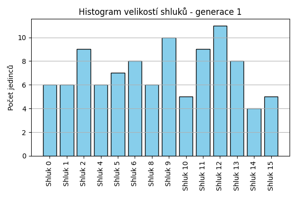
Stabilita mezi generací 0 → 1:
Shluk 7 → 13: 1 jedinců (16.7 %)
Shluk 7 → 9: 2 jedinců (33.3 %)
Shluk 7 → 5: 2 jedinců (33.3 %)
Shluk 7 → 1: 1 jedinců (16.7 %)
Shluk 5 → 5: 5 jedinců (55.6 %)
Shluk 5 → 14: 1 jedinců (11.1 %)
Shluk 5 → 12: 3 jedinců (33.3 %)
Shluk 8 → 8: 6 jedinců (75.0 %)
Shluk 8 → 4: 1 jedinců (12.5 %)
Shluk 8 → 10: 1 jedinců (12.5 %)
Shluk 0 → 11: 3 jedinců (25.0 %)
Shluk 0 → 0: 3 jedinců (25.0 %)
Shluk 0 → 12: 2 jedinců (16.7 %)
Shluk 0 → 9: 1 jedinců (8.3 %)
Shluk 0 → 13: 3 jedinců (25.0 %)
Shluk 3 → 6: 3 jedinců (33.3 %)
Shluk 3 → 2: 2 jedinců (22.2 %)
Shluk 3 → 0: 1 jedinců (11.1 %)
Shluk 3 → 14: 1 jedinců (11.1 %)
Shluk 3 → 15: 1 jedinců (11.1 %)
Shluk 3 → 4: 1 jedinců (11.1 %)
Shluk 10 → 1: 1 jedinců (12.5 %)
Shluk 10 → 10: 4 jedinců (50.0 %)
Shluk 10 → 12: 3 jedinců (37.5 %)
Shluk 11 → 2: 2 jedinců (28.6 %)
Shluk 11 → 0: 1 jedinců (14.3 %)
Shluk 11 → 11: 3 jedinců (42.9 %)
Shluk 11 → 13: 1 jedinců (14.3 %)
Shluk 12 → 1: 1 jedinců (33.3 %)
Shluk 12 → 12: 2 jedinců (66.7 %)
Shluk 2 → 2: 5 jedinců (62.5 %)
Shluk 2 → 15: 3 jedinců (37.5 %)
Shluk 1 → 14: 2 jedinců (33.3 %)
Shluk 1 → 1: 3 jedinců (50.0 %)
Shluk 1 → 12: 1 jedinců (16.7 %)
Shluk 4 → 13: 3 jedinců (33.3 %)
Shluk 4 → 9: 2 jedinců (22.2 %)
Shluk 4 → 4: 3 jedinců (33.3 %)
Shluk 4 → 15: 1 jedinců (11.1 %)
Shluk 9 → 9: 5 jedinců (83.3 %)
Shluk 9 → 4: 1 jedinců (16.7 %)
Shluk 6 → 6: 5 jedinců (55.6 %)
Shluk 6 → 11: 3 jedinců (33.3 %)
Shluk 6 → 0: 1 jedinců (11.1 %)
Jaccardovo mapování a overlap: Generace 0 → 1
- Shluk 7 → 5 (Jaccard: 0.18, Overlap: 0.33)
- Shluk 5 → 5 (Jaccard: 0.45, Overlap: 0.71)
- Shluk 8 → 8 (Jaccard: 0.75, Overlap: 1.00)
- Shluk 0 → 0 (Jaccard: 0.20, Overlap: 0.50)
- Shluk 3 → 6 (Jaccard: 0.21, Overlap: 0.38)
- Shluk 10 → 10 (Jaccard: 0.44, Overlap: 0.80)
- Shluk 11 → 11 (Jaccard: 0.23, Overlap: 0.43)
- Shluk 12 → 12 (Jaccard: 0.17, Overlap: 0.67)
- Shluk 2 → 2 (Jaccard: 0.42, Overlap: 0.62)
- Shluk 1 → 1 (Jaccard: 0.33, Overlap: 0.50)
- Shluk 4 → 4 (Jaccard: 0.25, Overlap: 0.50)
- Shluk 9 → 9 (Jaccard: 0.45, Overlap: 0.83)
- Shluk 6 → 6 (Jaccard: 0.42, Overlap: 0.62)
Posun centroidů mezi generací 0 → 1:
- Shluk 0: 693.2339
- Shluk 1: 987.9389
- Shluk 2: 886.3681
- Shluk 3: 757.8958
- Shluk 4: 911.5131
- Shluk 5: 680.8482
- Shluk 6: 555.4634
- Shluk 7: 1031.9262
- Shluk 8: 847.0809
- Shluk 9: 1066.8780
- Shluk 10: 922.9295
- Shluk 11: 650.2626
- Shluk 12: 1107.6720

Generace 2
Stabilita mezi generací 1 → 2:
Shluk 13 → 13: 4 jedinců (50.0 %)
Shluk 13 → 17: 1 jedinců (12.5 %)
Shluk 13 → 16: 1 jedinců (12.5 %)
Shluk 13 → 9: 1 jedinců (12.5 %)
Shluk 13 → 4: 1 jedinců (12.5 %)
Shluk 5 → 5: 4 jedinců (57.1 %)
Shluk 5 → 12: 3 jedinců (42.9 %)
Shluk 8 → 8: 4 jedinců (66.7 %)
Shluk 8 → 2: 1 jedinců (16.7 %)
Shluk 8 → 14: 1 jedinců (16.7 %)
Shluk 11 → 8: 2 jedinců (22.2 %)
Shluk 11 → 1: 2 jedinců (22.2 %)
Shluk 11 → 13: 2 jedinců (22.2 %)
Shluk 11 → 2: 3 jedinců (33.3 %)
Shluk 6 → 14: 2 jedinců (25.0 %)
Shluk 6 → 2: 5 jedinců (62.5 %)
Shluk 6 → 4: 1 jedinců (12.5 %)
Shluk 0 → 12: 1 jedinců (16.7 %)
Shluk 0 → 8: 3 jedinců (50.0 %)
Shluk 0 → 14: 2 jedinců (33.3 %)
Shluk 12 → 5: 2 jedinců (18.2 %)
Shluk 12 → 16: 2 jedinců (18.2 %)
Shluk 12 → 12: 4 jedinců (36.4 %)
Shluk 12 → 1: 2 jedinců (18.2 %)
Shluk 12 → 8: 1 jedinců (9.1 %)
Shluk 1 → 1: 4 jedinců (66.7 %)
Shluk 1 → 9: 1 jedinců (16.7 %)
Shluk 1 → 17: 1 jedinců (16.7 %)
Shluk 2 → 2: 6 jedinců (66.7 %)
Shluk 2 → 4: 2 jedinců (22.2 %)
Shluk 2 → 8: 1 jedinců (11.1 %)
Shluk 10 → 12: 1 jedinců (20.0 %)
Shluk 10 → 8: 3 jedinců (60.0 %)
Shluk 10 → 1: 1 jedinců (20.0 %)
Shluk 9 → 9: 4 jedinců (40.0 %)
Shluk 9 → 16: 1 jedinců (10.0 %)
Shluk 9 → 5: 2 jedinců (20.0 %)
Shluk 9 → 17: 1 jedinců (10.0 %)
Shluk 9 → 4: 1 jedinců (10.0 %)
Shluk 9 → 13: 1 jedinců (10.0 %)
Shluk 14 → 14: 3 jedinců (75.0 %)
Shluk 14 → 16: 1 jedinců (25.0 %)
Shluk 15 → 2: 2 jedinců (40.0 %)
Shluk 15 → 9: 1 jedinců (20.0 %)
Shluk 15 → 5: 2 jedinců (40.0 %)
Shluk 4 → 4: 6 jedinců (100.0 %)
Jaccardovo mapování a overlap: Generace 1 → 2
- Shluk 13 → 13 (Jaccard: 0.36, Overlap: 0.57)
- Shluk 5 → 5 (Jaccard: 0.31, Overlap: 0.57)
- Shluk 8 → 8 (Jaccard: 0.25, Overlap: 0.67)
- Shluk 11 → 13 (Jaccard: 0.14, Overlap: 0.29)
- Shluk 6 → 2 (Jaccard: 0.25, Overlap: 0.62)
- Shluk 0 → 8 (Jaccard: 0.18, Overlap: 0.50)
- Shluk 12 → 12 (Jaccard: 0.25, Overlap: 0.44)
- Shluk 1 → 1 (Jaccard: 0.36, Overlap: 0.67)
- Shluk 2 → 2 (Jaccard: 0.30, Overlap: 0.67)
- Shluk 10 → 8 (Jaccard: 0.19, Overlap: 0.60)
- Shluk 9 → 9 (Jaccard: 0.31, Overlap: 0.57)
- Shluk 14 → 14 (Jaccard: 0.33, Overlap: 0.75)
- Shluk 15 → 5 (Jaccard: 0.15, Overlap: 0.40)
- Shluk 4 → 4 (Jaccard: 0.55, Overlap: 1.00)
Posun centroidů mezi generací 1 → 2:
- Shluk 0: 807.7036
- Shluk 1: 870.7262
- Shluk 2: 699.9822
- Shluk 3: 643.4319
- Shluk 4: 553.8854
- Shluk 5: 532.6017
- Shluk 6: 630.5257
- Shluk 7: 641.8777
- Shluk 8: 815.9596
- Shluk 9: 710.5993
- Shluk 10: 523.1166
Generace 3
Stabilita mezi generací 2 → 3:
Shluk 13 → 12: 2 jedinců (28.6 %)
Shluk 13 → 13: 4 jedinců (57.1 %)
Shluk 13 → 9: 1 jedinců (14.3 %)
Shluk 5 → 9: 2 jedinců (20.0 %)
Shluk 5 → 2: 2 jedinců (20.0 %)
Shluk 5 → 5: 3 jedinců (30.0 %)
Shluk 5 → 18: 1 jedinců (10.0 %)
Shluk 5 → 12: 2 jedinců (20.0 %)
Shluk 8 → 2: 6 jedinců (42.9 %)
Shluk 8 → 18: 1 jedinců (7.1 %)
Shluk 8 → 1: 1 jedinců (7.1 %)
Shluk 8 → 8: 4 jedinců (28.6 %)
Shluk 8 → 17: 1 jedinců (7.1 %)
Shluk 8 → 9: 1 jedinců (7.1 %)
Shluk 14 → 18: 2 jedinců (25.0 %)
Shluk 14 → 1: 3 jedinců (37.5 %)
Shluk 14 → 14: 2 jedinců (25.0 %)
Shluk 14 → 17: 1 jedinců (12.5 %)
Shluk 12 → 2: 3 jedinců (33.3 %)
Shluk 12 → 12: 4 jedinců (44.4 %)
Shluk 12 → 1: 1 jedinců (11.1 %)
Shluk 12 → 17: 1 jedinců (11.1 %)
Shluk 1 → 2: 2 jedinců (22.2 %)
Shluk 1 → 1: 3 jedinců (33.3 %)
Shluk 1 → 12: 1 jedinců (11.1 %)
Shluk 1 → 17: 2 jedinců (22.2 %)
Shluk 1 → 5: 1 jedinců (11.1 %)
Shluk 2 → 2: 10 jedinců (58.8 %)
Shluk 2 → 18: 6 jedinců (35.3 %)
Shluk 2 → 5: 1 jedinců (5.9 %)
Shluk 9 → 14: 1 jedinců (14.3 %)
Shluk 9 → 9: 2 jedinců (28.6 %)
Shluk 9 → 12: 2 jedinců (28.6 %)
Shluk 9 → 18: 2 jedinců (28.6 %)
Shluk 4 → 18: 3 jedinců (27.3 %)
Shluk 4 → 2: 6 jedinců (54.5 %)
Shluk 4 → 1: 1 jedinců (9.1 %)
Shluk 4 → 13: 1 jedinců (9.1 %)
Shluk 16 → 12: 1 jedinců (20.0 %)
Shluk 16 → 5: 2 jedinců (40.0 %)
Shluk 16 → 9: 1 jedinců (20.0 %)
Shluk 16 → 1: 1 jedinců (20.0 %)
Shluk 17 → 1: 1 jedinců (33.3 %)
Shluk 17 → 17: 2 jedinců (66.7 %)
Jaccardovo mapování a overlap: Generace 2 → 3
- Shluk 13 → 13 (Jaccard: 0.50, Overlap: 0.80)
- Shluk 5 → 5 (Jaccard: 0.21, Overlap: 0.43)
- Shluk 8 → 8 (Jaccard: 0.29, Overlap: 1.00)
- Shluk 14 → 14 (Jaccard: 0.22, Overlap: 0.67)
- Shluk 12 → 12 (Jaccard: 0.24, Overlap: 0.44)
- Shluk 1 → 1 (Jaccard: 0.18, Overlap: 0.33)
- Shluk 2 → 2 (Jaccard: 0.28, Overlap: 0.59)
- Shluk 9 → 9 (Jaccard: 0.17, Overlap: 0.29)
- Shluk 4 → 2 (Jaccard: 0.18, Overlap: 0.55)
- Shluk 16 → 5 (Jaccard: 0.20, Overlap: 0.40)
- Shluk 17 → 17 (Jaccard: 0.25, Overlap: 0.67)
Posun centroidů mezi generací 2 → 3:
- Shluk 0: 477.5030
- Shluk 1: 570.0855
- Shluk 2: 412.6103
- Shluk 3: 409.2253
- Shluk 4: 562.9839
- Shluk 5: 583.0975
- Shluk 6: 610.3458
- Shluk 7: 520.5248
- Shluk 8: 780.5261
- Shluk 9: 598.1254
Generace 4
Stabilita mezi generací 3 → 4:
Shluk 12 → 19: 1 jedinců (8.3 %)
Shluk 12 → 9: 1 jedinců (8.3 %)
Shluk 12 → 2: 5 jedinců (41.7 %)
Shluk 12 → 20: 2 jedinců (16.7 %)
Shluk 12 → 14: 2 jedinců (16.7 %)
Shluk 12 → 13: 1 jedinců (8.3 %)
Shluk 9 → 9: 3 jedinců (42.9 %)
Shluk 9 → 2: 1 jedinců (14.3 %)
Shluk 9 → 13: 1 jedinců (14.3 %)
Shluk 9 → 17: 2 jedinců (28.6 %)
Shluk 2 → 2: 13 jedinců (44.8 %)
Shluk 2 → 20: 8 jedinců (27.6 %)
Shluk 2 → 13: 7 jedinců (24.1 %)
Shluk 2 → 9: 1 jedinců (3.4 %)
Shluk 18 → 2: 8 jedinců (53.3 %)
Shluk 18 → 19: 2 jedinců (13.3 %)
Shluk 18 → 13: 2 jedinců (13.3 %)
Shluk 18 → 20: 1 jedinců (6.7 %)
Shluk 18 → 8: 2 jedinců (13.3 %)
Shluk 1 → 1: 2 jedinců (18.2 %)
Shluk 1 → 9: 2 jedinců (18.2 %)
Shluk 1 → 20: 2 jedinců (18.2 %)
Shluk 1 → 14: 1 jedinců (9.1 %)
Shluk 1 → 17: 2 jedinců (18.2 %)
Shluk 1 → 19: 1 jedinců (9.1 %)
Shluk 1 → 8: 1 jedinců (9.1 %)
Shluk 14 → 14: 1 jedinců (33.3 %)
Shluk 14 → 20: 1 jedinců (33.3 %)
Shluk 14 → 1: 1 jedinců (33.3 %)
Shluk 5 → 2: 4 jedinců (57.1 %)
Shluk 5 → 1: 1 jedinců (14.3 %)
Shluk 5 → 20: 1 jedinců (14.3 %)
Shluk 5 → 19: 1 jedinců (14.3 %)
Shluk 13 → 13: 2 jedinců (40.0 %)
Shluk 13 → 20: 2 jedinců (40.0 %)
Shluk 13 → 1: 1 jedinců (20.0 %)
Shluk 17 → 2: 2 jedinců (28.6 %)
Shluk 17 → 17: 2 jedinců (28.6 %)
Shluk 17 → 13: 1 jedinců (14.3 %)
Shluk 17 → 1: 1 jedinců (14.3 %)
Shluk 17 → 8: 1 jedinců (14.3 %)
Shluk 8 → 2: 1 jedinců (25.0 %)
Shluk 8 → 8: 3 jedinců (75.0 %)
Jaccardovo mapování a overlap: Generace 3 → 4
- Shluk 12 → 14 (Jaccard: 0.14, Overlap: 0.50)
- Shluk 9 → 9 (Jaccard: 0.27, Overlap: 0.43)
- Shluk 2 → 2 (Jaccard: 0.26, Overlap: 0.45)
- Shluk 18 → 2 (Jaccard: 0.20, Overlap: 0.53)
- Shluk 1 → 1 (Jaccard: 0.13, Overlap: 0.33)
- Shluk 14 → 14 (Jaccard: 0.17, Overlap: 0.33)
- Shluk 5 → 2 (Jaccard: 0.11, Overlap: 0.57)
- Shluk 13 → 13 (Jaccard: 0.12, Overlap: 0.40)
- Shluk 17 → 17 (Jaccard: 0.18, Overlap: 0.33)
- Shluk 8 → 8 (Jaccard: 0.38, Overlap: 0.75)
Posun centroidů mezi generací 3 → 4:
- Shluk 0: 387.4525
- Shluk 1: 433.0959
- Shluk 2: 441.6910
- Shluk 3: 482.6924
- Shluk 4: 766.0987
- Shluk 5: 574.1286
- Shluk 6: 600.5245
- Shluk 7: 691.9742
- Shluk 8: 364.6099
Generace 5
Stabilita mezi generací 4 → 5:
Shluk 19 → 14: 1 jedinců (20.0 %)
Shluk 19 → 2: 1 jedinců (20.0 %)
Shluk 19 → 19: 3 jedinců (60.0 %)
Shluk 9 → 2: 2 jedinců (28.6 %)
Shluk 9 → 20: 1 jedinců (14.3 %)
Shluk 9 → 9: 3 jedinců (42.9 %)
Shluk 9 → 1: 1 jedinců (14.3 %)
Shluk 2 → 2: 29 jedinců (85.3 %)
Shluk 2 → 20: 4 jedinců (11.8 %)
Shluk 2 → 1: 1 jedinců (2.9 %)
Shluk 20 → 20: 8 jedinců (47.1 %)
Shluk 20 → 19: 2 jedinců (11.8 %)
Shluk 20 → 1: 4 jedinců (23.5 %)
Shluk 20 → 2: 3 jedinců (17.6 %)
Shluk 13 → 2: 12 jedinců (85.7 %)
Shluk 13 → 14: 1 jedinců (7.1 %)
Shluk 13 → 9: 1 jedinců (7.1 %)
Shluk 1 → 1: 4 jedinců (66.7 %)
Shluk 1 → 20: 2 jedinců (33.3 %)
Shluk 14 → 14: 4 jedinců (100.0 %)
Shluk 17 → 9: 2 jedinců (33.3 %)
Shluk 17 → 1: 3 jedinců (50.0 %)
Shluk 17 → 2: 1 jedinců (16.7 %)
Shluk 8 → 1: 3 jedinců (42.9 %)
Shluk 8 → 14: 1 jedinců (14.3 %)
Shluk 8 → 2: 3 jedinců (42.9 %)
Jaccardovo mapování a overlap: Generace 4 → 5
- Shluk 19 → 19 (Jaccard: 0.43, Overlap: 0.60)
- Shluk 9 → 9 (Jaccard: 0.30, Overlap: 0.50)
- Shluk 2 → 2 (Jaccard: 0.52, Overlap: 0.85)
- Shluk 20 → 20 (Jaccard: 0.33, Overlap: 0.53)
- Shluk 13 → 2 (Jaccard: 0.23, Overlap: 0.86)
- Shluk 1 → 1 (Jaccard: 0.22, Overlap: 0.67)
- Shluk 14 → 14 (Jaccard: 0.57, Overlap: 1.00)
- Shluk 17 → 9 (Jaccard: 0.20, Overlap: 0.33)
- Shluk 8 → 1 (Jaccard: 0.15, Overlap: 0.43)
Posun centroidů mezi generací 4 → 5:
- Shluk 0: 554.2742
- Shluk 1: 356.0750
- Shluk 2: 470.6779
- Shluk 3: 488.7020
- Shluk 4: 750.7737
- Shluk 5: 476.0346
Generace 6
Stabilita mezi generací 5 → 6:
Shluk 14 → 14: 2 jedinců (28.6 %)
Shluk 14 → 23: 1 jedinců (14.3 %)
Shluk 14 → 19: 1 jedinců (14.3 %)
Shluk 14 → 2: 1 jedinců (14.3 %)
Shluk 14 → 21: 1 jedinců (14.3 %)
Shluk 14 → 22: 1 jedinců (14.3 %)
Shluk 2 → 2: 35 jedinců (68.6 %)
Shluk 2 → 1: 3 jedinců (5.9 %)
Shluk 2 → 21: 7 jedinců (13.7 %)
Shluk 2 → 22: 3 jedinců (5.9 %)
Shluk 2 → 9: 2 jedinců (3.9 %)
Shluk 2 → 23: 1 jedinců (2.0 %)
Shluk 20 → 2: 11 jedinců (73.3 %)
Shluk 20 → 14: 2 jedinců (13.3 %)
Shluk 20 → 22: 2 jedinců (13.3 %)
Shluk 1 → 14: 1 jedinců (6.2 %)
Shluk 1 → 22: 1 jedinců (6.2 %)
Shluk 1 → 1: 7 jedinců (43.8 %)
Shluk 1 → 2: 3 jedinců (18.8 %)
Shluk 1 → 23: 2 jedinců (12.5 %)
Shluk 1 → 19: 1 jedinců (6.2 %)
Shluk 1 → 21: 1 jedinců (6.2 %)
Shluk 19 → 19: 3 jedinců (60.0 %)
Shluk 19 → 14: 1 jedinců (20.0 %)
Shluk 19 → 22: 1 jedinců (20.0 %)
Shluk 9 → 9: 2 jedinců (33.3 %)
Shluk 9 → 14: 2 jedinců (33.3 %)
Shluk 9 → 23: 1 jedinců (16.7 %)
Shluk 9 → 2: 1 jedinců (16.7 %)
Jaccardovo mapování a overlap: Generace 5 → 6
- Shluk 14 → 14 (Jaccard: 0.15, Overlap: 0.29)
- Shluk 2 → 2 (Jaccard: 0.52, Overlap: 0.69)
- Shluk 20 → 2 (Jaccard: 0.20, Overlap: 0.73)
- Shluk 1 → 1 (Jaccard: 0.37, Overlap: 0.70)
- Shluk 19 → 19 (Jaccard: 0.43, Overlap: 0.60)
- Shluk 9 → 9 (Jaccard: 0.25, Overlap: 0.50)
Posun centroidů mezi generací 5 → 6:
- Shluk 0: 479.2419
- Shluk 1: 95.1721
- Shluk 2: 635.5885
- Shluk 3: 420.7751
- Shluk 4: 715.2047
- Shluk 5: 505.7717
Generace 7
Stabilita mezi generací 6 → 7:
Shluk 14 → 19: 1 jedinců (12.5 %)
Shluk 14 → 1: 1 jedinců (12.5 %)
Shluk 14 → 24: 2 jedinců (25.0 %)
Shluk 14 → 14: 3 jedinců (37.5 %)
Shluk 14 → 2: 1 jedinců (12.5 %)
Shluk 2 → 2: 40 jedinců (78.4 %)
Shluk 2 → 1: 9 jedinců (17.6 %)
Shluk 2 → 24: 1 jedinců (2.0 %)
Shluk 2 → 14: 1 jedinců (2.0 %)
Shluk 1 → 2: 3 jedinců (30.0 %)
Shluk 1 → 1: 6 jedinců (60.0 %)
Shluk 1 → 9: 1 jedinců (10.0 %)
Shluk 21 → 2: 5 jedinců (55.6 %)
Shluk 21 → 14: 3 jedinců (33.3 %)
Shluk 21 → 24: 1 jedinců (11.1 %)
Shluk 22 → 1: 2 jedinců (25.0 %)
Shluk 22 → 24: 1 jedinců (12.5 %)
Shluk 22 → 2: 5 jedinců (62.5 %)
Shluk 23 → 19: 1 jedinců (20.0 %)
Shluk 23 → 24: 1 jedinců (20.0 %)
Shluk 23 → 1: 1 jedinců (20.0 %)
Shluk 23 → 2: 1 jedinců (20.0 %)
Shluk 23 → 9: 1 jedinců (20.0 %)
Shluk 19 → 1: 1 jedinců (20.0 %)
Shluk 19 → 24: 2 jedinců (40.0 %)
Shluk 19 → 19: 2 jedinců (40.0 %)
Shluk 9 → 1: 2 jedinců (50.0 %)
Shluk 9 → 2: 1 jedinců (25.0 %)
Shluk 9 → 9: 1 jedinců (25.0 %)
Jaccardovo mapování a overlap: Generace 6 → 7
- Shluk 14 → 14 (Jaccard: 0.25, Overlap: 0.43)
- Shluk 2 → 2 (Jaccard: 0.60, Overlap: 0.78)
- Shluk 1 → 1 (Jaccard: 0.23, Overlap: 0.60)
- Shluk 21 → 14 (Jaccard: 0.23, Overlap: 0.43)
- Shluk 22 → 2 (Jaccard: 0.08, Overlap: 0.62)
- Shluk 23 → 9 (Jaccard: 0.14, Overlap: 0.33)
- Shluk 19 → 19 (Jaccard: 0.29, Overlap: 0.50)
- Shluk 9 → 9 (Jaccard: 0.17, Overlap: 0.33)
Posun centroidů mezi generací 6 → 7:
- Shluk 0: 688.3502
- Shluk 1: 245.8393
- Shluk 2: 783.6735
- Shluk 3: 480.1177
- Shluk 4: 564.7799
- Shluk 5: 311.4055
Generace 8
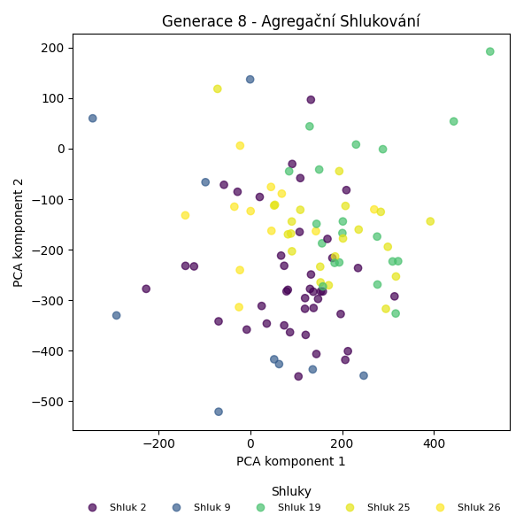
Stabilita mezi generací 7 → 8:
Shluk 19 → 25: 1 jedinců (25.0 %)
Shluk 19 → 19: 2 jedinců (50.0 %)
Shluk 19 → 9: 1 jedinců (25.0 %)
Shluk 2 → 2: 25 jedinců (44.6 %)
Shluk 2 → 19: 6 jedinců (10.7 %)
Shluk 2 → 25: 15 jedinců (26.8 %)
Shluk 2 → 26: 9 jedinců (16.1 %)
Shluk 2 → 9: 1 jedinců (1.8 %)
Shluk 1 → 19: 6 jedinců (27.3 %)
Shluk 1 → 25: 4 jedinců (18.2 %)
Shluk 1 → 2: 10 jedinců (45.5 %)
Shluk 1 → 9: 2 jedinců (9.1 %)
Shluk 24 → 26: 1 jedinců (12.5 %)
Shluk 24 → 19: 3 jedinců (37.5 %)
Shluk 24 → 2: 2 jedinců (25.0 %)
Shluk 24 → 9: 2 jedinců (25.0 %)
Shluk 14 → 25: 1 jedinců (14.3 %)
Shluk 14 → 2: 3 jedinců (42.9 %)
Shluk 14 → 19: 2 jedinců (28.6 %)
Shluk 14 → 26: 1 jedinců (14.3 %)
Shluk 9 → 9: 3 jedinců (100.0 %)
Jaccardovo mapování a overlap: Generace 7 → 8
- Shluk 19 → 19 (Jaccard: 0.10, Overlap: 0.50)
- Shluk 2 → 2 (Jaccard: 0.35, Overlap: 0.62)
- Shluk 1 → 2 (Jaccard: 0.19, Overlap: 0.45)
- Shluk 24 → 9 (Jaccard: 0.13, Overlap: 0.25)
- Shluk 14 → 19 (Jaccard: 0.08, Overlap: 0.29)
- Shluk 9 → 9 (Jaccard: 0.33, Overlap: 1.00)
Posun centroidů mezi generací 7 → 8:
- Shluk 0: 575.5479
- Shluk 1: 237.4028
- Shluk 2: 832.0083
- Shluk 3: 459.3335
- Shluk 4: 709.6394
Generace 9
Stabilita mezi generací 8 → 9:
Shluk 25 → 19: 7 jedinců (33.3 %)
Shluk 25 → 2: 12 jedinců (57.1 %)
Shluk 25 → 26: 1 jedinců (4.8 %)
Shluk 25 → 27: 1 jedinců (4.8 %)
Shluk 2 → 2: 32 jedinců (80.0 %)
Shluk 2 → 19: 4 jedinců (10.0 %)
Shluk 2 → 28: 4 jedinců (10.0 %)
Shluk 19 → 2: 7 jedinců (36.8 %)
Shluk 19 → 19: 7 jedinců (36.8 %)
Shluk 19 → 26: 1 jedinců (5.3 %)
Shluk 19 → 27: 1 jedinců (5.3 %)
Shluk 19 → 28: 3 jedinců (15.8 %)
Shluk 26 → 2: 2 jedinců (18.2 %)
Shluk 26 → 26: 7 jedinců (63.6 %)
Shluk 26 → 19: 2 jedinců (18.2 %)
Shluk 9 → 27: 1 jedinců (11.1 %)
Shluk 9 → 2: 1 jedinců (11.1 %)
Shluk 9 → 19: 2 jedinců (22.2 %)
Shluk 9 → 26: 3 jedinců (33.3 %)
Shluk 9 → 28: 2 jedinců (22.2 %)
Jaccardovo mapování a overlap: Generace 8 → 9
- Shluk 25 → 19 (Jaccard: 0.19, Overlap: 0.33)
- Shluk 2 → 2 (Jaccard: 0.52, Overlap: 0.80)
- Shluk 19 → 19 (Jaccard: 0.21, Overlap: 0.37)
- Shluk 26 → 26 (Jaccard: 0.44, Overlap: 0.64)
- Shluk 9 → 26 (Jaccard: 0.17, Overlap: 0.33)
Posun centroidů mezi generací 8 → 9:
- Shluk 0: 522.1370
- Shluk 1: 260.2387
- Shluk 2: 583.2817
- Shluk 3: 380.3155
- Shluk 4: 782.1143
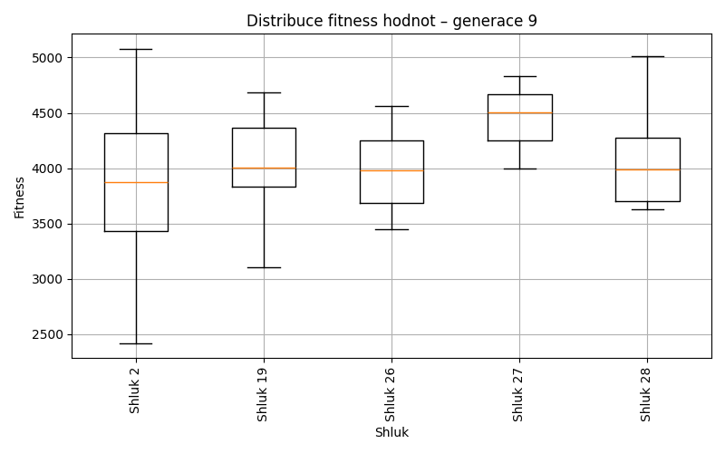
Generace 10
Stabilita mezi generací 9 → 10:
Shluk 19 → 19: 8 jedinců (36.4 %)
Shluk 19 → 26: 3 jedinců (13.6 %)
Shluk 19 → 2: 7 jedinců (31.8 %)
Shluk 19 → 31: 2 jedinců (9.1 %)
Shluk 19 → 29: 1 jedinců (4.5 %)
Shluk 19 → 28: 1 jedinců (4.5 %)
Shluk 2 → 2: 37 jedinců (68.5 %)
Shluk 2 → 29: 14 jedinců (25.9 %)
Shluk 2 → 19: 2 jedinců (3.7 %)
Shluk 2 → 31: 1 jedinců (1.9 %)
Shluk 26 → 30: 1 jedinců (8.3 %)
Shluk 26 → 28: 2 jedinců (16.7 %)
Shluk 26 → 29: 3 jedinců (25.0 %)
Shluk 26 → 26: 3 jedinců (25.0 %)
Shluk 26 → 31: 2 jedinců (16.7 %)
Shluk 26 → 19: 1 jedinců (8.3 %)
Shluk 27 → 27: 2 jedinců (66.7 %)
Shluk 27 → 30: 1 jedinců (33.3 %)
Shluk 28 → 28: 5 jedinců (55.6 %)
Shluk 28 → 29: 2 jedinců (22.2 %)
Shluk 28 → 2: 2 jedinců (22.2 %)
Jaccardovo mapování a overlap: Generace 9 → 10
- Shluk 19 → 19 (Jaccard: 0.32, Overlap: 0.73)
- Shluk 2 → 2 (Jaccard: 0.59, Overlap: 0.80)
- Shluk 26 → 26 (Jaccard: 0.20, Overlap: 0.50)
- Shluk 27 → 27 (Jaccard: 0.67, Overlap: 1.00)
- Shluk 28 → 28 (Jaccard: 0.42, Overlap: 0.62)
Posun centroidů mezi generací 9 → 10:
- Shluk 0: 290.1844
- Shluk 1: 451.5173
- Shluk 2: 268.6282
- Shluk 3: 475.2986
- Shluk 4: 509.6423
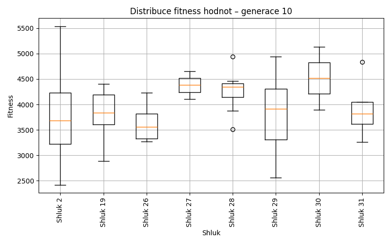
Generace 11

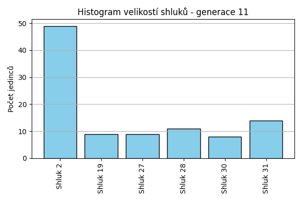
Stabilita mezi generací 10 → 11:
Shluk 19 → 31: 1 jedinců (9.1 %)
Shluk 19 → 2: 4 jedinců (36.4 %)
Shluk 19 → 19: 4 jedinců (36.4 %)
Shluk 19 → 30: 2 jedinců (18.2 %)
Shluk 2 → 2: 28 jedinců (60.9 %)
Shluk 2 → 27: 6 jedinců (13.0 %)
Shluk 2 → 19: 3 jedinců (6.5 %)
Shluk 2 → 30: 1 jedinců (2.2 %)
Shluk 2 → 31: 6 jedinců (13.0 %)
Shluk 2 → 28: 2 jedinců (4.3 %)
Shluk 29 → 2: 16 jedinců (80.0 %)
Shluk 29 → 27: 1 jedinců (5.0 %)
Shluk 29 → 28: 1 jedinců (5.0 %)
Shluk 29 → 31: 2 jedinců (10.0 %)
Shluk 26 → 2: 1 jedinců (16.7 %)
Shluk 26 → 27: 1 jedinců (16.7 %)
Shluk 26 → 28: 1 jedinců (16.7 %)
Shluk 26 → 30: 2 jedinců (33.3 %)
Shluk 26 → 19: 1 jedinců (16.7 %)
Shluk 30 → 30: 2 jedinců (100.0 %)
Shluk 28 → 28: 6 jedinců (75.0 %)
Shluk 28 → 19: 1 jedinců (12.5 %)
Shluk 28 → 30: 1 jedinců (12.5 %)
Shluk 27 → 27: 1 jedinců (50.0 %)
Shluk 27 → 28: 1 jedinců (50.0 %)
Shluk 31 → 31: 5 jedinců (100.0 %)
Jaccardovo mapování a overlap: Generace 10 → 11
- Shluk 19 → 19 (Jaccard: 0.25, Overlap: 0.44)
- Shluk 2 → 2 (Jaccard: 0.42, Overlap: 0.61)
- Shluk 29 → 2 (Jaccard: 0.30, Overlap: 0.80)
- Shluk 26 → 30 (Jaccard: 0.17, Overlap: 0.33)
- Shluk 30 → 30 (Jaccard: 0.25, Overlap: 1.00)
- Shluk 28 → 28 (Jaccard: 0.46, Overlap: 0.75)
- Shluk 27 → 27 (Jaccard: 0.10, Overlap: 0.50)
- Shluk 31 → 31 (Jaccard: 0.36, Overlap: 1.00)
Posun centroidů mezi generací 10 → 11:
- Shluk 0: 116.7828
- Shluk 1: 464.3231
- Shluk 2: 526.4260
- Shluk 3: 417.6471
- Shluk 4: 784.1276
- Shluk 5: 832.9267
Generace 12
Stabilita mezi generací 11 → 12:
Shluk 31 → 19: 1 jedinců (7.1 %)
Shluk 31 → 31: 6 jedinců (42.9 %)
Shluk 31 → 2: 6 jedinců (42.9 %)
Shluk 31 → 30: 1 jedinců (7.1 %)
Shluk 2 → 2: 23 jedinců (46.9 %)
Shluk 2 → 32: 20 jedinců (40.8 %)
Shluk 2 → 31: 4 jedinců (8.2 %)
Shluk 2 → 19: 1 jedinců (2.0 %)
Shluk 2 → 27: 1 jedinců (2.0 %)
Shluk 27 → 27: 2 jedinců (22.2 %)
Shluk 27 → 31: 1 jedinců (11.1 %)
Shluk 27 → 32: 3 jedinců (33.3 %)
Shluk 27 → 2: 3 jedinců (33.3 %)
Shluk 19 → 19: 4 jedinců (44.4 %)
Shluk 19 → 2: 1 jedinců (11.1 %)
Shluk 19 → 32: 2 jedinců (22.2 %)
Shluk 19 → 31: 1 jedinců (11.1 %)
Shluk 19 → 30: 1 jedinců (11.1 %)
Shluk 30 → 28: 2 jedinců (25.0 %)
Shluk 30 → 30: 4 jedinců (50.0 %)
Shluk 30 → 31: 1 jedinců (12.5 %)
Shluk 30 → 2: 1 jedinců (12.5 %)
Shluk 28 → 28: 2 jedinců (18.2 %)
Shluk 28 → 32: 3 jedinců (27.3 %)
Shluk 28 → 30: 2 jedinců (18.2 %)
Shluk 28 → 31: 1 jedinců (9.1 %)
Shluk 28 → 19: 2 jedinců (18.2 %)
Shluk 28 → 2: 1 jedinců (9.1 %)
Jaccardovo mapování a overlap: Generace 11 → 12
- Shluk 31 → 31 (Jaccard: 0.27, Overlap: 0.43)
- Shluk 2 → 2 (Jaccard: 0.38, Overlap: 0.66)
- Shluk 27 → 27 (Jaccard: 0.20, Overlap: 0.67)
- Shluk 19 → 19 (Jaccard: 0.31, Overlap: 0.50)
- Shluk 30 → 30 (Jaccard: 0.33, Overlap: 0.50)
- Shluk 28 → 28 (Jaccard: 0.15, Overlap: 0.50)
Posun centroidů mezi generací 11 → 12:
- Shluk 0: 202.4317
- Shluk 1: 258.4428
- Shluk 2: 284.0921
- Shluk 3: 369.5566
- Shluk 4: 489.5547
- Shluk 5: 422.5043
Generace 13

Stabilita mezi generací 12 → 13:
Shluk 19 → 27: 1 jedinců (12.5 %)
Shluk 19 → 34: 1 jedinců (12.5 %)
Shluk 19 → 19: 3 jedinců (37.5 %)
Shluk 19 → 33: 3 jedinců (37.5 %)
Shluk 2 → 2: 15 jedinců (42.9 %)
Shluk 2 → 34: 11 jedinců (31.4 %)
Shluk 2 → 32: 9 jedinců (25.7 %)
Shluk 27 → 2: 1 jedinců (33.3 %)
Shluk 27 → 27: 2 jedinců (66.7 %)
Shluk 32 → 2: 12 jedinců (42.9 %)
Shluk 32 → 33: 3 jedinců (10.7 %)
Shluk 32 → 32: 9 jedinců (32.1 %)
Shluk 32 → 34: 4 jedinců (14.3 %)
Shluk 28 → 19: 2 jedinců (50.0 %)
Shluk 28 → 34: 1 jedinců (25.0 %)
Shluk 28 → 33: 1 jedinců (25.0 %)
Shluk 30 → 34: 2 jedinců (25.0 %)
Shluk 30 → 35: 1 jedinců (12.5 %)
Shluk 30 → 27: 2 jedinců (25.0 %)
Shluk 30 → 33: 1 jedinců (12.5 %)
Shluk 30 → 19: 2 jedinců (25.0 %)
Shluk 31 → 33: 1 jedinců (7.1 %)
Shluk 31 → 35: 2 jedinců (14.3 %)
Shluk 31 → 2: 10 jedinců (71.4 %)
Shluk 31 → 34: 1 jedinců (7.1 %)
Jaccardovo mapování a overlap: Generace 12 → 13
- Shluk 19 → 19 (Jaccard: 0.25, Overlap: 0.43)
- Shluk 2 → 2 (Jaccard: 0.26, Overlap: 0.43)
- Shluk 27 → 27 (Jaccard: 0.33, Overlap: 0.67)
- Shluk 32 → 32 (Jaccard: 0.24, Overlap: 0.50)
- Shluk 28 → 19 (Jaccard: 0.22, Overlap: 0.50)
- Shluk 30 → 27 (Jaccard: 0.18, Overlap: 0.40)
- Shluk 31 → 2 (Jaccard: 0.24, Overlap: 0.71)
Posun centroidů mezi generací 12 → 13:
- Shluk 0: 573.7989
- Shluk 1: 401.9161
- Shluk 2: 450.3930
- Shluk 3: 388.0803
- Shluk 4: 683.7649
- Shluk 5: 198.7768
- Shluk 6: 625.7591
Generace 14

Stabilita mezi generací 13 → 14:
Shluk 27 → 2: 3 jedinců (60.0 %)
Shluk 27 → 27: 1 jedinců (20.0 %)
Shluk 27 → 19: 1 jedinců (20.0 %)
Shluk 2 → 32: 12 jedinců (31.6 %)
Shluk 2 → 2: 16 jedinců (42.1 %)
Shluk 2 → 35: 7 jedinců (18.4 %)
Shluk 2 → 19: 3 jedinců (7.9 %)
Shluk 33 → 36: 1 jedinců (11.1 %)
Shluk 33 → 33: 5 jedinců (55.6 %)
Shluk 33 → 35: 2 jedinců (22.2 %)
Shluk 33 → 2: 1 jedinců (11.1 %)
Shluk 32 → 32: 11 jedinců (61.1 %)
Shluk 32 → 33: 2 jedinců (11.1 %)
Shluk 32 → 2: 4 jedinců (22.2 %)
Shluk 32 → 35: 1 jedinců (5.6 %)
Shluk 34 → 35: 3 jedinců (15.0 %)
Shluk 34 → 32: 4 jedinců (20.0 %)
Shluk 34 → 2: 9 jedinců (45.0 %)
Shluk 34 → 33: 1 jedinců (5.0 %)
Shluk 34 → 36: 3 jedinců (15.0 %)
Shluk 19 → 27: 2 jedinců (28.6 %)
Shluk 19 → 32: 1 jedinců (14.3 %)
Shluk 19 → 2: 1 jedinců (14.3 %)
Shluk 19 → 19: 3 jedinců (42.9 %)
Shluk 35 → 35: 3 jedinců (100.0 %)
Jaccardovo mapování a overlap: Generace 13 → 14
- Shluk 27 → 27 (Jaccard: 0.14, Overlap: 0.33)
- Shluk 2 → 2 (Jaccard: 0.29, Overlap: 0.47)
- Shluk 33 → 33 (Jaccard: 0.42, Overlap: 0.62)
- Shluk 32 → 32 (Jaccard: 0.31, Overlap: 0.61)
- Shluk 34 → 2 (Jaccard: 0.20, Overlap: 0.45)
- Shluk 19 → 19 (Jaccard: 0.27, Overlap: 0.43)
- Shluk 35 → 35 (Jaccard: 0.19, Overlap: 1.00)
Posun centroidů mezi generací 13 → 14:
- Shluk 0: 587.6209
- Shluk 1: 552.3385
- Shluk 2: 358.5425
- Shluk 3: 457.8893
- Shluk 4: 982.0270
- Shluk 5: 175.2580
- Shluk 6: 652.3218
Generace 15
Stabilita mezi generací 14 → 15:
Shluk 2 → 19: 1 jedinců (2.9 %)
Shluk 2 → 2: 23 jedinců (67.6 %)
Shluk 2 → 37: 9 jedinců (26.5 %)
Shluk 2 → 33: 1 jedinců (2.9 %)
Shluk 32 → 2: 20 jedinců (71.4 %)
Shluk 32 → 37: 8 jedinců (28.6 %)
Shluk 36 → 33: 2 jedinců (50.0 %)
Shluk 36 → 37: 2 jedinců (50.0 %)
Shluk 35 → 2: 13 jedinců (81.2 %)
Shluk 35 → 38: 2 jedinců (12.5 %)
Shluk 35 → 37: 1 jedinců (6.2 %)
Shluk 27 → 27: 3 jedinců (100.0 %)
Shluk 33 → 33: 3 jedinců (37.5 %)
Shluk 33 → 38: 2 jedinců (25.0 %)
Shluk 33 → 2: 2 jedinců (25.0 %)
Shluk 33 → 37: 1 jedinců (12.5 %)
Shluk 19 → 2: 2 jedinců (28.6 %)
Shluk 19 → 27: 1 jedinců (14.3 %)
Shluk 19 → 37: 1 jedinců (14.3 %)
Shluk 19 → 19: 3 jedinců (42.9 %)
Jaccardovo mapování a overlap: Generace 14 → 15
- Shluk 2 → 2 (Jaccard: 0.32, Overlap: 0.68)
- Shluk 32 → 2 (Jaccard: 0.29, Overlap: 0.71)
- Shluk 36 → 33 (Jaccard: 0.25, Overlap: 0.50)
- Shluk 35 → 2 (Jaccard: 0.21, Overlap: 0.81)
- Shluk 27 → 27 (Jaccard: 0.75, Overlap: 1.00)
- Shluk 33 → 33 (Jaccard: 0.27, Overlap: 0.50)
- Shluk 19 → 19 (Jaccard: 0.38, Overlap: 0.75)
Posun centroidů mezi generací 14 → 15:
- Shluk 0: 225.5201
- Shluk 1: 471.5622
- Shluk 2: 698.0102
- Shluk 3: 318.8288
- Shluk 4: 798.6791
- Shluk 5: 151.4402
Generace 16
Stabilita mezi generací 15 → 16:
Shluk 19 → 38: 1 jedinců (25.0 %)
Shluk 19 → 19: 3 jedinců (75.0 %)
Shluk 2 → 39: 11 jedinců (18.3 %)
Shluk 2 → 2: 44 jedinců (73.3 %)
Shluk 2 → 19: 4 jedinců (6.7 %)
Shluk 2 → 33: 1 jedinců (1.7 %)
Shluk 37 → 2: 18 jedinců (81.8 %)
Shluk 37 → 19: 2 jedinců (9.1 %)
Shluk 37 → 39: 2 jedinců (9.1 %)
Shluk 33 → 2: 2 jedinců (33.3 %)
Shluk 33 → 39: 1 jedinců (16.7 %)
Shluk 33 → 33: 3 jedinců (50.0 %)
Shluk 27 → 19: 2 jedinců (50.0 %)
Shluk 27 → 38: 1 jedinců (25.0 %)
Shluk 27 → 2: 1 jedinců (25.0 %)
Shluk 38 → 38: 2 jedinců (50.0 %)
Shluk 38 → 19: 2 jedinců (50.0 %)
Jaccardovo mapování a overlap: Generace 15 → 16
- Shluk 19 → 19 (Jaccard: 0.21, Overlap: 0.75)
- Shluk 2 → 2 (Jaccard: 0.54, Overlap: 0.73)
- Shluk 37 → 2 (Jaccard: 0.26, Overlap: 0.82)
- Shluk 33 → 33 (Jaccard: 0.43, Overlap: 0.75)
- Shluk 27 → 38 (Jaccard: 0.14, Overlap: 0.25)
- Shluk 38 → 38 (Jaccard: 0.33, Overlap: 0.50)
Posun centroidů mezi generací 15 → 16:
- Shluk 0: 128.1854
- Shluk 1: 721.1283
- Shluk 2: 633.3396
- Shluk 3: 620.2605
- Shluk 4: 433.7556
Generace 17
Stabilita mezi generací 16 → 17:
Shluk 38 → 38: 1 jedinců (25.0 %)
Shluk 38 → 42: 1 jedinců (25.0 %)
Shluk 38 → 19: 1 jedinců (25.0 %)
Shluk 38 → 43: 1 jedinců (25.0 %)
Shluk 39 → 2: 10 jedinců (71.4 %)
Shluk 39 → 41: 3 jedinců (21.4 %)
Shluk 39 → 40: 1 jedinců (7.1 %)
Shluk 2 → 2: 28 jedinců (43.1 %)
Shluk 2 → 40: 20 jedinců (30.8 %)
Shluk 2 → 41: 14 jedinců (21.5 %)
Shluk 2 → 42: 3 jedinců (4.6 %)
Shluk 19 → 40: 4 jedinců (30.8 %)
Shluk 19 → 42: 1 jedinců (7.7 %)
Shluk 19 → 19: 5 jedinců (38.5 %)
Shluk 19 → 2: 3 jedinců (23.1 %)
Shluk 33 → 41: 1 jedinců (25.0 %)
Shluk 33 → 38: 1 jedinců (25.0 %)
Shluk 33 → 43: 1 jedinců (25.0 %)
Shluk 33 → 42: 1 jedinců (25.0 %)
Jaccardovo mapování a overlap: Generace 16 → 17
- Shluk 38 → 38 (Jaccard: 0.20, Overlap: 0.50)
- Shluk 39 → 2 (Jaccard: 0.22, Overlap: 0.71)
- Shluk 2 → 2 (Jaccard: 0.36, Overlap: 0.68)
- Shluk 19 → 19 (Jaccard: 0.36, Overlap: 0.83)
- Shluk 33 → 38 (Jaccard: 0.20, Overlap: 0.50)
Posun centroidů mezi generací 16 → 17:
- Shluk 0: 117.6429
- Shluk 1: 569.5891
- Shluk 2: 498.7169
- Shluk 3: 388.8046
- Shluk 4: 731.0542
Generace 18
Stabilita mezi generací 17 → 18:
Shluk 38 → 44: 1 jedinců (50.0 %)
Shluk 38 → 38: 1 jedinců (50.0 %)
Shluk 2 → 2: 27 jedinců (65.9 %)
Shluk 2 → 41: 11 jedinců (26.8 %)
Shluk 2 → 44: 2 jedinců (4.9 %)
Shluk 2 → 19: 1 jedinců (2.4 %)
Shluk 40 → 41: 5 jedinců (20.0 %)
Shluk 40 → 19: 5 jedinců (20.0 %)
Shluk 40 → 2: 14 jedinců (56.0 %)
Shluk 40 → 42: 1 jedinců (4.0 %)
Shluk 41 → 2: 9 jedinců (50.0 %)
Shluk 41 → 41: 6 jedinců (33.3 %)
Shluk 41 → 42: 1 jedinců (5.6 %)
Shluk 41 → 19: 1 jedinců (5.6 %)
Shluk 41 → 44: 1 jedinců (5.6 %)
Shluk 42 → 42: 3 jedinců (50.0 %)
Shluk 42 → 41: 2 jedinců (33.3 %)
Shluk 42 → 2: 1 jedinců (16.7 %)
Shluk 19 → 44: 1 jedinců (16.7 %)
Shluk 19 → 19: 3 jedinců (50.0 %)
Shluk 19 → 42: 2 jedinců (33.3 %)
Shluk 43 → 42: 2 jedinců (100.0 %)
Jaccardovo mapování a overlap: Generace 17 → 18
- Shluk 38 → 38 (Jaccard: 0.50, Overlap: 1.00)
- Shluk 2 → 2 (Jaccard: 0.42, Overlap: 0.66)
- Shluk 40 → 2 (Jaccard: 0.23, Overlap: 0.56)
- Shluk 41 → 41 (Jaccard: 0.17, Overlap: 0.33)
- Shluk 42 → 42 (Jaccard: 0.25, Overlap: 0.50)
- Shluk 19 → 19 (Jaccard: 0.23, Overlap: 0.50)
- Shluk 43 → 42 (Jaccard: 0.22, Overlap: 1.00)
Posun centroidů mezi generací 17 → 18:
- Shluk 0: 190.3225
- Shluk 1: 380.5591
- Shluk 2: 414.0139
- Shluk 3: 977.9487
- Shluk 4: 803.8603
- Shluk 5: 910.9672
Generace 19
Stabilita mezi generací 18 → 19:
Shluk 44 → 44: 2 jedinců (40.0 %)
Shluk 44 → 2: 2 jedinců (40.0 %)
Shluk 44 → 46: 1 jedinců (20.0 %)
Shluk 2 → 45: 12 jedinců (23.5 %)
Shluk 2 → 2: 28 jedinců (54.9 %)
Shluk 2 → 46: 6 jedinců (11.8 %)
Shluk 2 → 38: 4 jedinců (7.8 %)
Shluk 2 → 19: 1 jedinců (2.0 %)
Shluk 41 → 46: 5 jedinců (20.8 %)
Shluk 41 → 2: 12 jedinců (50.0 %)
Shluk 41 → 45: 7 jedinců (29.2 %)
Shluk 19 → 47: 1 jedinců (10.0 %)
Shluk 19 → 46: 2 jedinců (20.0 %)
Shluk 19 → 19: 5 jedinců (50.0 %)
Shluk 19 → 2: 2 jedinců (20.0 %)
Shluk 42 → 46: 1 jedinců (11.1 %)
Shluk 42 → 42: 3 jedinců (33.3 %)
Shluk 42 → 47: 1 jedinců (11.1 %)
Shluk 42 → 2: 1 jedinců (11.1 %)
Shluk 42 → 19: 1 jedinců (11.1 %)
Shluk 42 → 38: 1 jedinců (11.1 %)
Shluk 42 → 45: 1 jedinců (11.1 %)
Shluk 38 → 38: 1 jedinců (100.0 %)
Jaccardovo mapování a overlap: Generace 18 → 19
- Shluk 44 → 44 (Jaccard: 0.40, Overlap: 1.00)
- Shluk 2 → 2 (Jaccard: 0.41, Overlap: 0.62)
- Shluk 41 → 2 (Jaccard: 0.21, Overlap: 0.50)
- Shluk 19 → 19 (Jaccard: 0.42, Overlap: 0.71)
- Shluk 42 → 42 (Jaccard: 0.33, Overlap: 1.00)
- Shluk 38 → 38 (Jaccard: 0.17, Overlap: 1.00)
Posun centroidů mezi generací 18 → 19:
- Shluk 0: 688.4045
- Shluk 1: 352.3804
- Shluk 2: 365.3810
- Shluk 3: 808.7262
- Shluk 4: 384.9846
- Shluk 5: 466.7212
Generace 20
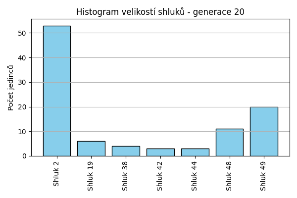
Stabilita mezi generací 19 → 20:
Shluk 44 → 44: 2 jedinců (100.0 %)
Shluk 45 → 2: 14 jedinců (70.0 %)
Shluk 45 → 48: 3 jedinců (15.0 %)
Shluk 45 → 49: 2 jedinců (10.0 %)
Shluk 45 → 19: 1 jedinců (5.0 %)
Shluk 2 → 19: 1 jedinců (2.2 %)
Shluk 2 → 38: 1 jedinců (2.2 %)
Shluk 2 → 2: 23 jedinců (51.1 %)
Shluk 2 → 49: 15 jedinců (33.3 %)
Shluk 2 → 48: 5 jedinců (11.1 %)
Shluk 46 → 2: 13 jedinců (86.7 %)
Shluk 46 → 48: 1 jedinců (6.7 %)
Shluk 46 → 49: 1 jedinců (6.7 %)
Shluk 47 → 42: 1 jedinců (50.0 %)
Shluk 47 → 44: 1 jedinců (50.0 %)
Shluk 42 → 38: 1 jedinců (33.3 %)
Shluk 42 → 49: 1 jedinců (33.3 %)
Shluk 42 → 42: 1 jedinců (33.3 %)
Shluk 19 → 19: 4 jedinců (57.1 %)
Shluk 19 → 49: 1 jedinců (14.3 %)
Shluk 19 → 42: 1 jedinců (14.3 %)
Shluk 19 → 48: 1 jedinců (14.3 %)
Shluk 38 → 48: 1 jedinců (16.7 %)
Shluk 38 → 38: 2 jedinců (33.3 %)
Shluk 38 → 2: 3 jedinců (50.0 %)
Jaccardovo mapování a overlap: Generace 19 → 20
- Shluk 44 → 44 (Jaccard: 0.67, Overlap: 1.00)
- Shluk 45 → 2 (Jaccard: 0.24, Overlap: 0.70)
- Shluk 2 → 2 (Jaccard: 0.31, Overlap: 0.51)
- Shluk 46 → 2 (Jaccard: 0.24, Overlap: 0.87)
- Shluk 47 → 44 (Jaccard: 0.25, Overlap: 0.50)
- Shluk 42 → 42 (Jaccard: 0.20, Overlap: 0.33)
- Shluk 19 → 19 (Jaccard: 0.44, Overlap: 0.67)
- Shluk 38 → 38 (Jaccard: 0.25, Overlap: 0.50)
Posun centroidů mezi generací 19 → 20:
- Shluk 0: 714.7203
- Shluk 1: 760.2755
- Shluk 2: 287.7895
- Shluk 3: 647.9960
- Shluk 4: 567.5183
- Shluk 5: 673.8618
- Shluk 6: 743.4462
Generace 21
Stabilita mezi generací 20 → 21:
Shluk 44 → 44: 2 jedinců (66.7 %)
Shluk 44 → 38: 1 jedinců (33.3 %)
Shluk 2 → 50: 11 jedinců (20.8 %)
Shluk 2 → 2: 19 jedinců (35.8 %)
Shluk 2 → 49: 23 jedinců (43.4 %)
Shluk 19 → 49: 4 jedinců (66.7 %)
Shluk 19 → 42: 2 jedinců (33.3 %)
Shluk 38 → 38: 4 jedinců (100.0 %)
Shluk 48 → 42: 4 jedinců (36.4 %)
Shluk 48 → 50: 2 jedinců (18.2 %)
Shluk 48 → 49: 5 jedinců (45.5 %)
Shluk 49 → 49: 11 jedinců (55.0 %)
Shluk 49 → 2: 6 jedinců (30.0 %)
Shluk 49 → 50: 3 jedinců (15.0 %)
Shluk 42 → 42: 3 jedinců (100.0 %)
Jaccardovo mapování a overlap: Generace 20 → 21
- Shluk 44 → 44 (Jaccard: 0.67, Overlap: 1.00)
- Shluk 2 → 2 (Jaccard: 0.32, Overlap: 0.76)
- Shluk 19 → 42 (Jaccard: 0.15, Overlap: 0.33)
- Shluk 38 → 38 (Jaccard: 0.80, Overlap: 1.00)
- Shluk 48 → 42 (Jaccard: 0.25, Overlap: 0.44)
- Shluk 49 → 49 (Jaccard: 0.21, Overlap: 0.55)
- Shluk 42 → 42 (Jaccard: 0.33, Overlap: 1.00)
Posun centroidů mezi generací 20 → 21:
- Shluk 0: 433.6216
- Shluk 1: 706.0777
- Shluk 2: 380.2572
- Shluk 3: 632.3373
- Shluk 4: 825.1084
- Shluk 5: 204.5058
Generace 22
Stabilita mezi generací 21 → 22:
Shluk 44 → 44: 2 jedinců (100.0 %)
Shluk 50 → 2: 8 jedinců (50.0 %)
Shluk 50 → 50: 6 jedinců (37.5 %)
Shluk 50 → 44: 1 jedinců (6.2 %)
Shluk 50 → 49: 1 jedinců (6.2 %)
Shluk 49 → 44: 5 jedinců (11.6 %)
Shluk 49 → 50: 8 jedinců (18.6 %)
Shluk 49 → 2: 13 jedinců (30.2 %)
Shluk 49 → 49: 17 jedinců (39.5 %)
Shluk 38 → 38: 5 jedinců (100.0 %)
Shluk 2 → 50: 8 jedinců (32.0 %)
Shluk 2 → 2: 11 jedinců (44.0 %)
Shluk 2 → 38: 1 jedinců (4.0 %)
Shluk 2 → 49: 5 jedinců (20.0 %)
Shluk 42 → 50: 1 jedinců (11.1 %)
Shluk 42 → 2: 5 jedinců (55.6 %)
Shluk 42 → 38: 1 jedinců (11.1 %)
Shluk 42 → 44: 2 jedinců (22.2 %)
Jaccardovo mapování a overlap: Generace 21 → 22
- Shluk 44 → 44 (Jaccard: 0.20, Overlap: 1.00)
- Shluk 50 → 50 (Jaccard: 0.18, Overlap: 0.38)
- Shluk 49 → 49 (Jaccard: 0.35, Overlap: 0.74)
- Shluk 38 → 38 (Jaccard: 0.71, Overlap: 1.00)
- Shluk 2 → 2 (Jaccard: 0.22, Overlap: 0.44)
- Shluk 42 → 2 (Jaccard: 0.12, Overlap: 0.56)
Posun centroidů mezi generací 21 → 22:
- Shluk 0: 414.2415
- Shluk 1: 191.7603
- Shluk 2: 446.4417
- Shluk 3: 599.2955
- Shluk 4: 855.2114
Generace 23
Stabilita mezi generací 22 → 23:
Shluk 44 → 38: 1 jedinců (10.0 %)
Shluk 44 → 2: 1 jedinců (10.0 %)
Shluk 44 → 44: 4 jedinců (40.0 %)
Shluk 44 → 53: 1 jedinců (10.0 %)
Shluk 44 → 52: 3 jedinců (30.0 %)
Shluk 2 → 49: 11 jedinců (29.7 %)
Shluk 2 → 51: 3 jedinců (8.1 %)
Shluk 2 → 2: 8 jedinců (21.6 %)
Shluk 2 → 44: 1 jedinců (2.7 %)
Shluk 2 → 52: 3 jedinců (8.1 %)
Shluk 2 → 53: 7 jedinců (18.9 %)
Shluk 2 → 54: 1 jedinců (2.7 %)
Shluk 2 → 50: 3 jedinců (8.1 %)
Shluk 50 → 49: 7 jedinců (30.4 %)
Shluk 50 → 50: 7 jedinců (30.4 %)
Shluk 50 → 52: 2 jedinců (8.7 %)
Shluk 50 → 2: 4 jedinců (17.4 %)
Shluk 50 → 51: 1 jedinců (4.3 %)
Shluk 50 → 44: 2 jedinců (8.7 %)
Shluk 38 → 38: 1 jedinců (14.3 %)
Shluk 38 → 49: 3 jedinců (42.9 %)
Shluk 38 → 54: 1 jedinců (14.3 %)
Shluk 38 → 51: 1 jedinců (14.3 %)
Shluk 38 → 53: 1 jedinců (14.3 %)
Shluk 49 → 50: 1 jedinců (4.3 %)
Shluk 49 → 52: 6 jedinců (26.1 %)
Shluk 49 → 49: 16 jedinců (69.6 %)
Jaccardovo mapování a overlap: Generace 22 → 23
- Shluk 44 → 44 (Jaccard: 0.31, Overlap: 0.57)
- Shluk 2 → 2 (Jaccard: 0.19, Overlap: 0.62)
- Shluk 50 → 50 (Jaccard: 0.26, Overlap: 0.64)
- Shluk 38 → 38 (Jaccard: 0.12, Overlap: 0.50)
- Shluk 49 → 49 (Jaccard: 0.36, Overlap: 0.70)
Posun centroidů mezi generací 22 → 23:
- Shluk 0: 424.3873
- Shluk 1: 215.9189
- Shluk 2: 625.8219
- Shluk 3: 477.9069
- Shluk 4: 300.0890
Generace 24
Stabilita mezi generací 23 → 24:
Shluk 38 → 38: 1 jedinců (50.0 %)
Shluk 38 → 44: 1 jedinců (50.0 %)
Shluk 49 → 49: 27 jedinců (73.0 %)
Shluk 49 → 53: 9 jedinců (24.3 %)
Shluk 49 → 44: 1 jedinců (2.7 %)
Shluk 2 → 49: 9 jedinců (69.2 %)
Shluk 2 → 53: 2 jedinců (15.4 %)
Shluk 2 → 38: 2 jedinců (15.4 %)
Shluk 50 → 49: 4 jedinců (36.4 %)
Shluk 50 → 53: 7 jedinců (63.6 %)
Shluk 51 → 53: 5 jedinců (100.0 %)
Shluk 52 → 49: 8 jedinců (57.1 %)
Shluk 52 → 44: 1 jedinců (7.1 %)
Shluk 52 → 53: 5 jedinců (35.7 %)
Shluk 44 → 44: 3 jedinců (42.9 %)
Shluk 44 → 49: 4 jedinců (57.1 %)
Shluk 53 → 53: 7 jedinců (77.8 %)
Shluk 53 → 49: 2 jedinců (22.2 %)
Shluk 54 → 53: 1 jedinců (50.0 %)
Shluk 54 → 38: 1 jedinců (50.0 %)
Jaccardovo mapování a overlap: Generace 23 → 24
- Shluk 38 → 38 (Jaccard: 0.20, Overlap: 0.50)
- Shluk 49 → 49 (Jaccard: 0.42, Overlap: 0.73)
- Shluk 2 → 49 (Jaccard: 0.16, Overlap: 0.69)
- Shluk 50 → 53 (Jaccard: 0.17, Overlap: 0.64)
- Shluk 51 → 53 (Jaccard: 0.14, Overlap: 1.00)
- Shluk 52 → 49 (Jaccard: 0.13, Overlap: 0.57)
- Shluk 44 → 44 (Jaccard: 0.30, Overlap: 0.50)
- Shluk 53 → 53 (Jaccard: 0.18, Overlap: 0.78)
- Shluk 54 → 38 (Jaccard: 0.20, Overlap: 0.50)
Posun centroidů mezi generací 23 → 24:
- Shluk 0: 205.3815
- Shluk 1: 467.1540
- Shluk 2: 795.4381
- Shluk 3: 622.7556
Generace 25

Stabilita mezi generací 24 → 25:
Shluk 38 → 55: 1 jedinců (25.0 %)
Shluk 38 → 56: 2 jedinců (50.0 %)
Shluk 38 → 38: 1 jedinců (25.0 %)
Shluk 49 → 49: 34 jedinců (63.0 %)
Shluk 49 → 55: 10 jedinců (18.5 %)
Shluk 49 → 56: 9 jedinců (16.7 %)
Shluk 49 → 38: 1 jedinců (1.9 %)
Shluk 44 → 49: 1 jedinců (16.7 %)
Shluk 44 → 44: 2 jedinců (33.3 %)
Shluk 44 → 55: 3 jedinců (50.0 %)
Shluk 53 → 55: 8 jedinců (22.2 %)
Shluk 53 → 49: 20 jedinců (55.6 %)
Shluk 53 → 56: 8 jedinců (22.2 %)
Jaccardovo mapování a overlap: Generace 24 → 25
- Shluk 38 → 38 (Jaccard: 0.20, Overlap: 0.50)
- Shluk 49 → 49 (Jaccard: 0.45, Overlap: 0.63)
- Shluk 44 → 44 (Jaccard: 0.33, Overlap: 1.00)
- Shluk 53 → 49 (Jaccard: 0.28, Overlap: 0.56)
Posun centroidů mezi generací 24 → 25:
- Shluk 0: 869.8927
- Shluk 1: 548.7664
- Shluk 2: 245.7068
- Shluk 3: 521.2416
Generace 26
Stabilita mezi generací 25 → 26:
Shluk 55 → 55: 12 jedinců (54.5 %)
Shluk 55 → 49: 4 jedinců (18.2 %)
Shluk 55 → 57: 4 jedinců (18.2 %)
Shluk 55 → 56: 1 jedinců (4.5 %)
Shluk 55 → 58: 1 jedinců (4.5 %)
Shluk 49 → 57: 12 jedinců (21.8 %)
Shluk 49 → 49: 30 jedinců (54.5 %)
Shluk 49 → 56: 4 jedinců (7.3 %)
Shluk 49 → 55: 6 jedinců (10.9 %)
Shluk 49 → 38: 1 jedinců (1.8 %)
Shluk 49 → 44: 2 jedinců (3.6 %)
Shluk 56 → 49: 8 jedinců (42.1 %)
Shluk 56 → 55: 2 jedinců (10.5 %)
Shluk 56 → 56: 5 jedinců (26.3 %)
Shluk 56 → 44: 1 jedinců (5.3 %)
Shluk 56 → 58: 2 jedinců (10.5 %)
Shluk 56 → 57: 1 jedinců (5.3 %)
Shluk 44 → 44: 2 jedinců (100.0 %)
Shluk 38 → 58: 1 jedinců (50.0 %)
Shluk 38 → 38: 1 jedinců (50.0 %)
Jaccardovo mapování a overlap: Generace 25 → 26
- Shluk 55 → 55 (Jaccard: 0.40, Overlap: 0.60)
- Shluk 49 → 49 (Jaccard: 0.45, Overlap: 0.71)
- Shluk 56 → 56 (Jaccard: 0.21, Overlap: 0.50)
- Shluk 44 → 44 (Jaccard: 0.40, Overlap: 1.00)
- Shluk 38 → 38 (Jaccard: 0.33, Overlap: 0.50)
Posun centroidů mezi generací 25 → 26:
- Shluk 0: 805.1902
- Shluk 1: 410.6795
- Shluk 2: 565.9159
- Shluk 3: 308.0635
- Shluk 4: 613.1660
Generace 27
Stabilita mezi generací 26 → 27:
Shluk 55 → 59: 2 jedinců (10.0 %)
Shluk 55 → 55: 7 jedinců (35.0 %)
Shluk 55 → 44: 1 jedinců (5.0 %)
Shluk 55 → 58: 2 jedinců (10.0 %)
Shluk 55 → 57: 7 jedinců (35.0 %)
Shluk 55 → 56: 1 jedinců (5.0 %)
Shluk 57 → 57: 11 jedinců (64.7 %)
Shluk 57 → 56: 4 jedinců (23.5 %)
Shluk 57 → 49: 2 jedinců (11.8 %)
Shluk 49 → 58: 1 jedinců (2.4 %)
Shluk 49 → 57: 14 jedinců (33.3 %)
Shluk 49 → 49: 16 jedinců (38.1 %)
Shluk 49 → 55: 9 jedinců (21.4 %)
Shluk 49 → 56: 1 jedinců (2.4 %)
Shluk 49 → 44: 1 jedinců (2.4 %)
Shluk 44 → 58: 2 jedinců (40.0 %)
Shluk 44 → 44: 2 jedinců (40.0 %)
Shluk 44 → 57: 1 jedinců (20.0 %)
Shluk 56 → 44: 1 jedinců (10.0 %)
Shluk 56 → 56: 4 jedinců (40.0 %)
Shluk 56 → 57: 1 jedinců (10.0 %)
Shluk 56 → 55: 2 jedinců (20.0 %)
Shluk 56 → 59: 1 jedinců (10.0 %)
Shluk 56 → 49: 1 jedinců (10.0 %)
Shluk 38 → 44: 1 jedinců (50.0 %)
Shluk 38 → 55: 1 jedinců (50.0 %)
Shluk 58 → 58: 3 jedinců (75.0 %)
Shluk 58 → 44: 1 jedinců (25.0 %)
Jaccardovo mapování a overlap: Generace 26 → 27
- Shluk 55 → 55 (Jaccard: 0.22, Overlap: 0.37)
- Shluk 57 → 57 (Jaccard: 0.28, Overlap: 0.65)
- Shluk 49 → 49 (Jaccard: 0.36, Overlap: 0.84)
- Shluk 44 → 44 (Jaccard: 0.20, Overlap: 0.40)
- Shluk 56 → 56 (Jaccard: 0.25, Overlap: 0.40)
- Shluk 38 → 44 (Jaccard: 0.12, Overlap: 0.50)
- Shluk 58 → 58 (Jaccard: 0.33, Overlap: 0.75)
Posun centroidů mezi generací 26 → 27:
- Shluk 0: 192.0015
- Shluk 1: 373.0030
- Shluk 2: 629.8705
- Shluk 3: 691.5317
- Shluk 4: 610.4889
- Shluk 5: 480.5793
- Shluk 6: 646.1396
Generace 28
Stabilita mezi generací 27 → 28:
Shluk 59 → 58: 1 jedinců (33.3 %)
Shluk 59 → 60: 2 jedinců (66.7 %)
Shluk 57 → 49: 9 jedinců (26.5 %)
Shluk 57 → 60: 7 jedinců (20.6 %)
Shluk 57 → 57: 16 jedinců (47.1 %)
Shluk 57 → 55: 2 jedinců (5.9 %)
Shluk 58 → 57: 2 jedinců (25.0 %)
Shluk 58 → 58: 2 jedinců (25.0 %)
Shluk 58 → 60: 2 jedinců (25.0 %)
Shluk 58 → 55: 2 jedinců (25.0 %)
Shluk 49 → 49: 10 jedinců (52.6 %)
Shluk 49 → 60: 3 jedinců (15.8 %)
Shluk 49 → 55: 3 jedinců (15.8 %)
Shluk 49 → 57: 3 jedinců (15.8 %)
Shluk 56 → 49: 5 jedinců (50.0 %)
Shluk 56 → 57: 3 jedinců (30.0 %)
Shluk 56 → 60: 2 jedinců (20.0 %)
Shluk 44 → 55: 1 jedinců (14.3 %)
Shluk 44 → 49: 2 jedinců (28.6 %)
Shluk 44 → 60: 2 jedinců (28.6 %)
Shluk 44 → 58: 1 jedinců (14.3 %)
Shluk 44 → 57: 1 jedinců (14.3 %)
Shluk 55 → 60: 5 jedinců (26.3 %)
Shluk 55 → 55: 6 jedinců (31.6 %)
Shluk 55 → 49: 5 jedinců (26.3 %)
Shluk 55 → 57: 3 jedinců (15.8 %)
Jaccardovo mapování a overlap: Generace 27 → 28
- Shluk 59 → 58 (Jaccard: 0.17, Overlap: 0.33)
- Shluk 57 → 57 (Jaccard: 0.35, Overlap: 0.57)
- Shluk 58 → 58 (Jaccard: 0.20, Overlap: 0.50)
- Shluk 49 → 49 (Jaccard: 0.25, Overlap: 0.53)
- Shluk 56 → 49 (Jaccard: 0.14, Overlap: 0.50)
- Shluk 44 → 58 (Jaccard: 0.10, Overlap: 0.25)
- Shluk 55 → 55 (Jaccard: 0.22, Overlap: 0.43)
Posun centroidů mezi generací 27 → 28:
- Shluk 0: 721.5589
- Shluk 1: 389.1125
- Shluk 2: 144.4233
- Shluk 3: 678.1326
- Shluk 4: 329.8774

Generace 29
Stabilita mezi generací 28 → 29:
Shluk 58 → 58: 2 jedinců (50.0 %)
Shluk 58 → 61: 2 jedinců (50.0 %)
Shluk 49 → 57: 11 jedinců (35.5 %)
Shluk 49 → 58: 2 jedinců (6.5 %)
Shluk 49 → 60: 5 jedinců (16.1 %)
Shluk 49 → 49: 9 jedinců (29.0 %)
Shluk 49 → 55: 2 jedinců (6.5 %)
Shluk 49 → 63: 2 jedinců (6.5 %)
Shluk 57 → 57: 19 jedinců (67.9 %)
Shluk 57 → 60: 3 jedinců (10.7 %)
Shluk 57 → 49: 3 jedinců (10.7 %)
Shluk 57 → 55: 2 jedinců (7.1 %)
Shluk 57 → 63: 1 jedinců (3.6 %)
Shluk 60 → 57: 7 jedinců (30.4 %)
Shluk 60 → 60: 6 jedinců (26.1 %)
Shluk 60 → 55: 2 jedinců (8.7 %)
Shluk 60 → 62: 2 jedinců (8.7 %)
Shluk 60 → 61: 3 jedinců (13.0 %)
Shluk 60 → 63: 1 jedinců (4.3 %)
Shluk 60 → 49: 2 jedinců (8.7 %)
Shluk 55 → 55: 6 jedinců (42.9 %)
Shluk 55 → 57: 2 jedinců (14.3 %)
Shluk 55 → 49: 2 jedinců (14.3 %)
Shluk 55 → 60: 1 jedinců (7.1 %)
Shluk 55 → 63: 3 jedinců (21.4 %)
Jaccardovo mapování a overlap: Generace 28 → 29
- Shluk 58 → 58 (Jaccard: 0.33, Overlap: 0.50)
- Shluk 49 → 49 (Jaccard: 0.24, Overlap: 0.56)
- Shluk 57 → 57 (Jaccard: 0.40, Overlap: 0.68)
- Shluk 60 → 60 (Jaccard: 0.19, Overlap: 0.40)
- Shluk 55 → 55 (Jaccard: 0.30, Overlap: 0.50)
Posun centroidů mezi generací 28 → 29:
- Shluk 0: 745.2592
- Shluk 1: 556.8025
- Shluk 2: 383.0795
- Shluk 3: 574.9489
- Shluk 4: 313.8215
Generace 30
Stabilita mezi generací 29 → 30:
Shluk 58 → 58: 4 jedinců (100.0 %)
Shluk 57 → 57: 21 jedinců (53.8 %)
Shluk 57 → 58: 4 jedinců (10.3 %)
Shluk 57 → 64: 11 jedinců (28.2 %)
Shluk 57 → 55: 2 jedinců (5.1 %)
Shluk 57 → 62: 1 jedinců (2.6 %)
Shluk 60 → 57: 10 jedinců (66.7 %)
Shluk 60 → 58: 2 jedinců (13.3 %)
Shluk 60 → 55: 2 jedinců (13.3 %)
Shluk 60 → 64: 1 jedinců (6.7 %)
Shluk 55 → 55: 6 jedinců (50.0 %)
Shluk 55 → 57: 4 jedinců (33.3 %)
Shluk 55 → 62: 2 jedinců (16.7 %)
Shluk 49 → 55: 6 jedinců (37.5 %)
Shluk 49 → 57: 6 jedinců (37.5 %)
Shluk 49 → 64: 4 jedinců (25.0 %)
Shluk 61 → 62: 2 jedinců (40.0 %)
Shluk 61 → 64: 3 jedinců (60.0 %)
Shluk 62 → 62: 2 jedinců (100.0 %)
Shluk 63 → 55: 3 jedinců (42.9 %)
Shluk 63 → 64: 2 jedinců (28.6 %)
Shluk 63 → 57: 2 jedinců (28.6 %)
Jaccardovo mapování a overlap: Generace 29 → 30
- Shluk 58 → 58 (Jaccard: 0.40, Overlap: 1.00)
- Shluk 57 → 57 (Jaccard: 0.34, Overlap: 0.54)
- Shluk 60 → 57 (Jaccard: 0.21, Overlap: 0.67)
- Shluk 55 → 55 (Jaccard: 0.24, Overlap: 0.50)
- Shluk 49 → 55 (Jaccard: 0.21, Overlap: 0.38)
- Shluk 61 → 62 (Jaccard: 0.20, Overlap: 0.40)
- Shluk 62 → 62 (Jaccard: 0.29, Overlap: 1.00)
- Shluk 63 → 55 (Jaccard: 0.13, Overlap: 0.43)
Posun centroidů mezi generací 29 → 30:
- Shluk 0: 525.4608
- Shluk 1: 583.3689
- Shluk 2: 392.0623
- Shluk 3: 591.4454
- Shluk 4: 288.7228
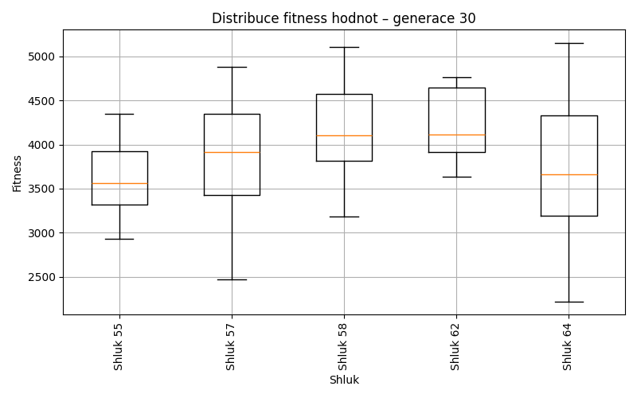
Generace 31
Stabilita mezi generací 30 → 31:
Shluk 58 → 65: 1 jedinců (10.0 %)
Shluk 58 → 55: 2 jedinců (20.0 %)
Shluk 58 → 57: 2 jedinců (20.0 %)
Shluk 58 → 58: 5 jedinců (50.0 %)
Shluk 57 → 64: 2 jedinců (4.7 %)
Shluk 57 → 57: 31 jedinců (72.1 %)
Shluk 57 → 55: 5 jedinců (11.6 %)
Shluk 57 → 58: 5 jedinců (11.6 %)
Shluk 55 → 64: 1 jedinců (5.3 %)
Shluk 55 → 55: 6 jedinců (31.6 %)
Shluk 55 → 58: 2 jedinců (10.5 %)
Shluk 55 → 57: 9 jedinců (47.4 %)
Shluk 55 → 66: 1 jedinců (5.3 %)
Shluk 62 → 62: 2 jedinců (28.6 %)
Shluk 62 → 66: 2 jedinců (28.6 %)
Shluk 62 → 65: 1 jedinců (14.3 %)
Shluk 62 → 55: 1 jedinců (14.3 %)
Shluk 62 → 57: 1 jedinců (14.3 %)
Shluk 64 → 64: 5 jedinců (23.8 %)
Shluk 64 → 58: 5 jedinců (23.8 %)
Shluk 64 → 57: 6 jedinců (28.6 %)
Shluk 64 → 55: 3 jedinců (14.3 %)
Shluk 64 → 66: 2 jedinců (9.5 %)
Jaccardovo mapování a overlap: Generace 30 → 31
- Shluk 58 → 58 (Jaccard: 0.23, Overlap: 0.50)
- Shluk 57 → 57 (Jaccard: 0.51, Overlap: 0.72)
- Shluk 55 → 55 (Jaccard: 0.20, Overlap: 0.35)
- Shluk 62 → 62 (Jaccard: 0.29, Overlap: 1.00)
- Shluk 64 → 64 (Jaccard: 0.21, Overlap: 0.62)
Posun centroidů mezi generací 30 → 31:
- Shluk 0: 512.0283
- Shluk 1: 381.1063
- Shluk 2: 258.3018
- Shluk 3: 345.3688
- Shluk 4: 868.9372
Generace 32
Stabilita mezi generací 31 → 32:
Shluk 65 → 55: 1 jedinců (50.0 %)
Shluk 65 → 66: 1 jedinců (50.0 %)
Shluk 64 → 58: 3 jedinců (37.5 %)
Shluk 64 → 57: 5 jedinců (62.5 %)
Shluk 57 → 57: 43 jedinců (87.8 %)
Shluk 57 → 58: 3 jedinců (6.1 %)
Shluk 57 → 55: 3 jedinců (6.1 %)
Shluk 55 → 55: 7 jedinců (41.2 %)
Shluk 55 → 57: 4 jedinců (23.5 %)
Shluk 55 → 58: 6 jedinců (35.3 %)
Shluk 62 → 62: 2 jedinců (100.0 %)
Shluk 58 → 58: 8 jedinců (47.1 %)
Shluk 58 → 57: 7 jedinců (41.2 %)
Shluk 58 → 55: 1 jedinců (5.9 %)
Shluk 58 → 62: 1 jedinců (5.9 %)
Shluk 66 → 66: 2 jedinců (40.0 %)
Shluk 66 → 58: 1 jedinců (20.0 %)
Shluk 66 → 62: 1 jedinců (20.0 %)
Shluk 66 → 57: 1 jedinců (20.0 %)
Jaccardovo mapování a overlap: Generace 31 → 32
- Shluk 65 → 66 (Jaccard: 0.25, Overlap: 0.50)
- Shluk 64 → 58 (Jaccard: 0.12, Overlap: 0.38)
- Shluk 57 → 57 (Jaccard: 0.65, Overlap: 0.88)
- Shluk 55 → 55 (Jaccard: 0.32, Overlap: 0.58)
- Shluk 62 → 62 (Jaccard: 0.50, Overlap: 1.00)
- Shluk 58 → 58 (Jaccard: 0.27, Overlap: 0.47)
- Shluk 66 → 66 (Jaccard: 0.33, Overlap: 0.67)
Posun centroidů mezi generací 31 → 32:
- Shluk 0: 63.7953
- Shluk 1: 533.3013
- Shluk 2: 296.3739
- Shluk 3: 699.2362
- Shluk 4: 717.3698
Generace 33
Stabilita mezi generací 32 → 33:
Shluk 55 → 55: 6 jedinců (50.0 %)
Shluk 55 → 57: 5 jedinců (41.7 %)
Shluk 55 → 58: 1 jedinců (8.3 %)
Shluk 58 → 58: 12 jedinců (57.1 %)
Shluk 58 → 55: 5 jedinců (23.8 %)
Shluk 58 → 67: 1 jedinců (4.8 %)
Shluk 58 → 57: 3 jedinců (14.3 %)
Shluk 57 → 58: 14 jedinců (23.3 %)
Shluk 57 → 57: 30 jedinců (50.0 %)
Shluk 57 → 62: 3 jedinců (5.0 %)
Shluk 57 → 55: 9 jedinců (15.0 %)
Shluk 57 → 67: 4 jedinců (6.7 %)
Shluk 62 → 62: 2 jedinců (50.0 %)
Shluk 62 → 67: 2 jedinců (50.0 %)
Shluk 66 → 57: 2 jedinců (66.7 %)
Shluk 66 → 66: 1 jedinců (33.3 %)
Jaccardovo mapování a overlap: Generace 32 → 33
- Shluk 55 → 55 (Jaccard: 0.23, Overlap: 0.50)
- Shluk 58 → 58 (Jaccard: 0.33, Overlap: 0.57)
- Shluk 57 → 57 (Jaccard: 0.43, Overlap: 0.75)
- Shluk 62 → 62 (Jaccard: 0.29, Overlap: 0.50)
- Shluk 66 → 66 (Jaccard: 0.33, Overlap: 1.00)
Posun centroidů mezi generací 32 → 33:
- Shluk 0: 472.5212
- Shluk 1: 728.5597
- Shluk 2: 141.8084
- Shluk 3: 748.7595
- Shluk 4: 275.7758
Generace 34
Stabilita mezi generací 33 → 34:
Shluk 55 → 66: 4 jedinců (20.0 %)
Shluk 55 → 55: 6 jedinců (30.0 %)
Shluk 55 → 57: 6 jedinců (30.0 %)
Shluk 55 → 58: 3 jedinců (15.0 %)
Shluk 55 → 68: 1 jedinců (5.0 %)
Shluk 58 → 57: 6 jedinců (22.2 %)
Shluk 58 → 67: 2 jedinců (7.4 %)
Shluk 58 → 58: 11 jedinců (40.7 %)
Shluk 58 → 55: 4 jedinců (14.8 %)
Shluk 58 → 68: 4 jedinců (14.8 %)
Shluk 57 → 67: 2 jedinců (5.0 %)
Shluk 57 → 55: 7 jedinců (17.5 %)
Shluk 57 → 57: 21 jedinců (52.5 %)
Shluk 57 → 66: 5 jedinců (12.5 %)
Shluk 57 → 68: 5 jedinců (12.5 %)
Shluk 67 → 68: 3 jedinců (42.9 %)
Shluk 67 → 69: 1 jedinců (14.3 %)
Shluk 67 → 67: 2 jedinců (28.6 %)
Shluk 67 → 66: 1 jedinců (14.3 %)
Shluk 62 → 62: 1 jedinců (20.0 %)
Shluk 62 → 66: 1 jedinců (20.0 %)
Shluk 62 → 57: 2 jedinců (40.0 %)
Shluk 62 → 58: 1 jedinců (20.0 %)
Shluk 66 → 66: 1 jedinců (100.0 %)
Jaccardovo mapování a overlap: Generace 33 → 34
- Shluk 55 → 55 (Jaccard: 0.19, Overlap: 0.35)
- Shluk 58 → 58 (Jaccard: 0.35, Overlap: 0.73)
- Shluk 57 → 57 (Jaccard: 0.39, Overlap: 0.60)
- Shluk 67 → 67 (Jaccard: 0.18, Overlap: 0.33)
- Shluk 62 → 62 (Jaccard: 0.20, Overlap: 1.00)
- Shluk 66 → 66 (Jaccard: 0.08, Overlap: 1.00)
Posun centroidů mezi generací 33 → 34:
- Shluk 0: 398.8200
- Shluk 1: 328.1042
- Shluk 2: 238.0938
- Shluk 3: 493.6820
- Shluk 4: 877.2828
- Shluk 5: 1031.6885
Generace 35
Stabilita mezi generací 34 → 35:
Shluk 66 → 70: 2 jedinců (16.7 %)
Shluk 66 → 66: 9 jedinců (75.0 %)
Shluk 66 → 57: 1 jedinců (8.3 %)
Shluk 57 → 71: 5 jedinců (14.3 %)
Shluk 57 → 57: 14 jedinců (40.0 %)
Shluk 57 → 66: 14 jedinců (40.0 %)
Shluk 57 → 55: 2 jedinců (5.7 %)
Shluk 67 → 71: 2 jedinců (33.3 %)
Shluk 67 → 69: 2 jedinců (33.3 %)
Shluk 67 → 66: 2 jedinců (33.3 %)
Shluk 55 → 57: 2 jedinců (11.8 %)
Shluk 55 → 55: 9 jedinců (52.9 %)
Shluk 55 → 71: 3 jedinců (17.6 %)
Shluk 55 → 66: 3 jedinců (17.6 %)
Shluk 68 → 55: 3 jedinců (23.1 %)
Shluk 68 → 57: 2 jedinců (15.4 %)
Shluk 68 → 66: 5 jedinců (38.5 %)
Shluk 68 → 71: 3 jedinců (23.1 %)
Shluk 62 → 62: 1 jedinců (100.0 %)
Shluk 58 → 55: 6 jedinců (40.0 %)
Shluk 58 → 71: 5 jedinců (33.3 %)
Shluk 58 → 66: 3 jedinců (20.0 %)
Shluk 58 → 57: 1 jedinců (6.7 %)
Shluk 69 → 69: 1 jedinců (100.0 %)
Jaccardovo mapování a overlap: Generace 34 → 35
- Shluk 66 → 66 (Jaccard: 0.23, Overlap: 0.75)
- Shluk 57 → 57 (Jaccard: 0.34, Overlap: 0.70)
- Shluk 67 → 69 (Jaccard: 0.29, Overlap: 0.67)
- Shluk 55 → 55 (Jaccard: 0.32, Overlap: 0.53)
- Shluk 68 → 66 (Jaccard: 0.11, Overlap: 0.38)
- Shluk 62 → 62 (Jaccard: 1.00, Overlap: 1.00)
- Shluk 58 → 55 (Jaccard: 0.21, Overlap: 0.40)
- Shluk 69 → 69 (Jaccard: 0.33, Overlap: 1.00)
Posun centroidů mezi generací 34 → 35:
- Shluk 0: 300.6206
- Shluk 1: 390.5389
- Shluk 2: 722.8530
- Shluk 3: 284.9383
- Shluk 4: 780.9092
- Shluk 5: 747.3155
- Shluk 6: 992.5130
Generace 36
Stabilita mezi generací 35 → 36:
Shluk 70 → 69: 1 jedinců (50.0 %)
Shluk 70 → 73: 1 jedinců (50.0 %)
Shluk 71 → 66: 11 jedinců (61.1 %)
Shluk 71 → 71: 6 jedinců (33.3 %)
Shluk 71 → 72: 1 jedinců (5.6 %)
Shluk 69 → 69: 2 jedinců (66.7 %)
Shluk 69 → 62: 1 jedinců (33.3 %)
Shluk 57 → 66: 13 jedinců (65.0 %)
Shluk 57 → 72: 4 jedinců (20.0 %)
Shluk 57 → 62: 2 jedinců (10.0 %)
Shluk 57 → 71: 1 jedinců (5.0 %)
Shluk 55 → 66: 17 jedinců (85.0 %)
Shluk 55 → 73: 2 jedinců (10.0 %)
Shluk 55 → 71: 1 jedinců (5.0 %)
Shluk 62 → 62: 1 jedinců (100.0 %)
Shluk 66 → 66: 26 jedinců (72.2 %)
Shluk 66 → 72: 3 jedinců (8.3 %)
Shluk 66 → 71: 4 jedinců (11.1 %)
Shluk 66 → 62: 3 jedinců (8.3 %)
Jaccardovo mapování a overlap: Generace 35 → 36
- Shluk 70 → 69 (Jaccard: 0.25, Overlap: 0.50)
- Shluk 71 → 71 (Jaccard: 0.25, Overlap: 0.50)
- Shluk 69 → 69 (Jaccard: 0.50, Overlap: 0.67)
- Shluk 57 → 66 (Jaccard: 0.18, Overlap: 0.65)
- Shluk 55 → 66 (Jaccard: 0.24, Overlap: 0.85)
- Shluk 62 → 62 (Jaccard: 0.14, Overlap: 1.00)
- Shluk 66 → 66 (Jaccard: 0.34, Overlap: 0.72)
Posun centroidů mezi generací 35 → 36:
- Shluk 0: 526.7690
- Shluk 1: 219.5732
- Shluk 2: 406.6327
- Shluk 3: 362.8700
- Shluk 4: 183.1155
- Shluk 5: 667.2854
Generace 37
Stabilita mezi generací 36 → 37:
Shluk 69 → 69: 1 jedinců (33.3 %)
Shluk 69 → 66: 1 jedinců (33.3 %)
Shluk 69 → 62: 1 jedinců (33.3 %)
Shluk 66 → 66: 43 jedinců (64.2 %)
Shluk 66 → 74: 16 jedinců (23.9 %)
Shluk 66 → 71: 8 jedinců (11.9 %)
Shluk 62 → 62: 3 jedinců (42.9 %)
Shluk 62 → 66: 4 jedinců (57.1 %)
Shluk 72 → 66: 7 jedinců (87.5 %)
Shluk 72 → 74: 1 jedinců (12.5 %)
Shluk 71 → 66: 6 jedinců (50.0 %)
Shluk 71 → 71: 3 jedinců (25.0 %)
Shluk 71 → 74: 3 jedinců (25.0 %)
Shluk 73 → 62: 1 jedinců (33.3 %)
Shluk 73 → 66: 2 jedinců (66.7 %)
Jaccardovo mapování a overlap: Generace 36 → 37
- Shluk 69 → 69 (Jaccard: 0.33, Overlap: 1.00)
- Shluk 66 → 66 (Jaccard: 0.49, Overlap: 0.68)
- Shluk 62 → 62 (Jaccard: 0.33, Overlap: 0.60)
- Shluk 72 → 66 (Jaccard: 0.11, Overlap: 0.88)
- Shluk 71 → 71 (Jaccard: 0.15, Overlap: 0.27)
- Shluk 73 → 62 (Jaccard: 0.14, Overlap: 0.33)
Posun centroidů mezi generací 36 → 37:
- Shluk 0: 475.5406
- Shluk 1: 667.3823
- Shluk 2: 769.8537
- Shluk 3: 977.4125
- Shluk 4: 321.8619
Generace 38
Stabilita mezi generací 37 → 38:
Shluk 69 → 69: 1 jedinců (100.0 %)
Shluk 66 → 66: 24 jedinců (38.1 %)
Shluk 66 → 75: 19 jedinců (30.2 %)
Shluk 66 → 71: 16 jedinců (25.4 %)
Shluk 66 → 62: 4 jedinců (6.3 %)
Shluk 74 → 75: 5 jedinců (25.0 %)
Shluk 74 → 66: 9 jedinců (45.0 %)
Shluk 74 → 62: 2 jedinců (10.0 %)
Shluk 74 → 71: 4 jedinců (20.0 %)
Shluk 71 → 75: 3 jedinců (27.3 %)
Shluk 71 → 71: 5 jedinců (45.5 %)
Shluk 71 → 66: 2 jedinců (18.2 %)
Shluk 71 → 62: 1 jedinců (9.1 %)
Shluk 62 → 62: 4 jedinců (80.0 %)
Shluk 62 → 76: 1 jedinců (20.0 %)
Jaccardovo mapování a overlap: Generace 37 → 38
- Shluk 69 → 69 (Jaccard: 1.00, Overlap: 1.00)
- Shluk 66 → 66 (Jaccard: 0.32, Overlap: 0.69)
- Shluk 74 → 66 (Jaccard: 0.20, Overlap: 0.45)
- Shluk 71 → 71 (Jaccard: 0.16, Overlap: 0.45)
- Shluk 62 → 62 (Jaccard: 0.33, Overlap: 0.80)
Posun centroidů mezi generací 37 → 38:
- Shluk 0: 108.0858
- Shluk 1: 638.4278
- Shluk 2: 443.8372
- Shluk 3: 961.6915
- Shluk 4: 1011.5897
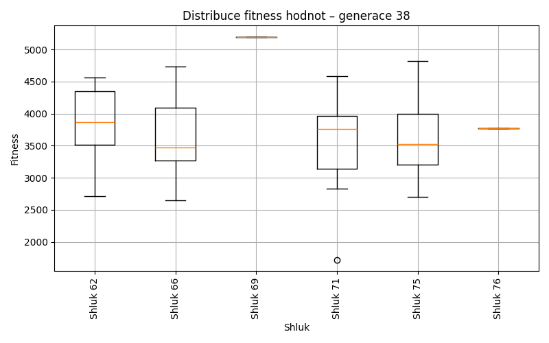
Generace 39

Stabilita mezi generací 38 → 39:
Shluk 69 → 69: 1 jedinců (100.0 %)
Shluk 66 → 77: 11 jedinců (31.4 %)
Shluk 66 → 66: 11 jedinců (31.4 %)
Shluk 66 → 75: 10 jedinců (28.6 %)
Shluk 66 → 62: 2 jedinců (5.7 %)
Shluk 66 → 69: 1 jedinců (2.9 %)
Shluk 75 → 77: 9 jedinců (33.3 %)
Shluk 75 → 75: 13 jedinců (48.1 %)
Shluk 75 → 66: 1 jedinců (3.7 %)
Shluk 75 → 62: 3 jedinců (11.1 %)
Shluk 75 → 69: 1 jedinců (3.7 %)
Shluk 71 → 62: 7 jedinců (28.0 %)
Shluk 71 → 66: 2 jedinců (8.0 %)
Shluk 71 → 75: 10 jedinců (40.0 %)
Shluk 71 → 77: 6 jedinců (24.0 %)
Shluk 62 → 62: 6 jedinců (54.5 %)
Shluk 62 → 75: 3 jedinců (27.3 %)
Shluk 62 → 69: 2 jedinců (18.2 %)
Shluk 76 → 76: 1 jedinců (100.0 %)
Jaccardovo mapování a overlap: Generace 38 → 39
- Shluk 69 → 69 (Jaccard: 0.20, Overlap: 1.00)
- Shluk 66 → 66 (Jaccard: 0.29, Overlap: 0.79)
- Shluk 75 → 75 (Jaccard: 0.26, Overlap: 0.48)
- Shluk 71 → 75 (Jaccard: 0.20, Overlap: 0.40)
- Shluk 62 → 62 (Jaccard: 0.26, Overlap: 0.55)
- Shluk 76 → 76 (Jaccard: 1.00, Overlap: 1.00)
Posun centroidů mezi generací 38 → 39:
- Shluk 0: 244.9775
- Shluk 1: 441.6951
- Shluk 2: 376.1297
- Shluk 3: 499.2955
- Shluk 4: 618.7724
- Shluk 5: 194.1016
Generace 40
Stabilita mezi generací 39 → 40:
Shluk 69 → 69: 2 jedinců (40.0 %)
Shluk 69 → 75: 1 jedinců (20.0 %)
Shluk 69 → 62: 1 jedinců (20.0 %)
Shluk 69 → 77: 1 jedinců (20.0 %)
Shluk 77 → 77: 9 jedinců (34.6 %)
Shluk 77 → 66: 9 jedinců (34.6 %)
Shluk 77 → 62: 7 jedinců (26.9 %)
Shluk 77 → 75: 1 jedinců (3.8 %)
Shluk 66 → 77: 2 jedinců (14.3 %)
Shluk 66 → 66: 6 jedinců (42.9 %)
Shluk 66 → 75: 3 jedinců (21.4 %)
Shluk 66 → 62: 3 jedinců (21.4 %)
Shluk 75 → 77: 9 jedinců (25.0 %)
Shluk 75 → 62: 9 jedinců (25.0 %)
Shluk 75 → 75: 12 jedinců (33.3 %)
Shluk 75 → 66: 6 jedinců (16.7 %)
Shluk 62 → 66: 6 jedinců (33.3 %)
Shluk 62 → 77: 6 jedinců (33.3 %)
Shluk 62 → 62: 6 jedinců (33.3 %)
Shluk 76 → 69: 1 jedinců (100.0 %)
Jaccardovo mapování a overlap: Generace 39 → 40
- Shluk 69 → 69 (Jaccard: 0.33, Overlap: 0.67)
- Shluk 77 → 77 (Jaccard: 0.20, Overlap: 0.35)
- Shluk 66 → 66 (Jaccard: 0.17, Overlap: 0.43)
- Shluk 75 → 75 (Jaccard: 0.29, Overlap: 0.71)
- Shluk 62 → 62 (Jaccard: 0.16, Overlap: 0.33)
- Shluk 76 → 69 (Jaccard: 0.33, Overlap: 1.00)
Posun centroidů mezi generací 39 → 40:
- Shluk 0: 708.7610
- Shluk 1: 112.9752
- Shluk 2: 170.2095
- Shluk 3: 1095.6103
- Shluk 4: 568.7564
Generace 41
Stabilita mezi generací 40 → 41:
Shluk 69 → 69: 1 jedinců (33.3 %)
Shluk 69 → 66: 2 jedinců (66.7 %)
Shluk 77 → 62: 6 jedinců (22.2 %)
Shluk 77 → 75: 8 jedinců (29.6 %)
Shluk 77 → 77: 8 jedinců (29.6 %)
Shluk 77 → 66: 4 jedinců (14.8 %)
Shluk 77 → 78: 1 jedinců (3.7 %)
Shluk 66 → 62: 6 jedinců (22.2 %)
Shluk 66 → 66: 6 jedinců (22.2 %)
Shluk 66 → 77: 7 jedinců (25.9 %)
Shluk 66 → 75: 3 jedinců (11.1 %)
Shluk 66 → 78: 5 jedinců (18.5 %)
Shluk 75 → 77: 3 jedinců (17.6 %)
Shluk 75 → 75: 10 jedinců (58.8 %)
Shluk 75 → 66: 2 jedinců (11.8 %)
Shluk 75 → 62: 2 jedinců (11.8 %)
Shluk 62 → 78: 5 jedinců (19.2 %)
Shluk 62 → 75: 9 jedinců (34.6 %)
Shluk 62 → 77: 3 jedinců (11.5 %)
Shluk 62 → 62: 9 jedinců (34.6 %)
Jaccardovo mapování a overlap: Generace 40 → 41
- Shluk 69 → 69 (Jaccard: 0.33, Overlap: 1.00)
- Shluk 77 → 77 (Jaccard: 0.20, Overlap: 0.38)
- Shluk 66 → 66 (Jaccard: 0.17, Overlap: 0.43)
- Shluk 75 → 75 (Jaccard: 0.27, Overlap: 0.59)
- Shluk 62 → 62 (Jaccard: 0.23, Overlap: 0.39)
Posun centroidů mezi generací 40 → 41:
- Shluk 0: 547.6537
- Shluk 1: 224.4930
- Shluk 2: 214.1879
- Shluk 3: 250.2080
- Shluk 4: 909.4173
Generace 42
Stabilita mezi generací 41 → 42:
Shluk 69 → 69: 1 jedinců (100.0 %)
Shluk 62 → 62: 10 jedinců (43.5 %)
Shluk 62 → 77: 6 jedinců (26.1 %)
Shluk 62 → 75: 4 jedinců (17.4 %)
Shluk 62 → 66: 3 jedinců (13.0 %)
Shluk 75 → 75: 10 jedinců (33.3 %)
Shluk 75 → 62: 7 jedinců (23.3 %)
Shluk 75 → 77: 10 jedinců (33.3 %)
Shluk 75 → 66: 1 jedinců (3.3 %)
Shluk 75 → 79: 2 jedinců (6.7 %)
Shluk 66 → 66: 9 jedinců (64.3 %)
Shluk 66 → 79: 2 jedinců (14.3 %)
Shluk 66 → 75: 2 jedinců (14.3 %)
Shluk 66 → 77: 1 jedinců (7.1 %)
Shluk 77 → 62: 4 jedinců (19.0 %)
Shluk 77 → 75: 7 jedinců (33.3 %)
Shluk 77 → 77: 10 jedinců (47.6 %)
Shluk 78 → 77: 8 jedinců (72.7 %)
Shluk 78 → 66: 1 jedinců (9.1 %)
Shluk 78 → 75: 2 jedinců (18.2 %)
Jaccardovo mapování a overlap: Generace 41 → 42
- Shluk 69 → 69 (Jaccard: 1.00, Overlap: 1.00)
- Shluk 62 → 62 (Jaccard: 0.29, Overlap: 0.48)
- Shluk 75 → 75 (Jaccard: 0.22, Overlap: 0.40)
- Shluk 66 → 66 (Jaccard: 0.47, Overlap: 0.64)
- Shluk 77 → 77 (Jaccard: 0.22, Overlap: 0.48)
- Shluk 78 → 77 (Jaccard: 0.21, Overlap: 0.73)
Posun centroidů mezi generací 41 → 42:
- Shluk 0: 162.4662
- Shluk 1: 193.2593
- Shluk 2: 225.8701
- Shluk 3: 1028.9783
- Shluk 4: 936.6029
- Shluk 5: 454.2417
Generace 43
Stabilita mezi generací 42 → 43:
Shluk 69 → 69: 1 jedinců (100.0 %)
Shluk 62 → 75: 5 jedinců (23.8 %)
Shluk 62 → 62: 8 jedinců (38.1 %)
Shluk 62 → 80: 1 jedinců (4.8 %)
Shluk 62 → 81: 5 jedinců (23.8 %)
Shluk 62 → 69: 1 jedinců (4.8 %)
Shluk 62 → 79: 1 jedinců (4.8 %)
Shluk 75 → 75: 15 jedinců (60.0 %)
Shluk 75 → 81: 5 jedinců (20.0 %)
Shluk 75 → 69: 2 jedinců (8.0 %)
Shluk 75 → 79: 1 jedinců (4.0 %)
Shluk 75 → 62: 1 jedinců (4.0 %)
Shluk 75 → 80: 1 jedinců (4.0 %)
Shluk 66 → 69: 3 jedinců (21.4 %)
Shluk 66 → 66: 4 jedinců (28.6 %)
Shluk 66 → 75: 2 jedinců (14.3 %)
Shluk 66 → 80: 1 jedinců (7.1 %)
Shluk 66 → 81: 2 jedinců (14.3 %)
Shluk 66 → 62: 2 jedinců (14.3 %)
Shluk 77 → 79: 4 jedinců (11.4 %)
Shluk 77 → 75: 15 jedinců (42.9 %)
Shluk 77 → 62: 11 jedinců (31.4 %)
Shluk 77 → 81: 2 jedinců (5.7 %)
Shluk 77 → 80: 2 jedinců (5.7 %)
Shluk 77 → 69: 1 jedinců (2.9 %)
Shluk 79 → 62: 2 jedinců (50.0 %)
Shluk 79 → 81: 1 jedinců (25.0 %)
Shluk 79 → 79: 1 jedinců (25.0 %)
Jaccardovo mapování a overlap: Generace 42 → 43
- Shluk 69 → 69 (Jaccard: 0.12, Overlap: 1.00)
- Shluk 62 → 62 (Jaccard: 0.22, Overlap: 0.38)
- Shluk 75 → 75 (Jaccard: 0.32, Overlap: 0.60)
- Shluk 66 → 66 (Jaccard: 0.29, Overlap: 1.00)
- Shluk 77 → 75 (Jaccard: 0.26, Overlap: 0.43)
- Shluk 79 → 79 (Jaccard: 0.10, Overlap: 0.25)
Posun centroidů mezi generací 42 → 43:
- Shluk 0: 350.8166
- Shluk 1: 413.6017
- Shluk 2: 480.1791
- Shluk 3: 834.9246
- Shluk 4: 105.5290
- Shluk 5: 489.1770
Generace 44
Stabilita mezi generací 43 → 44:
Shluk 69 → 82: 2 jedinců (25.0 %)
Shluk 69 → 75: 2 jedinců (25.0 %)
Shluk 69 → 62: 2 jedinců (25.0 %)
Shluk 69 → 69: 2 jedinců (25.0 %)
Shluk 75 → 75: 22 jedinců (59.5 %)
Shluk 75 → 62: 14 jedinců (37.8 %)
Shluk 75 → 82: 1 jedinců (2.7 %)
Shluk 62 → 75: 6 jedinců (25.0 %)
Shluk 62 → 82: 3 jedinců (12.5 %)
Shluk 62 → 62: 15 jedinců (62.5 %)
Shluk 80 → 75: 2 jedinců (40.0 %)
Shluk 80 → 69: 1 jedinců (20.0 %)
Shluk 80 → 62: 1 jedinců (20.0 %)
Shluk 80 → 82: 1 jedinců (20.0 %)
Shluk 66 → 69: 1 jedinců (25.0 %)
Shluk 66 → 62: 2 jedinců (50.0 %)
Shluk 66 → 66: 1 jedinců (25.0 %)
Shluk 79 → 62: 3 jedinců (42.9 %)
Shluk 79 → 69: 1 jedinců (14.3 %)
Shluk 79 → 75: 3 jedinců (42.9 %)
Shluk 81 → 75: 9 jedinců (60.0 %)
Shluk 81 → 82: 3 jedinců (20.0 %)
Shluk 81 → 62: 3 jedinců (20.0 %)
Jaccardovo mapování a overlap: Generace 43 → 44
- Shluk 69 → 69 (Jaccard: 0.18, Overlap: 0.40)
- Shluk 75 → 75 (Jaccard: 0.37, Overlap: 0.59)
- Shluk 62 → 62 (Jaccard: 0.31, Overlap: 0.62)
- Shluk 80 → 69 (Jaccard: 0.11, Overlap: 0.20)
- Shluk 66 → 66 (Jaccard: 0.25, Overlap: 1.00)
- Shluk 79 → 69 (Jaccard: 0.09, Overlap: 0.20)
- Shluk 81 → 75 (Jaccard: 0.18, Overlap: 0.60)
Posun centroidů mezi generací 43 → 44:
- Shluk 0: 80.3429
- Shluk 1: 389.5951
- Shluk 2: 446.2475
- Shluk 3: 396.7045
- Shluk 4: 956.0991
Generace 45

Stabilita mezi generací 44 → 45:
Shluk 82 → 66: 2 jedinců (20.0 %)
Shluk 82 → 84: 5 jedinců (50.0 %)
Shluk 82 → 83: 2 jedinců (20.0 %)
Shluk 82 → 75: 1 jedinců (10.0 %)
Shluk 75 → 62: 10 jedinců (22.7 %)
Shluk 75 → 83: 10 jedinců (22.7 %)
Shluk 75 → 75: 14 jedinců (31.8 %)
Shluk 75 → 84: 10 jedinců (22.7 %)
Shluk 62 → 84: 8 jedinců (20.0 %)
Shluk 62 → 62: 21 jedinců (52.5 %)
Shluk 62 → 83: 7 jedinců (17.5 %)
Shluk 62 → 75: 4 jedinců (10.0 %)
Shluk 69 → 84: 2 jedinců (40.0 %)
Shluk 69 → 75: 1 jedinců (20.0 %)
Shluk 69 → 69: 1 jedinců (20.0 %)
Shluk 69 → 66: 1 jedinců (20.0 %)
Shluk 66 → 66: 1 jedinců (100.0 %)
Jaccardovo mapování a overlap: Generace 44 → 45
- Shluk 82 → 66 (Jaccard: 0.17, Overlap: 0.50)
- Shluk 75 → 75 (Jaccard: 0.28, Overlap: 0.70)
- Shluk 62 → 62 (Jaccard: 0.42, Overlap: 0.68)
- Shluk 69 → 69 (Jaccard: 0.20, Overlap: 1.00)
- Shluk 66 → 66 (Jaccard: 0.25, Overlap: 1.00)
Posun centroidů mezi generací 44 → 45:
- Shluk 0: 291.1409
- Shluk 1: 431.6720
- Shluk 2: 215.1260
- Shluk 3: 535.3092
- Shluk 4: 957.3523
Generace 46
Stabilita mezi generací 45 → 46:
Shluk 66 → 66: 3 jedinců (75.0 %)
Shluk 66 → 85: 1 jedinců (25.0 %)
Shluk 62 → 62: 23 jedinců (74.2 %)
Shluk 62 → 83: 7 jedinců (22.6 %)
Shluk 62 → 85: 1 jedinců (3.2 %)
Shluk 83 → 83: 13 jedinců (68.4 %)
Shluk 83 → 62: 5 jedinců (26.3 %)
Shluk 83 → 85: 1 jedinců (5.3 %)
Shluk 75 → 83: 8 jedinců (40.0 %)
Shluk 75 → 62: 12 jedinců (60.0 %)
Shluk 84 → 83: 12 jedinců (48.0 %)
Shluk 84 → 62: 10 jedinců (40.0 %)
Shluk 84 → 85: 3 jedinců (12.0 %)
Shluk 69 → 66: 1 jedinců (100.0 %)
Jaccardovo mapování a overlap: Generace 45 → 46
- Shluk 66 → 66 (Jaccard: 0.60, Overlap: 0.75)
- Shluk 62 → 62 (Jaccard: 0.40, Overlap: 0.74)
- Shluk 83 → 83 (Jaccard: 0.28, Overlap: 0.68)
- Shluk 75 → 62 (Jaccard: 0.21, Overlap: 0.60)
- Shluk 84 → 83 (Jaccard: 0.23, Overlap: 0.48)
- Shluk 69 → 66 (Jaccard: 0.25, Overlap: 1.00)
Posun centroidů mezi generací 45 → 46:
- Shluk 0: 119.7660
- Shluk 1: 656.4513
- Shluk 2: 180.0794
- Shluk 3: 506.8910
Generace 47
Stabilita mezi generací 46 → 47:
Shluk 66 → 66: 2 jedinců (50.0 %)
Shluk 66 → 88: 1 jedinců (25.0 %)
Shluk 66 → 85: 1 jedinců (25.0 %)
Shluk 62 → 86: 4 jedinců (8.0 %)
Shluk 62 → 62: 29 jedinců (58.0 %)
Shluk 62 → 87: 12 jedinců (24.0 %)
Shluk 62 → 88: 3 jedinců (6.0 %)
Shluk 62 → 83: 2 jedinců (4.0 %)
Shluk 83 → 62: 11 jedinců (27.5 %)
Shluk 83 → 83: 12 jedinců (30.0 %)
Shluk 83 → 87: 10 jedinců (25.0 %)
Shluk 83 → 86: 4 jedinců (10.0 %)
Shluk 83 → 88: 3 jedinců (7.5 %)
Shluk 85 → 86: 2 jedinců (33.3 %)
Shluk 85 → 87: 1 jedinců (16.7 %)
Shluk 85 → 83: 1 jedinců (16.7 %)
Shluk 85 → 85: 2 jedinců (33.3 %)
Jaccardovo mapování a overlap: Generace 46 → 47
- Shluk 66 → 66 (Jaccard: 0.50, Overlap: 1.00)
- Shluk 62 → 62 (Jaccard: 0.48, Overlap: 0.72)
- Shluk 83 → 83 (Jaccard: 0.28, Overlap: 0.80)
- Shluk 85 → 85 (Jaccard: 0.29, Overlap: 0.67)
Posun centroidů mezi generací 46 → 47:
- Shluk 0: 79.1912
- Shluk 1: 538.2497
- Shluk 2: 255.4158
- Shluk 3: 420.0306
Generace 48
Stabilita mezi generací 47 → 48:
Shluk 66 → 66: 2 jedinců (100.0 %)
Shluk 86 → 87: 3 jedinců (30.0 %)
Shluk 86 → 66: 2 jedinců (20.0 %)
Shluk 86 → 83: 3 jedinců (30.0 %)
Shluk 86 → 62: 1 jedinců (10.0 %)
Shluk 86 → 88: 1 jedinců (10.0 %)
Shluk 62 → 62: 23 jedinců (57.5 %)
Shluk 62 → 87: 10 jedinců (25.0 %)
Shluk 62 → 83: 6 jedinců (15.0 %)
Shluk 62 → 88: 1 jedinců (2.5 %)
Shluk 83 → 62: 3 jedinců (20.0 %)
Shluk 83 → 87: 4 jedinců (26.7 %)
Shluk 83 → 83: 8 jedinců (53.3 %)
Shluk 87 → 83: 7 jedinců (30.4 %)
Shluk 87 → 87: 13 jedinců (56.5 %)
Shluk 87 → 62: 3 jedinců (13.0 %)
Shluk 88 → 62: 2 jedinců (28.6 %)
Shluk 88 → 88: 3 jedinců (42.9 %)
Shluk 88 → 89: 1 jedinců (14.3 %)
Shluk 88 → 87: 1 jedinců (14.3 %)
Shluk 85 → 88: 2 jedinců (66.7 %)
Shluk 85 → 62: 1 jedinců (33.3 %)
Jaccardovo mapování a overlap: Generace 47 → 48
- Shluk 66 → 66 (Jaccard: 0.50, Overlap: 1.00)
- Shluk 86 → 66 (Jaccard: 0.17, Overlap: 0.50)
- Shluk 62 → 62 (Jaccard: 0.46, Overlap: 0.70)
- Shluk 83 → 83 (Jaccard: 0.26, Overlap: 0.53)
- Shluk 87 → 87 (Jaccard: 0.32, Overlap: 0.57)
- Shluk 88 → 88 (Jaccard: 0.27, Overlap: 0.43)
- Shluk 85 → 88 (Jaccard: 0.25, Overlap: 0.67)
Posun centroidů mezi generací 47 → 48:
- Shluk 0: 153.4934
- Shluk 1: 502.3542
- Shluk 2: 593.3657
- Shluk 3: 273.8530
- Shluk 4: 445.8138
- Shluk 5: 728.3262
Generace 49
Stabilita mezi generací 48 → 49:
Shluk 66 → 66: 2 jedinců (50.0 %)
Shluk 66 → 62: 1 jedinců (25.0 %)
Shluk 66 → 83: 1 jedinců (25.0 %)
Shluk 87 → 87: 15 jedinců (48.4 %)
Shluk 87 → 62: 10 jedinců (32.3 %)
Shluk 87 → 83: 6 jedinců (19.4 %)
Shluk 62 → 87: 11 jedinců (33.3 %)
Shluk 62 → 62: 15 jedinců (45.5 %)
Shluk 62 → 83: 7 jedinců (21.2 %)
Shluk 83 → 62: 10 jedinců (41.7 %)
Shluk 83 → 87: 5 jedinců (20.8 %)
Shluk 83 → 83: 9 jedinců (37.5 %)
Shluk 88 → 87: 1 jedinců (14.3 %)
Shluk 88 → 62: 6 jedinců (85.7 %)
Shluk 89 → 66: 1 jedinců (100.0 %)
Jaccardovo mapování a overlap: Generace 48 → 49
- Shluk 66 → 66 (Jaccard: 0.40, Overlap: 0.67)
- Shluk 87 → 87 (Jaccard: 0.31, Overlap: 0.48)
- Shluk 62 → 62 (Jaccard: 0.25, Overlap: 0.45)
- Shluk 83 → 83 (Jaccard: 0.24, Overlap: 0.39)
- Shluk 88 → 62 (Jaccard: 0.14, Overlap: 0.86)
- Shluk 89 → 66 (Jaccard: 0.33, Overlap: 1.00)
Posun centroidů mezi generací 48 → 49:
- Shluk 0: 189.1797
- Shluk 1: 253.5624
- Shluk 2: 655.2121
- Shluk 3: 779.2885
Generace 50
Stabilita mezi generací 49 → 50:
Shluk 66 → 90: 1 jedinců (33.3 %)
Shluk 66 → 66: 2 jedinců (66.7 %)
Shluk 87 → 87: 20 jedinců (62.5 %)
Shluk 87 → 90: 2 jedinců (6.2 %)
Shluk 87 → 62: 10 jedinců (31.2 %)
Shluk 62 → 87: 19 jedinců (45.2 %)
Shluk 62 → 62: 18 jedinců (42.9 %)
Shluk 62 → 66: 4 jedinců (9.5 %)
Shluk 62 → 90: 1 jedinců (2.4 %)
Shluk 83 → 87: 14 jedinců (60.9 %)
Shluk 83 → 62: 3 jedinců (13.0 %)
Shluk 83 → 90: 4 jedinců (17.4 %)
Shluk 83 → 66: 2 jedinců (8.7 %)
Jaccardovo mapování a overlap: Generace 49 → 50
- Shluk 66 → 66 (Jaccard: 0.22, Overlap: 0.67)
- Shluk 87 → 87 (Jaccard: 0.31, Overlap: 0.62)
- Shluk 62 → 62 (Jaccard: 0.33, Overlap: 0.58)
- Shluk 83 → 87 (Jaccard: 0.23, Overlap: 0.61)
Posun centroidů mezi generací 49 → 50:
- Shluk 0: 419.3563
- Shluk 1: 171.7833
- Shluk 2: 196.6885
- Shluk 3: 576.8973
Generace 51
Stabilita mezi generací 50 → 51:
Shluk 90 → 90: 4 jedinců (50.0 %)
Shluk 90 → 87: 2 jedinců (25.0 %)
Shluk 90 → 91: 1 jedinců (12.5 %)
Shluk 90 → 92: 1 jedinců (12.5 %)
Shluk 87 → 87: 32 jedinců (60.4 %)
Shluk 87 → 91: 6 jedinců (11.3 %)
Shluk 87 → 92: 3 jedinců (5.7 %)
Shluk 87 → 90: 12 jedinců (22.6 %)
Shluk 62 → 87: 15 jedinců (48.4 %)
Shluk 62 → 92: 8 jedinců (25.8 %)
Shluk 62 → 91: 5 jedinců (16.1 %)
Shluk 62 → 90: 1 jedinců (3.2 %)
Shluk 62 → 66: 1 jedinců (3.2 %)
Shluk 62 → 93: 1 jedinců (3.2 %)
Shluk 66 → 91: 2 jedinců (25.0 %)
Shluk 66 → 66: 2 jedinců (25.0 %)
Shluk 66 → 93: 2 jedinců (25.0 %)
Shluk 66 → 92: 1 jedinců (12.5 %)
Shluk 66 → 87: 1 jedinců (12.5 %)
Jaccardovo mapování a overlap: Generace 50 → 51
- Shluk 90 → 90 (Jaccard: 0.19, Overlap: 0.50)
- Shluk 87 → 87 (Jaccard: 0.45, Overlap: 0.64)
- Shluk 62 → 87 (Jaccard: 0.23, Overlap: 0.48)
- Shluk 66 → 66 (Jaccard: 0.22, Overlap: 0.67)
Posun centroidů mezi generací 50 → 51:
- Shluk 0: 397.5591
- Shluk 1: 510.1671
- Shluk 2: 211.6799
- Shluk 3: 373.9001
Generace 52
Stabilita mezi generací 51 → 52:
Shluk 90 → 66: 1 jedinců (5.9 %)
Shluk 90 → 92: 2 jedinců (11.8 %)
Shluk 90 → 90: 8 jedinců (47.1 %)
Shluk 90 → 87: 6 jedinců (35.3 %)
Shluk 87 → 92: 11 jedinců (22.0 %)
Shluk 87 → 87: 24 jedinců (48.0 %)
Shluk 87 → 90: 13 jedinců (26.0 %)
Shluk 87 → 93: 2 jedinců (4.0 %)
Shluk 91 → 92: 5 jedinců (35.7 %)
Shluk 91 → 90: 5 jedinců (35.7 %)
Shluk 91 → 87: 4 jedinců (28.6 %)
Shluk 92 → 92: 5 jedinců (38.5 %)
Shluk 92 → 90: 1 jedinců (7.7 %)
Shluk 92 → 93: 1 jedinců (7.7 %)
Shluk 92 → 87: 6 jedinců (46.2 %)
Shluk 66 → 66: 1 jedinců (33.3 %)
Shluk 66 → 90: 1 jedinců (33.3 %)
Shluk 66 → 87: 1 jedinců (33.3 %)
Shluk 93 → 93: 1 jedinců (33.3 %)
Shluk 93 → 90: 2 jedinců (66.7 %)
Jaccardovo mapování a overlap: Generace 51 → 52
- Shluk 90 → 90 (Jaccard: 0.21, Overlap: 0.47)
- Shluk 87 → 87 (Jaccard: 0.36, Overlap: 0.59)
- Shluk 91 → 92 (Jaccard: 0.16, Overlap: 0.36)
- Shluk 92 → 92 (Jaccard: 0.16, Overlap: 0.38)
- Shluk 66 → 66 (Jaccard: 0.25, Overlap: 0.50)
- Shluk 93 → 93 (Jaccard: 0.17, Overlap: 0.33)
Posun centroidů mezi generací 51 → 52:
- Shluk 0: 182.4340
- Shluk 1: 786.1874
- Shluk 2: 313.6997
- Shluk 3: 586.3136
- Shluk 4: 139.1376
Generace 53
Stabilita mezi generací 52 → 53:
Shluk 66 → 87: 1 jedinců (50.0 %)
Shluk 66 → 66: 1 jedinců (50.0 %)
Shluk 92 → 90: 5 jedinců (21.7 %)
Shluk 92 → 87: 17 jedinců (73.9 %)
Shluk 92 → 66: 1 jedinců (4.3 %)
Shluk 87 → 93: 3 jedinců (7.3 %)
Shluk 87 → 90: 7 jedinců (17.1 %)
Shluk 87 → 87: 31 jedinců (75.6 %)
Shluk 90 → 87: 16 jedinců (53.3 %)
Shluk 90 → 90: 12 jedinců (40.0 %)
Shluk 90 → 66: 2 jedinců (6.7 %)
Shluk 93 → 93: 2 jedinců (50.0 %)
Shluk 93 → 94: 1 jedinců (25.0 %)
Shluk 93 → 66: 1 jedinců (25.0 %)
Jaccardovo mapování a overlap: Generace 52 → 53
- Shluk 66 → 66 (Jaccard: 0.17, Overlap: 0.50)
- Shluk 92 → 87 (Jaccard: 0.24, Overlap: 0.74)
- Shluk 87 → 87 (Jaccard: 0.41, Overlap: 0.76)
- Shluk 90 → 90 (Jaccard: 0.29, Overlap: 0.50)
- Shluk 93 → 93 (Jaccard: 0.29, Overlap: 0.50)
Posun centroidů mezi generací 52 → 53:
- Shluk 0: 188.8477
- Shluk 1: 556.2540
- Shluk 2: 225.2556
- Shluk 3: 778.1342
- Shluk 4: 397.3719
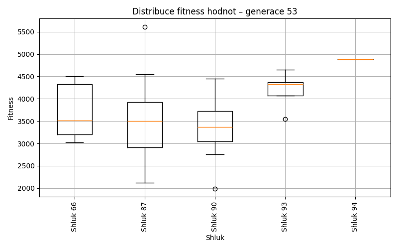
Generace 54

Stabilita mezi generací 53 → 54:
Shluk 87 → 95: 7 jedinců (10.8 %)
Shluk 87 → 96: 21 jedinců (32.3 %)
Shluk 87 → 87: 32 jedinců (49.2 %)
Shluk 87 → 90: 5 jedinců (7.7 %)
Shluk 90 → 96: 4 jedinců (16.7 %)
Shluk 90 → 87: 10 jedinců (41.7 %)
Shluk 90 → 90: 9 jedinců (37.5 %)
Shluk 90 → 95: 1 jedinců (4.2 %)
Shluk 93 → 96: 2 jedinců (40.0 %)
Shluk 93 → 87: 1 jedinců (20.0 %)
Shluk 93 → 90: 1 jedinců (20.0 %)
Shluk 93 → 66: 1 jedinců (20.0 %)
Shluk 66 → 87: 1 jedinců (20.0 %)
Shluk 66 → 97: 1 jedinců (20.0 %)
Shluk 66 → 66: 2 jedinců (40.0 %)
Shluk 66 → 95: 1 jedinců (20.0 %)
Shluk 94 → 66: 1 jedinců (100.0 %)
Jaccardovo mapování a overlap: Generace 53 → 54
- Shluk 87 → 87 (Jaccard: 0.42, Overlap: 0.73)
- Shluk 90 → 90 (Jaccard: 0.30, Overlap: 0.60)
- Shluk 93 → 66 (Jaccard: 0.12, Overlap: 0.25)
- Shluk 66 → 66 (Jaccard: 0.29, Overlap: 0.50)
- Shluk 94 → 66 (Jaccard: 0.25, Overlap: 1.00)
Posun centroidů mezi generací 53 → 54:
- Shluk 0: 567.9196
- Shluk 1: 579.0933
- Shluk 2: 151.5199
- Shluk 3: 1065.1288
- Shluk 4: 384.7366
Generace 55
Stabilita mezi generací 54 → 55:
Shluk 95 → 96: 1 jedinců (11.1 %)
Shluk 95 → 98: 2 jedinců (22.2 %)
Shluk 95 → 87: 3 jedinců (33.3 %)
Shluk 95 → 95: 2 jedinců (22.2 %)
Shluk 95 → 90: 1 jedinců (11.1 %)
Shluk 96 → 98: 10 jedinců (37.0 %)
Shluk 96 → 96: 9 jedinců (33.3 %)
Shluk 96 → 87: 7 jedinců (25.9 %)
Shluk 96 → 95: 1 jedinců (3.7 %)
Shluk 87 → 95: 2 jedinců (4.5 %)
Shluk 87 → 87: 25 jedinců (56.8 %)
Shluk 87 → 96: 3 jedinců (6.8 %)
Shluk 87 → 98: 11 jedinců (25.0 %)
Shluk 87 → 90: 3 jedinců (6.8 %)
Shluk 90 → 98: 7 jedinců (46.7 %)
Shluk 90 → 90: 4 jedinců (26.7 %)
Shluk 90 → 96: 4 jedinců (26.7 %)
Shluk 97 → 95: 1 jedinců (100.0 %)
Shluk 66 → 66: 1 jedinců (25.0 %)
Shluk 66 → 95: 2 jedinců (50.0 %)
Shluk 66 → 87: 1 jedinců (25.0 %)
Jaccardovo mapování a overlap: Generace 54 → 55
- Shluk 95 → 95 (Jaccard: 0.13, Overlap: 0.25)
- Shluk 96 → 96 (Jaccard: 0.26, Overlap: 0.53)
- Shluk 87 → 87 (Jaccard: 0.45, Overlap: 0.69)
- Shluk 90 → 90 (Jaccard: 0.21, Overlap: 0.50)
- Shluk 97 → 95 (Jaccard: 0.12, Overlap: 1.00)
- Shluk 66 → 66 (Jaccard: 0.25, Overlap: 1.00)
Posun centroidů mezi generací 54 → 55:
- Shluk 0: 552.7489
- Shluk 1: 163.3865
- Shluk 2: 192.1868
- Shluk 3: 348.6914
- Shluk 4: 866.6517
- Shluk 5: 856.6377
Generace 56
Stabilita mezi generací 55 → 56:
Shluk 96 → 99: 2 jedinců (11.8 %)
Shluk 96 → 98: 9 jedinců (52.9 %)
Shluk 96 → 87: 3 jedinců (17.6 %)
Shluk 96 → 90: 2 jedinců (11.8 %)
Shluk 96 → 66: 1 jedinců (5.9 %)
Shluk 98 → 90: 1 jedinců (3.3 %)
Shluk 98 → 98: 17 jedinců (56.7 %)
Shluk 98 → 66: 2 jedinců (6.7 %)
Shluk 98 → 87: 5 jedinců (16.7 %)
Shluk 98 → 99: 3 jedinců (10.0 %)
Shluk 98 → 95: 1 jedinců (3.3 %)
Shluk 98 → 100: 1 jedinců (3.3 %)
Shluk 87 → 99: 2 jedinců (5.6 %)
Shluk 87 → 98: 18 jedinců (50.0 %)
Shluk 87 → 66: 1 jedinců (2.8 %)
Shluk 87 → 87: 14 jedinců (38.9 %)
Shluk 87 → 95: 1 jedinců (2.8 %)
Shluk 95 → 100: 2 jedinců (25.0 %)
Shluk 95 → 95: 4 jedinců (50.0 %)
Shluk 95 → 98: 1 jedinců (12.5 %)
Shluk 95 → 66: 1 jedinců (12.5 %)
Shluk 90 → 87: 4 jedinců (50.0 %)
Shluk 90 → 66: 1 jedinců (12.5 %)
Shluk 90 → 90: 3 jedinců (37.5 %)
Shluk 66 → 66: 1 jedinců (100.0 %)
Jaccardovo mapování a overlap: Generace 55 → 56
- Shluk 96 → 98 (Jaccard: 0.17, Overlap: 0.53)
- Shluk 98 → 98 (Jaccard: 0.29, Overlap: 0.57)
- Shluk 87 → 87 (Jaccard: 0.29, Overlap: 0.54)
- Shluk 95 → 95 (Jaccard: 0.40, Overlap: 0.67)
- Shluk 90 → 90 (Jaccard: 0.27, Overlap: 0.50)
- Shluk 66 → 66 (Jaccard: 0.14, Overlap: 1.00)
Posun centroidů mezi generací 55 → 56:
- Shluk 0: 386.9497
- Shluk 1: 114.0226
- Shluk 2: 366.3335
- Shluk 3: 273.5343
- Shluk 4: 927.0033
- Shluk 5: 263.9799
Generace 57
Stabilita mezi generací 56 → 57:
Shluk 99 → 66: 1 jedinců (14.3 %)
Shluk 99 → 98: 1 jedinců (14.3 %)
Shluk 99 → 99: 5 jedinců (71.4 %)
Shluk 90 → 90: 3 jedinců (50.0 %)
Shluk 90 → 99: 3 jedinců (50.0 %)
Shluk 98 → 99: 10 jedinců (22.2 %)
Shluk 98 → 90: 15 jedinců (33.3 %)
Shluk 98 → 98: 18 jedinců (40.0 %)
Shluk 98 → 66: 2 jedinců (4.4 %)
Shluk 100 → 66: 1 jedinců (33.3 %)
Shluk 100 → 100: 1 jedinců (33.3 %)
Shluk 100 → 99: 1 jedinců (33.3 %)
Shluk 87 → 90: 7 jedinců (26.9 %)
Shluk 87 → 99: 8 jedinců (30.8 %)
Shluk 87 → 98: 11 jedinců (42.3 %)
Shluk 95 → 98: 3 jedinců (50.0 %)
Shluk 95 → 99: 1 jedinců (16.7 %)
Shluk 95 → 90: 2 jedinců (33.3 %)
Shluk 66 → 90: 2 jedinců (28.6 %)
Shluk 66 → 66: 3 jedinců (42.9 %)
Shluk 66 → 99: 1 jedinců (14.3 %)
Shluk 66 → 98: 1 jedinců (14.3 %)
Jaccardovo mapování a overlap: Generace 56 → 57
- Shluk 99 → 99 (Jaccard: 0.16, Overlap: 0.71)
- Shluk 90 → 90 (Jaccard: 0.09, Overlap: 0.50)
- Shluk 98 → 98 (Jaccard: 0.30, Overlap: 0.53)
- Shluk 100 → 100 (Jaccard: 0.33, Overlap: 1.00)
- Shluk 87 → 98 (Jaccard: 0.22, Overlap: 0.42)
- Shluk 95 → 98 (Jaccard: 0.08, Overlap: 0.50)
- Shluk 66 → 66 (Jaccard: 0.27, Overlap: 0.43)
Posun centroidů mezi generací 56 → 57:
- Shluk 0: 216.3297
- Shluk 1: 126.2716
- Shluk 2: 132.5249
- Shluk 3: 388.8779
- Shluk 4: 1116.0762
Generace 58
Stabilita mezi generací 57 → 58:
Shluk 66 → 99: 2 jedinců (28.6 %)
Shluk 66 → 66: 3 jedinců (42.9 %)
Shluk 66 → 98: 2 jedinců (28.6 %)
Shluk 90 → 98: 22 jedinců (75.9 %)
Shluk 90 → 99: 5 jedinců (17.2 %)
Shluk 90 → 66: 1 jedinců (3.4 %)
Shluk 90 → 102: 1 jedinců (3.4 %)
Shluk 99 → 99: 16 jedinců (55.2 %)
Shluk 99 → 66: 1 jedinců (3.4 %)
Shluk 99 → 98: 11 jedinců (37.9 %)
Shluk 99 → 101: 1 jedinců (3.4 %)
Shluk 98 → 98: 29 jedinců (85.3 %)
Shluk 98 → 99: 3 jedinců (8.8 %)
Shluk 98 → 102: 2 jedinců (5.9 %)
Shluk 100 → 100: 1 jedinců (100.0 %)
Jaccardovo mapování a overlap: Generace 57 → 58
- Shluk 66 → 66 (Jaccard: 0.33, Overlap: 0.60)
- Shluk 90 → 98 (Jaccard: 0.31, Overlap: 0.76)
- Shluk 99 → 99 (Jaccard: 0.41, Overlap: 0.62)
- Shluk 98 → 98 (Jaccard: 0.42, Overlap: 0.85)
- Shluk 100 → 100 (Jaccard: 1.00, Overlap: 1.00)
Posun centroidů mezi generací 57 → 58:
- Shluk 0: 244.5892
- Shluk 1: 299.8841
- Shluk 2: 608.5788
- Shluk 3: 881.4956
- Shluk 4: 889.3455

Generace 59
Stabilita mezi generací 58 → 59:
Shluk 99 → 102: 2 jedinců (7.7 %)
Shluk 99 → 103: 7 jedinců (26.9 %)
Shluk 99 → 98: 6 jedinců (23.1 %)
Shluk 99 → 101: 1 jedinců (3.8 %)
Shluk 99 → 99: 10 jedinců (38.5 %)
Shluk 98 → 99: 8 jedinců (12.5 %)
Shluk 98 → 103: 27 jedinců (42.2 %)
Shluk 98 → 101: 3 jedinců (4.7 %)
Shluk 98 → 98: 26 jedinců (40.6 %)
Shluk 66 → 100: 1 jedinců (20.0 %)
Shluk 66 → 99: 1 jedinců (20.0 %)
Shluk 66 → 103: 3 jedinců (60.0 %)
Shluk 101 → 101: 1 jedinců (100.0 %)
Shluk 102 → 101: 1 jedinců (33.3 %)
Shluk 102 → 103: 1 jedinců (33.3 %)
Shluk 102 → 102: 1 jedinců (33.3 %)
Shluk 100 → 100: 1 jedinců (100.0 %)
Jaccardovo mapování a overlap: Generace 58 → 59
- Shluk 99 → 99 (Jaccard: 0.29, Overlap: 0.53)
- Shluk 98 → 98 (Jaccard: 0.37, Overlap: 0.81)
- Shluk 66 → 100 (Jaccard: 0.17, Overlap: 0.50)
- Shluk 101 → 101 (Jaccard: 0.17, Overlap: 1.00)
- Shluk 102 → 102 (Jaccard: 0.20, Overlap: 0.33)
- Shluk 100 → 100 (Jaccard: 0.50, Overlap: 1.00)
Posun centroidů mezi generací 58 → 59:
- Shluk 0: 87.0018
- Shluk 1: 122.9806
- Shluk 2: 444.7385
- Shluk 3: 678.1738
- Shluk 4: 674.9564
- Shluk 5: 1005.1474
Generace 60
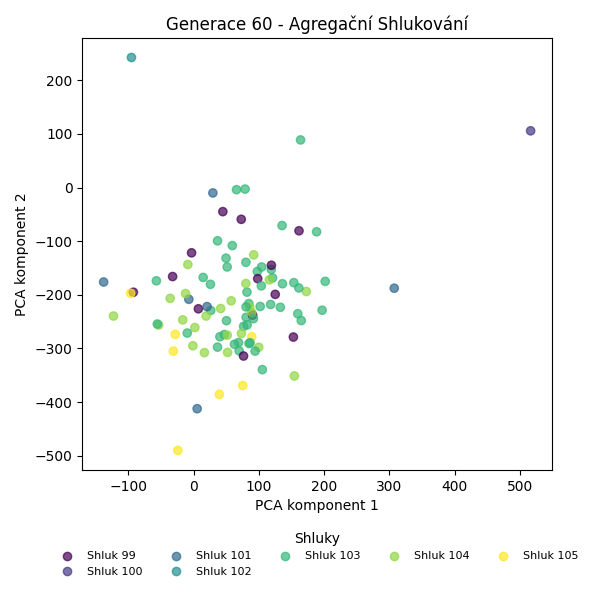
Stabilita mezi generací 59 → 60:
Shluk 102 → 102: 1 jedinců (33.3 %)
Shluk 102 → 104: 1 jedinců (33.3 %)
Shluk 102 → 101: 1 jedinců (33.3 %)
Shluk 99 → 101: 1 jedinců (5.3 %)
Shluk 99 → 105: 1 jedinců (5.3 %)
Shluk 99 → 103: 7 jedinců (36.8 %)
Shluk 99 → 99: 8 jedinců (42.1 %)
Shluk 99 → 104: 2 jedinců (10.5 %)
Shluk 103 → 103: 23 jedinců (60.5 %)
Shluk 103 → 104: 11 jedinců (28.9 %)
Shluk 103 → 105: 1 jedinců (2.6 %)
Shluk 103 → 99: 2 jedinců (5.3 %)
Shluk 103 → 101: 1 jedinců (2.6 %)
Shluk 100 → 103: 1 jedinců (50.0 %)
Shluk 100 → 100: 1 jedinců (50.0 %)
Shluk 98 → 103: 17 jedinců (53.1 %)
Shluk 98 → 105: 4 jedinců (12.5 %)
Shluk 98 → 99: 3 jedinců (9.4 %)
Shluk 98 → 104: 7 jedinců (21.9 %)
Shluk 98 → 101: 1 jedinců (3.1 %)
Shluk 101 → 101: 2 jedinců (33.3 %)
Shluk 101 → 104: 2 jedinců (33.3 %)
Shluk 101 → 105: 1 jedinců (16.7 %)
Shluk 101 → 103: 1 jedinců (16.7 %)
Jaccardovo mapování a overlap: Generace 59 → 60
- Shluk 102 → 102 (Jaccard: 0.33, Overlap: 1.00)
- Shluk 99 → 99 (Jaccard: 0.33, Overlap: 0.62)
- Shluk 103 → 103 (Jaccard: 0.36, Overlap: 0.61)
- Shluk 100 → 100 (Jaccard: 0.50, Overlap: 1.00)
- Shluk 98 → 103 (Jaccard: 0.27, Overlap: 0.53)
- Shluk 101 → 101 (Jaccard: 0.20, Overlap: 0.33)
Posun centroidů mezi generací 59 → 60:
- Shluk 0: 84.3050
- Shluk 1: 281.5262
- Shluk 2: 364.6557
- Shluk 3: 593.1915
- Shluk 4: 666.6680
- Shluk 5: 569.3439
Generace 61

Stabilita mezi generací 60 → 61:
Shluk 102 → 102: 1 jedinců (100.0 %)
Shluk 101 → 103: 2 jedinců (33.3 %)
Shluk 101 → 101: 2 jedinců (33.3 %)
Shluk 101 → 104: 1 jedinců (16.7 %)
Shluk 101 → 106: 1 jedinců (16.7 %)
Shluk 103 → 103: 18 jedinců (36.7 %)
Shluk 103 → 99: 6 jedinců (12.2 %)
Shluk 103 → 104: 12 jedinců (24.5 %)
Shluk 103 → 102: 4 jedinců (8.2 %)
Shluk 103 → 106: 9 jedinců (18.4 %)
Shluk 104 → 103: 9 jedinců (39.1 %)
Shluk 104 → 106: 4 jedinců (17.4 %)
Shluk 104 → 104: 9 jedinců (39.1 %)
Shluk 104 → 99: 1 jedinců (4.3 %)
Shluk 105 → 104: 5 jedinců (71.4 %)
Shluk 105 → 106: 1 jedinců (14.3 %)
Shluk 105 → 103: 1 jedinců (14.3 %)
Shluk 99 → 104: 3 jedinců (23.1 %)
Shluk 99 → 99: 6 jedinců (46.2 %)
Shluk 99 → 103: 3 jedinců (23.1 %)
Shluk 99 → 102: 1 jedinců (7.7 %)
Shluk 100 → 100: 1 jedinců (100.0 %)
Jaccardovo mapování a overlap: Generace 60 → 61
- Shluk 102 → 102 (Jaccard: 0.17, Overlap: 1.00)
- Shluk 101 → 101 (Jaccard: 0.33, Overlap: 1.00)
- Shluk 103 → 103 (Jaccard: 0.28, Overlap: 0.55)
- Shluk 104 → 104 (Jaccard: 0.20, Overlap: 0.39)
- Shluk 105 → 104 (Jaccard: 0.16, Overlap: 0.71)
- Shluk 99 → 99 (Jaccard: 0.30, Overlap: 0.46)
- Shluk 100 → 100 (Jaccard: 1.00, Overlap: 1.00)
Posun centroidů mezi generací 60 → 61:
- Shluk 0: 116.8738
- Shluk 1: 184.9244
- Shluk 2: 282.9733
- Shluk 3: 829.9560
- Shluk 4: 339.5550
- Shluk 5: 936.9082
- Shluk 6: 806.8364
Generace 62
Stabilita mezi generací 61 → 62:
Shluk 102 → 102: 1 jedinců (16.7 %)
Shluk 102 → 103: 1 jedinců (16.7 %)
Shluk 102 → 109: 2 jedinců (33.3 %)
Shluk 102 → 108: 1 jedinců (16.7 %)
Shluk 102 → 100: 1 jedinců (16.7 %)
Shluk 103 → 107: 5 jedinců (15.2 %)
Shluk 103 → 108: 9 jedinců (27.3 %)
Shluk 103 → 103: 16 jedinců (48.5 %)
Shluk 103 → 109: 3 jedinců (9.1 %)
Shluk 99 → 107: 4 jedinců (30.8 %)
Shluk 99 → 99: 4 jedinců (30.8 %)
Shluk 99 → 103: 3 jedinců (23.1 %)
Shluk 99 → 109: 2 jedinců (15.4 %)
Shluk 104 → 103: 11 jedinců (36.7 %)
Shluk 104 → 107: 7 jedinců (23.3 %)
Shluk 104 → 108: 7 jedinců (23.3 %)
Shluk 104 → 109: 4 jedinců (13.3 %)
Shluk 104 → 101: 1 jedinců (3.3 %)
Shluk 106 → 107: 4 jedinců (26.7 %)
Shluk 106 → 109: 1 jedinců (6.7 %)
Shluk 106 → 108: 2 jedinců (13.3 %)
Shluk 106 → 103: 6 jedinců (40.0 %)
Shluk 106 → 102: 1 jedinců (6.7 %)
Shluk 106 → 101: 1 jedinců (6.7 %)
Shluk 101 → 101: 2 jedinců (100.0 %)
Shluk 100 → 100: 1 jedinců (100.0 %)
Jaccardovo mapování a overlap: Generace 61 → 62
- Shluk 102 → 102 (Jaccard: 0.14, Overlap: 0.50)
- Shluk 103 → 103 (Jaccard: 0.30, Overlap: 0.48)
- Shluk 99 → 99 (Jaccard: 0.31, Overlap: 1.00)
- Shluk 104 → 103 (Jaccard: 0.20, Overlap: 0.37)
- Shluk 106 → 103 (Jaccard: 0.13, Overlap: 0.40)
- Shluk 101 → 101 (Jaccard: 0.50, Overlap: 1.00)
- Shluk 100 → 100 (Jaccard: 0.50, Overlap: 1.00)
Posun centroidů mezi generací 61 → 62:
- Shluk 0: 138.7342
- Shluk 1: 205.9525
- Shluk 2: 183.5090
- Shluk 3: 239.8865
- Shluk 4: 409.7884
- Shluk 5: 824.0773
- Shluk 6: 627.3116
Generace 63
Stabilita mezi generací 62 → 63:
Shluk 102 → 102: 1 jedinců (50.0 %)
Shluk 102 → 100: 1 jedinců (50.0 %)
Shluk 107 → 107: 9 jedinců (45.0 %)
Shluk 107 → 103: 2 jedinců (10.0 %)
Shluk 107 → 108: 5 jedinců (25.0 %)
Shluk 107 → 100: 2 jedinců (10.0 %)
Shluk 107 → 99: 2 jedinců (10.0 %)
Shluk 108 → 107: 6 jedinců (31.6 %)
Shluk 108 → 108: 6 jedinců (31.6 %)
Shluk 108 → 100: 3 jedinců (15.8 %)
Shluk 108 → 103: 4 jedinců (21.1 %)
Shluk 103 → 108: 6 jedinců (16.2 %)
Shluk 103 → 103: 10 jedinců (27.0 %)
Shluk 103 → 107: 12 jedinců (32.4 %)
Shluk 103 → 99: 6 jedinců (16.2 %)
Shluk 103 → 100: 3 jedinců (8.1 %)
Shluk 99 → 99: 3 jedinců (75.0 %)
Shluk 99 → 107: 1 jedinců (25.0 %)
Shluk 101 → 108: 1 jedinců (25.0 %)
Shluk 101 → 103: 1 jedinců (25.0 %)
Shluk 101 → 107: 1 jedinců (25.0 %)
Shluk 101 → 102: 1 jedinců (25.0 %)
Shluk 109 → 108: 2 jedinců (16.7 %)
Shluk 109 → 100: 1 jedinců (8.3 %)
Shluk 109 → 107: 6 jedinců (50.0 %)
Shluk 109 → 103: 2 jedinců (16.7 %)
Shluk 109 → 99: 1 jedinců (8.3 %)
Shluk 100 → 100: 2 jedinců (100.0 %)
Jaccardovo mapování a overlap: Generace 62 → 63
- Shluk 102 → 102 (Jaccard: 0.33, Overlap: 0.50)
- Shluk 107 → 107 (Jaccard: 0.20, Overlap: 0.45)
- Shluk 108 → 108 (Jaccard: 0.18, Overlap: 0.32)
- Shluk 103 → 103 (Jaccard: 0.22, Overlap: 0.53)
- Shluk 99 → 99 (Jaccard: 0.23, Overlap: 0.75)
- Shluk 101 → 102 (Jaccard: 0.20, Overlap: 0.50)
- Shluk 109 → 107 (Jaccard: 0.15, Overlap: 0.50)
- Shluk 100 → 100 (Jaccard: 0.17, Overlap: 1.00)
Posun centroidů mezi generací 62 → 63:
- Shluk 0: 223.3220
- Shluk 1: 337.6555
- Shluk 2: 287.9374
- Shluk 3: 685.0645
- Shluk 4: 441.7156
- Shluk 5: 473.3131
Generace 64
Stabilita mezi generací 63 → 64:
Shluk 102 → 102: 1 jedinců (50.0 %)
Shluk 102 → 110: 1 jedinců (50.0 %)
Shluk 107 → 107: 17 jedinců (48.6 %)
Shluk 107 → 110: 7 jedinců (20.0 %)
Shluk 107 → 103: 6 jedinců (17.1 %)
Shluk 107 → 111: 1 jedinců (2.9 %)
Shluk 107 → 108: 4 jedinců (11.4 %)
Shluk 108 → 108: 7 jedinců (35.0 %)
Shluk 108 → 107: 5 jedinců (25.0 %)
Shluk 108 → 103: 1 jedinců (5.0 %)
Shluk 108 → 100: 1 jedinců (5.0 %)
Shluk 108 → 111: 5 jedinců (25.0 %)
Shluk 108 → 110: 1 jedinců (5.0 %)
Shluk 103 → 110: 4 jedinců (21.1 %)
Shluk 103 → 111: 2 jedinců (10.5 %)
Shluk 103 → 107: 3 jedinců (15.8 %)
Shluk 103 → 103: 10 jedinců (52.6 %)
Shluk 99 → 107: 6 jedinců (50.0 %)
Shluk 99 → 108: 1 jedinců (8.3 %)
Shluk 99 → 110: 3 jedinců (25.0 %)
Shluk 99 → 111: 1 jedinců (8.3 %)
Shluk 99 → 103: 1 jedinců (8.3 %)
Shluk 100 → 103: 2 jedinců (16.7 %)
Shluk 100 → 108: 3 jedinců (25.0 %)
Shluk 100 → 100: 3 jedinců (25.0 %)
Shluk 100 → 111: 2 jedinců (16.7 %)
Shluk 100 → 107: 2 jedinců (16.7 %)
Jaccardovo mapování a overlap: Generace 63 → 64
- Shluk 102 → 102 (Jaccard: 0.50, Overlap: 1.00)
- Shluk 107 → 107 (Jaccard: 0.33, Overlap: 0.52)
- Shluk 108 → 108 (Jaccard: 0.25, Overlap: 0.47)
- Shluk 103 → 103 (Jaccard: 0.34, Overlap: 0.53)
- Shluk 99 → 107 (Jaccard: 0.15, Overlap: 0.50)
- Shluk 100 → 100 (Jaccard: 0.23, Overlap: 0.75)
Posun centroidů mezi generací 63 → 64:
- Shluk 0: 364.8673
- Shluk 1: 265.9465
- Shluk 2: 254.4957
- Shluk 3: 614.7033
- Shluk 4: 335.7814
- Shluk 5: 415.5952
Generace 65
Stabilita mezi generací 64 → 65:
Shluk 102 → 102: 1 jedinců (100.0 %)
Shluk 107 → 107: 13 jedinců (39.4 %)
Shluk 107 → 100: 1 jedinců (3.0 %)
Shluk 107 → 103: 8 jedinců (24.2 %)
Shluk 107 → 112: 10 jedinců (30.3 %)
Shluk 107 → 102: 1 jedinců (3.0 %)
Shluk 110 → 103: 4 jedinců (25.0 %)
Shluk 110 → 107: 6 jedinců (37.5 %)
Shluk 110 → 112: 3 jedinců (18.8 %)
Shluk 110 → 102: 3 jedinců (18.8 %)
Shluk 108 → 103: 7 jedinců (46.7 %)
Shluk 108 → 107: 5 jedinců (33.3 %)
Shluk 108 → 112: 3 jedinců (20.0 %)
Shluk 111 → 102: 1 jedinců (9.1 %)
Shluk 111 → 103: 4 jedinců (36.4 %)
Shluk 111 → 107: 5 jedinců (45.5 %)
Shluk 111 → 112: 1 jedinců (9.1 %)
Shluk 103 → 103: 9 jedinců (45.0 %)
Shluk 103 → 112: 6 jedinců (30.0 %)
Shluk 103 → 107: 5 jedinců (25.0 %)
Shluk 100 → 103: 2 jedinců (50.0 %)
Shluk 100 → 100: 1 jedinců (25.0 %)
Shluk 100 → 107: 1 jedinců (25.0 %)
Jaccardovo mapování a overlap: Generace 64 → 65
- Shluk 102 → 102 (Jaccard: 0.17, Overlap: 1.00)
- Shluk 107 → 107 (Jaccard: 0.24, Overlap: 0.39)
- Shluk 110 → 102 (Jaccard: 0.16, Overlap: 0.50)
- Shluk 108 → 103 (Jaccard: 0.17, Overlap: 0.47)
- Shluk 111 → 107 (Jaccard: 0.12, Overlap: 0.45)
- Shluk 103 → 103 (Jaccard: 0.20, Overlap: 0.45)
- Shluk 100 → 100 (Jaccard: 0.20, Overlap: 0.50)
Posun centroidů mezi generací 64 → 65:
- Shluk 0: 417.7381
- Shluk 1: 623.5214
- Shluk 2: 339.0201
- Shluk 3: 251.7620
- Shluk 4: 258.7785
Generace 66
Stabilita mezi generací 65 → 66:
Shluk 102 → 113: 1 jedinců (16.7 %)
Shluk 102 → 102: 2 jedinců (33.3 %)
Shluk 102 → 107: 2 jedinců (33.3 %)
Shluk 102 → 103: 1 jedinců (16.7 %)
Shluk 107 → 107: 14 jedinců (40.0 %)
Shluk 107 → 112: 11 jedinců (31.4 %)
Shluk 107 → 103: 3 jedinců (8.6 %)
Shluk 107 → 102: 4 jedinců (11.4 %)
Shluk 107 → 113: 3 jedinců (8.6 %)
Shluk 103 → 103: 11 jedinců (32.4 %)
Shluk 103 → 112: 10 jedinců (29.4 %)
Shluk 103 → 113: 6 jedinců (17.6 %)
Shluk 103 → 107: 5 jedinců (14.7 %)
Shluk 103 → 102: 2 jedinců (5.9 %)
Shluk 100 → 103: 1 jedinců (50.0 %)
Shluk 100 → 100: 1 jedinců (50.0 %)
Shluk 112 → 113: 1 jedinců (4.3 %)
Shluk 112 → 112: 15 jedinců (65.2 %)
Shluk 112 → 103: 5 jedinců (21.7 %)
Shluk 112 → 107: 2 jedinců (8.7 %)
Jaccardovo mapování a overlap: Generace 65 → 66
- Shluk 102 → 102 (Jaccard: 0.17, Overlap: 0.33)
- Shluk 107 → 107 (Jaccard: 0.32, Overlap: 0.61)
- Shluk 103 → 103 (Jaccard: 0.25, Overlap: 0.52)
- Shluk 100 → 100 (Jaccard: 0.50, Overlap: 1.00)
- Shluk 112 → 112 (Jaccard: 0.34, Overlap: 0.65)
Posun centroidů mezi generací 65 → 66:
- Shluk 0: 421.1700
- Shluk 1: 470.3745
- Shluk 2: 425.8565
- Shluk 3: 365.7870
- Shluk 4: 106.7294
Generace 67
Stabilita mezi generací 66 → 67:
Shluk 113 → 113: 4 jedinců (36.4 %)
Shluk 113 → 103: 3 jedinců (27.3 %)
Shluk 113 → 112: 1 jedinců (9.1 %)
Shluk 113 → 114: 1 jedinců (9.1 %)
Shluk 113 → 102: 2 jedinců (18.2 %)
Shluk 107 → 103: 5 jedinců (21.7 %)
Shluk 107 → 112: 10 jedinců (43.5 %)
Shluk 107 → 102: 6 jedinců (26.1 %)
Shluk 107 → 114: 2 jedinců (8.7 %)
Shluk 103 → 103: 9 jedinců (42.9 %)
Shluk 103 → 113: 4 jedinců (19.0 %)
Shluk 103 → 112: 4 jedinců (19.0 %)
Shluk 103 → 102: 2 jedinců (9.5 %)
Shluk 103 → 114: 2 jedinců (9.5 %)
Shluk 112 → 114: 4 jedinců (11.1 %)
Shluk 112 → 103: 10 jedinců (27.8 %)
Shluk 112 → 112: 18 jedinců (50.0 %)
Shluk 112 → 100: 1 jedinců (2.8 %)
Shluk 112 → 102: 2 jedinců (5.6 %)
Shluk 112 → 113: 1 jedinců (2.8 %)
Shluk 102 → 102: 5 jedinců (62.5 %)
Shluk 102 → 113: 1 jedinců (12.5 %)
Shluk 102 → 114: 2 jedinců (25.0 %)
Shluk 100 → 100: 1 jedinců (100.0 %)
Jaccardovo mapování a overlap: Generace 66 → 67
- Shluk 113 → 113 (Jaccard: 0.24, Overlap: 0.40)
- Shluk 107 → 112 (Jaccard: 0.22, Overlap: 0.43)
- Shluk 103 → 103 (Jaccard: 0.23, Overlap: 0.43)
- Shluk 112 → 112 (Jaccard: 0.35, Overlap: 0.55)
- Shluk 102 → 102 (Jaccard: 0.25, Overlap: 0.62)
- Shluk 100 → 100 (Jaccard: 0.50, Overlap: 1.00)
Posun centroidů mezi generací 66 → 67:
- Shluk 0: 245.3141
- Shluk 1: 242.0974
- Shluk 2: 217.9772
- Shluk 3: 285.0974
- Shluk 4: 247.6580
- Shluk 5: 457.3697
Generace 68
Stabilita mezi generací 67 → 68:
Shluk 113 → 115: 2 jedinců (20.0 %)
Shluk 113 → 116: 2 jedinců (20.0 %)
Shluk 113 → 113: 5 jedinců (50.0 %)
Shluk 113 → 102: 1 jedinců (10.0 %)
Shluk 103 → 113: 4 jedinců (14.8 %)
Shluk 103 → 116: 4 jedinců (14.8 %)
Shluk 103 → 117: 2 jedinců (7.4 %)
Shluk 103 → 112: 11 jedinců (40.7 %)
Shluk 103 → 100: 3 jedinců (11.1 %)
Shluk 103 → 115: 1 jedinců (3.7 %)
Shluk 103 → 102: 2 jedinců (7.4 %)
Shluk 114 → 100: 1 jedinců (9.1 %)
Shluk 114 → 112: 6 jedinců (54.5 %)
Shluk 114 → 102: 1 jedinců (9.1 %)
Shluk 114 → 116: 2 jedinců (18.2 %)
Shluk 114 → 113: 1 jedinců (9.1 %)
Shluk 102 → 113: 5 jedinců (29.4 %)
Shluk 102 → 100: 2 jedinců (11.8 %)
Shluk 102 → 112: 3 jedinců (17.6 %)
Shluk 102 → 102: 5 jedinců (29.4 %)
Shluk 102 → 116: 2 jedinců (11.8 %)
Shluk 112 → 102: 8 jedinců (24.2 %)
Shluk 112 → 117: 4 jedinců (12.1 %)
Shluk 112 → 113: 6 jedinců (18.2 %)
Shluk 112 → 112: 14 jedinců (42.4 %)
Shluk 112 → 100: 1 jedinců (3.0 %)
Shluk 100 → 102: 1 jedinců (50.0 %)
Shluk 100 → 100: 1 jedinců (50.0 %)
Jaccardovo mapování a overlap: Generace 67 → 68
- Shluk 113 → 113 (Jaccard: 0.19, Overlap: 0.50)
- Shluk 103 → 112 (Jaccard: 0.22, Overlap: 0.41)
- Shluk 114 → 112 (Jaccard: 0.15, Overlap: 0.55)
- Shluk 102 → 102 (Jaccard: 0.17, Overlap: 0.29)
- Shluk 112 → 112 (Jaccard: 0.26, Overlap: 0.42)
- Shluk 100 → 100 (Jaccard: 0.11, Overlap: 0.50)
Posun centroidů mezi generací 67 → 68:
- Shluk 0: 403.0133
- Shluk 1: 125.6908
- Shluk 2: 248.3815
- Shluk 3: 134.3356
- Shluk 4: 329.0907
- Shluk 5: 553.9951
Generace 69
Stabilita mezi generací 68 → 69:
Shluk 115 → 118: 1 jedinců (33.3 %)
Shluk 115 → 115: 2 jedinců (66.7 %)
Shluk 113 → 119: 3 jedinců (14.3 %)
Shluk 113 → 100: 1 jedinců (4.8 %)
Shluk 113 → 115: 2 jedinců (9.5 %)
Shluk 113 → 118: 2 jedinců (9.5 %)
Shluk 113 → 112: 7 jedinců (33.3 %)
Shluk 113 → 120: 2 jedinců (9.5 %)
Shluk 113 → 102: 4 jedinců (19.0 %)
Shluk 116 → 100: 3 jedinců (30.0 %)
Shluk 116 → 115: 3 jedinců (30.0 %)
Shluk 116 → 112: 1 jedinců (10.0 %)
Shluk 116 → 102: 1 jedinců (10.0 %)
Shluk 116 → 118: 1 jedinců (10.0 %)
Shluk 116 → 120: 1 jedinců (10.0 %)
Shluk 100 → 100: 2 jedinců (25.0 %)
Shluk 100 → 102: 3 jedinců (37.5 %)
Shluk 100 → 112: 1 jedinců (12.5 %)
Shluk 100 → 117: 1 jedinců (12.5 %)
Shluk 100 → 118: 1 jedinců (12.5 %)
Shluk 112 → 118: 1 jedinců (2.9 %)
Shluk 112 → 120: 5 jedinců (14.7 %)
Shluk 112 → 112: 10 jedinců (29.4 %)
Shluk 112 → 100: 4 jedinců (11.8 %)
Shluk 112 → 102: 10 jedinců (29.4 %)
Shluk 112 → 119: 3 jedinců (8.8 %)
Shluk 112 → 115: 1 jedinců (2.9 %)
Shluk 102 → 120: 3 jedinců (16.7 %)
Shluk 102 → 102: 9 jedinců (50.0 %)
Shluk 102 → 112: 2 jedinců (11.1 %)
Shluk 102 → 119: 2 jedinců (11.1 %)
Shluk 102 → 118: 2 jedinců (11.1 %)
Shluk 117 → 117: 3 jedinců (50.0 %)
Shluk 117 → 119: 2 jedinců (33.3 %)
Shluk 117 → 100: 1 jedinců (16.7 %)
Jaccardovo mapování a overlap: Generace 68 → 69
- Shluk 115 → 115 (Jaccard: 0.22, Overlap: 0.67)
- Shluk 113 → 112 (Jaccard: 0.20, Overlap: 0.33)
- Shluk 116 → 115 (Jaccard: 0.20, Overlap: 0.38)
- Shluk 100 → 100 (Jaccard: 0.12, Overlap: 0.25)
- Shluk 112 → 112 (Jaccard: 0.22, Overlap: 0.48)
- Shluk 102 → 102 (Jaccard: 0.25, Overlap: 0.50)
- Shluk 117 → 117 (Jaccard: 0.43, Overlap: 0.75)
Posun centroidů mezi generací 68 → 69:
- Shluk 0: 264.4809
- Shluk 1: 307.0765
- Shluk 2: 251.1589
- Shluk 3: 463.0227
- Shluk 4: 297.7118
- Shluk 5: 415.4168
- Shluk 6: 291.8095
Generace 70
Stabilita mezi generací 69 → 70:
Shluk 118 → 121: 1 jedinců (12.5 %)
Shluk 118 → 100: 1 jedinců (12.5 %)
Shluk 118 → 118: 4 jedinců (50.0 %)
Shluk 118 → 102: 2 jedinců (25.0 %)
Shluk 119 → 100: 1 jedinců (10.0 %)
Shluk 119 → 102: 3 jedinců (30.0 %)
Shluk 119 → 115: 2 jedinců (20.0 %)
Shluk 119 → 120: 3 jedinců (30.0 %)
Shluk 119 → 118: 1 jedinců (10.0 %)
Shluk 100 → 118: 2 jedinců (18.2 %)
Shluk 100 → 100: 6 jedinců (54.5 %)
Shluk 100 → 120: 2 jedinců (18.2 %)
Shluk 100 → 102: 1 jedinců (9.1 %)
Shluk 115 → 102: 4 jedinců (50.0 %)
Shluk 115 → 115: 2 jedinců (25.0 %)
Shluk 115 → 120: 1 jedinců (12.5 %)
Shluk 115 → 100: 1 jedinců (12.5 %)
Shluk 120 → 102: 3 jedinců (27.3 %)
Shluk 120 → 120: 4 jedinců (36.4 %)
Shluk 120 → 100: 1 jedinců (9.1 %)
Shluk 120 → 118: 1 jedinců (9.1 %)
Shluk 120 → 117: 2 jedinců (18.2 %)
Shluk 112 → 115: 2 jedinců (9.5 %)
Shluk 112 → 100: 3 jedinců (14.3 %)
Shluk 112 → 118: 3 jedinců (14.3 %)
Shluk 112 → 102: 9 jedinců (42.9 %)
Shluk 112 → 120: 3 jedinců (14.3 %)
Shluk 112 → 117: 1 jedinců (4.8 %)
Shluk 117 → 117: 2 jedinců (50.0 %)
Shluk 117 → 100: 1 jedinců (25.0 %)
Shluk 117 → 115: 1 jedinců (25.0 %)
Shluk 102 → 102: 15 jedinců (55.6 %)
Shluk 102 → 100: 3 jedinců (11.1 %)
Shluk 102 → 115: 1 jedinců (3.7 %)
Shluk 102 → 118: 3 jedinců (11.1 %)
Shluk 102 → 120: 3 jedinců (11.1 %)
Shluk 102 → 121: 1 jedinců (3.7 %)
Shluk 102 → 117: 1 jedinců (3.7 %)
Jaccardovo mapování a overlap: Generace 69 → 70
- Shluk 118 → 118 (Jaccard: 0.22, Overlap: 0.50)
- Shluk 119 → 120 (Jaccard: 0.13, Overlap: 0.30)
- Shluk 100 → 100 (Jaccard: 0.27, Overlap: 0.55)
- Shluk 115 → 115 (Jaccard: 0.14, Overlap: 0.25)
- Shluk 120 → 120 (Jaccard: 0.17, Overlap: 0.36)
- Shluk 112 → 102 (Jaccard: 0.18, Overlap: 0.43)
- Shluk 117 → 117 (Jaccard: 0.25, Overlap: 0.50)
- Shluk 102 → 102 (Jaccard: 0.31, Overlap: 0.56)
Posun centroidů mezi generací 69 → 70:
- Shluk 0: 298.7382
- Shluk 1: 395.6018
- Shluk 2: 298.9261
- Shluk 3: 422.2396
- Shluk 4: 271.3880
- Shluk 5: 460.5197
- Shluk 6: 296.8863

Generace 71
Stabilita mezi generací 70 → 71:
Shluk 121 → 121: 1 jedinců (50.0 %)
Shluk 121 → 100: 1 jedinců (50.0 %)
Shluk 100 → 100: 5 jedinců (29.4 %)
Shluk 100 → 102: 7 jedinců (41.2 %)
Shluk 100 → 120: 1 jedinců (5.9 %)
Shluk 100 → 118: 4 jedinců (23.5 %)
Shluk 118 → 102: 3 jedinců (21.4 %)
Shluk 118 → 118: 6 jedinců (42.9 %)
Shluk 118 → 120: 3 jedinců (21.4 %)
Shluk 118 → 100: 2 jedinců (14.3 %)
Shluk 102 → 102: 23 jedinců (62.2 %)
Shluk 102 → 118: 11 jedinců (29.7 %)
Shluk 102 → 120: 2 jedinců (5.4 %)
Shluk 102 → 100: 1 jedinců (2.7 %)
Shluk 115 → 118: 3 jedinců (37.5 %)
Shluk 115 → 100: 2 jedinců (25.0 %)
Shluk 115 → 102: 2 jedinců (25.0 %)
Shluk 115 → 120: 1 jedinců (12.5 %)
Shluk 117 → 118: 4 jedinců (66.7 %)
Shluk 117 → 121: 1 jedinců (16.7 %)
Shluk 117 → 102: 1 jedinců (16.7 %)
Shluk 120 → 120: 5 jedinců (31.2 %)
Shluk 120 → 100: 4 jedinců (25.0 %)
Shluk 120 → 102: 2 jedinců (12.5 %)
Shluk 120 → 118: 5 jedinců (31.2 %)
Jaccardovo mapování a overlap: Generace 70 → 71
- Shluk 121 → 121 (Jaccard: 0.33, Overlap: 0.50)
- Shluk 100 → 100 (Jaccard: 0.19, Overlap: 0.33)
- Shluk 118 → 118 (Jaccard: 0.15, Overlap: 0.43)
- Shluk 102 → 102 (Jaccard: 0.44, Overlap: 0.62)
- Shluk 115 → 100 (Jaccard: 0.10, Overlap: 0.25)
- Shluk 117 → 121 (Jaccard: 0.14, Overlap: 0.50)
- Shluk 120 → 120 (Jaccard: 0.22, Overlap: 0.42)
Posun centroidů mezi generací 70 → 71:
- Shluk 0: 284.3849
- Shluk 1: 457.8355
- Shluk 2: 625.5312
- Shluk 3: 65.8432
- Shluk 4: 271.5984
Generace 72
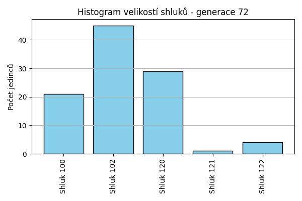
Stabilita mezi generací 71 → 72:
Shluk 121 → 100: 1 jedinců (50.0 %)
Shluk 121 → 121: 1 jedinců (50.0 %)
Shluk 100 → 100: 7 jedinců (46.7 %)
Shluk 100 → 102: 6 jedinců (40.0 %)
Shluk 100 → 120: 2 jedinců (13.3 %)
Shluk 102 → 102: 22 jedinců (57.9 %)
Shluk 102 → 100: 3 jedinců (7.9 %)
Shluk 102 → 120: 13 jedinců (34.2 %)
Shluk 120 → 120: 9 jedinců (75.0 %)
Shluk 120 → 102: 1 jedinců (8.3 %)
Shluk 120 → 100: 2 jedinců (16.7 %)
Shluk 118 → 100: 8 jedinců (24.2 %)
Shluk 118 → 102: 16 jedinců (48.5 %)
Shluk 118 → 122: 4 jedinců (12.1 %)
Shluk 118 → 120: 5 jedinců (15.2 %)
Jaccardovo mapování a overlap: Generace 71 → 72
- Shluk 121 → 121 (Jaccard: 0.50, Overlap: 1.00)
- Shluk 100 → 100 (Jaccard: 0.24, Overlap: 0.47)
- Shluk 102 → 102 (Jaccard: 0.36, Overlap: 0.58)
- Shluk 120 → 120 (Jaccard: 0.28, Overlap: 0.75)
- Shluk 118 → 102 (Jaccard: 0.26, Overlap: 0.48)
Posun centroidů mezi generací 71 → 72:
- Shluk 0: 256.0583
- Shluk 1: 434.9675
- Shluk 2: 608.2993
- Shluk 3: 787.6765
- Shluk 4: 226.5962
Generace 73
Stabilita mezi generací 72 → 73:
Shluk 100 → 100: 10 jedinců (47.6 %)
Shluk 100 → 123: 4 jedinců (19.0 %)
Shluk 100 → 125: 3 jedinců (14.3 %)
Shluk 100 → 124: 4 jedinců (19.0 %)
Shluk 102 → 123: 8 jedinců (17.8 %)
Shluk 102 → 124: 10 jedinců (22.2 %)
Shluk 102 → 125: 10 jedinců (22.2 %)
Shluk 102 → 120: 13 jedinců (28.9 %)
Shluk 102 → 100: 4 jedinců (8.9 %)
Shluk 120 → 125: 3 jedinců (10.3 %)
Shluk 120 → 120: 12 jedinců (41.4 %)
Shluk 120 → 124: 4 jedinců (13.8 %)
Shluk 120 → 123: 7 jedinců (24.1 %)
Shluk 120 → 100: 3 jedinců (10.3 %)
Shluk 122 → 120: 1 jedinců (25.0 %)
Shluk 122 → 123: 1 jedinců (25.0 %)
Shluk 122 → 125: 1 jedinců (25.0 %)
Shluk 122 → 122: 1 jedinců (25.0 %)
Shluk 121 → 121: 1 jedinců (100.0 %)
Jaccardovo mapování a overlap: Generace 72 → 73
- Shluk 100 → 100 (Jaccard: 0.36, Overlap: 0.59)
- Shluk 102 → 120 (Jaccard: 0.22, Overlap: 0.50)
- Shluk 120 → 120 (Jaccard: 0.28, Overlap: 0.46)
- Shluk 122 → 122 (Jaccard: 0.25, Overlap: 1.00)
- Shluk 121 → 121 (Jaccard: 1.00, Overlap: 1.00)
Posun centroidů mezi generací 72 → 73:
- Shluk 0: 263.9001
- Shluk 1: 421.4757
- Shluk 2: 179.2565
- Shluk 3: 469.7644
- Shluk 4: 321.8627
Generace 74
Stabilita mezi generací 73 → 74:
Shluk 100 → 100: 6 jedinců (35.3 %)
Shluk 100 → 124: 4 jedinců (23.5 %)
Shluk 100 → 120: 5 jedinců (29.4 %)
Shluk 100 → 126: 2 jedinců (11.8 %)
Shluk 123 → 100: 4 jedinců (20.0 %)
Shluk 123 → 120: 8 jedinců (40.0 %)
Shluk 123 → 126: 1 jedinců (5.0 %)
Shluk 123 → 124: 7 jedinců (35.0 %)
Shluk 124 → 126: 3 jedinců (16.7 %)
Shluk 124 → 124: 8 jedinců (44.4 %)
Shluk 124 → 120: 7 jedinců (38.9 %)
Shluk 125 → 100: 6 jedinců (35.3 %)
Shluk 125 → 124: 7 jedinců (41.2 %)
Shluk 125 → 120: 4 jedinců (23.5 %)
Shluk 120 → 121: 1 jedinců (3.8 %)
Shluk 120 → 120: 14 jedinců (53.8 %)
Shluk 120 → 124: 10 jedinců (38.5 %)
Shluk 120 → 126: 1 jedinců (3.8 %)
Shluk 121 → 121: 1 jedinců (100.0 %)
Shluk 122 → 120: 1 jedinců (100.0 %)
Jaccardovo mapování a overlap: Generace 73 → 74
- Shluk 100 → 100 (Jaccard: 0.22, Overlap: 0.38)
- Shluk 123 → 120 (Jaccard: 0.16, Overlap: 0.40)
- Shluk 124 → 124 (Jaccard: 0.17, Overlap: 0.44)
- Shluk 125 → 100 (Jaccard: 0.22, Overlap: 0.38)
- Shluk 120 → 120 (Jaccard: 0.27, Overlap: 0.54)
- Shluk 121 → 121 (Jaccard: 0.50, Overlap: 1.00)
- Shluk 122 → 120 (Jaccard: 0.03, Overlap: 1.00)
Posun centroidů mezi generací 73 → 74:
- Shluk 0: 216.8701
- Shluk 1: 214.6558
- Shluk 2: 361.8445
- Shluk 3: 393.3577
- Shluk 4: 411.2852
Generace 75

Stabilita mezi generací 74 → 75:
Shluk 100 → 100: 6 jedinců (37.5 %)
Shluk 100 → 126: 4 jedinců (25.0 %)
Shluk 100 → 124: 6 jedinců (37.5 %)
Shluk 124 → 126: 4 jedinců (11.1 %)
Shluk 124 → 124: 31 jedinců (86.1 %)
Shluk 124 → 100: 1 jedinců (2.8 %)
Shluk 120 → 124: 31 jedinců (79.5 %)
Shluk 120 → 126: 7 jedinců (17.9 %)
Shluk 120 → 100: 1 jedinců (2.6 %)
Shluk 126 → 126: 3 jedinců (42.9 %)
Shluk 126 → 124: 4 jedinců (57.1 %)
Shluk 121 → 124: 1 jedinců (50.0 %)
Shluk 121 → 121: 1 jedinců (50.0 %)
Jaccardovo mapování a overlap: Generace 74 → 75
- Shluk 100 → 100 (Jaccard: 0.33, Overlap: 0.75)
- Shluk 124 → 124 (Jaccard: 0.40, Overlap: 0.86)
- Shluk 120 → 124 (Jaccard: 0.38, Overlap: 0.79)
- Shluk 126 → 126 (Jaccard: 0.14, Overlap: 0.43)
- Shluk 121 → 121 (Jaccard: 0.50, Overlap: 1.00)
Posun centroidů mezi generací 74 → 75:
- Shluk 0: 85.9898
- Shluk 1: 297.0146
- Shluk 2: 182.7540
- Shluk 3: 496.0716
Generace 76

Stabilita mezi generací 75 → 76:
Shluk 100 → 126: 6 jedinců (75.0 %)
Shluk 100 → 128: 2 jedinců (25.0 %)
Shluk 126 → 126: 8 jedinců (44.4 %)
Shluk 126 → 127: 3 jedinců (16.7 %)
Shluk 126 → 124: 4 jedinců (22.2 %)
Shluk 126 → 128: 3 jedinců (16.7 %)
Shluk 124 → 124: 22 jedinců (30.1 %)
Shluk 124 → 128: 14 jedinců (19.2 %)
Shluk 124 → 126: 20 jedinců (27.4 %)
Shluk 124 → 127: 17 jedinců (23.3 %)
Shluk 121 → 121: 1 jedinců (100.0 %)
Jaccardovo mapování a overlap: Generace 75 → 76
- Shluk 100 → 126 (Jaccard: 0.17, Overlap: 0.75)
- Shluk 126 → 126 (Jaccard: 0.18, Overlap: 0.44)
- Shluk 124 → 124 (Jaccard: 0.29, Overlap: 0.85)
- Shluk 121 → 121 (Jaccard: 1.00, Overlap: 1.00)
Posun centroidů mezi generací 75 → 76:
- Shluk 0: 204.4157
- Shluk 1: 332.5294
- Shluk 2: 395.4411
- Shluk 3: 369.3750
Generace 77
Stabilita mezi generací 76 → 77:
Shluk 126 → 129: 1 jedinců (2.9 %)
Shluk 126 → 128: 6 jedinců (17.6 %)
Shluk 126 → 126: 17 jedinců (50.0 %)
Shluk 126 → 121: 1 jedinců (2.9 %)
Shluk 126 → 130: 6 jedinců (17.6 %)
Shluk 126 → 124: 3 jedinců (8.8 %)
Shluk 124 → 126: 2 jedinců (7.7 %)
Shluk 124 → 124: 17 jedinců (65.4 %)
Shluk 124 → 130: 7 jedinců (26.9 %)
Shluk 127 → 124: 14 jedinců (70.0 %)
Shluk 127 → 130: 4 jedinců (20.0 %)
Shluk 127 → 126: 1 jedinců (5.0 %)
Shluk 127 → 128: 1 jedinců (5.0 %)
Shluk 128 → 124: 5 jedinců (26.3 %)
Shluk 128 → 128: 6 jedinců (31.6 %)
Shluk 128 → 121: 3 jedinců (15.8 %)
Shluk 128 → 126: 5 jedinců (26.3 %)
Shluk 121 → 121: 1 jedinců (100.0 %)
Jaccardovo mapování a overlap: Generace 76 → 77
- Shluk 126 → 126 (Jaccard: 0.40, Overlap: 0.68)
- Shluk 124 → 124 (Jaccard: 0.35, Overlap: 0.65)
- Shluk 127 → 124 (Jaccard: 0.31, Overlap: 0.70)
- Shluk 128 → 128 (Jaccard: 0.23, Overlap: 0.46)
- Shluk 121 → 121 (Jaccard: 0.20, Overlap: 1.00)
Posun centroidů mezi generací 76 → 77:
- Shluk 0: 256.8565
- Shluk 1: 472.7811
- Shluk 2: 226.4570
- Shluk 3: 931.7846
- Shluk 4: 196.1920
Generace 78
Stabilita mezi generací 77 → 78:
Shluk 129 → 129: 1 jedinců (100.0 %)
Shluk 128 → 130: 2 jedinců (15.4 %)
Shluk 128 → 126: 5 jedinců (38.5 %)
Shluk 128 → 128: 3 jedinců (23.1 %)
Shluk 128 → 131: 2 jedinců (15.4 %)
Shluk 128 → 129: 1 jedinců (7.7 %)
Shluk 126 → 126: 11 jedinců (44.0 %)
Shluk 126 → 130: 4 jedinců (16.0 %)
Shluk 126 → 129: 3 jedinců (12.0 %)
Shluk 126 → 131: 4 jedinců (16.0 %)
Shluk 126 → 124: 3 jedinců (12.0 %)
Shluk 124 → 126: 1 jedinců (2.6 %)
Shluk 124 → 131: 9 jedinců (23.1 %)
Shluk 124 → 124: 13 jedinců (33.3 %)
Shluk 124 → 130: 15 jedinců (38.5 %)
Shluk 124 → 129: 1 jedinců (2.6 %)
Shluk 130 → 130: 9 jedinců (52.9 %)
Shluk 130 → 129: 1 jedinců (5.9 %)
Shluk 130 → 131: 4 jedinců (23.5 %)
Shluk 130 → 126: 3 jedinců (17.6 %)
Shluk 121 → 130: 1 jedinců (20.0 %)
Shluk 121 → 129: 1 jedinců (20.0 %)
Shluk 121 → 121: 1 jedinců (20.0 %)
Shluk 121 → 131: 1 jedinců (20.0 %)
Shluk 121 → 126: 1 jedinců (20.0 %)
Jaccardovo mapování a overlap: Generace 77 → 78
- Shluk 129 → 129 (Jaccard: 0.12, Overlap: 1.00)
- Shluk 128 → 128 (Jaccard: 0.23, Overlap: 1.00)
- Shluk 126 → 126 (Jaccard: 0.31, Overlap: 0.52)
- Shluk 124 → 124 (Jaccard: 0.31, Overlap: 0.81)
- Shluk 130 → 130 (Jaccard: 0.23, Overlap: 0.53)
- Shluk 121 → 121 (Jaccard: 0.20, Overlap: 1.00)
Posun centroidů mezi generací 77 → 78:
- Shluk 0: 320.0057
- Shluk 1: 444.8915
- Shluk 2: 549.1144
- Shluk 3: 238.9597
- Shluk 4: 294.3304
- Shluk 5: 896.9476
Generace 79
Stabilita mezi generací 78 → 79:
Shluk 129 → 128: 1 jedinců (12.5 %)
Shluk 129 → 132: 1 jedinců (12.5 %)
Shluk 129 → 129: 2 jedinců (25.0 %)
Shluk 129 → 130: 2 jedinců (25.0 %)
Shluk 129 → 124: 2 jedinců (25.0 %)
Shluk 130 → 132: 8 jedinců (25.8 %)
Shluk 130 → 130: 12 jedinců (38.7 %)
Shluk 130 → 128: 4 jedinců (12.9 %)
Shluk 130 → 124: 7 jedinců (22.6 %)
Shluk 126 → 128: 3 jedinců (14.3 %)
Shluk 126 → 130: 7 jedinců (33.3 %)
Shluk 126 → 124: 4 jedinců (19.0 %)
Shluk 126 → 129: 3 jedinců (14.3 %)
Shluk 126 → 132: 4 jedinců (19.0 %)
Shluk 131 → 132: 3 jedinců (15.0 %)
Shluk 131 → 128: 3 jedinců (15.0 %)
Shluk 131 → 121: 1 jedinců (5.0 %)
Shluk 131 → 130: 3 jedinců (15.0 %)
Shluk 131 → 124: 8 jedinců (40.0 %)
Shluk 131 → 129: 2 jedinců (10.0 %)
Shluk 128 → 128: 3 jedinců (100.0 %)
Shluk 124 → 130: 3 jedinců (18.8 %)
Shluk 124 → 124: 10 jedinců (62.5 %)
Shluk 124 → 132: 3 jedinců (18.8 %)
Shluk 121 → 121: 1 jedinců (100.0 %)
Jaccardovo mapování a overlap: Generace 78 → 79
- Shluk 129 → 129 (Jaccard: 0.15, Overlap: 0.29)
- Shluk 130 → 130 (Jaccard: 0.26, Overlap: 0.44)
- Shluk 126 → 130 (Jaccard: 0.17, Overlap: 0.33)
- Shluk 131 → 124 (Jaccard: 0.19, Overlap: 0.40)
- Shluk 128 → 128 (Jaccard: 0.21, Overlap: 1.00)
- Shluk 124 → 124 (Jaccard: 0.27, Overlap: 0.62)
- Shluk 121 → 121 (Jaccard: 0.50, Overlap: 1.00)
Posun centroidů mezi generací 78 → 79:
- Shluk 0: 183.5398
- Shluk 1: 140.2762
- Shluk 2: 592.8802
- Shluk 3: 271.2088
- Shluk 4: 243.7390
- Shluk 5: 626.9566
Generace 80
Stabilita mezi generací 79 → 80:
Shluk 128 → 133: 5 jedinců (35.7 %)
Shluk 128 → 132: 8 jedinců (57.1 %)
Shluk 128 → 124: 1 jedinců (7.1 %)
Shluk 132 → 133: 3 jedinců (15.8 %)
Shluk 132 → 132: 10 jedinců (52.6 %)
Shluk 132 → 124: 6 jedinců (31.6 %)
Shluk 130 → 133: 9 jedinců (33.3 %)
Shluk 130 → 124: 13 jedinců (48.1 %)
Shluk 130 → 132: 5 jedinců (18.5 %)
Shluk 124 → 132: 12 jedinců (38.7 %)
Shluk 124 → 124: 14 jedinců (45.2 %)
Shluk 124 → 133: 5 jedinců (16.1 %)
Shluk 129 → 133: 1 jedinců (14.3 %)
Shluk 129 → 132: 4 jedinců (57.1 %)
Shluk 129 → 124: 2 jedinců (28.6 %)
Shluk 121 → 124: 1 jedinců (50.0 %)
Shluk 121 → 121: 1 jedinců (50.0 %)
Jaccardovo mapování a overlap: Generace 79 → 80
- Shluk 128 → 132 (Jaccard: 0.18, Overlap: 0.57)
- Shluk 132 → 132 (Jaccard: 0.21, Overlap: 0.53)
- Shluk 130 → 124 (Jaccard: 0.25, Overlap: 0.48)
- Shluk 124 → 124 (Jaccard: 0.26, Overlap: 0.45)
- Shluk 129 → 132 (Jaccard: 0.10, Overlap: 0.57)
- Shluk 121 → 121 (Jaccard: 0.50, Overlap: 1.00)
Posun centroidů mezi generací 79 → 80:
- Shluk 0: 277.4659
- Shluk 1: 243.5368
- Shluk 2: 144.2236
- Shluk 3: 978.0792
Generace 81
Stabilita mezi generací 80 → 81:
Shluk 133 → 134: 1 jedinců (4.3 %)
Shluk 133 → 132: 7 jedinců (30.4 %)
Shluk 133 → 133: 8 jedinců (34.8 %)
Shluk 133 → 124: 7 jedinců (30.4 %)
Shluk 132 → 132: 23 jedinců (59.0 %)
Shluk 132 → 133: 3 jedinců (7.7 %)
Shluk 132 → 124: 10 jedinců (25.6 %)
Shluk 132 → 135: 3 jedinců (7.7 %)
Shluk 124 → 135: 7 jedinců (18.9 %)
Shluk 124 → 124: 23 jedinců (62.2 %)
Shluk 124 → 133: 1 jedinců (2.7 %)
Shluk 124 → 132: 6 jedinců (16.2 %)
Shluk 121 → 133: 1 jedinců (100.0 %)
Jaccardovo mapování a overlap: Generace 80 → 81
- Shluk 133 → 133 (Jaccard: 0.29, Overlap: 0.62)
- Shluk 132 → 132 (Jaccard: 0.44, Overlap: 0.64)
- Shluk 124 → 124 (Jaccard: 0.43, Overlap: 0.62)
- Shluk 121 → 133 (Jaccard: 0.08, Overlap: 1.00)
Posun centroidů mezi generací 80 → 81:
- Shluk 0: 205.4896
- Shluk 1: 331.8334
- Shluk 2: 68.7837
- Shluk 3: 1041.8911
Generace 82
Stabilita mezi generací 81 → 82:
Shluk 134 → 134: 1 jedinců (100.0 %)
Shluk 132 → 132: 15 jedinců (41.7 %)
Shluk 132 → 133: 9 jedinců (25.0 %)
Shluk 132 → 124: 12 jedinců (33.3 %)
Shluk 133 → 133: 5 jedinců (38.5 %)
Shluk 133 → 132: 5 jedinců (38.5 %)
Shluk 133 → 136: 2 jedinců (15.4 %)
Shluk 133 → 134: 1 jedinců (7.7 %)
Shluk 135 → 124: 6 jedinců (60.0 %)
Shluk 135 → 132: 4 jedinců (40.0 %)
Shluk 124 → 124: 23 jedinců (57.5 %)
Shluk 124 → 132: 12 jedinců (30.0 %)
Shluk 124 → 133: 5 jedinců (12.5 %)
Jaccardovo mapování a overlap: Generace 81 → 82
- Shluk 134 → 134 (Jaccard: 0.50, Overlap: 1.00)
- Shluk 132 → 132 (Jaccard: 0.26, Overlap: 0.42)
- Shluk 133 → 133 (Jaccard: 0.19, Overlap: 0.38)
- Shluk 135 → 124 (Jaccard: 0.13, Overlap: 0.60)
- Shluk 124 → 124 (Jaccard: 0.40, Overlap: 0.57)
Posun centroidů mezi generací 81 → 82:
- Shluk 0: 586.5095
- Shluk 1: 313.5362
- Shluk 2: 211.2546
- Shluk 3: 853.1183
- Shluk 4: 437.5015
Generace 83
Stabilita mezi generací 82 → 83:
Shluk 134 → 137: 1 jedinců (50.0 %)
Shluk 134 → 134: 1 jedinců (50.0 %)
Shluk 132 → 136: 1 jedinců (2.8 %)
Shluk 132 → 132: 17 jedinců (47.2 %)
Shluk 132 → 133: 6 jedinců (16.7 %)
Shluk 132 → 124: 6 jedinců (16.7 %)
Shluk 132 → 138: 6 jedinců (16.7 %)
Shluk 133 → 133: 8 jedinců (42.1 %)
Shluk 133 → 132: 3 jedinců (15.8 %)
Shluk 133 → 124: 3 jedinců (15.8 %)
Shluk 133 → 138: 2 jedinců (10.5 %)
Shluk 133 → 137: 3 jedinců (15.8 %)
Shluk 124 → 132: 12 jedinců (29.3 %)
Shluk 124 → 124: 23 jedinců (56.1 %)
Shluk 124 → 136: 2 jedinců (4.9 %)
Shluk 124 → 138: 2 jedinců (4.9 %)
Shluk 124 → 137: 2 jedinců (4.9 %)
Shluk 136 → 136: 1 jedinců (50.0 %)
Shluk 136 → 132: 1 jedinců (50.0 %)
Jaccardovo mapování a overlap: Generace 82 → 83
- Shluk 134 → 134 (Jaccard: 0.50, Overlap: 1.00)
- Shluk 132 → 132 (Jaccard: 0.33, Overlap: 0.52)
- Shluk 133 → 133 (Jaccard: 0.32, Overlap: 0.57)
- Shluk 124 → 124 (Jaccard: 0.46, Overlap: 0.72)
- Shluk 136 → 136 (Jaccard: 0.20, Overlap: 0.50)
Posun centroidů mezi generací 82 → 83:
- Shluk 0: 672.9853
- Shluk 1: 346.9222
- Shluk 2: 124.8000
- Shluk 3: 212.2827
- Shluk 4: 495.4228
Generace 84
Stabilita mezi generací 83 → 84:
Shluk 137 → 137: 1 jedinců (16.7 %)
Shluk 137 → 138: 1 jedinců (16.7 %)
Shluk 137 → 124: 3 jedinců (50.0 %)
Shluk 137 → 133: 1 jedinců (16.7 %)
Shluk 136 → 133: 2 jedinců (50.0 %)
Shluk 136 → 124: 2 jedinců (50.0 %)
Shluk 133 → 133: 7 jedinců (50.0 %)
Shluk 133 → 124: 5 jedinců (35.7 %)
Shluk 133 → 137: 2 jedinců (14.3 %)
Shluk 132 → 124: 24 jedinců (72.7 %)
Shluk 132 → 133: 8 jedinců (24.2 %)
Shluk 132 → 138: 1 jedinců (3.0 %)
Shluk 124 → 124: 26 jedinců (81.2 %)
Shluk 124 → 133: 4 jedinců (12.5 %)
Shluk 124 → 138: 2 jedinců (6.2 %)
Shluk 138 → 124: 7 jedinců (70.0 %)
Shluk 138 → 138: 3 jedinců (30.0 %)
Shluk 134 → 134: 1 jedinců (100.0 %)
Jaccardovo mapování a overlap: Generace 83 → 84
- Shluk 137 → 137 (Jaccard: 0.12, Overlap: 0.33)
- Shluk 136 → 133 (Jaccard: 0.08, Overlap: 0.50)
- Shluk 133 → 133 (Jaccard: 0.24, Overlap: 0.50)
- Shluk 132 → 124 (Jaccard: 0.32, Overlap: 0.73)
- Shluk 124 → 124 (Jaccard: 0.36, Overlap: 0.81)
- Shluk 138 → 138 (Jaccard: 0.21, Overlap: 0.43)
- Shluk 134 → 134 (Jaccard: 1.00, Overlap: 1.00)
Posun centroidů mezi generací 83 → 84:
- Shluk 0: 324.9207
- Shluk 1: 396.8815
- Shluk 2: 909.8563
- Shluk 3: 158.1792
- Shluk 4: 627.9916
Generace 85

Stabilita mezi generací 84 → 85:
Shluk 137 → 133: 2 jedinců (66.7 %)
Shluk 137 → 138: 1 jedinců (33.3 %)
Shluk 133 → 133: 9 jedinců (40.9 %)
Shluk 133 → 124: 7 jedinců (31.8 %)
Shluk 133 → 134: 5 jedinců (22.7 %)
Shluk 133 → 138: 1 jedinců (4.5 %)
Shluk 124 → 138: 7 jedinců (10.4 %)
Shluk 124 → 124: 37 jedinců (55.2 %)
Shluk 124 → 134: 18 jedinců (26.9 %)
Shluk 124 → 133: 5 jedinců (7.5 %)
Shluk 138 → 138: 3 jedinců (42.9 %)
Shluk 138 → 134: 2 jedinců (28.6 %)
Shluk 138 → 124: 1 jedinců (14.3 %)
Shluk 138 → 133: 1 jedinců (14.3 %)
Shluk 134 → 134: 1 jedinců (100.0 %)
Jaccardovo mapování a overlap: Generace 84 → 85
- Shluk 137 → 133 (Jaccard: 0.11, Overlap: 0.67)
- Shluk 133 → 133 (Jaccard: 0.30, Overlap: 0.53)
- Shluk 124 → 124 (Jaccard: 0.49, Overlap: 0.82)
- Shluk 138 → 138 (Jaccard: 0.19, Overlap: 0.43)
- Shluk 134 → 134 (Jaccard: 0.04, Overlap: 1.00)
Posun centroidů mezi generací 84 → 85:
- Shluk 0: 109.5995
- Shluk 1: 304.8670
- Shluk 2: 1075.7751
- Shluk 3: 370.2536
Generace 86
Stabilita mezi generací 85 → 86:
Shluk 133 → 139: 1 jedinců (5.9 %)
Shluk 133 → 133: 6 jedinců (35.3 %)
Shluk 133 → 134: 2 jedinců (11.8 %)
Shluk 133 → 124: 6 jedinců (35.3 %)
Shluk 133 → 140: 2 jedinců (11.8 %)
Shluk 138 → 124: 5 jedinců (41.7 %)
Shluk 138 → 134: 5 jedinců (41.7 %)
Shluk 138 → 140: 1 jedinců (8.3 %)
Shluk 138 → 133: 1 jedinců (8.3 %)
Shluk 124 → 134: 2 jedinců (4.4 %)
Shluk 124 → 140: 2 jedinců (4.4 %)
Shluk 124 → 124: 40 jedinců (88.9 %)
Shluk 124 → 139: 1 jedinců (2.2 %)
Shluk 134 → 134: 8 jedinců (30.8 %)
Shluk 134 → 124: 13 jedinců (50.0 %)
Shluk 134 → 139: 1 jedinců (3.8 %)
Shluk 134 → 141: 1 jedinců (3.8 %)
Shluk 134 → 133: 2 jedinců (7.7 %)
Shluk 134 → 140: 1 jedinců (3.8 %)
Jaccardovo mapování a overlap: Generace 85 → 86
- Shluk 133 → 133 (Jaccard: 0.30, Overlap: 0.67)
- Shluk 138 → 134 (Jaccard: 0.21, Overlap: 0.42)
- Shluk 124 → 124 (Jaccard: 0.58, Overlap: 0.89)
- Shluk 134 → 134 (Jaccard: 0.23, Overlap: 0.47)
Posun centroidů mezi generací 85 → 86:
- Shluk 0: 166.4855
- Shluk 1: 366.3029
- Shluk 2: 283.3430
- Shluk 3: 762.2154
Generace 87
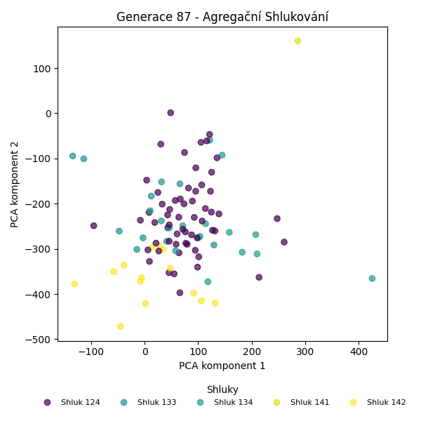
Stabilita mezi generací 86 → 87:
Shluk 139 → 133: 1 jedinců (33.3 %)
Shluk 139 → 134: 1 jedinců (33.3 %)
Shluk 139 → 124: 1 jedinců (33.3 %)
Shluk 133 → 133: 4 jedinců (44.4 %)
Shluk 133 → 124: 3 jedinců (33.3 %)
Shluk 133 → 134: 2 jedinců (22.2 %)
Shluk 134 → 134: 9 jedinců (52.9 %)
Shluk 134 → 133: 2 jedinců (11.8 %)
Shluk 134 → 124: 5 jedinců (29.4 %)
Shluk 134 → 142: 1 jedinců (5.9 %)
Shluk 124 → 134: 3 jedinců (4.7 %)
Shluk 124 → 124: 47 jedinců (73.4 %)
Shluk 124 → 142: 13 jedinců (20.3 %)
Shluk 124 → 133: 1 jedinců (1.6 %)
Shluk 140 → 133: 2 jedinců (33.3 %)
Shluk 140 → 124: 3 jedinců (50.0 %)
Shluk 140 → 134: 1 jedinců (16.7 %)
Shluk 141 → 141: 1 jedinců (100.0 %)
Jaccardovo mapování a overlap: Generace 86 → 87
- Shluk 139 → 133 (Jaccard: 0.08, Overlap: 0.33)
- Shluk 133 → 133 (Jaccard: 0.27, Overlap: 0.44)
- Shluk 134 → 134 (Jaccard: 0.38, Overlap: 0.56)
- Shluk 124 → 124 (Jaccard: 0.62, Overlap: 0.80)
- Shluk 140 → 133 (Jaccard: 0.14, Overlap: 0.33)
- Shluk 141 → 141 (Jaccard: 1.00, Overlap: 1.00)
Posun centroidů mezi generací 86 → 87:
- Shluk 0: 71.8340
- Shluk 1: 198.8173
- Shluk 2: 901.7517
- Shluk 3: 703.1238
- Shluk 4: 443.4210
Generace 88
Stabilita mezi generací 87 → 88:
Shluk 133 → 133: 4 jedinců (40.0 %)
Shluk 133 → 134: 1 jedinců (10.0 %)
Shluk 133 → 124: 5 jedinců (50.0 %)
Shluk 134 → 124: 7 jedinců (43.8 %)
Shluk 134 → 134: 7 jedinců (43.8 %)
Shluk 134 → 133: 2 jedinců (12.5 %)
Shluk 124 → 134: 20 jedinců (33.9 %)
Shluk 124 → 124: 38 jedinců (64.4 %)
Shluk 124 → 133: 1 jedinců (1.7 %)
Shluk 142 → 124: 7 jedinců (50.0 %)
Shluk 142 → 134: 5 jedinců (35.7 %)
Shluk 142 → 133: 2 jedinců (14.3 %)
Shluk 141 → 141: 1 jedinců (100.0 %)
Jaccardovo mapování a overlap: Generace 87 → 88
- Shluk 133 → 133 (Jaccard: 0.27, Overlap: 0.44)
- Shluk 134 → 134 (Jaccard: 0.17, Overlap: 0.44)
- Shluk 124 → 124 (Jaccard: 0.49, Overlap: 0.67)
- Shluk 142 → 134 (Jaccard: 0.12, Overlap: 0.36)
- Shluk 141 → 141 (Jaccard: 1.00, Overlap: 1.00)
Posun centroidů mezi generací 87 → 88:
- Shluk 0: 106.5362
- Shluk 1: 403.9809
- Shluk 2: 991.2037
- Shluk 3: 957.6092
Generace 89
Stabilita mezi generací 88 → 89:
Shluk 133 → 133: 4 jedinců (44.4 %)
Shluk 133 → 143: 3 jedinců (33.3 %)
Shluk 133 → 144: 2 jedinců (22.2 %)
Shluk 134 → 143: 5 jedinců (15.2 %)
Shluk 134 → 144: 11 jedinců (33.3 %)
Shluk 134 → 133: 3 jedinců (9.1 %)
Shluk 134 → 124: 14 jedinců (42.4 %)
Shluk 124 → 143: 17 jedinců (29.8 %)
Shluk 124 → 124: 23 jedinců (40.4 %)
Shluk 124 → 144: 13 jedinců (22.8 %)
Shluk 124 → 141: 3 jedinců (5.3 %)
Shluk 124 → 133: 1 jedinců (1.8 %)
Shluk 141 → 141: 1 jedinců (100.0 %)
Jaccardovo mapování a overlap: Generace 88 → 89
- Shluk 133 → 133 (Jaccard: 0.31, Overlap: 0.50)
- Shluk 134 → 124 (Jaccard: 0.25, Overlap: 0.42)
- Shluk 124 → 124 (Jaccard: 0.32, Overlap: 0.62)
- Shluk 141 → 141 (Jaccard: 0.25, Overlap: 1.00)
Posun centroidů mezi generací 88 → 89:
- Shluk 0: 168.6259
- Shluk 1: 48.0889
- Shluk 2: 417.8423
- Shluk 3: 1128.0240
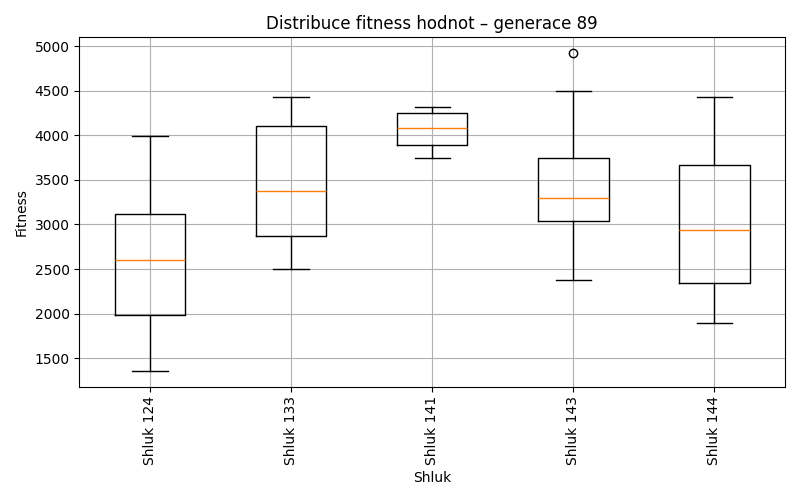
Generace 90
Stabilita mezi generací 89 → 90:
Shluk 133 → 133: 7 jedinců (87.5 %)
Shluk 133 → 145: 1 jedinců (12.5 %)
Shluk 143 → 133: 6 jedinců (24.0 %)
Shluk 143 → 145: 7 jedinců (28.0 %)
Shluk 143 → 143: 8 jedinců (32.0 %)
Shluk 143 → 124: 4 jedinců (16.0 %)
Shluk 144 → 143: 8 jedinců (30.8 %)
Shluk 144 → 145: 6 jedinců (23.1 %)
Shluk 144 → 133: 4 jedinců (15.4 %)
Shluk 144 → 124: 8 jedinců (30.8 %)
Shluk 124 → 145: 9 jedinců (24.3 %)
Shluk 124 → 133: 2 jedinců (5.4 %)
Shluk 124 → 143: 9 jedinců (24.3 %)
Shluk 124 → 124: 17 jedinců (45.9 %)
Shluk 141 → 145: 1 jedinců (25.0 %)
Shluk 141 → 141: 1 jedinců (25.0 %)
Shluk 141 → 143: 1 jedinců (25.0 %)
Shluk 141 → 124: 1 jedinců (25.0 %)
Jaccardovo mapování a overlap: Generace 89 → 90
- Shluk 133 → 133 (Jaccard: 0.35, Overlap: 0.88)
- Shluk 143 → 143 (Jaccard: 0.19, Overlap: 0.32)
- Shluk 144 → 143 (Jaccard: 0.18, Overlap: 0.31)
- Shluk 124 → 124 (Jaccard: 0.34, Overlap: 0.57)
- Shluk 141 → 141 (Jaccard: 0.25, Overlap: 1.00)
Posun centroidů mezi generací 89 → 90:
- Shluk 0: 163.6319
- Shluk 1: 293.6862
- Shluk 2: 235.0062
- Shluk 3: 945.9066
- Shluk 4: 317.6316
Generace 91
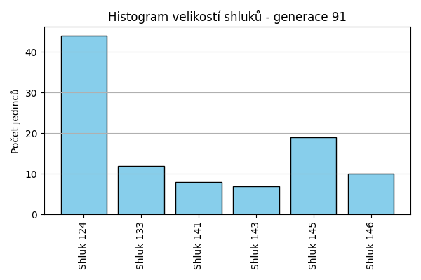
Stabilita mezi generací 90 → 91:
Shluk 133 → 146: 2 jedinců (10.5 %)
Shluk 133 → 145: 5 jedinců (26.3 %)
Shluk 133 → 133: 7 jedinců (36.8 %)
Shluk 133 → 141: 3 jedinců (15.8 %)
Shluk 133 → 143: 1 jedinců (5.3 %)
Shluk 133 → 124: 1 jedinců (5.3 %)
Shluk 143 → 141: 3 jedinců (11.5 %)
Shluk 143 → 143: 5 jedinců (19.2 %)
Shluk 143 → 124: 10 jedinců (38.5 %)
Shluk 143 → 133: 1 jedinců (3.8 %)
Shluk 143 → 146: 4 jedinců (15.4 %)
Shluk 143 → 145: 3 jedinců (11.5 %)
Shluk 145 → 146: 1 jedinců (4.2 %)
Shluk 145 → 145: 10 jedinců (41.7 %)
Shluk 145 → 141: 1 jedinců (4.2 %)
Shluk 145 → 133: 3 jedinců (12.5 %)
Shluk 145 → 124: 9 jedinců (37.5 %)
Shluk 124 → 124: 24 jedinců (80.0 %)
Shluk 124 → 146: 3 jedinců (10.0 %)
Shluk 124 → 143: 1 jedinců (3.3 %)
Shluk 124 → 133: 1 jedinců (3.3 %)
Shluk 124 → 145: 1 jedinců (3.3 %)
Shluk 141 → 141: 1 jedinců (100.0 %)
Jaccardovo mapování a overlap: Generace 90 → 91
- Shluk 133 → 133 (Jaccard: 0.29, Overlap: 0.58)
- Shluk 143 → 143 (Jaccard: 0.18, Overlap: 0.71)
- Shluk 145 → 145 (Jaccard: 0.30, Overlap: 0.53)
- Shluk 124 → 124 (Jaccard: 0.48, Overlap: 0.80)
- Shluk 141 → 141 (Jaccard: 0.12, Overlap: 1.00)
Posun centroidů mezi generací 90 → 91:
- Shluk 0: 210.5562
- Shluk 1: 296.3704
- Shluk 2: 322.6467
- Shluk 3: 882.6604
- Shluk 4: 305.9953
Generace 92
Stabilita mezi generací 91 → 92:
Shluk 146 → 124: 5 jedinců (50.0 %)
Shluk 146 → 141: 3 jedinců (30.0 %)
Shluk 146 → 133: 2 jedinců (20.0 %)
Shluk 145 → 141: 2 jedinců (10.5 %)
Shluk 145 → 133: 9 jedinců (47.4 %)
Shluk 145 → 124: 8 jedinců (42.1 %)
Shluk 141 → 141: 4 jedinců (50.0 %)
Shluk 141 → 124: 3 jedinců (37.5 %)
Shluk 141 → 147: 1 jedinců (12.5 %)
Shluk 133 → 141: 2 jedinců (16.7 %)
Shluk 133 → 133: 8 jedinců (66.7 %)
Shluk 133 → 124: 2 jedinců (16.7 %)
Shluk 143 → 124: 4 jedinců (57.1 %)
Shluk 143 → 133: 3 jedinců (42.9 %)
Shluk 124 → 133: 11 jedinců (25.0 %)
Shluk 124 → 124: 33 jedinců (75.0 %)
Jaccardovo mapování a overlap: Generace 91 → 92
- Shluk 146 → 141 (Jaccard: 0.17, Overlap: 0.30)
- Shluk 145 → 133 (Jaccard: 0.21, Overlap: 0.47)
- Shluk 141 → 141 (Jaccard: 0.27, Overlap: 0.50)
- Shluk 133 → 133 (Jaccard: 0.22, Overlap: 0.67)
- Shluk 143 → 133 (Jaccard: 0.08, Overlap: 0.43)
- Shluk 124 → 124 (Jaccard: 0.50, Overlap: 0.75)
Posun centroidů mezi generací 91 → 92:
- Shluk 0: 273.4510
- Shluk 1: 245.6841
- Shluk 2: 711.4720
- Shluk 3: 47.9814
Generace 93
Stabilita mezi generací 92 → 93:
Shluk 124 → 148: 5 jedinců (9.1 %)
Shluk 124 → 141: 11 jedinců (20.0 %)
Shluk 124 → 124: 32 jedinců (58.2 %)
Shluk 124 → 149: 7 jedinců (12.7 %)
Shluk 141 → 149: 3 jedinců (27.3 %)
Shluk 141 → 141: 4 jedinců (36.4 %)
Shluk 141 → 148: 3 jedinců (27.3 %)
Shluk 141 → 124: 1 jedinců (9.1 %)
Shluk 133 → 141: 7 jedinců (21.2 %)
Shluk 133 → 149: 7 jedinců (21.2 %)
Shluk 133 → 124: 12 jedinců (36.4 %)
Shluk 133 → 148: 7 jedinců (21.2 %)
Shluk 147 → 147: 1 jedinců (100.0 %)
Jaccardovo mapování a overlap: Generace 92 → 93
- Shluk 124 → 124 (Jaccard: 0.47, Overlap: 0.71)
- Shluk 141 → 141 (Jaccard: 0.14, Overlap: 0.36)
- Shluk 133 → 124 (Jaccard: 0.18, Overlap: 0.36)
- Shluk 147 → 147 (Jaccard: 1.00, Overlap: 1.00)
Posun centroidů mezi generací 92 → 93:
- Shluk 0: 255.1758
- Shluk 1: 179.7494
- Shluk 2: 957.9687
- Shluk 3: 244.2218
Generace 94

Stabilita mezi generací 93 → 94:
Shluk 148 → 124: 9 jedinců (60.0 %)
Shluk 148 → 149: 4 jedinců (26.7 %)
Shluk 148 → 148: 2 jedinců (13.3 %)
Shluk 149 → 149: 10 jedinců (58.8 %)
Shluk 149 → 124: 7 jedinců (41.2 %)
Shluk 141 → 124: 11 jedinců (50.0 %)
Shluk 141 → 149: 11 jedinců (50.0 %)
Shluk 124 → 124: 37 jedinců (82.2 %)
Shluk 124 → 149: 8 jedinců (17.8 %)
Shluk 147 → 147: 1 jedinců (100.0 %)
Jaccardovo mapování a overlap: Generace 93 → 94
- Shluk 148 → 148 (Jaccard: 0.13, Overlap: 1.00)
- Shluk 149 → 149 (Jaccard: 0.25, Overlap: 0.59)
- Shluk 141 → 149 (Jaccard: 0.25, Overlap: 0.50)
- Shluk 124 → 124 (Jaccard: 0.51, Overlap: 0.82)
- Shluk 147 → 147 (Jaccard: 1.00, Overlap: 1.00)
Posun centroidů mezi generací 93 → 94:
- Shluk 0: 168.6089
- Shluk 1: 192.4486
- Shluk 2: 567.4025
- Shluk 3: 938.9917
Generace 95
Stabilita mezi generací 94 → 95:
Shluk 124 → 150: 10 jedinců (15.6 %)
Shluk 124 → 149: 6 jedinců (9.4 %)
Shluk 124 → 152: 10 jedinců (15.6 %)
Shluk 124 → 124: 35 jedinců (54.7 %)
Shluk 124 → 147: 2 jedinců (3.1 %)
Shluk 124 → 151: 1 jedinců (1.6 %)
Shluk 149 → 124: 5 jedinců (15.2 %)
Shluk 149 → 151: 5 jedinců (15.2 %)
Shluk 149 → 149: 10 jedinců (30.3 %)
Shluk 149 → 150: 9 jedinců (27.3 %)
Shluk 149 → 152: 3 jedinců (9.1 %)
Shluk 149 → 147: 1 jedinců (3.0 %)
Shluk 148 → 147: 1 jedinců (50.0 %)
Shluk 148 → 124: 1 jedinců (50.0 %)
Shluk 147 → 147: 1 jedinců (100.0 %)
Jaccardovo mapování a overlap: Generace 94 → 95
- Shluk 124 → 124 (Jaccard: 0.50, Overlap: 0.85)
- Shluk 149 → 149 (Jaccard: 0.26, Overlap: 0.62)
- Shluk 148 → 147 (Jaccard: 0.17, Overlap: 0.50)
- Shluk 147 → 147 (Jaccard: 0.20, Overlap: 1.00)
Posun centroidů mezi generací 94 → 95:
- Shluk 0: 64.2505
- Shluk 1: 85.3463
- Shluk 2: 593.3774
- Shluk 3: 569.4202
Generace 96
Stabilita mezi generací 95 → 96:
Shluk 150 → 149: 6 jedinců (31.6 %)
Shluk 150 → 124: 11 jedinců (57.9 %)
Shluk 150 → 151: 2 jedinců (10.5 %)
Shluk 124 → 149: 6 jedinců (14.6 %)
Shluk 124 → 124: 33 jedinců (80.5 %)
Shluk 124 → 151: 2 jedinců (4.9 %)
Shluk 149 → 149: 8 jedinců (50.0 %)
Shluk 149 → 124: 4 jedinců (25.0 %)
Shluk 149 → 151: 4 jedinců (25.0 %)
Shluk 151 → 151: 2 jedinců (33.3 %)
Shluk 151 → 124: 2 jedinců (33.3 %)
Shluk 151 → 149: 2 jedinců (33.3 %)
Shluk 152 → 151: 2 jedinců (15.4 %)
Shluk 152 → 124: 6 jedinců (46.2 %)
Shluk 152 → 149: 5 jedinců (38.5 %)
Shluk 147 → 147: 2 jedinců (40.0 %)
Shluk 147 → 151: 2 jedinců (40.0 %)
Shluk 147 → 124: 1 jedinců (20.0 %)
Jaccardovo mapování a overlap: Generace 95 → 96
- Shluk 150 → 124 (Jaccard: 0.17, Overlap: 0.58)
- Shluk 124 → 124 (Jaccard: 0.51, Overlap: 0.80)
- Shluk 149 → 149 (Jaccard: 0.23, Overlap: 0.50)
- Shluk 151 → 151 (Jaccard: 0.11, Overlap: 0.33)
- Shluk 152 → 149 (Jaccard: 0.14, Overlap: 0.38)
- Shluk 147 → 147 (Jaccard: 0.40, Overlap: 1.00)
Posun centroidů mezi generací 95 → 96:
- Shluk 0: 282.7608
- Shluk 1: 256.6782
- Shluk 2: 617.1646
- Shluk 3: 296.0701
Generace 97
Stabilita mezi generací 96 → 97:
Shluk 149 → 124: 9 jedinců (33.3 %)
Shluk 149 → 149: 18 jedinců (66.7 %)
Shluk 124 → 124: 50 jedinců (87.7 %)
Shluk 124 → 149: 7 jedinců (12.3 %)
Shluk 151 → 149: 5 jedinců (35.7 %)
Shluk 151 → 124: 9 jedinců (64.3 %)
Shluk 147 → 124: 1 jedinců (50.0 %)
Shluk 147 → 147: 1 jedinců (50.0 %)
Jaccardovo mapování a overlap: Generace 96 → 97
- Shluk 149 → 149 (Jaccard: 0.46, Overlap: 0.67)
- Shluk 124 → 124 (Jaccard: 0.66, Overlap: 0.88)
- Shluk 151 → 149 (Jaccard: 0.13, Overlap: 0.36)
- Shluk 147 → 147 (Jaccard: 0.50, Overlap: 1.00)
Posun centroidů mezi generací 96 → 97:
- Shluk 0: 249.8310
- Shluk 1: 228.5811
- Shluk 2: 586.5476
Generace 98
Stabilita mezi generací 97 → 98:
Shluk 124 → 153: 15 jedinců (21.7 %)
Shluk 124 → 124: 48 jedinců (69.6 %)
Shluk 124 → 149: 6 jedinců (8.7 %)
Shluk 149 → 149: 13 jedinců (43.3 %)
Shluk 149 → 153: 10 jedinců (33.3 %)
Shluk 149 → 124: 7 jedinců (23.3 %)
Shluk 147 → 147: 1 jedinců (100.0 %)
Jaccardovo mapování a overlap: Generace 97 → 98
- Shluk 124 → 124 (Jaccard: 0.63, Overlap: 0.87)
- Shluk 149 → 149 (Jaccard: 0.36, Overlap: 0.68)
- Shluk 147 → 147 (Jaccard: 1.00, Overlap: 1.00)
Posun centroidů mezi generací 97 → 98:
- Shluk 0: 184.1889
- Shluk 1: 237.7002
- Shluk 2: 1064.2507
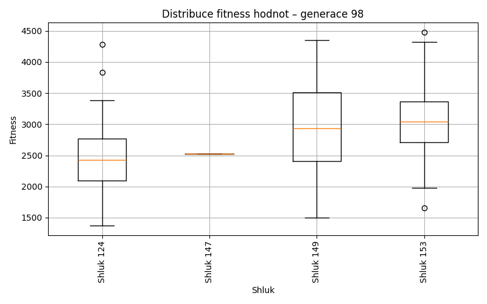
Generace 99

Stabilita mezi generací 98 → 99:
Shluk 153 → 124: 17 jedinců (68.0 %)
Shluk 153 → 149: 8 jedinců (32.0 %)
Shluk 149 → 149: 11 jedinců (57.9 %)
Shluk 149 → 124: 8 jedinců (42.1 %)
Shluk 124 → 124: 45 jedinců (81.8 %)
Shluk 124 → 149: 10 jedinců (18.2 %)
Shluk 147 → 147: 1 jedinců (100.0 %)
Jaccardovo mapování a overlap: Generace 98 → 99
- Shluk 153 → 124 (Jaccard: 0.22, Overlap: 0.68)
- Shluk 149 → 149 (Jaccard: 0.30, Overlap: 0.58)
- Shluk 124 → 124 (Jaccard: 0.56, Overlap: 0.82)
- Shluk 147 → 147 (Jaccard: 1.00, Overlap: 1.00)
Posun centroidů mezi generací 98 → 99:
- Shluk 0: 169.1077
- Shluk 1: 235.1094
- Shluk 2: 983.8121
Generace 100
Stabilita mezi generací 99 → 100:
Shluk 124 → 154: 13 jedinců (18.6 %)
Shluk 124 → 155: 5 jedinců (7.1 %)
Shluk 124 → 124: 48 jedinců (68.6 %)
Shluk 124 → 147: 1 jedinců (1.4 %)
Shluk 124 → 149: 3 jedinců (4.3 %)
Shluk 149 → 149: 14 jedinců (48.3 %)
Shluk 149 → 154: 10 jedinců (34.5 %)
Shluk 149 → 155: 3 jedinců (10.3 %)
Shluk 149 → 124: 2 jedinců (6.9 %)
Shluk 147 → 147: 1 jedinců (100.0 %)
Jaccardovo mapování a overlap: Generace 99 → 100
- Shluk 124 → 124 (Jaccard: 0.67, Overlap: 0.96)
- Shluk 149 → 149 (Jaccard: 0.44, Overlap: 0.82)
- Shluk 147 → 147 (Jaccard: 0.50, Overlap: 1.00)
Posun centroidů mezi generací 99 → 100:
- Shluk 0: 269.1447
- Shluk 1: 139.5938
- Shluk 2: 547.9573
Generace 101
Stabilita mezi generací 100 → 101:
Shluk 154 → 154: 9 jedinců (39.1 %)
Shluk 154 → 156: 3 jedinců (13.0 %)
Shluk 154 → 124: 11 jedinců (47.8 %)
Shluk 149 → 124: 5 jedinců (29.4 %)
Shluk 149 → 156: 3 jedinců (17.6 %)
Shluk 149 → 154: 7 jedinců (41.2 %)
Shluk 149 → 155: 2 jedinců (11.8 %)
Shluk 155 → 154: 4 jedinců (50.0 %)
Shluk 155 → 155: 2 jedinců (25.0 %)
Shluk 155 → 124: 2 jedinců (25.0 %)
Shluk 124 → 154: 9 jedinců (18.0 %)
Shluk 124 → 124: 41 jedinců (82.0 %)
Shluk 147 → 154: 1 jedinců (50.0 %)
Shluk 147 → 147: 1 jedinců (50.0 %)
Jaccardovo mapování a overlap: Generace 100 → 101
- Shluk 154 → 154 (Jaccard: 0.20, Overlap: 0.39)
- Shluk 149 → 154 (Jaccard: 0.17, Overlap: 0.41)
- Shluk 155 → 155 (Jaccard: 0.20, Overlap: 0.50)
- Shluk 124 → 124 (Jaccard: 0.60, Overlap: 0.82)
- Shluk 147 → 147 (Jaccard: 0.50, Overlap: 1.00)
Posun centroidů mezi generací 100 → 101:
- Shluk 0: 247.2988
- Shluk 1: 146.6263
- Shluk 2: 667.5970
- Shluk 3: 330.5132
- Shluk 4: 581.8610
Generace 102
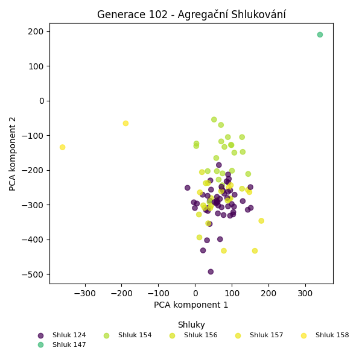
Stabilita mezi generací 101 → 102:
Shluk 154 → 154: 13 jedinců (43.3 %)
Shluk 154 → 156: 5 jedinců (16.7 %)
Shluk 154 → 157: 5 jedinců (16.7 %)
Shluk 154 → 158: 2 jedinců (6.7 %)
Shluk 154 → 124: 5 jedinců (16.7 %)
Shluk 124 → 156: 6 jedinců (10.2 %)
Shluk 124 → 124: 45 jedinců (76.3 %)
Shluk 124 → 154: 5 jedinců (8.5 %)
Shluk 124 → 157: 3 jedinců (5.1 %)
Shluk 156 → 156: 6 jedinců (100.0 %)
Shluk 155 → 154: 3 jedinců (75.0 %)
Shluk 155 → 124: 1 jedinců (25.0 %)
Shluk 147 → 147: 1 jedinců (100.0 %)
Jaccardovo mapování a overlap: Generace 101 → 102
- Shluk 154 → 154 (Jaccard: 0.34, Overlap: 0.62)
- Shluk 124 → 124 (Jaccard: 0.69, Overlap: 0.88)
- Shluk 156 → 156 (Jaccard: 0.35, Overlap: 1.00)
- Shluk 155 → 154 (Jaccard: 0.14, Overlap: 0.75)
- Shluk 147 → 147 (Jaccard: 1.00, Overlap: 1.00)
Posun centroidů mezi generací 101 → 102:
- Shluk 0: 85.0604
- Shluk 1: 38.2608
- Shluk 2: 401.9117
- Shluk 3: 619.2722
- Shluk 4: 700.7607
Generace 103
Stabilita mezi generací 102 → 103:
Shluk 154 → 124: 9 jedinců (42.9 %)
Shluk 154 → 154: 12 jedinců (57.1 %)
Shluk 156 → 154: 10 jedinců (58.8 %)
Shluk 156 → 124: 7 jedinců (41.2 %)
Shluk 157 → 124: 1 jedinců (12.5 %)
Shluk 157 → 154: 7 jedinců (87.5 %)
Shluk 124 → 154: 6 jedinců (11.8 %)
Shluk 124 → 124: 45 jedinců (88.2 %)
Shluk 158 → 124: 2 jedinců (100.0 %)
Shluk 147 → 147: 1 jedinců (100.0 %)
Jaccardovo mapování a overlap: Generace 102 → 103
- Shluk 154 → 154 (Jaccard: 0.27, Overlap: 0.57)
- Shluk 156 → 154 (Jaccard: 0.24, Overlap: 0.59)
- Shluk 157 → 154 (Jaccard: 0.19, Overlap: 0.88)
- Shluk 124 → 124 (Jaccard: 0.64, Overlap: 0.88)
- Shluk 158 → 124 (Jaccard: 0.03, Overlap: 1.00)
- Shluk 147 → 147 (Jaccard: 1.00, Overlap: 1.00)
Posun centroidů mezi generací 102 → 103:
- Shluk 0: 167.8516
- Shluk 1: 51.4417
- Shluk 2: 925.2010
Generace 104
Stabilita mezi generací 103 → 104:
Shluk 124 → 124: 54 jedinců (84.4 %)
Shluk 124 → 159: 9 jedinců (14.1 %)
Shluk 124 → 154: 1 jedinců (1.6 %)
Shluk 154 → 159: 11 jedinců (31.4 %)
Shluk 154 → 154: 14 jedinců (40.0 %)
Shluk 154 → 124: 10 jedinců (28.6 %)
Shluk 147 → 147: 1 jedinců (100.0 %)
Jaccardovo mapování a overlap: Generace 103 → 104
- Shluk 124 → 124 (Jaccard: 0.73, Overlap: 0.84)
- Shluk 154 → 154 (Jaccard: 0.39, Overlap: 0.93)
- Shluk 147 → 147 (Jaccard: 1.00, Overlap: 1.00)
Posun centroidů mezi generací 103 → 104:
- Shluk 0: 153.6502
- Shluk 1: 338.0543
- Shluk 2: 915.7033
Generace 105
Stabilita mezi generací 104 → 105:
Shluk 124 → 124: 48 jedinců (75.0 %)
Shluk 124 → 160: 11 jedinců (17.2 %)
Shluk 124 → 159: 4 jedinců (6.2 %)
Shluk 124 → 147: 1 jedinců (1.6 %)
Shluk 159 → 159: 5 jedinců (25.0 %)
Shluk 159 → 154: 2 jedinců (10.0 %)
Shluk 159 → 160: 5 jedinců (25.0 %)
Shluk 159 → 147: 2 jedinců (10.0 %)
Shluk 159 → 124: 6 jedinců (30.0 %)
Shluk 154 → 160: 2 jedinců (13.3 %)
Shluk 154 → 124: 3 jedinců (20.0 %)
Shluk 154 → 159: 5 jedinců (33.3 %)
Shluk 154 → 154: 5 jedinců (33.3 %)
Shluk 147 → 147: 1 jedinců (100.0 %)
Jaccardovo mapování a overlap: Generace 104 → 105
- Shluk 124 → 124 (Jaccard: 0.66, Overlap: 0.84)
- Shluk 159 → 159 (Jaccard: 0.17, Overlap: 0.36)
- Shluk 154 → 154 (Jaccard: 0.29, Overlap: 0.71)
- Shluk 147 → 147 (Jaccard: 0.25, Overlap: 1.00)
Posun centroidů mezi generací 104 → 105:
- Shluk 0: 290.2044
- Shluk 1: 226.5961
- Shluk 2: 47.6516
- Shluk 3: 799.2283
Generace 106
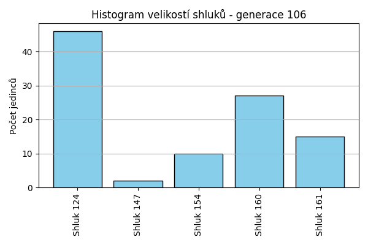
Stabilita mezi generací 105 → 106:
Shluk 124 → 161: 12 jedinců (21.1 %)
Shluk 124 → 124: 38 jedinců (66.7 %)
Shluk 124 → 160: 4 jedinců (7.0 %)
Shluk 124 → 154: 3 jedinců (5.3 %)
Shluk 159 → 160: 9 jedinců (64.3 %)
Shluk 159 → 124: 1 jedinců (7.1 %)
Shluk 159 → 154: 3 jedinců (21.4 %)
Shluk 159 → 161: 1 jedinců (7.1 %)
Shluk 160 → 160: 11 jedinců (61.1 %)
Shluk 160 → 161: 1 jedinců (5.6 %)
Shluk 160 → 124: 6 jedinců (33.3 %)
Shluk 154 → 154: 4 jedinců (57.1 %)
Shluk 154 → 160: 2 jedinců (28.6 %)
Shluk 154 → 124: 1 jedinců (14.3 %)
Shluk 147 → 147: 2 jedinců (50.0 %)
Shluk 147 → 160: 1 jedinců (25.0 %)
Shluk 147 → 161: 1 jedinců (25.0 %)
Jaccardovo mapování a overlap: Generace 105 → 106
- Shluk 124 → 124 (Jaccard: 0.58, Overlap: 0.83)
- Shluk 159 → 160 (Jaccard: 0.28, Overlap: 0.64)
- Shluk 160 → 160 (Jaccard: 0.32, Overlap: 0.61)
- Shluk 154 → 154 (Jaccard: 0.31, Overlap: 0.57)
- Shluk 147 → 147 (Jaccard: 0.50, Overlap: 1.00)
Posun centroidů mezi generací 105 → 106:
- Shluk 0: 260.2664
- Shluk 1: 173.5257
- Shluk 2: 144.4736
- Shluk 3: 159.9387
- Shluk 4: 199.1773
Generace 107
Stabilita mezi generací 106 → 107:
Shluk 161 → 124: 9 jedinců (60.0 %)
Shluk 161 → 154: 3 jedinců (20.0 %)
Shluk 161 → 160: 3 jedinců (20.0 %)
Shluk 160 → 160: 15 jedinců (55.6 %)
Shluk 160 → 154: 4 jedinců (14.8 %)
Shluk 160 → 124: 8 jedinců (29.6 %)
Shluk 154 → 154: 5 jedinců (50.0 %)
Shluk 154 → 160: 1 jedinců (10.0 %)
Shluk 154 → 124: 4 jedinců (40.0 %)
Shluk 124 → 154: 5 jedinců (10.9 %)
Shluk 124 → 124: 34 jedinců (73.9 %)
Shluk 124 → 160: 7 jedinců (15.2 %)
Shluk 147 → 124: 1 jedinců (50.0 %)
Shluk 147 → 147: 1 jedinců (50.0 %)
Jaccardovo mapování a overlap: Generace 106 → 107
- Shluk 161 → 124 (Jaccard: 0.15, Overlap: 0.60)
- Shluk 160 → 160 (Jaccard: 0.39, Overlap: 0.58)
- Shluk 154 → 154 (Jaccard: 0.23, Overlap: 0.50)
- Shluk 124 → 124 (Jaccard: 0.50, Overlap: 0.74)
- Shluk 147 → 147 (Jaccard: 0.50, Overlap: 1.00)
Posun centroidů mezi generací 106 → 107:
- Shluk 0: 557.6685
- Shluk 1: 163.1815
- Shluk 2: 191.5590
- Shluk 3: 659.1059
Generace 108
Stabilita mezi generací 107 → 108:
Shluk 124 → 124: 36 jedinců (64.3 %)
Shluk 124 → 162: 3 jedinců (5.4 %)
Shluk 124 → 163: 11 jedinců (19.6 %)
Shluk 124 → 160: 5 jedinců (8.9 %)
Shluk 124 → 154: 1 jedinců (1.8 %)
Shluk 160 → 160: 7 jedinců (26.9 %)
Shluk 160 → 124: 9 jedinců (34.6 %)
Shluk 160 → 163: 6 jedinců (23.1 %)
Shluk 160 → 154: 4 jedinců (15.4 %)
Shluk 154 → 160: 3 jedinců (17.6 %)
Shluk 154 → 154: 4 jedinců (23.5 %)
Shluk 154 → 162: 2 jedinců (11.8 %)
Shluk 154 → 124: 3 jedinců (17.6 %)
Shluk 154 → 163: 4 jedinců (23.5 %)
Shluk 154 → 147: 1 jedinců (5.9 %)
Shluk 147 → 147: 1 jedinců (100.0 %)
Jaccardovo mapování a overlap: Generace 107 → 108
- Shluk 124 → 124 (Jaccard: 0.53, Overlap: 0.75)
- Shluk 160 → 160 (Jaccard: 0.21, Overlap: 0.47)
- Shluk 154 → 154 (Jaccard: 0.18, Overlap: 0.44)
- Shluk 147 → 147 (Jaccard: 0.50, Overlap: 1.00)
Posun centroidů mezi generací 107 → 108:
- Shluk 0: 303.0600
- Shluk 1: 178.7890
- Shluk 2: 223.1557
- Shluk 3: 403.8966
Generace 109
Stabilita mezi generací 108 → 109:
Shluk 124 → 160: 4 jedinců (8.3 %)
Shluk 124 → 165: 6 jedinců (12.5 %)
Shluk 124 → 124: 38 jedinců (79.2 %)
Shluk 160 → 160: 8 jedinců (53.3 %)
Shluk 160 → 164: 2 jedinců (13.3 %)
Shluk 160 → 165: 1 jedinců (6.7 %)
Shluk 160 → 124: 4 jedinců (26.7 %)
Shluk 154 → 160: 5 jedinců (55.6 %)
Shluk 154 → 124: 1 jedinců (11.1 %)
Shluk 154 → 165: 3 jedinců (33.3 %)
Shluk 162 → 124: 1 jedinců (20.0 %)
Shluk 162 → 165: 1 jedinců (20.0 %)
Shluk 162 → 164: 1 jedinců (20.0 %)
Shluk 162 → 160: 1 jedinců (20.0 %)
Shluk 162 → 147: 1 jedinců (20.0 %)
Shluk 163 → 124: 15 jedinců (71.4 %)
Shluk 163 → 165: 6 jedinců (28.6 %)
Shluk 147 → 147: 1 jedinců (50.0 %)
Shluk 147 → 124: 1 jedinců (50.0 %)
Jaccardovo mapování a overlap: Generace 108 → 109
- Shluk 124 → 124 (Jaccard: 0.54, Overlap: 0.79)
- Shluk 160 → 160 (Jaccard: 0.32, Overlap: 0.53)
- Shluk 154 → 160 (Jaccard: 0.23, Overlap: 0.56)
- Shluk 162 → 147 (Jaccard: 0.17, Overlap: 0.50)
- Shluk 163 → 124 (Jaccard: 0.23, Overlap: 0.71)
- Shluk 147 → 147 (Jaccard: 0.33, Overlap: 0.50)
Posun centroidů mezi generací 108 → 109:
- Shluk 0: 258.9973
- Shluk 1: 243.8070
- Shluk 2: 80.9608
- Shluk 3: 606.0525
- Shluk 4: 379.1112
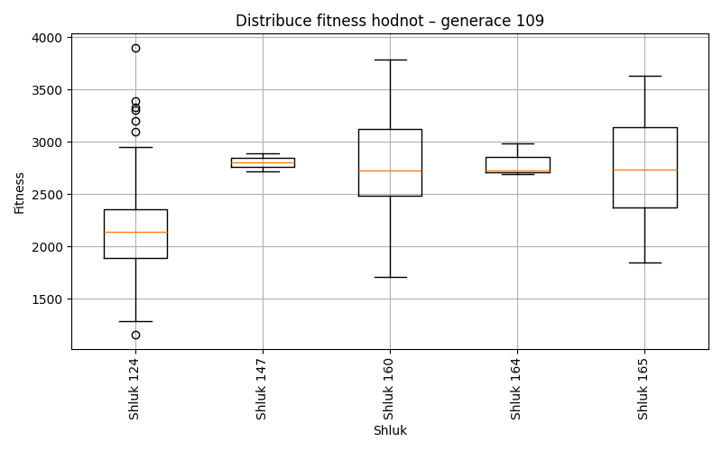
Generace 110
Stabilita mezi generací 109 → 110:
Shluk 160 → 147: 2 jedinců (11.1 %)
Shluk 160 → 124: 5 jedinců (27.8 %)
Shluk 160 → 160: 7 jedinců (38.9 %)
Shluk 160 → 164: 3 jedinců (16.7 %)
Shluk 160 → 166: 1 jedinců (5.6 %)
Shluk 164 → 160: 2 jedinců (66.7 %)
Shluk 164 → 164: 1 jedinců (33.3 %)
Shluk 124 → 166: 6 jedinců (10.0 %)
Shluk 124 → 124: 44 jedinců (73.3 %)
Shluk 124 → 164: 2 jedinců (3.3 %)
Shluk 124 → 160: 7 jedinců (11.7 %)
Shluk 124 → 147: 1 jedinců (1.7 %)
Shluk 165 → 164: 3 jedinců (17.6 %)
Shluk 165 → 124: 5 jedinců (29.4 %)
Shluk 165 → 166: 2 jedinců (11.8 %)
Shluk 165 → 160: 6 jedinců (35.3 %)
Shluk 165 → 147: 1 jedinců (5.9 %)
Shluk 147 → 147: 1 jedinců (50.0 %)
Shluk 147 → 124: 1 jedinců (50.0 %)
Jaccardovo mapování a overlap: Generace 109 → 110
- Shluk 160 → 160 (Jaccard: 0.21, Overlap: 0.39)
- Shluk 164 → 164 (Jaccard: 0.09, Overlap: 0.33)
- Shluk 124 → 124 (Jaccard: 0.62, Overlap: 0.80)
- Shluk 165 → 160 (Jaccard: 0.18, Overlap: 0.35)
- Shluk 147 → 147 (Jaccard: 0.17, Overlap: 0.50)
Posun centroidů mezi generací 109 → 110:
- Shluk 0: 72.5627
- Shluk 1: 213.9585
- Shluk 2: 24.3497
- Shluk 3: 439.7196
- Shluk 4: 437.8009
Generace 111
Stabilita mezi generací 110 → 111:
Shluk 147 → 124: 1 jedinců (20.0 %)
Shluk 147 → 147: 2 jedinců (40.0 %)
Shluk 147 → 167: 1 jedinců (20.0 %)
Shluk 147 → 164: 1 jedinců (20.0 %)
Shluk 124 → 164: 2 jedinců (3.6 %)
Shluk 124 → 124: 51 jedinců (92.7 %)
Shluk 124 → 167: 1 jedinců (1.8 %)
Shluk 124 → 147: 1 jedinců (1.8 %)
Shluk 160 → 164: 7 jedinců (31.8 %)
Shluk 160 → 124: 15 jedinců (68.2 %)
Shluk 166 → 164: 2 jedinců (22.2 %)
Shluk 166 → 124: 6 jedinců (66.7 %)
Shluk 166 → 147: 1 jedinců (11.1 %)
Shluk 164 → 164: 5 jedinců (55.6 %)
Shluk 164 → 147: 3 jedinců (33.3 %)
Shluk 164 → 124: 1 jedinců (11.1 %)
Jaccardovo mapování a overlap: Generace 110 → 111
- Shluk 147 → 147 (Jaccard: 0.20, Overlap: 0.40)
- Shluk 124 → 124 (Jaccard: 0.65, Overlap: 0.93)
- Shluk 160 → 164 (Jaccard: 0.22, Overlap: 0.41)
- Shluk 166 → 164 (Jaccard: 0.08, Overlap: 0.22)
- Shluk 164 → 164 (Jaccard: 0.24, Overlap: 0.56)
Posun centroidů mezi generací 110 → 111:
- Shluk 0: 218.1439
- Shluk 1: 293.6029
- Shluk 2: 475.6875
- Shluk 3: 311.4848
Generace 112
Stabilita mezi generací 111 → 112:
Shluk 124 → 124: 49 jedinců (66.2 %)
Shluk 124 → 164: 25 jedinců (33.8 %)
Shluk 164 → 164: 16 jedinců (94.1 %)
Shluk 164 → 124: 1 jedinců (5.9 %)
Shluk 147 → 164: 3 jedinců (42.9 %)
Shluk 147 → 124: 4 jedinců (57.1 %)
Shluk 167 → 124: 1 jedinců (50.0 %)
Shluk 167 → 167: 1 jedinců (50.0 %)
Jaccardovo mapování a overlap: Generace 111 → 112
- Shluk 124 → 124 (Jaccard: 0.61, Overlap: 0.89)
- Shluk 164 → 164 (Jaccard: 0.36, Overlap: 0.94)
- Shluk 147 → 124 (Jaccard: 0.07, Overlap: 0.57)
- Shluk 167 → 167 (Jaccard: 0.50, Overlap: 1.00)
Posun centroidů mezi generací 111 → 112:
- Shluk 0: 144.1499
- Shluk 1: 274.1498
- Shluk 2: 374.7555
Generace 113

Stabilita mezi generací 112 → 113:
Shluk 124 → 124: 44 jedinců (80.0 %)
Shluk 124 → 164: 11 jedinců (20.0 %)
Shluk 164 → 164: 20 jedinců (45.5 %)
Shluk 164 → 124: 24 jedinců (54.5 %)
Shluk 167 → 167: 1 jedinců (100.0 %)
Jaccardovo mapování a overlap: Generace 112 → 113
- Shluk 124 → 124 (Jaccard: 0.56, Overlap: 0.80)
- Shluk 164 → 164 (Jaccard: 0.36, Overlap: 0.65)
- Shluk 167 → 167 (Jaccard: 1.00, Overlap: 1.00)
Posun centroidů mezi generací 112 → 113:
- Shluk 0: 75.0593
- Shluk 1: 31.9637
- Shluk 2: 314.1699
Generace 114
Stabilita mezi generací 113 → 114:
Shluk 124 → 124: 60 jedinců (88.2 %)
Shluk 124 → 167: 8 jedinců (11.8 %)
Shluk 164 → 167: 10 jedinců (32.3 %)
Shluk 164 → 164: 8 jedinců (25.8 %)
Shluk 164 → 124: 13 jedinců (41.9 %)
Shluk 167 → 167: 1 jedinců (100.0 %)
Jaccardovo mapování a overlap: Generace 113 → 114
- Shluk 124 → 124 (Jaccard: 0.74, Overlap: 0.88)
- Shluk 164 → 164 (Jaccard: 0.26, Overlap: 1.00)
- Shluk 167 → 167 (Jaccard: 0.05, Overlap: 1.00)
Posun centroidů mezi generací 113 → 114:
- Shluk 0: 140.0549
- Shluk 1: 43.3945
- Shluk 2: 833.8084
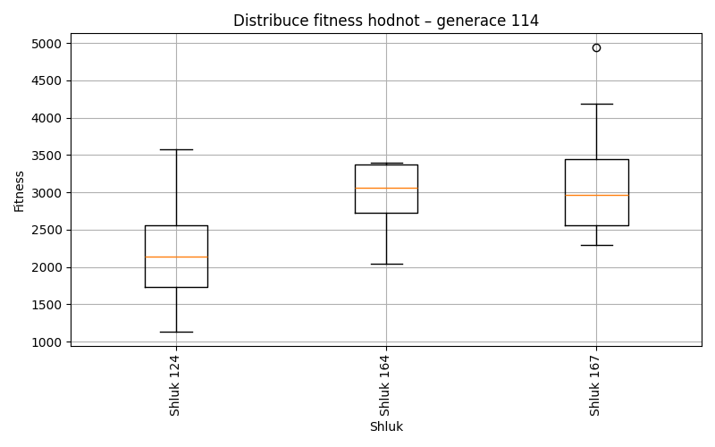
Generace 115
Stabilita mezi generací 114 → 115:
Shluk 124 → 124: 49 jedinců (67.1 %)
Shluk 124 → 167: 6 jedinců (8.2 %)
Shluk 124 → 168: 18 jedinců (24.7 %)
Shluk 167 → 164: 2 jedinců (10.5 %)
Shluk 167 → 124: 4 jedinců (21.1 %)
Shluk 167 → 167: 11 jedinců (57.9 %)
Shluk 167 → 169: 1 jedinců (5.3 %)
Shluk 167 → 168: 1 jedinců (5.3 %)
Shluk 164 → 164: 4 jedinců (50.0 %)
Shluk 164 → 167: 1 jedinců (12.5 %)
Shluk 164 → 168: 3 jedinců (37.5 %)
Jaccardovo mapování a overlap: Generace 114 → 115
- Shluk 124 → 124 (Jaccard: 0.64, Overlap: 0.92)
- Shluk 167 → 167 (Jaccard: 0.42, Overlap: 0.61)
- Shluk 164 → 164 (Jaccard: 0.40, Overlap: 0.67)
Posun centroidů mezi generací 114 → 115:
- Shluk 0: 79.5121
- Shluk 1: 27.3072
- Shluk 2: 141.6879
Generace 116
Stabilita mezi generací 115 → 116:
Shluk 124 → 170: 4 jedinců (7.5 %)
Shluk 124 → 168: 2 jedinců (3.8 %)
Shluk 124 → 124: 47 jedinců (88.7 %)
Shluk 164 → 164: 3 jedinců (50.0 %)
Shluk 164 → 168: 3 jedinců (50.0 %)
Shluk 167 → 170: 5 jedinců (27.8 %)
Shluk 167 → 124: 3 jedinců (16.7 %)
Shluk 167 → 168: 6 jedinců (33.3 %)
Shluk 167 → 164: 4 jedinců (22.2 %)
Shluk 168 → 170: 5 jedinců (22.7 %)
Shluk 168 → 168: 8 jedinců (36.4 %)
Shluk 168 → 124: 9 jedinců (40.9 %)
Shluk 169 → 169: 1 jedinců (100.0 %)
Jaccardovo mapování a overlap: Generace 115 → 116
- Shluk 124 → 124 (Jaccard: 0.72, Overlap: 0.89)
- Shluk 164 → 164 (Jaccard: 0.30, Overlap: 0.50)
- Shluk 167 → 168 (Jaccard: 0.19, Overlap: 0.33)
- Shluk 168 → 168 (Jaccard: 0.24, Overlap: 0.42)
- Shluk 169 → 169 (Jaccard: 1.00, Overlap: 1.00)
Posun centroidů mezi generací 115 → 116:
- Shluk 0: 170.1498
- Shluk 1: 441.2381
- Shluk 2: 219.4965
- Shluk 3: 284.9047
- Shluk 4: 136.6187
Generace 117
Stabilita mezi generací 116 → 117:
Shluk 170 → 124: 11 jedinců (78.6 %)
Shluk 170 → 170: 3 jedinců (21.4 %)
Shluk 164 → 169: 2 jedinců (28.6 %)
Shluk 164 → 170: 2 jedinců (28.6 %)
Shluk 164 → 124: 2 jedinců (28.6 %)
Shluk 164 → 171: 1 jedinců (14.3 %)
Shluk 168 → 124: 12 jedinců (63.2 %)
Shluk 168 → 169: 3 jedinců (15.8 %)
Shluk 168 → 171: 2 jedinců (10.5 %)
Shluk 168 → 170: 2 jedinců (10.5 %)
Shluk 124 → 169: 3 jedinců (5.1 %)
Shluk 124 → 124: 55 jedinců (93.2 %)
Shluk 124 → 170: 1 jedinců (1.7 %)
Shluk 169 → 169: 1 jedinců (100.0 %)
Jaccardovo mapování a overlap: Generace 116 → 117
- Shluk 170 → 170 (Jaccard: 0.16, Overlap: 0.38)
- Shluk 164 → 170 (Jaccard: 0.15, Overlap: 0.29)
- Shluk 168 → 124 (Jaccard: 0.14, Overlap: 0.63)
- Shluk 124 → 124 (Jaccard: 0.65, Overlap: 0.93)
- Shluk 169 → 169 (Jaccard: 0.11, Overlap: 1.00)
Posun centroidů mezi generací 116 → 117:
- Shluk 0: 30.5553
- Shluk 1: 249.9343
- Shluk 2: 261.6466
- Shluk 3: 753.2152
Generace 118
Stabilita mezi generací 117 → 118:
Shluk 124 → 170: 7 jedinců (8.8 %)
Shluk 124 → 172: 2 jedinců (2.5 %)
Shluk 124 → 124: 49 jedinců (61.3 %)
Shluk 124 → 174: 15 jedinců (18.8 %)
Shluk 124 → 171: 1 jedinců (1.2 %)
Shluk 124 → 169: 3 jedinců (3.8 %)
Shluk 124 → 173: 3 jedinců (3.8 %)
Shluk 169 → 124: 3 jedinců (33.3 %)
Shluk 169 → 169: 2 jedinců (22.2 %)
Shluk 169 → 171: 2 jedinců (22.2 %)
Shluk 169 → 172: 1 jedinců (11.1 %)
Shluk 169 → 170: 1 jedinců (11.1 %)
Shluk 170 → 170: 3 jedinců (37.5 %)
Shluk 170 → 171: 1 jedinců (12.5 %)
Shluk 170 → 173: 2 jedinců (25.0 %)
Shluk 170 → 124: 1 jedinců (12.5 %)
Shluk 170 → 169: 1 jedinců (12.5 %)
Shluk 171 → 173: 1 jedinců (33.3 %)
Shluk 171 → 171: 2 jedinců (66.7 %)
Jaccardovo mapování a overlap: Generace 117 → 118
- Shluk 124 → 124 (Jaccard: 0.58, Overlap: 0.92)
- Shluk 169 → 169 (Jaccard: 0.15, Overlap: 0.33)
- Shluk 170 → 170 (Jaccard: 0.19, Overlap: 0.38)
- Shluk 171 → 171 (Jaccard: 0.29, Overlap: 0.67)
Posun centroidů mezi generací 117 → 118:
- Shluk 0: 167.6912
- Shluk 1: 392.0385
- Shluk 2: 275.5704
- Shluk 3: 480.7548
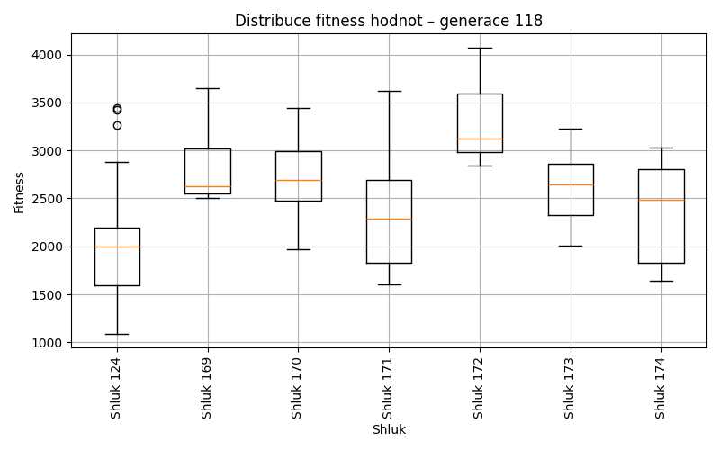
Generace 119
Stabilita mezi generací 118 → 119:
Shluk 170 → 170: 7 jedinců (63.6 %)
Shluk 170 → 124: 4 jedinců (36.4 %)
Shluk 124 → 170: 15 jedinců (28.3 %)
Shluk 124 → 124: 38 jedinců (71.7 %)
Shluk 172 → 172: 2 jedinců (66.7 %)
Shluk 172 → 170: 1 jedinců (33.3 %)
Shluk 169 → 124: 3 jedinců (50.0 %)
Shluk 169 → 170: 3 jedinců (50.0 %)
Shluk 171 → 170: 2 jedinců (33.3 %)
Shluk 171 → 124: 4 jedinců (66.7 %)
Shluk 173 → 170: 4 jedinců (66.7 %)
Shluk 173 → 172: 1 jedinců (16.7 %)
Shluk 173 → 124: 1 jedinců (16.7 %)
Shluk 174 → 170: 5 jedinců (33.3 %)
Shluk 174 → 124: 10 jedinců (66.7 %)
Jaccardovo mapování a overlap: Generace 118 → 119
- Shluk 170 → 170 (Jaccard: 0.17, Overlap: 0.64)
- Shluk 124 → 124 (Jaccard: 0.51, Overlap: 0.72)
- Shluk 172 → 172 (Jaccard: 0.50, Overlap: 0.67)
- Shluk 169 → 170 (Jaccard: 0.07, Overlap: 0.50)
- Shluk 171 → 124 (Jaccard: 0.06, Overlap: 0.67)
- Shluk 173 → 172 (Jaccard: 0.12, Overlap: 0.33)
- Shluk 174 → 124 (Jaccard: 0.15, Overlap: 0.67)
Posun centroidů mezi generací 118 → 119:
- Shluk 0: 417.8120
- Shluk 1: 435.9481
- Shluk 2: 97.9877
Generace 120
Stabilita mezi generací 119 → 120:
Shluk 170 → 170: 11 jedinců (29.7 %)
Shluk 170 → 172: 2 jedinců (5.4 %)
Shluk 170 → 176: 5 jedinců (13.5 %)
Shluk 170 → 124: 9 jedinců (24.3 %)
Shluk 170 → 175: 10 jedinců (27.0 %)
Shluk 172 → 175: 1 jedinců (33.3 %)
Shluk 172 → 172: 1 jedinců (33.3 %)
Shluk 172 → 124: 1 jedinců (33.3 %)
Shluk 124 → 170: 11 jedinců (18.3 %)
Shluk 124 → 175: 12 jedinců (20.0 %)
Shluk 124 → 124: 31 jedinců (51.7 %)
Shluk 124 → 176: 6 jedinců (10.0 %)
Jaccardovo mapování a overlap: Generace 119 → 120
- Shluk 170 → 170 (Jaccard: 0.23, Overlap: 0.50)
- Shluk 172 → 172 (Jaccard: 0.20, Overlap: 0.33)
- Shluk 124 → 124 (Jaccard: 0.44, Overlap: 0.76)
Posun centroidů mezi generací 119 → 120:
- Shluk 0: 369.5999
- Shluk 1: 174.1020
- Shluk 2: 366.2896
Generace 121
Stabilita mezi generací 120 → 121:
Shluk 170 → 124: 15 jedinců (68.2 %)
Shluk 170 → 175: 4 jedinců (18.2 %)
Shluk 170 → 172: 3 jedinců (13.6 %)
Shluk 172 → 172: 2 jedinců (66.7 %)
Shluk 172 → 175: 1 jedinců (33.3 %)
Shluk 175 → 124: 13 jedinců (56.5 %)
Shluk 175 → 172: 2 jedinců (8.7 %)
Shluk 175 → 175: 8 jedinců (34.8 %)
Shluk 176 → 124: 6 jedinců (54.5 %)
Shluk 176 → 175: 3 jedinců (27.3 %)
Shluk 176 → 177: 1 jedinců (9.1 %)
Shluk 176 → 172: 1 jedinců (9.1 %)
Shluk 124 → 124: 37 jedinců (90.2 %)
Shluk 124 → 172: 2 jedinců (4.9 %)
Shluk 124 → 175: 2 jedinců (4.9 %)
Jaccardovo mapování a overlap: Generace 120 → 121
- Shluk 170 → 124 (Jaccard: 0.19, Overlap: 0.68)
- Shluk 172 → 172 (Jaccard: 0.18, Overlap: 0.67)
- Shluk 175 → 175 (Jaccard: 0.24, Overlap: 0.44)
- Shluk 176 → 175 (Jaccard: 0.12, Overlap: 0.27)
- Shluk 124 → 124 (Jaccard: 0.49, Overlap: 0.90)
Posun centroidů mezi generací 120 → 121:
- Shluk 0: 250.4993
- Shluk 1: 176.0328
- Shluk 2: 357.4220
- Shluk 3: 580.2857
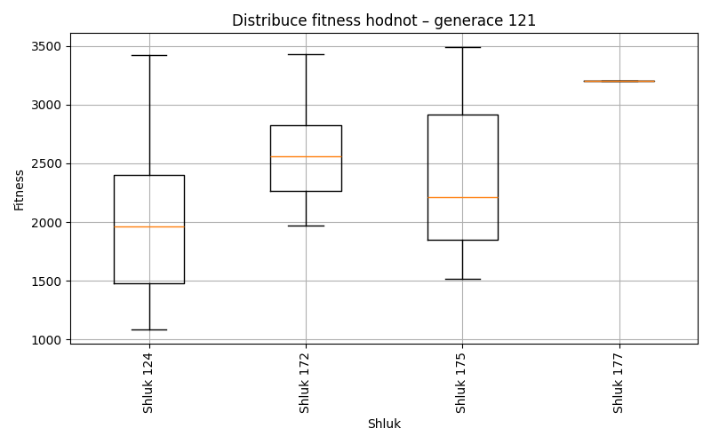
Generace 122
Stabilita mezi generací 121 → 122:
Shluk 124 → 124: 61 jedinců (85.9 %)
Shluk 124 → 175: 7 jedinců (9.9 %)
Shluk 124 → 172: 2 jedinců (2.8 %)
Shluk 124 → 177: 1 jedinců (1.4 %)
Shluk 172 → 178: 2 jedinců (20.0 %)
Shluk 172 → 172: 5 jedinců (50.0 %)
Shluk 172 → 124: 3 jedinců (30.0 %)
Shluk 175 → 175: 6 jedinců (33.3 %)
Shluk 175 → 172: 2 jedinců (11.1 %)
Shluk 175 → 124: 10 jedinců (55.6 %)
Shluk 177 → 177: 1 jedinců (100.0 %)
Jaccardovo mapování a overlap: Generace 121 → 122
- Shluk 124 → 124 (Jaccard: 0.73, Overlap: 0.86)
- Shluk 172 → 172 (Jaccard: 0.36, Overlap: 0.56)
- Shluk 175 → 175 (Jaccard: 0.24, Overlap: 0.46)
- Shluk 177 → 177 (Jaccard: 0.50, Overlap: 1.00)
Posun centroidů mezi generací 121 → 122:
- Shluk 0: 255.0022
- Shluk 1: 364.1463
- Shluk 2: 232.5332
- Shluk 3: 537.6330
Generace 123
Stabilita mezi generací 122 → 123:
Shluk 124 → 124: 67 jedinců (90.5 %)
Shluk 124 → 172: 6 jedinců (8.1 %)
Shluk 124 → 178: 1 jedinců (1.4 %)
Shluk 178 → 172: 1 jedinců (50.0 %)
Shluk 178 → 178: 1 jedinců (50.0 %)
Shluk 175 → 124: 9 jedinců (69.2 %)
Shluk 175 → 172: 4 jedinců (30.8 %)
Shluk 172 → 172: 4 jedinců (44.4 %)
Shluk 172 → 178: 2 jedinců (22.2 %)
Shluk 172 → 124: 3 jedinců (33.3 %)
Shluk 177 → 124: 2 jedinců (100.0 %)
Jaccardovo mapování a overlap: Generace 122 → 123
- Shluk 124 → 124 (Jaccard: 0.76, Overlap: 0.91)
- Shluk 178 → 178 (Jaccard: 0.20, Overlap: 0.50)
- Shluk 175 → 172 (Jaccard: 0.17, Overlap: 0.31)
- Shluk 172 → 172 (Jaccard: 0.20, Overlap: 0.44)
- Shluk 177 → 124 (Jaccard: 0.02, Overlap: 1.00)
Posun centroidů mezi generací 122 → 123:
- Shluk 0: 35.4079
- Shluk 1: 406.8665
- Shluk 2: 219.0501
Generace 124
Stabilita mezi generací 123 → 124:
Shluk 124 → 124: 48 jedinců (59.3 %)
Shluk 124 → 179: 9 jedinců (11.1 %)
Shluk 124 → 172: 17 jedinců (21.0 %)
Shluk 124 → 178: 5 jedinců (6.2 %)
Shluk 124 → 180: 2 jedinců (2.5 %)
Shluk 172 → 172: 7 jedinců (46.7 %)
Shluk 172 → 124: 5 jedinců (33.3 %)
Shluk 172 → 179: 1 jedinců (6.7 %)
Shluk 172 → 178: 1 jedinců (6.7 %)
Shluk 172 → 180: 1 jedinců (6.7 %)
Shluk 178 → 178: 3 jedinců (75.0 %)
Shluk 178 → 172: 1 jedinců (25.0 %)
Jaccardovo mapování a overlap: Generace 123 → 124
- Shluk 124 → 124 (Jaccard: 0.56, Overlap: 0.91)
- Shluk 172 → 172 (Jaccard: 0.21, Overlap: 0.47)
- Shluk 178 → 178 (Jaccard: 0.30, Overlap: 0.75)
Posun centroidů mezi generací 123 → 124:
- Shluk 0: 150.6222
- Shluk 1: 297.4510
- Shluk 2: 184.4028
Generace 125
Stabilita mezi generací 124 → 125:
Shluk 124 → 124: 48 jedinců (90.6 %)
Shluk 124 → 172: 5 jedinců (9.4 %)
Shluk 172 → 172: 10 jedinců (40.0 %)
Shluk 172 → 124: 15 jedinců (60.0 %)
Shluk 179 → 124: 7 jedinců (70.0 %)
Shluk 179 → 172: 3 jedinců (30.0 %)
Shluk 178 → 172: 4 jedinců (44.4 %)
Shluk 178 → 181: 1 jedinců (11.1 %)
Shluk 178 → 124: 4 jedinců (44.4 %)
Shluk 180 → 124: 2 jedinců (66.7 %)
Shluk 180 → 172: 1 jedinců (33.3 %)
Jaccardovo mapování a overlap: Generace 124 → 125
- Shluk 124 → 124 (Jaccard: 0.59, Overlap: 0.91)
- Shluk 172 → 172 (Jaccard: 0.26, Overlap: 0.43)
- Shluk 179 → 172 (Jaccard: 0.10, Overlap: 0.30)
- Shluk 178 → 172 (Jaccard: 0.14, Overlap: 0.44)
- Shluk 180 → 172 (Jaccard: 0.04, Overlap: 0.33)
Posun centroidů mezi generací 124 → 125:
- Shluk 0: 155.1579
- Shluk 1: 239.7820
- Shluk 2: 605.3886
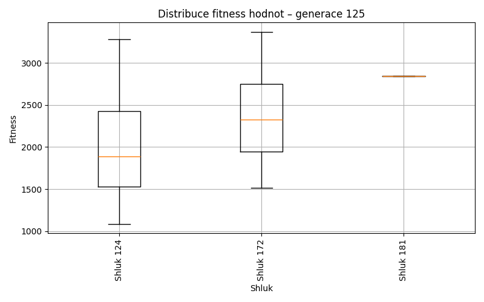
Generace 126
Stabilita mezi generací 125 → 126:
Shluk 124 → 124: 57 jedinců (75.0 %)
Shluk 124 → 172: 19 jedinců (25.0 %)
Shluk 172 → 172: 19 jedinců (82.6 %)
Shluk 172 → 124: 4 jedinců (17.4 %)
Shluk 181 → 181: 1 jedinců (100.0 %)
Jaccardovo mapování a overlap: Generace 125 → 126
- Shluk 124 → 124 (Jaccard: 0.71, Overlap: 0.93)
- Shluk 172 → 172 (Jaccard: 0.45, Overlap: 0.83)
- Shluk 181 → 181 (Jaccard: 1.00, Overlap: 1.00)
Posun centroidů mezi generací 125 → 126:
- Shluk 0: 127.8344
- Shluk 1: 708.9202
- Shluk 2: 605.1095
Generace 127
Stabilita mezi generací 126 → 127:
Shluk 124 → 124: 46 jedinců (75.4 %)
Shluk 124 → 182: 9 jedinců (14.8 %)
Shluk 124 → 172: 6 jedinců (9.8 %)
Shluk 172 → 172: 10 jedinců (26.3 %)
Shluk 172 → 182: 7 jedinců (18.4 %)
Shluk 172 → 183: 5 jedinců (13.2 %)
Shluk 172 → 124: 16 jedinců (42.1 %)
Shluk 181 → 181: 1 jedinců (100.0 %)
Jaccardovo mapování a overlap: Generace 126 → 127
- Shluk 124 → 124 (Jaccard: 0.60, Overlap: 0.75)
- Shluk 172 → 172 (Jaccard: 0.23, Overlap: 0.62)
- Shluk 181 → 181 (Jaccard: 1.00, Overlap: 1.00)
Posun centroidů mezi generací 126 → 127:
- Shluk 0: 95.3240
- Shluk 1: 706.2777
- Shluk 2: 309.3358
Generace 128
Stabilita mezi generací 127 → 128:
Shluk 124 → 124: 52 jedinců (83.9 %)
Shluk 124 → 182: 5 jedinců (8.1 %)
Shluk 124 → 184: 3 jedinců (4.8 %)
Shluk 124 → 183: 1 jedinců (1.6 %)
Shluk 124 → 172: 1 jedinců (1.6 %)
Shluk 172 → 172: 6 jedinců (37.5 %)
Shluk 172 → 124: 6 jedinců (37.5 %)
Shluk 172 → 182: 2 jedinců (12.5 %)
Shluk 172 → 184: 1 jedinců (6.2 %)
Shluk 172 → 183: 1 jedinců (6.2 %)
Shluk 182 → 172: 2 jedinců (12.5 %)
Shluk 182 → 182: 6 jedinců (37.5 %)
Shluk 182 → 124: 7 jedinců (43.8 %)
Shluk 182 → 183: 1 jedinců (6.2 %)
Shluk 183 → 172: 1 jedinců (20.0 %)
Shluk 183 → 182: 1 jedinců (20.0 %)
Shluk 183 → 183: 2 jedinců (40.0 %)
Shluk 183 → 124: 1 jedinců (20.0 %)
Shluk 181 → 124: 1 jedinců (100.0 %)
Jaccardovo mapování a overlap: Generace 127 → 128
- Shluk 124 → 124 (Jaccard: 0.68, Overlap: 0.84)
- Shluk 172 → 172 (Jaccard: 0.30, Overlap: 0.60)
- Shluk 182 → 182 (Jaccard: 0.25, Overlap: 0.43)
- Shluk 183 → 183 (Jaccard: 0.25, Overlap: 0.40)
- Shluk 181 → 124 (Jaccard: 0.01, Overlap: 1.00)
Posun centroidů mezi generací 127 → 128:
- Shluk 0: 171.6246
- Shluk 1: 161.9828
- Shluk 2: 319.4838
- Shluk 3: 198.9073
- Shluk 4: 384.2104
Generace 129
Stabilita mezi generací 128 → 129:
Shluk 124 → 124: 56 jedinců (83.6 %)
Shluk 124 → 182: 10 jedinců (14.9 %)
Shluk 124 → 172: 1 jedinců (1.5 %)
Shluk 172 → 124: 4 jedinců (40.0 %)
Shluk 172 → 182: 3 jedinců (30.0 %)
Shluk 172 → 172: 3 jedinců (30.0 %)
Shluk 182 → 182: 8 jedinců (57.1 %)
Shluk 182 → 124: 4 jedinců (28.6 %)
Shluk 182 → 172: 2 jedinců (14.3 %)
Shluk 184 → 124: 3 jedinců (75.0 %)
Shluk 184 → 182: 1 jedinců (25.0 %)
Shluk 183 → 124: 3 jedinců (60.0 %)
Shluk 183 → 182: 1 jedinců (20.0 %)
Shluk 183 → 172: 1 jedinců (20.0 %)
Jaccardovo mapování a overlap: Generace 128 → 129
- Shluk 124 → 124 (Jaccard: 0.69, Overlap: 0.84)
- Shluk 172 → 172 (Jaccard: 0.21, Overlap: 0.43)
- Shluk 182 → 182 (Jaccard: 0.28, Overlap: 0.57)
- Shluk 184 → 124 (Jaccard: 0.04, Overlap: 0.75)
- Shluk 183 → 172 (Jaccard: 0.09, Overlap: 0.20)
Posun centroidů mezi generací 128 → 129:
- Shluk 0: 140.6279
- Shluk 1: 201.5045
- Shluk 2: 136.6067
Generace 130
Stabilita mezi generací 129 → 130:
Shluk 124 → 124: 58 jedinců (82.9 %)
Shluk 124 → 185: 8 jedinců (11.4 %)
Shluk 124 → 182: 4 jedinců (5.7 %)
Shluk 182 → 182: 6 jedinců (26.1 %)
Shluk 182 → 124: 8 jedinců (34.8 %)
Shluk 182 → 185: 7 jedinců (30.4 %)
Shluk 182 → 172: 2 jedinců (8.7 %)
Shluk 172 → 185: 3 jedinců (42.9 %)
Shluk 172 → 182: 1 jedinců (14.3 %)
Shluk 172 → 172: 3 jedinců (42.9 %)
Jaccardovo mapování a overlap: Generace 129 → 130
- Shluk 124 → 124 (Jaccard: 0.74, Overlap: 0.88)
- Shluk 182 → 182 (Jaccard: 0.21, Overlap: 0.55)
- Shluk 172 → 172 (Jaccard: 0.33, Overlap: 0.60)
Posun centroidů mezi generací 129 → 130:
- Shluk 0: 104.2720
- Shluk 1: 22.1647
- Shluk 2: 253.6202
Generace 131
Stabilita mezi generací 130 → 131:
Shluk 124 → 124: 65 jedinců (98.5 %)
Shluk 124 → 172: 1 jedinců (1.5 %)
Shluk 185 → 172: 4 jedinců (22.2 %)
Shluk 185 → 124: 11 jedinců (61.1 %)
Shluk 185 → 186: 3 jedinců (16.7 %)
Shluk 182 → 124: 11 jedinců (100.0 %)
Shluk 172 → 172: 2 jedinců (40.0 %)
Shluk 172 → 124: 3 jedinců (60.0 %)
Jaccardovo mapování a overlap: Generace 130 → 131
- Shluk 124 → 124 (Jaccard: 0.71, Overlap: 0.98)
- Shluk 185 → 172 (Jaccard: 0.19, Overlap: 0.57)
- Shluk 182 → 124 (Jaccard: 0.12, Overlap: 1.00)
- Shluk 172 → 172 (Jaccard: 0.20, Overlap: 0.40)
Posun centroidů mezi generací 130 → 131:
- Shluk 0: 111.5392
- Shluk 1: 284.5260
- Shluk 2: 274.7584
Generace 132
Stabilita mezi generací 131 → 132:
Shluk 124 → 187: 8 jedinců (8.9 %)
Shluk 124 → 124: 80 jedinců (88.9 %)
Shluk 124 → 172: 2 jedinců (2.2 %)
Shluk 172 → 172: 3 jedinců (42.9 %)
Shluk 172 → 187: 2 jedinců (28.6 %)
Shluk 172 → 124: 2 jedinců (28.6 %)
Shluk 186 → 172: 2 jedinců (66.7 %)
Shluk 186 → 187: 1 jedinců (33.3 %)
Jaccardovo mapování a overlap: Generace 131 → 132
- Shluk 124 → 124 (Jaccard: 0.87, Overlap: 0.98)
- Shluk 172 → 172 (Jaccard: 0.27, Overlap: 0.43)
- Shluk 186 → 172 (Jaccard: 0.25, Overlap: 0.67)
Posun centroidů mezi generací 131 → 132:
- Shluk 0: 23.4785
- Shluk 1: 196.4471
- Shluk 2: 262.5014
Generace 133
Stabilita mezi generací 132 → 133:
Shluk 187 → 124: 3 jedinců (27.3 %)
Shluk 187 → 187: 8 jedinců (72.7 %)
Shluk 172 → 172: 2 jedinců (28.6 %)
Shluk 172 → 187: 3 jedinců (42.9 %)
Shluk 172 → 124: 2 jedinců (28.6 %)
Shluk 124 → 124: 67 jedinců (81.7 %)
Shluk 124 → 187: 14 jedinců (17.1 %)
Shluk 124 → 172: 1 jedinců (1.2 %)
Jaccardovo mapování a overlap: Generace 132 → 133
- Shluk 187 → 187 (Jaccard: 0.29, Overlap: 0.73)
- Shluk 172 → 172 (Jaccard: 0.25, Overlap: 0.67)
- Shluk 124 → 124 (Jaccard: 0.77, Overlap: 0.93)
Posun centroidů mezi generací 132 → 133:
- Shluk 0: 23.6383
- Shluk 1: 192.0353
- Shluk 2: 93.8375
Generace 134
Stabilita mezi generací 133 → 134:
Shluk 124 → 124: 64 jedinců (88.9 %)
Shluk 124 → 188: 8 jedinců (11.1 %)
Shluk 172 → 188: 1 jedinců (33.3 %)
Shluk 172 → 172: 2 jedinců (66.7 %)
Shluk 187 → 124: 19 jedinců (76.0 %)
Shluk 187 → 188: 3 jedinců (12.0 %)
Shluk 187 → 172: 3 jedinců (12.0 %)
Jaccardovo mapování a overlap: Generace 133 → 134
- Shluk 124 → 124 (Jaccard: 0.70, Overlap: 0.89)
- Shluk 172 → 172 (Jaccard: 0.33, Overlap: 0.67)
- Shluk 187 → 124 (Jaccard: 0.21, Overlap: 0.76)
Posun centroidů mezi generací 133 → 134:
- Shluk 0: 15.8800
- Shluk 1: 138.4819
- Shluk 2: 68.3831
Generace 135
Stabilita mezi generací 134 → 135:
Shluk 124 → 188: 7 jedinců (8.4 %)
Shluk 124 → 124: 65 jedinců (78.3 %)
Shluk 124 → 189: 11 jedinců (13.3 %)
Shluk 188 → 188: 6 jedinců (50.0 %)
Shluk 188 → 189: 2 jedinců (16.7 %)
Shluk 188 → 124: 4 jedinců (33.3 %)
Shluk 172 → 188: 3 jedinců (60.0 %)
Shluk 172 → 124: 1 jedinců (20.0 %)
Shluk 172 → 189: 1 jedinců (20.0 %)
Jaccardovo mapování a overlap: Generace 134 → 135
- Shluk 124 → 124 (Jaccard: 0.74, Overlap: 0.93)
- Shluk 188 → 188 (Jaccard: 0.27, Overlap: 0.50)
- Shluk 172 → 188 (Jaccard: 0.17, Overlap: 0.60)
Posun centroidů mezi generací 134 → 135:
- Shluk 0: 114.7617
- Shluk 1: 211.7814
- Shluk 2: 148.6318
Generace 136
Stabilita mezi generací 135 → 136:
Shluk 188 → 189: 1 jedinců (6.2 %)
Shluk 188 → 190: 3 jedinců (18.8 %)
Shluk 188 → 188: 4 jedinců (25.0 %)
Shluk 188 → 124: 8 jedinců (50.0 %)
Shluk 124 → 124: 66 jedinců (94.3 %)
Shluk 124 → 189: 1 jedinců (1.4 %)
Shluk 124 → 188: 2 jedinců (2.9 %)
Shluk 124 → 190: 1 jedinců (1.4 %)
Shluk 189 → 124: 6 jedinců (42.9 %)
Shluk 189 → 190: 2 jedinců (14.3 %)
Shluk 189 → 189: 5 jedinců (35.7 %)
Shluk 189 → 188: 1 jedinců (7.1 %)
Jaccardovo mapování a overlap: Generace 135 → 136
- Shluk 188 → 188 (Jaccard: 0.21, Overlap: 0.57)
- Shluk 124 → 124 (Jaccard: 0.79, Overlap: 0.94)
- Shluk 189 → 189 (Jaccard: 0.31, Overlap: 0.71)
Posun centroidů mezi generací 135 → 136:
- Shluk 0: 114.0461
- Shluk 1: 189.0921
- Shluk 2: 279.9393
Generace 137

Stabilita mezi generací 136 → 137:
Shluk 189 → 124: 3 jedinců (42.9 %)
Shluk 189 → 190: 1 jedinců (14.3 %)
Shluk 189 → 189: 3 jedinců (42.9 %)
Shluk 190 → 190: 4 jedinců (66.7 %)
Shluk 190 → 191: 1 jedinců (16.7 %)
Shluk 190 → 124: 1 jedinců (16.7 %)
Shluk 124 → 124: 64 jedinců (80.0 %)
Shluk 124 → 190: 13 jedinců (16.2 %)
Shluk 124 → 188: 1 jedinců (1.2 %)
Shluk 124 → 189: 2 jedinců (2.5 %)
Shluk 188 → 191: 2 jedinců (28.6 %)
Shluk 188 → 124: 2 jedinců (28.6 %)
Shluk 188 → 188: 2 jedinců (28.6 %)
Shluk 188 → 190: 1 jedinců (14.3 %)
Jaccardovo mapování a overlap: Generace 136 → 137
- Shluk 189 → 189 (Jaccard: 0.33, Overlap: 0.60)
- Shluk 190 → 190 (Jaccard: 0.19, Overlap: 0.67)
- Shluk 124 → 124 (Jaccard: 0.74, Overlap: 0.91)
- Shluk 188 → 188 (Jaccard: 0.25, Overlap: 0.67)
Posun centroidů mezi generací 136 → 137:
- Shluk 0: 15.6704
- Shluk 1: 199.6320
- Shluk 2: 257.6347
- Shluk 3: 394.6280
Generace 138
Stabilita mezi generací 137 → 138:
Shluk 124 → 124: 64 jedinců (91.4 %)
Shluk 124 → 190: 4 jedinců (5.7 %)
Shluk 124 → 191: 2 jedinců (2.9 %)
Shluk 190 → 190: 5 jedinců (26.3 %)
Shluk 190 → 124: 14 jedinců (73.7 %)
Shluk 188 → 124: 1 jedinců (33.3 %)
Shluk 188 → 190: 2 jedinců (66.7 %)
Shluk 191 → 190: 2 jedinců (66.7 %)
Shluk 191 → 191: 1 jedinců (33.3 %)
Shluk 189 → 124: 4 jedinců (80.0 %)
Shluk 189 → 190: 1 jedinců (20.0 %)
Jaccardovo mapování a overlap: Generace 137 → 138
- Shluk 124 → 124 (Jaccard: 0.72, Overlap: 0.91)
- Shluk 190 → 190 (Jaccard: 0.18, Overlap: 0.36)
- Shluk 188 → 190 (Jaccard: 0.13, Overlap: 0.67)
- Shluk 191 → 191 (Jaccard: 0.20, Overlap: 0.33)
- Shluk 189 → 190 (Jaccard: 0.06, Overlap: 0.20)
Posun centroidů mezi generací 137 → 138:
- Shluk 0: 187.4370
- Shluk 1: 107.9286
- Shluk 2: 159.5803
Generace 139
Stabilita mezi generací 138 → 139:
Shluk 124 → 124: 72 jedinců (86.7 %)
Shluk 124 → 192: 11 jedinců (13.3 %)
Shluk 190 → 124: 8 jedinců (57.1 %)
Shluk 190 → 190: 6 jedinců (42.9 %)
Shluk 191 → 124: 2 jedinců (66.7 %)
Shluk 191 → 190: 1 jedinců (33.3 %)
Jaccardovo mapování a overlap: Generace 138 → 139
- Shluk 124 → 124 (Jaccard: 0.77, Overlap: 0.88)
- Shluk 190 → 190 (Jaccard: 0.40, Overlap: 0.86)
- Shluk 191 → 190 (Jaccard: 0.11, Overlap: 0.33)
Posun centroidů mezi generací 138 → 139:
- Shluk 0: 167.1140
- Shluk 1: 314.7741
- Shluk 2: 275.7106
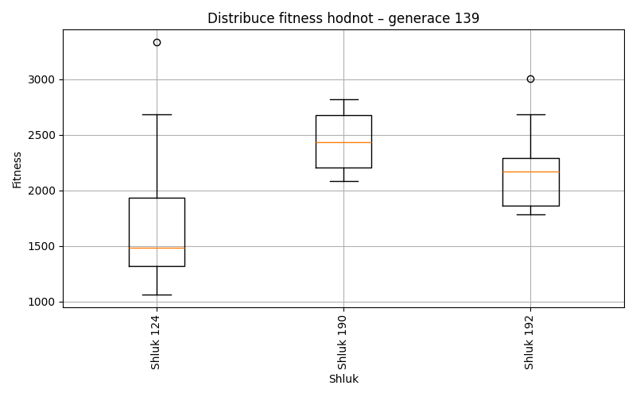
Generace 140

Stabilita mezi generací 139 → 140:
Shluk 124 → 124: 82 jedinců (100.0 %)
Shluk 192 → 124: 11 jedinců (100.0 %)
Shluk 190 → 190: 1 jedinců (14.3 %)
Shluk 190 → 124: 6 jedinců (85.7 %)
Jaccardovo mapování a overlap: Generace 139 → 140
- Shluk 124 → 124 (Jaccard: 0.83, Overlap: 1.00)
- Shluk 192 → 124 (Jaccard: 0.11, Overlap: 1.00)
- Shluk 190 → 190 (Jaccard: 0.14, Overlap: 1.00)
Posun centroidů mezi generací 139 → 140:
- Shluk 0: 11.3195
- Shluk 1: 284.8256
Generace 141
Stabilita mezi generací 140 → 141:
Shluk 124 → 124: 94 jedinců (94.9 %)
Shluk 124 → 190: 5 jedinců (5.1 %)
Shluk 190 → 190: 1 jedinců (100.0 %)
Jaccardovo mapování a overlap: Generace 140 → 141
- Shluk 124 → 124 (Jaccard: 0.95, Overlap: 1.00)
- Shluk 190 → 190 (Jaccard: 0.17, Overlap: 1.00)
Posun centroidů mezi generací 140 → 141:
- Shluk 0: 23.1846
- Shluk 1: 246.8135
Generace 142
Stabilita mezi generací 141 → 142:
Shluk 124 → 124: 80 jedinců (85.1 %)
Shluk 124 → 190: 7 jedinců (7.4 %)
Shluk 124 → 193: 7 jedinců (7.4 %)
Shluk 190 → 190: 4 jedinců (66.7 %)
Shluk 190 → 193: 2 jedinců (33.3 %)
Jaccardovo mapování a overlap: Generace 141 → 142
- Shluk 124 → 124 (Jaccard: 0.85, Overlap: 1.00)
- Shluk 190 → 190 (Jaccard: 0.31, Overlap: 0.67)
Posun centroidů mezi generací 141 → 142:
- Shluk 0: 17.4061
- Shluk 1: 144.0510
Generace 143
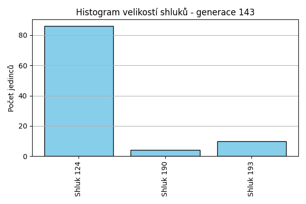
Stabilita mezi generací 142 → 143:
Shluk 124 → 193: 7 jedinců (8.8 %)
Shluk 124 → 124: 73 jedinců (91.2 %)
Shluk 190 → 190: 4 jedinců (36.4 %)
Shluk 190 → 124: 7 jedinců (63.6 %)
Shluk 193 → 193: 3 jedinců (33.3 %)
Shluk 193 → 124: 6 jedinců (66.7 %)
Jaccardovo mapování a overlap: Generace 142 → 143
- Shluk 124 → 124 (Jaccard: 0.78, Overlap: 0.91)
- Shluk 190 → 190 (Jaccard: 0.36, Overlap: 1.00)
- Shluk 193 → 193 (Jaccard: 0.19, Overlap: 0.33)
Posun centroidů mezi generací 142 → 143:
- Shluk 0: 24.9706
- Shluk 1: 141.6652
- Shluk 2: 38.4768
Generace 144
Stabilita mezi generací 143 → 144:
Shluk 193 → 124: 7 jedinců (70.0 %)
Shluk 193 → 194: 1 jedinců (10.0 %)
Shluk 193 → 190: 2 jedinců (20.0 %)
Shluk 190 → 190: 3 jedinců (75.0 %)
Shluk 190 → 194: 1 jedinců (25.0 %)
Shluk 124 → 124: 77 jedinců (89.5 %)
Shluk 124 → 194: 7 jedinců (8.1 %)
Shluk 124 → 190: 2 jedinců (2.3 %)
Jaccardovo mapování a overlap: Generace 143 → 144
- Shluk 193 → 190 (Jaccard: 0.13, Overlap: 0.29)
- Shluk 190 → 190 (Jaccard: 0.38, Overlap: 0.75)
- Shluk 124 → 124 (Jaccard: 0.83, Overlap: 0.92)
Posun centroidů mezi generací 143 → 144:
- Shluk 0: 12.0663
- Shluk 1: 84.2522
- Shluk 2: 101.6750
Generace 145
Stabilita mezi generací 144 → 145:
Shluk 124 → 124: 82 jedinců (97.6 %)
Shluk 124 → 190: 2 jedinců (2.4 %)
Shluk 190 → 190: 4 jedinců (57.1 %)
Shluk 190 → 124: 3 jedinců (42.9 %)
Shluk 194 → 124: 8 jedinců (88.9 %)
Shluk 194 → 190: 1 jedinců (11.1 %)
Jaccardovo mapování a overlap: Generace 144 → 145
- Shluk 124 → 124 (Jaccard: 0.86, Overlap: 0.98)
- Shluk 190 → 190 (Jaccard: 0.40, Overlap: 0.57)
- Shluk 194 → 124 (Jaccard: 0.09, Overlap: 0.89)
Posun centroidů mezi generací 144 → 145:
- Shluk 0: 18.2013
- Shluk 1: 98.3289
Generace 146

Stabilita mezi generací 145 → 146:
Shluk 124 → 124: 82 jedinců (88.2 %)
Shluk 124 → 190: 4 jedinců (4.3 %)
Shluk 124 → 195: 2 jedinců (2.2 %)
Shluk 124 → 196: 5 jedinců (5.4 %)
Shluk 190 → 124: 4 jedinců (57.1 %)
Shluk 190 → 190: 3 jedinců (42.9 %)
Jaccardovo mapování a overlap: Generace 145 → 146
- Shluk 124 → 124 (Jaccard: 0.85, Overlap: 0.95)
- Shluk 190 → 190 (Jaccard: 0.27, Overlap: 0.43)
Posun centroidů mezi generací 145 → 146:
- Shluk 0: 10.3544
- Shluk 1: 264.7114
Generace 147
Stabilita mezi generací 146 → 147:
Shluk 124 → 124: 78 jedinců (90.7 %)
Shluk 124 → 196: 8 jedinců (9.3 %)
Shluk 190 → 196: 1 jedinců (14.3 %)
Shluk 190 → 195: 1 jedinců (14.3 %)
Shluk 190 → 124: 5 jedinců (71.4 %)
Shluk 195 → 124: 1 jedinců (50.0 %)
Shluk 195 → 195: 1 jedinců (50.0 %)
Shluk 196 → 124: 4 jedinců (80.0 %)
Shluk 196 → 196: 1 jedinců (20.0 %)
Jaccardovo mapování a overlap: Generace 146 → 147
- Shluk 124 → 124 (Jaccard: 0.81, Overlap: 0.91)
- Shluk 190 → 195 (Jaccard: 0.12, Overlap: 0.50)
- Shluk 195 → 195 (Jaccard: 0.33, Overlap: 0.50)
- Shluk 196 → 196 (Jaccard: 0.07, Overlap: 0.20)
Posun centroidů mezi generací 146 → 147:
- Shluk 0: 27.7002
- Shluk 1: 382.9393
- Shluk 2: 223.6992
Generace 148
Stabilita mezi generací 147 → 148:
Shluk 124 → 124: 84 jedinců (95.5 %)
Shluk 124 → 195: 4 jedinců (4.5 %)
Shluk 196 → 124: 10 jedinců (100.0 %)
Shluk 195 → 195: 2 jedinců (100.0 %)
Jaccardovo mapování a overlap: Generace 147 → 148
- Shluk 124 → 124 (Jaccard: 0.86, Overlap: 0.95)
- Shluk 196 → 124 (Jaccard: 0.11, Overlap: 1.00)
- Shluk 195 → 195 (Jaccard: 0.33, Overlap: 1.00)
Posun centroidů mezi generací 147 → 148:
- Shluk 0: 29.0912
- Shluk 1: 159.9966
Generace 149
Stabilita mezi generací 148 → 149:
Shluk 124 → 124: 78 jedinců (83.0 %)
Shluk 124 → 195: 1 jedinců (1.1 %)
Shluk 124 → 197: 9 jedinců (9.6 %)
Shluk 124 → 198: 6 jedinců (6.4 %)
Shluk 195 → 124: 2 jedinců (33.3 %)
Shluk 195 → 195: 3 jedinců (50.0 %)
Shluk 195 → 197: 1 jedinců (16.7 %)
Jaccardovo mapování a overlap: Generace 148 → 149
- Shluk 124 → 124 (Jaccard: 0.81, Overlap: 0.97)
- Shluk 195 → 195 (Jaccard: 0.43, Overlap: 0.75)
Posun centroidů mezi generací 148 → 149:
- Shluk 0: 18.8140
- Shluk 1: 253.9749
Generace 150
Stabilita mezi generací 149 → 150:
Shluk 124 → 124: 78 jedinců (97.5 %)
Shluk 124 → 195: 2 jedinců (2.5 %)
Shluk 195 → 195: 4 jedinců (100.0 %)
Shluk 197 → 124: 8 jedinců (80.0 %)
Shluk 197 → 195: 2 jedinců (20.0 %)
Shluk 198 → 124: 5 jedinců (83.3 %)
Shluk 198 → 195: 1 jedinců (16.7 %)
Jaccardovo mapování a overlap: Generace 149 → 150
- Shluk 124 → 124 (Jaccard: 0.84, Overlap: 0.97)
- Shluk 195 → 195 (Jaccard: 0.44, Overlap: 1.00)
- Shluk 197 → 195 (Jaccard: 0.12, Overlap: 0.22)
- Shluk 198 → 195 (Jaccard: 0.07, Overlap: 0.17)
Posun centroidů mezi generací 149 → 150:
- Shluk 0: 188.2119
- Shluk 1: 114.1820

Generace 151
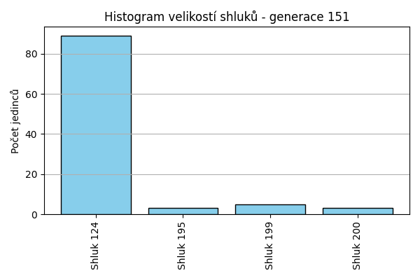
Stabilita mezi generací 150 → 151:
Shluk 124 → 124: 85 jedinců (93.4 %)
Shluk 124 → 199: 3 jedinců (3.3 %)
Shluk 124 → 200: 2 jedinců (2.2 %)
Shluk 124 → 195: 1 jedinců (1.1 %)
Shluk 195 → 199: 2 jedinců (22.2 %)
Shluk 195 → 195: 2 jedinců (22.2 %)
Shluk 195 → 124: 4 jedinců (44.4 %)
Shluk 195 → 200: 1 jedinců (11.1 %)
Jaccardovo mapování a overlap: Generace 150 → 151
- Shluk 124 → 124 (Jaccard: 0.89, Overlap: 0.96)
- Shluk 195 → 195 (Jaccard: 0.20, Overlap: 0.67)
Posun centroidů mezi generací 150 → 151:
- Shluk 0: 195.3971
- Shluk 1: 197.4566
Generace 152
Stabilita mezi generací 151 → 152:
Shluk 124 → 124: 89 jedinců (100.0 %)
Shluk 199 → 124: 3 jedinců (60.0 %)
Shluk 199 → 199: 2 jedinců (40.0 %)
Shluk 195 → 124: 3 jedinců (100.0 %)
Shluk 200 → 200: 1 jedinců (33.3 %)
Shluk 200 → 124: 2 jedinců (66.7 %)
Jaccardovo mapování a overlap: Generace 151 → 152
- Shluk 124 → 124 (Jaccard: 0.92, Overlap: 1.00)
- Shluk 199 → 199 (Jaccard: 0.40, Overlap: 1.00)
- Shluk 195 → 124 (Jaccard: 0.03, Overlap: 1.00)
- Shluk 200 → 200 (Jaccard: 0.33, Overlap: 1.00)
Posun centroidů mezi generací 151 → 152:
- Shluk 0: 16.4914
- Shluk 1: 206.7138
- Shluk 2: 365.7354
Generace 153
Stabilita mezi generací 152 → 153:
Shluk 124 → 124: 96 jedinců (99.0 %)
Shluk 124 → 199: 1 jedinců (1.0 %)
Shluk 199 → 124: 1 jedinců (50.0 %)
Shluk 199 → 199: 1 jedinců (50.0 %)
Shluk 200 → 124: 1 jedinců (100.0 %)
Jaccardovo mapování a overlap: Generace 152 → 153
- Shluk 124 → 124 (Jaccard: 0.97, Overlap: 0.99)
- Shluk 199 → 199 (Jaccard: 0.33, Overlap: 0.50)
- Shluk 200 → 124 (Jaccard: 0.01, Overlap: 1.00)
Posun centroidů mezi generací 152 → 153:
- Shluk 0: 10.3155
- Shluk 1: 104.8909
Generace 154
Stabilita mezi generací 153 → 154:
Shluk 124 → 124: 77 jedinců (78.6 %)
Shluk 124 → 201: 20 jedinců (20.4 %)
Shluk 124 → 199: 1 jedinců (1.0 %)
Shluk 199 → 199: 2 jedinců (100.0 %)
Jaccardovo mapování a overlap: Generace 153 → 154
- Shluk 124 → 124 (Jaccard: 0.79, Overlap: 1.00)
- Shluk 199 → 199 (Jaccard: 0.67, Overlap: 1.00)
Posun centroidů mezi generací 153 → 154:
- Shluk 0: 72.8815
- Shluk 1: 145.9090
Generace 155
Stabilita mezi generací 154 → 155:
Shluk 124 → 124: 75 jedinců (97.4 %)
Shluk 124 → 203: 1 jedinců (1.3 %)
Shluk 124 → 202: 1 jedinců (1.3 %)
Shluk 199 → 124: 3 jedinců (100.0 %)
Shluk 201 → 124: 17 jedinců (85.0 %)
Shluk 201 → 202: 2 jedinců (10.0 %)
Shluk 201 → 203: 1 jedinců (5.0 %)
Jaccardovo mapování a overlap: Generace 154 → 155
- Shluk 124 → 124 (Jaccard: 0.77, Overlap: 0.97)
- Shluk 199 → 124 (Jaccard: 0.03, Overlap: 1.00)
- Shluk 201 → 124 (Jaccard: 0.17, Overlap: 0.85)
Posun centroidů mezi generací 154 → 155:
- Shluk 0: 73.3951
- Shluk 1: 299.0004
- Shluk 2: 179.6140
Generace 156
Stabilita mezi generací 155 → 156:
Shluk 124 → 124: 90 jedinců (94.7 %)
Shluk 124 → 203: 5 jedinců (5.3 %)
Shluk 202 → 124: 1 jedinců (33.3 %)
Shluk 202 → 202: 2 jedinců (66.7 %)
Shluk 203 → 203: 1 jedinců (50.0 %)
Shluk 203 → 124: 1 jedinců (50.0 %)
Jaccardovo mapování a overlap: Generace 155 → 156
- Shluk 124 → 124 (Jaccard: 0.93, Overlap: 0.98)
- Shluk 202 → 202 (Jaccard: 0.67, Overlap: 1.00)
- Shluk 203 → 203 (Jaccard: 0.14, Overlap: 0.50)
Posun centroidů mezi generací 155 → 156:
- Shluk 0: 199.7065
- Shluk 1: 267.9366
- Shluk 2: 126.2662

Generace 157
Stabilita mezi generací 156 → 157:
Shluk 124 → 124: 91 jedinců (98.9 %)
Shluk 124 → 204: 1 jedinců (1.1 %)
Shluk 203 → 203: 3 jedinců (50.0 %)
Shluk 203 → 124: 3 jedinců (50.0 %)
Shluk 202 → 124: 2 jedinců (100.0 %)
Jaccardovo mapování a overlap: Generace 156 → 157
- Shluk 124 → 124 (Jaccard: 0.94, Overlap: 0.99)
- Shluk 203 → 203 (Jaccard: 0.50, Overlap: 1.00)
- Shluk 202 → 124 (Jaccard: 0.02, Overlap: 1.00)
Posun centroidů mezi generací 156 → 157:
- Shluk 0: 198.8716
- Shluk 1: 222.9440
- Shluk 2: 581.6177
Generace 158
Stabilita mezi generací 157 → 158:
Shluk 124 → 124: 91 jedinců (94.8 %)
Shluk 124 → 204: 3 jedinců (3.1 %)
Shluk 124 → 205: 2 jedinců (2.1 %)
Shluk 203 → 124: 2 jedinců (66.7 %)
Shluk 203 → 203: 1 jedinců (33.3 %)
Shluk 204 → 204: 1 jedinců (100.0 %)
Jaccardovo mapování a overlap: Generace 157 → 158
- Shluk 124 → 124 (Jaccard: 0.93, Overlap: 0.98)
- Shluk 203 → 203 (Jaccard: 0.33, Overlap: 1.00)
- Shluk 204 → 204 (Jaccard: 0.25, Overlap: 1.00)
Posun centroidů mezi generací 157 → 158:
- Shluk 0: 12.7835
- Shluk 1: 396.9132
- Shluk 2: 508.0111
Generace 159
Stabilita mezi generací 158 → 159:
Shluk 124 → 124: 91 jedinců (97.8 %)
Shluk 124 → 206: 2 jedinců (2.2 %)
Shluk 204 → 124: 4 jedinců (100.0 %)
Shluk 203 → 124: 1 jedinců (100.0 %)
Shluk 205 → 124: 2 jedinců (100.0 %)
Jaccardovo mapování a overlap: Generace 158 → 159
- Shluk 124 → 124 (Jaccard: 0.91, Overlap: 0.98)
- Shluk 204 → 124 (Jaccard: 0.04, Overlap: 1.00)
- Shluk 203 → 124 (Jaccard: 0.01, Overlap: 1.00)
- Shluk 205 → 124 (Jaccard: 0.02, Overlap: 1.00)
Posun centroidů mezi generací 158 → 159:
- Shluk 0: 16.8719
- Shluk 1: 455.3778
Generace 160
Stabilita mezi generací 159 → 160:
Shluk 124 → 124: 96 jedinců (98.0 %)
Shluk 124 → 206: 2 jedinců (2.0 %)
Shluk 206 → 206: 2 jedinců (100.0 %)
Jaccardovo mapování a overlap: Generace 159 → 160
- Shluk 124 → 124 (Jaccard: 0.98, Overlap: 1.00)
- Shluk 206 → 206 (Jaccard: 0.50, Overlap: 1.00)
Posun centroidů mezi generací 159 → 160:
- Shluk 0: 17.3319
- Shluk 1: 122.4736
Generace 161
Stabilita mezi generací 160 → 161:
Shluk 124 → 124: 96 jedinců (100.0 %)
Shluk 206 → 206: 3 jedinců (75.0 %)
Shluk 206 → 124: 1 jedinců (25.0 %)
Jaccardovo mapování a overlap: Generace 160 → 161
- Shluk 124 → 124 (Jaccard: 0.99, Overlap: 1.00)
- Shluk 206 → 206 (Jaccard: 0.75, Overlap: 1.00)
Posun centroidů mezi generací 160 → 161:
- Shluk 0: 10.3111
- Shluk 1: 114.2973
Generace 162
Stabilita mezi generací 161 → 162:
Shluk 124 → 124: 85 jedinců (87.6 %)
Shluk 124 → 207: 9 jedinců (9.3 %)
Shluk 124 → 206: 3 jedinců (3.1 %)
Shluk 206 → 206: 3 jedinců (100.0 %)
Jaccardovo mapování a overlap: Generace 161 → 162
- Shluk 124 → 124 (Jaccard: 0.88, Overlap: 1.00)
- Shluk 206 → 206 (Jaccard: 0.50, Overlap: 1.00)
Posun centroidů mezi generací 161 → 162:
- Shluk 0: 12.9062
- Shluk 1: 417.4765
Generace 163
Stabilita mezi generací 162 → 163:
Shluk 124 → 124: 84 jedinců (98.8 %)
Shluk 124 → 206: 1 jedinců (1.2 %)
Shluk 206 → 206: 3 jedinců (50.0 %)
Shluk 206 → 124: 3 jedinců (50.0 %)
Shluk 207 → 124: 9 jedinců (100.0 %)
Jaccardovo mapování a overlap: Generace 162 → 163
- Shluk 124 → 124 (Jaccard: 0.87, Overlap: 0.99)
- Shluk 206 → 206 (Jaccard: 0.43, Overlap: 0.75)
- Shluk 207 → 124 (Jaccard: 0.09, Overlap: 1.00)
Posun centroidů mezi generací 162 → 163:
- Shluk 0: 10.0177
- Shluk 1: 366.9938
Generace 164
Stabilita mezi generací 163 → 164:
Shluk 124 → 124: 93 jedinců (96.9 %)
Shluk 124 → 206: 3 jedinců (3.1 %)
Shluk 206 → 206: 2 jedinců (50.0 %)
Shluk 206 → 124: 2 jedinců (50.0 %)
Jaccardovo mapování a overlap: Generace 163 → 164
- Shluk 124 → 124 (Jaccard: 0.95, Overlap: 0.98)
- Shluk 206 → 206 (Jaccard: 0.29, Overlap: 0.50)
Posun centroidů mezi generací 163 → 164:
- Shluk 0: 198.2174
- Shluk 1: 252.6141
Generace 165
Stabilita mezi generací 164 → 165:
Shluk 124 → 124: 90 jedinců (94.7 %)
Shluk 124 → 208: 3 jedinců (3.2 %)
Shluk 124 → 206: 2 jedinců (2.1 %)
Shluk 206 → 206: 3 jedinců (60.0 %)
Shluk 206 → 124: 2 jedinců (40.0 %)
Jaccardovo mapování a overlap: Generace 164 → 165
- Shluk 124 → 124 (Jaccard: 0.93, Overlap: 0.98)
- Shluk 206 → 206 (Jaccard: 0.43, Overlap: 0.60)
Posun centroidů mezi generací 164 → 165:
- Shluk 0: 194.2472
- Shluk 1: 169.9074
Generace 166
Stabilita mezi generací 165 → 166:
Shluk 124 → 124: 91 jedinců (98.9 %)
Shluk 124 → 206: 1 jedinců (1.1 %)
Shluk 206 → 206: 2 jedinců (40.0 %)
Shluk 206 → 124: 3 jedinců (60.0 %)
Shluk 208 → 124: 3 jedinců (100.0 %)
Jaccardovo mapování a overlap: Generace 165 → 166
- Shluk 124 → 124 (Jaccard: 0.93, Overlap: 0.99)
- Shluk 206 → 206 (Jaccard: 0.33, Overlap: 0.67)
- Shluk 208 → 124 (Jaccard: 0.03, Overlap: 1.00)
Posun centroidů mezi generací 165 → 166:
- Shluk 0: 10.8315
- Shluk 1: 137.1722
Generace 167
Stabilita mezi generací 166 → 167:
Shluk 124 → 124: 97 jedinců (100.0 %)
Shluk 206 → 206: 2 jedinců (66.7 %)
Shluk 206 → 124: 1 jedinců (33.3 %)
Jaccardovo mapování a overlap: Generace 166 → 167
- Shluk 124 → 124 (Jaccard: 0.99, Overlap: 1.00)
- Shluk 206 → 206 (Jaccard: 0.67, Overlap: 1.00)
Posun centroidů mezi generací 166 → 167:
- Shluk 0: 10.4930
- Shluk 1: 247.3125
Generace 168
Stabilita mezi generací 167 → 168:
Shluk 124 → 124: 94 jedinců (95.9 %)
Shluk 124 → 206: 4 jedinců (4.1 %)
Shluk 206 → 206: 2 jedinců (100.0 %)
Jaccardovo mapování a overlap: Generace 167 → 168
- Shluk 124 → 124 (Jaccard: 0.96, Overlap: 1.00)
- Shluk 206 → 206 (Jaccard: 0.33, Overlap: 1.00)
Posun centroidů mezi generací 167 → 168:
- Shluk 0: 6.0020
- Shluk 1: 291.8746
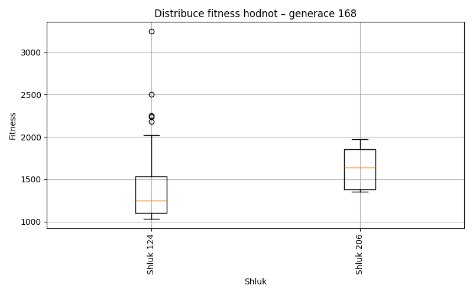
Generace 169
Stabilita mezi generací 168 → 169:
Shluk 124 → 124: 94 jedinců (100.0 %)
Shluk 206 → 206: 2 jedinců (33.3 %)
Shluk 206 → 124: 4 jedinců (66.7 %)
Jaccardovo mapování a overlap: Generace 168 → 169
- Shluk 124 → 124 (Jaccard: 0.96, Overlap: 1.00)
- Shluk 206 → 206 (Jaccard: 0.33, Overlap: 1.00)
Posun centroidů mezi generací 168 → 169:
- Shluk 0: 7.6770
- Shluk 1: 134.5928
Generace 170
Stabilita mezi generací 169 → 170:
Shluk 124 → 124: 86 jedinců (87.8 %)
Shluk 124 → 209: 8 jedinců (8.2 %)
Shluk 124 → 210: 2 jedinců (2.0 %)
Shluk 124 → 206: 2 jedinců (2.0 %)
Shluk 206 → 206: 2 jedinců (100.0 %)
Jaccardovo mapování a overlap: Generace 169 → 170
- Shluk 124 → 124 (Jaccard: 0.88, Overlap: 1.00)
- Shluk 206 → 206 (Jaccard: 0.50, Overlap: 1.00)
Posun centroidů mezi generací 169 → 170:
- Shluk 0: 8.8223
- Shluk 1: 398.0831
Generace 171
Stabilita mezi generací 170 → 171:
Shluk 124 → 124: 57 jedinců (66.3 %)
Shluk 124 → 211: 29 jedinců (33.7 %)
Shluk 206 → 206: 2 jedinců (50.0 %)
Shluk 206 → 124: 1 jedinců (25.0 %)
Shluk 206 → 211: 1 jedinců (25.0 %)
Shluk 209 → 124: 6 jedinců (75.0 %)
Shluk 209 → 211: 2 jedinců (25.0 %)
Shluk 210 → 124: 2 jedinců (100.0 %)
Jaccardovo mapování a overlap: Generace 170 → 171
- Shluk 124 → 124 (Jaccard: 0.60, Overlap: 0.86)
- Shluk 206 → 206 (Jaccard: 0.50, Overlap: 1.00)
- Shluk 209 → 124 (Jaccard: 0.09, Overlap: 0.75)
- Shluk 210 → 124 (Jaccard: 0.03, Overlap: 1.00)
Posun centroidů mezi generací 170 → 171:
- Shluk 0: 192.2948
- Shluk 1: 155.0916
- Shluk 2: 249.7495
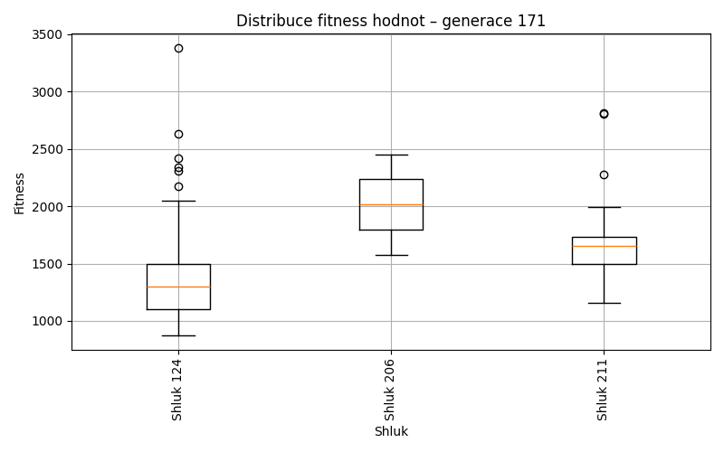
Generace 172
Stabilita mezi generací 171 → 172:
Shluk 124 → 124: 36 jedinců (54.5 %)
Shluk 124 → 212: 27 jedinců (40.9 %)
Shluk 124 → 206: 3 jedinců (4.5 %)
Shluk 206 → 206: 2 jedinců (100.0 %)
Shluk 211 → 124: 19 jedinců (59.4 %)
Shluk 211 → 212: 11 jedinců (34.4 %)
Shluk 211 → 206: 2 jedinců (6.2 %)
Jaccardovo mapování a overlap: Generace 171 → 172
- Shluk 124 → 124 (Jaccard: 0.42, Overlap: 0.65)
- Shluk 206 → 206 (Jaccard: 0.29, Overlap: 1.00)
- Shluk 211 → 124 (Jaccard: 0.28, Overlap: 0.59)
Posun centroidů mezi generací 171 → 172:
- Shluk 0: 210.9114
- Shluk 1: 34.6542
- Shluk 2: 339.7087
Generace 173
Stabilita mezi generací 172 → 173:
Shluk 124 → 212: 19 jedinců (34.5 %)
Shluk 124 → 213: 15 jedinců (27.3 %)
Shluk 124 → 124: 21 jedinců (38.2 %)
Shluk 206 → 206: 2 jedinců (28.6 %)
Shluk 206 → 213: 4 jedinců (57.1 %)
Shluk 206 → 212: 1 jedinců (14.3 %)
Shluk 212 → 212: 23 jedinců (60.5 %)
Shluk 212 → 213: 13 jedinců (34.2 %)
Shluk 212 → 124: 2 jedinců (5.3 %)
Jaccardovo mapování a overlap: Generace 172 → 173
- Shluk 124 → 124 (Jaccard: 0.37, Overlap: 0.91)
- Shluk 206 → 206 (Jaccard: 0.29, Overlap: 1.00)
- Shluk 212 → 212 (Jaccard: 0.40, Overlap: 0.61)
Posun centroidů mezi generací 172 → 173:
- Shluk 0: 256.0294
- Shluk 1: 121.7329
- Shluk 2: 381.8826
Generace 174
Stabilita mezi generací 173 → 174:
Shluk 212 → 206: 9 jedinců (20.9 %)
Shluk 212 → 214: 12 jedinců (27.9 %)
Shluk 212 → 212: 13 jedinců (30.2 %)
Shluk 212 → 124: 9 jedinců (20.9 %)
Shluk 206 → 206: 2 jedinců (100.0 %)
Shluk 213 → 214: 7 jedinců (21.9 %)
Shluk 213 → 212: 6 jedinců (18.8 %)
Shluk 213 → 124: 12 jedinců (37.5 %)
Shluk 213 → 206: 7 jedinců (21.9 %)
Shluk 124 → 124: 12 jedinců (52.2 %)
Shluk 124 → 214: 3 jedinců (13.0 %)
Shluk 124 → 212: 8 jedinců (34.8 %)
Jaccardovo mapování a overlap: Generace 173 → 174
- Shluk 212 → 212 (Jaccard: 0.23, Overlap: 0.48)
- Shluk 206 → 206 (Jaccard: 0.11, Overlap: 1.00)
- Shluk 213 → 124 (Jaccard: 0.23, Overlap: 0.38)
- Shluk 124 → 124 (Jaccard: 0.27, Overlap: 0.52)
Posun centroidů mezi generací 173 → 174:
- Shluk 0: 68.6323
- Shluk 1: 68.4077
- Shluk 2: 344.9259
- Shluk 3: 122.9350
Generace 175
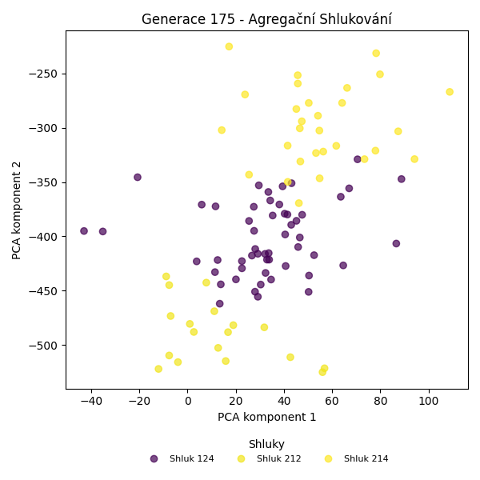
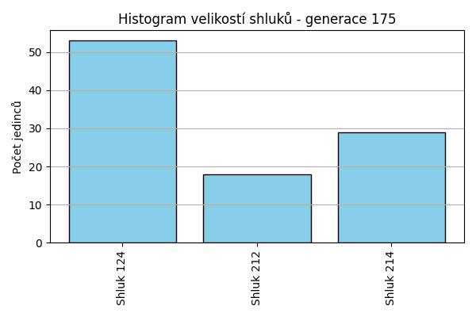
Stabilita mezi generací 174 → 175:
Shluk 206 → 124: 11 jedinců (61.1 %)
Shluk 206 → 214: 7 jedinců (38.9 %)
Shluk 214 → 124: 9 jedinců (40.9 %)
Shluk 214 → 214: 9 jedinců (40.9 %)
Shluk 214 → 212: 4 jedinců (18.2 %)
Shluk 212 → 212: 9 jedinců (33.3 %)
Shluk 212 → 124: 13 jedinců (48.1 %)
Shluk 212 → 214: 5 jedinců (18.5 %)
Shluk 124 → 124: 20 jedinců (60.6 %)
Shluk 124 → 212: 5 jedinců (15.2 %)
Shluk 124 → 214: 8 jedinců (24.2 %)
Jaccardovo mapování a overlap: Generace 174 → 175
- Shluk 206 → 124 (Jaccard: 0.18, Overlap: 0.61)
- Shluk 214 → 214 (Jaccard: 0.21, Overlap: 0.41)
- Shluk 212 → 212 (Jaccard: 0.25, Overlap: 0.50)
- Shluk 124 → 124 (Jaccard: 0.30, Overlap: 0.61)
Posun centroidů mezi generací 174 → 175:
- Shluk 0: 192.8402
- Shluk 1: 207.4914
- Shluk 2: 206.0583
Generace 176
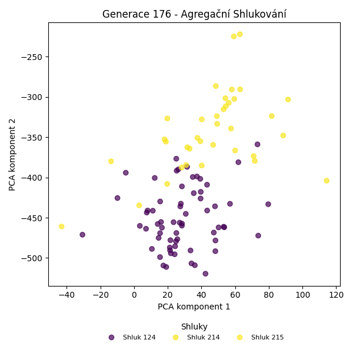
Stabilita mezi generací 175 → 176:
Shluk 124 → 124: 37 jedinců (69.8 %)
Shluk 124 → 215: 1 jedinců (1.9 %)
Shluk 124 → 214: 15 jedinců (28.3 %)
Shluk 214 → 124: 14 jedinců (48.3 %)
Shluk 214 → 214: 13 jedinců (44.8 %)
Shluk 214 → 215: 2 jedinců (6.9 %)
Shluk 212 → 124: 13 jedinců (72.2 %)
Shluk 212 → 214: 5 jedinců (27.8 %)
Jaccardovo mapování a overlap: Generace 175 → 176
- Shluk 124 → 124 (Jaccard: 0.46, Overlap: 0.70)
- Shluk 214 → 214 (Jaccard: 0.27, Overlap: 0.45)
- Shluk 212 → 124 (Jaccard: 0.19, Overlap: 0.72)
Posun centroidů mezi generací 175 → 176:
- Shluk 0: 66.4931
- Shluk 1: 57.2179
- Shluk 2: 259.4652
Generace 177
Stabilita mezi generací 176 → 177:
Shluk 124 → 214: 23 jedinců (35.9 %)
Shluk 124 → 124: 41 jedinců (64.1 %)
Shluk 215 → 215: 1 jedinců (33.3 %)
Shluk 215 → 214: 1 jedinců (33.3 %)
Shluk 215 → 124: 1 jedinců (33.3 %)
Shluk 214 → 124: 14 jedinců (42.4 %)
Shluk 214 → 214: 19 jedinců (57.6 %)
Jaccardovo mapování a overlap: Generace 176 → 177
- Shluk 124 → 124 (Jaccard: 0.52, Overlap: 0.73)
- Shluk 215 → 215 (Jaccard: 0.33, Overlap: 1.00)
- Shluk 214 → 214 (Jaccard: 0.33, Overlap: 0.58)
Posun centroidů mezi generací 176 → 177:
- Shluk 0: 138.1427
- Shluk 1: 169.2529
- Shluk 2: 239.4704
Generace 178
Stabilita mezi generací 177 → 178:
Shluk 214 → 124: 24 jedinců (55.8 %)
Shluk 214 → 214: 19 jedinců (44.2 %)
Shluk 215 → 215: 1 jedinců (100.0 %)
Shluk 124 → 214: 6 jedinců (10.7 %)
Shluk 124 → 124: 50 jedinců (89.3 %)
Jaccardovo mapování a overlap: Generace 177 → 178
- Shluk 214 → 214 (Jaccard: 0.39, Overlap: 0.76)
- Shluk 215 → 215 (Jaccard: 1.00, Overlap: 1.00)
- Shluk 124 → 124 (Jaccard: 0.62, Overlap: 0.89)
Posun centroidů mezi generací 177 → 178:
- Shluk 0: 121.1531
- Shluk 1: 199.1941
- Shluk 2: 231.5005
Generace 179

Stabilita mezi generací 178 → 179:
Shluk 124 → 124: 52 jedinců (70.3 %)
Shluk 124 → 214: 17 jedinců (23.0 %)
Shluk 124 → 216: 5 jedinců (6.8 %)
Shluk 215 → 215: 1 jedinců (100.0 %)
Shluk 214 → 216: 3 jedinců (12.0 %)
Shluk 214 → 214: 13 jedinců (52.0 %)
Shluk 214 → 124: 9 jedinců (36.0 %)
Jaccardovo mapování a overlap: Generace 178 → 179
- Shluk 124 → 124 (Jaccard: 0.63, Overlap: 0.85)
- Shluk 215 → 215 (Jaccard: 1.00, Overlap: 1.00)
- Shluk 214 → 214 (Jaccard: 0.31, Overlap: 0.52)
Posun centroidů mezi generací 178 → 179:
- Shluk 0: 21.2530
- Shluk 1: 44.0228
- Shluk 2: 631.0393
Generace 180

Stabilita mezi generací 179 → 180:
Shluk 124 → 214: 13 jedinců (21.3 %)
Shluk 124 → 124: 47 jedinců (77.0 %)
Shluk 124 → 216: 1 jedinců (1.6 %)
Shluk 215 → 124: 1 jedinců (100.0 %)
Shluk 216 → 216: 3 jedinců (37.5 %)
Shluk 216 → 214: 3 jedinců (37.5 %)
Shluk 216 → 124: 2 jedinců (25.0 %)
Shluk 214 → 216: 7 jedinců (23.3 %)
Shluk 214 → 124: 7 jedinců (23.3 %)
Shluk 214 → 214: 16 jedinců (53.3 %)
Jaccardovo mapování a overlap: Generace 179 → 180
- Shluk 124 → 124 (Jaccard: 0.66, Overlap: 0.82)
- Shluk 215 → 124 (Jaccard: 0.02, Overlap: 1.00)
- Shluk 216 → 216 (Jaccard: 0.19, Overlap: 0.38)
- Shluk 214 → 214 (Jaccard: 0.35, Overlap: 0.53)
Posun centroidů mezi generací 179 → 180:
- Shluk 0: 95.6548
- Shluk 1: 116.5965
- Shluk 2: 154.2396
Generace 181
Stabilita mezi generací 180 → 181:
Shluk 214 → 124: 14 jedinců (43.8 %)
Shluk 214 → 216: 10 jedinců (31.2 %)
Shluk 214 → 219: 4 jedinců (12.5 %)
Shluk 214 → 218: 3 jedinců (9.4 %)
Shluk 214 → 217: 1 jedinců (3.1 %)
Shluk 124 → 217: 4 jedinců (7.0 %)
Shluk 124 → 124: 39 jedinců (68.4 %)
Shluk 124 → 218: 12 jedinců (21.1 %)
Shluk 124 → 216: 2 jedinců (3.5 %)
Shluk 216 → 216: 6 jedinců (54.5 %)
Shluk 216 → 217: 1 jedinců (9.1 %)
Shluk 216 → 218: 2 jedinců (18.2 %)
Shluk 216 → 124: 1 jedinců (9.1 %)
Shluk 216 → 219: 1 jedinců (9.1 %)
Jaccardovo mapování a overlap: Generace 180 → 181
- Shluk 214 → 216 (Jaccard: 0.25, Overlap: 0.56)
- Shluk 124 → 124 (Jaccard: 0.54, Overlap: 0.72)
- Shluk 216 → 216 (Jaccard: 0.26, Overlap: 0.55)
Posun centroidů mezi generací 180 → 181:
- Shluk 0: 100.8640
- Shluk 1: 199.6712
- Shluk 2: 150.0054
Generace 182
Stabilita mezi generací 181 → 182:
Shluk 124 → 124: 47 jedinců (87.0 %)
Shluk 124 → 216: 7 jedinců (13.0 %)
Shluk 217 → 217: 1 jedinců (16.7 %)
Shluk 217 → 124: 4 jedinců (66.7 %)
Shluk 217 → 216: 1 jedinců (16.7 %)
Shluk 216 → 216: 7 jedinců (38.9 %)
Shluk 216 → 217: 4 jedinců (22.2 %)
Shluk 216 → 124: 7 jedinců (38.9 %)
Shluk 218 → 216: 4 jedinců (23.5 %)
Shluk 218 → 124: 13 jedinců (76.5 %)
Shluk 219 → 216: 4 jedinců (80.0 %)
Shluk 219 → 217: 1 jedinců (20.0 %)
Jaccardovo mapování a overlap: Generace 181 → 182
- Shluk 124 → 124 (Jaccard: 0.60, Overlap: 0.87)
- Shluk 217 → 217 (Jaccard: 0.09, Overlap: 0.17)
- Shluk 216 → 216 (Jaccard: 0.21, Overlap: 0.39)
- Shluk 218 → 124 (Jaccard: 0.17, Overlap: 0.76)
- Shluk 219 → 216 (Jaccard: 0.17, Overlap: 0.80)
Posun centroidů mezi generací 181 → 182:
- Shluk 0: 13.6313
- Shluk 1: 32.9052
- Shluk 2: 251.9567
Generace 183
Stabilita mezi generací 182 → 183:
Shluk 124 → 124: 58 jedinců (81.7 %)
Shluk 124 → 221: 9 jedinců (12.7 %)
Shluk 124 → 220: 2 jedinců (2.8 %)
Shluk 124 → 216: 2 jedinců (2.8 %)
Shluk 217 → 124: 4 jedinců (66.7 %)
Shluk 217 → 216: 1 jedinců (16.7 %)
Shluk 217 → 221: 1 jedinců (16.7 %)
Shluk 216 → 220: 1 jedinců (4.3 %)
Shluk 216 → 124: 11 jedinců (47.8 %)
Shluk 216 → 221: 5 jedinců (21.7 %)
Shluk 216 → 216: 6 jedinců (26.1 %)
Jaccardovo mapování a overlap: Generace 182 → 183
- Shluk 124 → 124 (Jaccard: 0.67, Overlap: 0.82)
- Shluk 217 → 216 (Jaccard: 0.07, Overlap: 0.17)
- Shluk 216 → 216 (Jaccard: 0.23, Overlap: 0.67)
Posun centroidů mezi generací 182 → 183:
- Shluk 0: 24.0098
- Shluk 1: 179.3897
- Shluk 2: 312.2601
Generace 184
Stabilita mezi generací 183 → 184:
Shluk 124 → 124: 69 jedinců (94.5 %)
Shluk 124 → 222: 1 jedinců (1.4 %)
Shluk 124 → 221: 3 jedinců (4.1 %)
Shluk 220 → 124: 2 jedinců (66.7 %)
Shluk 220 → 221: 1 jedinců (33.3 %)
Shluk 221 → 221: 8 jedinců (53.3 %)
Shluk 221 → 124: 7 jedinců (46.7 %)
Shluk 216 → 221: 6 jedinců (66.7 %)
Shluk 216 → 124: 3 jedinců (33.3 %)
Jaccardovo mapování a overlap: Generace 183 → 184
- Shluk 124 → 124 (Jaccard: 0.81, Overlap: 0.95)
- Shluk 220 → 221 (Jaccard: 0.05, Overlap: 0.33)
- Shluk 221 → 221 (Jaccard: 0.32, Overlap: 0.53)
- Shluk 216 → 221 (Jaccard: 0.29, Overlap: 0.67)
Posun centroidů mezi generací 183 → 184:
- Shluk 0: 180.5857
- Shluk 1: 253.5398
- Shluk 2: 583.0726
Generace 185
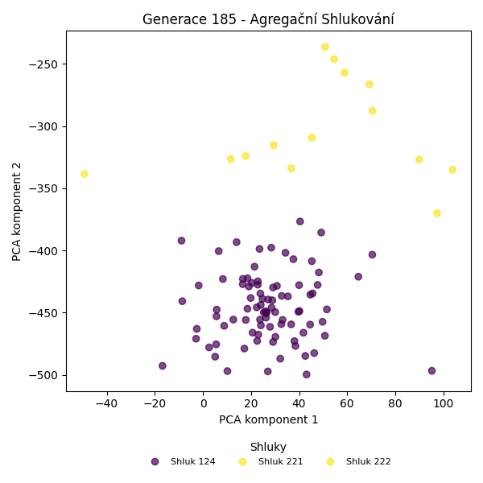
Stabilita mezi generací 184 → 185:
Shluk 124 → 124: 73 jedinců (90.1 %)
Shluk 124 → 221: 8 jedinců (9.9 %)
Shluk 222 → 222: 1 jedinců (100.0 %)
Shluk 221 → 124: 13 jedinců (72.2 %)
Shluk 221 → 221: 5 jedinců (27.8 %)
Jaccardovo mapování a overlap: Generace 184 → 185
- Shluk 124 → 124 (Jaccard: 0.78, Overlap: 0.90)
- Shluk 222 → 222 (Jaccard: 1.00, Overlap: 1.00)
- Shluk 221 → 221 (Jaccard: 0.19, Overlap: 0.38)
Posun centroidů mezi generací 184 → 185:
- Shluk 0: 187.4962
- Shluk 1: 182.6096
- Shluk 2: 295.9596
Generace 186
Stabilita mezi generací 185 → 186:
Shluk 124 → 124: 82 jedinců (95.3 %)
Shluk 124 → 221: 4 jedinců (4.7 %)
Shluk 222 → 221: 1 jedinců (100.0 %)
Shluk 221 → 221: 5 jedinců (38.5 %)
Shluk 221 → 124: 8 jedinců (61.5 %)
Jaccardovo mapování a overlap: Generace 185 → 186
- Shluk 124 → 124 (Jaccard: 0.87, Overlap: 0.95)
- Shluk 222 → 221 (Jaccard: 0.10, Overlap: 1.00)
- Shluk 221 → 221 (Jaccard: 0.28, Overlap: 0.50)
Posun centroidů mezi generací 185 → 186:
- Shluk 0: 209.2363
- Shluk 1: 190.7558
Generace 187

Stabilita mezi generací 186 → 187:
Shluk 124 → 124: 75 jedinců (83.3 %)
Shluk 124 → 221: 4 jedinců (4.4 %)
Shluk 124 → 223: 11 jedinců (12.2 %)
Shluk 221 → 223: 3 jedinců (30.0 %)
Shluk 221 → 124: 3 jedinců (30.0 %)
Shluk 221 → 221: 4 jedinců (40.0 %)
Jaccardovo mapování a overlap: Generace 186 → 187
- Shluk 124 → 124 (Jaccard: 0.81, Overlap: 0.96)
- Shluk 221 → 221 (Jaccard: 0.29, Overlap: 0.50)
Posun centroidů mezi generací 186 → 187:
- Shluk 0: 116.2335
- Shluk 1: 11.6557
Generace 188

Stabilita mezi generací 187 → 188:
Shluk 124 → 124: 72 jedinců (92.3 %)
Shluk 124 → 224: 1 jedinců (1.3 %)
Shluk 124 → 221: 5 jedinců (6.4 %)
Shluk 223 → 124: 9 jedinců (64.3 %)
Shluk 223 → 221: 5 jedinců (35.7 %)
Shluk 221 → 221: 4 jedinců (50.0 %)
Shluk 221 → 124: 3 jedinců (37.5 %)
Shluk 221 → 224: 1 jedinců (12.5 %)
Jaccardovo mapování a overlap: Generace 187 → 188
- Shluk 124 → 124 (Jaccard: 0.80, Overlap: 0.92)
- Shluk 223 → 221 (Jaccard: 0.22, Overlap: 0.36)
- Shluk 221 → 221 (Jaccard: 0.22, Overlap: 0.50)
Posun centroidů mezi generací 187 → 188:
- Shluk 0: 101.2229
- Shluk 1: 145.3170
- Shluk 2: 299.0942
Generace 189
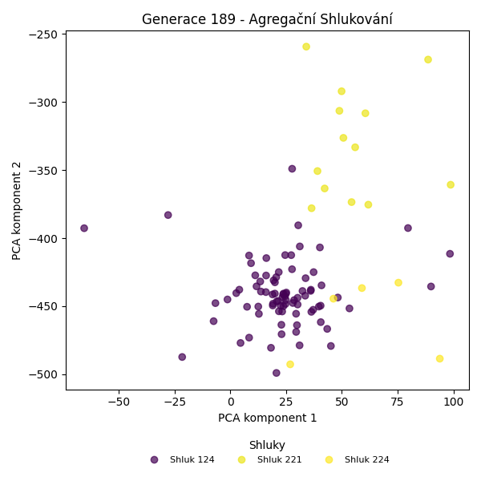
Stabilita mezi generací 188 → 189:
Shluk 124 → 124: 76 jedinců (90.5 %)
Shluk 124 → 224: 3 jedinců (3.6 %)
Shluk 124 → 221: 5 jedinců (6.0 %)
Shluk 224 → 224: 2 jedinců (100.0 %)
Shluk 221 → 124: 6 jedinců (42.9 %)
Shluk 221 → 221: 8 jedinců (57.1 %)
Jaccardovo mapování a overlap: Generace 188 → 189
- Shluk 124 → 124 (Jaccard: 0.84, Overlap: 0.93)
- Shluk 224 → 224 (Jaccard: 0.40, Overlap: 1.00)
- Shluk 221 → 221 (Jaccard: 0.42, Overlap: 0.62)
Posun centroidů mezi generací 188 → 189:
- Shluk 0: 10.2924
- Shluk 1: 25.3259
- Shluk 2: 91.9569
Generace 190
Stabilita mezi generací 189 → 190:
Shluk 124 → 225: 18 jedinců (22.0 %)
Shluk 124 → 124: 64 jedinců (78.0 %)
Shluk 224 → 124: 4 jedinců (80.0 %)
Shluk 224 → 225: 1 jedinců (20.0 %)
Shluk 221 → 221: 6 jedinců (46.2 %)
Shluk 221 → 225: 4 jedinců (30.8 %)
Shluk 221 → 124: 3 jedinců (23.1 %)
Jaccardovo mapování a overlap: Generace 189 → 190
- Shluk 124 → 124 (Jaccard: 0.72, Overlap: 0.90)
- Shluk 224 → 124 (Jaccard: 0.06, Overlap: 0.80)
- Shluk 221 → 221 (Jaccard: 0.46, Overlap: 1.00)
Posun centroidů mezi generací 189 → 190:
- Shluk 0: 258.1970
- Shluk 1: 98.5723
- Shluk 2: 169.5034
Generace 191
Stabilita mezi generací 190 → 191:
Shluk 225 → 124: 12 jedinců (52.2 %)
Shluk 225 → 226: 5 jedinců (21.7 %)
Shluk 225 → 225: 5 jedinců (21.7 %)
Shluk 225 → 227: 1 jedinců (4.3 %)
Shluk 124 → 124: 42 jedinců (59.2 %)
Shluk 124 → 226: 25 jedinců (35.2 %)
Shluk 124 → 225: 3 jedinců (4.2 %)
Shluk 124 → 227: 1 jedinců (1.4 %)
Shluk 221 → 227: 1 jedinců (16.7 %)
Shluk 221 → 225: 2 jedinců (33.3 %)
Shluk 221 → 124: 3 jedinců (50.0 %)
Jaccardovo mapování a overlap: Generace 190 → 191
- Shluk 225 → 225 (Jaccard: 0.18, Overlap: 0.50)
- Shluk 124 → 124 (Jaccard: 0.49, Overlap: 0.74)
- Shluk 221 → 225 (Jaccard: 0.14, Overlap: 0.33)
Posun centroidů mezi generací 190 → 191:
- Shluk 0: 247.4523
- Shluk 1: 195.0058
- Shluk 2: 265.3653
Generace 192
Stabilita mezi generací 191 → 192:
Shluk 124 → 124: 24 jedinců (42.1 %)
Shluk 124 → 226: 11 jedinců (19.3 %)
Shluk 124 → 228: 22 jedinců (38.6 %)
Shluk 226 → 226: 13 jedinců (43.3 %)
Shluk 226 → 228: 10 jedinců (33.3 %)
Shluk 226 → 227: 3 jedinců (10.0 %)
Shluk 226 → 124: 4 jedinců (13.3 %)
Shluk 227 → 227: 2 jedinců (66.7 %)
Shluk 227 → 124: 1 jedinců (33.3 %)
Shluk 225 → 124: 2 jedinců (20.0 %)
Shluk 225 → 227: 3 jedinců (30.0 %)
Shluk 225 → 228: 4 jedinců (40.0 %)
Shluk 225 → 226: 1 jedinců (10.0 %)
Jaccardovo mapování a overlap: Generace 191 → 192
- Shluk 124 → 124 (Jaccard: 0.38, Overlap: 0.77)
- Shluk 226 → 226 (Jaccard: 0.31, Overlap: 0.52)
- Shluk 227 → 227 (Jaccard: 0.22, Overlap: 0.67)
- Shluk 225 → 227 (Jaccard: 0.20, Overlap: 0.38)
Posun centroidů mezi generací 191 → 192:
- Shluk 0: 201.7044
- Shluk 1: 166.5899
- Shluk 2: 117.5349
- Shluk 3: 259.7090
Generace 193
Stabilita mezi generací 192 → 193:
Shluk 124 → 124: 12 jedinců (38.7 %)
Shluk 124 → 226: 8 jedinců (25.8 %)
Shluk 124 → 229: 6 jedinců (19.4 %)
Shluk 124 → 227: 4 jedinců (12.9 %)
Shluk 124 → 228: 1 jedinců (3.2 %)
Shluk 226 → 229: 5 jedinců (20.0 %)
Shluk 226 → 124: 5 jedinců (20.0 %)
Shluk 226 → 228: 7 jedinců (28.0 %)
Shluk 226 → 226: 8 jedinců (32.0 %)
Shluk 228 → 228: 16 jedinců (44.4 %)
Shluk 228 → 226: 10 jedinců (27.8 %)
Shluk 228 → 124: 8 jedinců (22.2 %)
Shluk 228 → 227: 2 jedinců (5.6 %)
Shluk 227 → 229: 2 jedinců (25.0 %)
Shluk 227 → 124: 1 jedinců (12.5 %)
Shluk 227 → 226: 2 jedinců (25.0 %)
Shluk 227 → 227: 2 jedinců (25.0 %)
Shluk 227 → 228: 1 jedinců (12.5 %)
Jaccardovo mapování a overlap: Generace 192 → 193
- Shluk 124 → 124 (Jaccard: 0.27, Overlap: 0.46)
- Shluk 226 → 226 (Jaccard: 0.18, Overlap: 0.32)
- Shluk 228 → 228 (Jaccard: 0.36, Overlap: 0.64)
- Shluk 227 → 227 (Jaccard: 0.14, Overlap: 0.25)
Posun centroidů mezi generací 192 → 193:
- Shluk 0: 245.9771
- Shluk 1: 72.0965
- Shluk 2: 128.3601
- Shluk 3: 92.6352
Generace 194
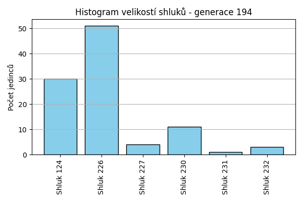
Stabilita mezi generací 193 → 194:
Shluk 124 → 124: 11 jedinců (42.3 %)
Shluk 124 → 230: 2 jedinců (7.7 %)
Shluk 124 → 226: 12 jedinců (46.2 %)
Shluk 124 → 232: 1 jedinců (3.8 %)
Shluk 229 → 226: 9 jedinců (69.2 %)
Shluk 229 → 124: 3 jedinců (23.1 %)
Shluk 229 → 227: 1 jedinců (7.7 %)
Shluk 226 → 226: 16 jedinců (57.1 %)
Shluk 226 → 230: 5 jedinců (17.9 %)
Shluk 226 → 124: 6 jedinců (21.4 %)
Shluk 226 → 227: 1 jedinců (3.6 %)
Shluk 228 → 124: 8 jedinců (32.0 %)
Shluk 228 → 230: 4 jedinců (16.0 %)
Shluk 228 → 226: 12 jedinců (48.0 %)
Shluk 228 → 232: 1 jedinců (4.0 %)
Shluk 227 → 124: 2 jedinců (25.0 %)
Shluk 227 → 227: 2 jedinců (25.0 %)
Shluk 227 → 231: 1 jedinců (12.5 %)
Shluk 227 → 226: 2 jedinců (25.0 %)
Shluk 227 → 232: 1 jedinců (12.5 %)
Jaccardovo mapování a overlap: Generace 193 → 194
- Shluk 124 → 124 (Jaccard: 0.24, Overlap: 0.42)
- Shluk 229 → 226 (Jaccard: 0.16, Overlap: 0.69)
- Shluk 226 → 226 (Jaccard: 0.25, Overlap: 0.57)
- Shluk 228 → 226 (Jaccard: 0.19, Overlap: 0.48)
- Shluk 227 → 227 (Jaccard: 0.20, Overlap: 0.50)
Posun centroidů mezi generací 193 → 194:
- Shluk 0: 202.5103
- Shluk 1: 91.1126
- Shluk 2: 192.8609
- Shluk 3: 327.5937
- Shluk 4: 294.4373
Generace 195
Stabilita mezi generací 194 → 195:
Shluk 124 → 226: 9 jedinců (30.0 %)
Shluk 124 → 230: 8 jedinců (26.7 %)
Shluk 124 → 233: 7 jedinců (23.3 %)
Shluk 124 → 232: 2 jedinců (6.7 %)
Shluk 124 → 234: 4 jedinců (13.3 %)
Shluk 226 → 226: 22 jedinců (43.1 %)
Shluk 226 → 233: 12 jedinců (23.5 %)
Shluk 226 → 230: 13 jedinců (25.5 %)
Shluk 226 → 232: 3 jedinců (5.9 %)
Shluk 226 → 234: 1 jedinců (2.0 %)
Shluk 230 → 230: 6 jedinců (54.5 %)
Shluk 230 → 234: 1 jedinců (9.1 %)
Shluk 230 → 233: 4 jedinců (36.4 %)
Shluk 227 → 232: 2 jedinců (50.0 %)
Shluk 227 → 226: 2 jedinců (50.0 %)
Shluk 231 → 230: 1 jedinců (100.0 %)
Shluk 232 → 232: 2 jedinců (66.7 %)
Shluk 232 → 226: 1 jedinců (33.3 %)
Jaccardovo mapování a overlap: Generace 194 → 195
- Shluk 124 → 226 (Jaccard: 0.16, Overlap: 0.30)
- Shluk 226 → 226 (Jaccard: 0.35, Overlap: 0.65)
- Shluk 230 → 230 (Jaccard: 0.18, Overlap: 0.55)
- Shluk 227 → 232 (Jaccard: 0.18, Overlap: 0.50)
- Shluk 231 → 230 (Jaccard: 0.04, Overlap: 1.00)
- Shluk 232 → 232 (Jaccard: 0.20, Overlap: 0.67)
Posun centroidů mezi generací 194 → 195:
- Shluk 0: 63.0889
- Shluk 1: 26.9092
- Shluk 2: 117.5525
- Shluk 3: 222.9650
- Shluk 4: 211.4859
Generace 196
Stabilita mezi generací 195 → 196:
Shluk 226 → 230: 9 jedinců (26.5 %)
Shluk 226 → 226: 24 jedinců (70.6 %)
Shluk 226 → 235: 1 jedinců (2.9 %)
Shluk 233 → 226: 11 jedinců (47.8 %)
Shluk 233 → 232: 2 jedinců (8.7 %)
Shluk 233 → 230: 9 jedinců (39.1 %)
Shluk 233 → 235: 1 jedinců (4.3 %)
Shluk 230 → 230: 12 jedinců (42.9 %)
Shluk 230 → 226: 8 jedinců (28.6 %)
Shluk 230 → 235: 7 jedinců (25.0 %)
Shluk 230 → 232: 1 jedinců (3.6 %)
Shluk 232 → 232: 3 jedinců (33.3 %)
Shluk 232 → 230: 3 jedinců (33.3 %)
Shluk 232 → 235: 1 jedinců (11.1 %)
Shluk 232 → 226: 2 jedinců (22.2 %)
Shluk 234 → 230: 5 jedinců (83.3 %)
Shluk 234 → 235: 1 jedinců (16.7 %)
Jaccardovo mapování a overlap: Generace 195 → 196
- Shluk 226 → 226 (Jaccard: 0.44, Overlap: 0.71)
- Shluk 233 → 226 (Jaccard: 0.19, Overlap: 0.48)
- Shluk 230 → 230 (Jaccard: 0.22, Overlap: 0.43)
- Shluk 232 → 232 (Jaccard: 0.25, Overlap: 0.50)
- Shluk 234 → 230 (Jaccard: 0.13, Overlap: 0.83)
Posun centroidů mezi generací 195 → 196:
- Shluk 0: 38.8580
- Shluk 1: 69.3513
- Shluk 2: 84.3700
- Shluk 3: 171.9649
Generace 197
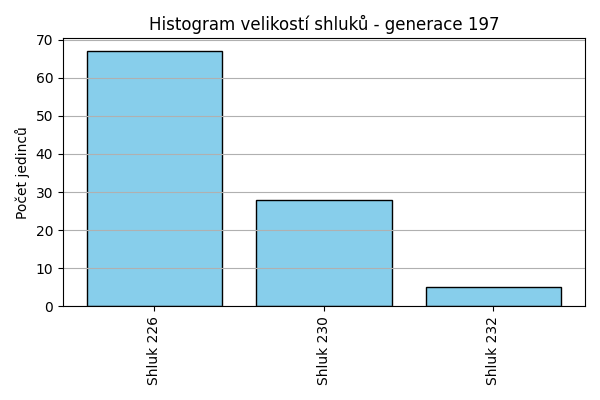
Stabilita mezi generací 196 → 197:
Shluk 230 → 230: 17 jedinců (44.7 %)
Shluk 230 → 226: 19 jedinců (50.0 %)
Shluk 230 → 232: 2 jedinců (5.3 %)
Shluk 226 → 226: 38 jedinců (84.4 %)
Shluk 226 → 230: 6 jedinců (13.3 %)
Shluk 226 → 232: 1 jedinců (2.2 %)
Shluk 232 → 232: 2 jedinců (33.3 %)
Shluk 232 → 230: 1 jedinců (16.7 %)
Shluk 232 → 226: 3 jedinců (50.0 %)
Shluk 235 → 226: 7 jedinců (63.6 %)
Shluk 235 → 230: 4 jedinců (36.4 %)
Jaccardovo mapování a overlap: Generace 196 → 197
- Shluk 230 → 230 (Jaccard: 0.35, Overlap: 0.61)
- Shluk 226 → 226 (Jaccard: 0.51, Overlap: 0.84)
- Shluk 232 → 232 (Jaccard: 0.22, Overlap: 0.40)
- Shluk 235 → 230 (Jaccard: 0.11, Overlap: 0.36)
Posun centroidů mezi generací 196 → 197:
- Shluk 0: 48.6609
- Shluk 1: 84.6643
- Shluk 2: 49.3908
Generace 198
Stabilita mezi generací 197 → 198:
Shluk 230 → 226: 15 jedinců (53.6 %)
Shluk 230 → 236: 4 jedinců (14.3 %)
Shluk 230 → 230: 8 jedinců (28.6 %)
Shluk 230 → 232: 1 jedinců (3.6 %)
Shluk 226 → 226: 50 jedinců (74.6 %)
Shluk 226 → 230: 9 jedinců (13.4 %)
Shluk 226 → 236: 8 jedinců (11.9 %)
Shluk 232 → 230: 2 jedinců (40.0 %)
Shluk 232 → 236: 2 jedinců (40.0 %)
Shluk 232 → 232: 1 jedinců (20.0 %)
Jaccardovo mapování a overlap: Generace 197 → 198
- Shluk 230 → 230 (Jaccard: 0.21, Overlap: 0.42)
- Shluk 226 → 226 (Jaccard: 0.61, Overlap: 0.77)
- Shluk 232 → 232 (Jaccard: 0.17, Overlap: 0.50)
Posun centroidů mezi generací 197 → 198:
- Shluk 0: 14.6059
- Shluk 1: 48.7629
- Shluk 2: 115.3527
Generace 199
Stabilita mezi generací 198 → 199:
Shluk 226 → 226: 35 jedinců (53.8 %)
Shluk 226 → 237: 19 jedinců (29.2 %)
Shluk 226 → 230: 11 jedinců (16.9 %)
Shluk 230 → 232: 2 jedinců (10.5 %)
Shluk 230 → 226: 5 jedinců (26.3 %)
Shluk 230 → 237: 6 jedinců (31.6 %)
Shluk 230 → 230: 6 jedinců (31.6 %)
Shluk 236 → 226: 7 jedinců (50.0 %)
Shluk 236 → 230: 5 jedinců (35.7 %)
Shluk 236 → 237: 2 jedinců (14.3 %)
Shluk 232 → 232: 2 jedinců (100.0 %)
Jaccardovo mapování a overlap: Generace 198 → 199
- Shluk 226 → 226 (Jaccard: 0.45, Overlap: 0.74)
- Shluk 230 → 230 (Jaccard: 0.17, Overlap: 0.32)
- Shluk 236 → 230 (Jaccard: 0.16, Overlap: 0.36)
- Shluk 232 → 232 (Jaccard: 0.50, Overlap: 1.00)
Posun centroidů mezi generací 198 → 199:
- Shluk 0: 56.9724
- Shluk 1: 39.9812
- Shluk 2: 52.2140
- Shluk 3: 92.1388
Generace 200
Stabilita mezi generací 199 → 200:
Shluk 226 → 226: 39 jedinců (83.0 %)
Shluk 226 → 230: 6 jedinců (12.8 %)
Shluk 226 → 238: 2 jedinců (4.3 %)
Shluk 237 → 230: 6 jedinců (22.2 %)
Shluk 237 → 226: 18 jedinců (66.7 %)
Shluk 237 → 238: 1 jedinců (3.7 %)
Shluk 237 → 232: 2 jedinců (7.4 %)
Shluk 232 → 232: 3 jedinců (75.0 %)
Shluk 232 → 226: 1 jedinců (25.0 %)
Shluk 230 → 226: 8 jedinců (36.4 %)
Shluk 230 → 230: 9 jedinců (40.9 %)
Shluk 230 → 238: 5 jedinců (22.7 %)
Jaccardovo mapování a overlap: Generace 199 → 200
- Shluk 226 → 226 (Jaccard: 0.53, Overlap: 0.83)
- Shluk 237 → 226 (Jaccard: 0.24, Overlap: 0.67)
- Shluk 232 → 232 (Jaccard: 0.50, Overlap: 0.75)
- Shluk 230 → 230 (Jaccard: 0.26, Overlap: 0.43)
Posun centroidů mezi generací 199 → 200:
- Shluk 0: 42.6158
- Shluk 1: 87.3917
- Shluk 2: 122.3355
- Shluk 3: 188.9149
Generace 201
Stabilita mezi generací 200 → 201:
Shluk 226 → 226: 53 jedinců (80.3 %)
Shluk 226 → 232: 11 jedinců (16.7 %)
Shluk 226 → 230: 2 jedinců (3.0 %)
Shluk 230 → 226: 9 jedinců (42.9 %)
Shluk 230 → 230: 5 jedinců (23.8 %)
Shluk 230 → 232: 7 jedinců (33.3 %)
Shluk 232 → 232: 3 jedinců (60.0 %)
Shluk 232 → 226: 2 jedinců (40.0 %)
Shluk 238 → 232: 1 jedinců (12.5 %)
Shluk 238 → 226: 5 jedinců (62.5 %)
Shluk 238 → 230: 2 jedinců (25.0 %)
Jaccardovo mapování a overlap: Generace 200 → 201
- Shluk 226 → 226 (Jaccard: 0.65, Overlap: 0.80)
- Shluk 230 → 230 (Jaccard: 0.20, Overlap: 0.56)
- Shluk 232 → 232 (Jaccard: 0.12, Overlap: 0.60)
- Shluk 238 → 230 (Jaccard: 0.13, Overlap: 0.25)
Posun centroidů mezi generací 200 → 201:
- Shluk 0: 152.1031
- Shluk 1: 110.0939
- Shluk 2: 255.4853
Generace 202
Stabilita mezi generací 201 → 202:
Shluk 226 → 226: 47 jedinců (68.1 %)
Shluk 226 → 232: 19 jedinců (27.5 %)
Shluk 226 → 230: 2 jedinců (2.9 %)
Shluk 226 → 239: 1 jedinců (1.4 %)
Shluk 230 → 230: 2 jedinců (22.2 %)
Shluk 230 → 232: 5 jedinců (55.6 %)
Shluk 230 → 226: 2 jedinců (22.2 %)
Shluk 232 → 230: 4 jedinců (18.2 %)
Shluk 232 → 232: 11 jedinců (50.0 %)
Shluk 232 → 226: 7 jedinců (31.8 %)
Jaccardovo mapování a overlap: Generace 201 → 202
- Shluk 226 → 226 (Jaccard: 0.60, Overlap: 0.84)
- Shluk 230 → 230 (Jaccard: 0.13, Overlap: 0.25)
- Shluk 232 → 232 (Jaccard: 0.24, Overlap: 0.50)
Posun centroidů mezi generací 201 → 202:
- Shluk 0: 76.8405
- Shluk 1: 244.0717
- Shluk 2: 261.3511
Generace 203
Stabilita mezi generací 202 → 203:
Shluk 226 → 226: 49 jedinců (87.5 %)
Shluk 226 → 240: 7 jedinců (12.5 %)
Shluk 232 → 226: 24 jedinců (68.6 %)
Shluk 232 → 240: 10 jedinců (28.6 %)
Shluk 232 → 230: 1 jedinců (2.9 %)
Shluk 230 → 240: 4 jedinců (50.0 %)
Shluk 230 → 230: 2 jedinců (25.0 %)
Shluk 230 → 226: 2 jedinců (25.0 %)
Shluk 239 → 239: 1 jedinců (100.0 %)
Jaccardovo mapování a overlap: Generace 202 → 203
- Shluk 226 → 226 (Jaccard: 0.60, Overlap: 0.88)
- Shluk 232 → 226 (Jaccard: 0.28, Overlap: 0.69)
- Shluk 230 → 230 (Jaccard: 0.22, Overlap: 0.67)
- Shluk 239 → 239 (Jaccard: 1.00, Overlap: 1.00)
Posun centroidů mezi generací 202 → 203:
- Shluk 0: 105.4033
- Shluk 1: 239.3900
- Shluk 2: 219.1676
- Shluk 3: 232.5448
Generace 204
Stabilita mezi generací 203 → 204:
Shluk 226 → 226: 71 jedinců (94.7 %)
Shluk 226 → 240: 3 jedinců (4.0 %)
Shluk 226 → 230: 1 jedinců (1.3 %)
Shluk 240 → 226: 10 jedinců (47.6 %)
Shluk 240 → 240: 10 jedinců (47.6 %)
Shluk 240 → 230: 1 jedinců (4.8 %)
Shluk 230 → 226: 1 jedinců (33.3 %)
Shluk 230 → 230: 2 jedinců (66.7 %)
Shluk 239 → 239: 1 jedinců (100.0 %)
Jaccardovo mapování a overlap: Generace 203 → 204
- Shluk 226 → 226 (Jaccard: 0.83, Overlap: 0.95)
- Shluk 240 → 240 (Jaccard: 0.42, Overlap: 0.77)
- Shluk 230 → 230 (Jaccard: 0.40, Overlap: 0.67)
- Shluk 239 → 239 (Jaccard: 1.00, Overlap: 1.00)
Posun centroidů mezi generací 203 → 204:
- Shluk 0: 166.6840
- Shluk 1: 194.8313
- Shluk 2: 36.4084
- Shluk 3: 278.1896
Generace 205
Stabilita mezi generací 204 → 205:
Shluk 226 → 226: 50 jedinců (61.0 %)
Shluk 226 → 241: 24 jedinců (29.3 %)
Shluk 226 → 240: 6 jedinců (7.3 %)
Shluk 226 → 242: 2 jedinců (2.4 %)
Shluk 240 → 241: 3 jedinců (23.1 %)
Shluk 240 → 240: 6 jedinců (46.2 %)
Shluk 240 → 242: 2 jedinců (15.4 %)
Shluk 240 → 226: 1 jedinců (7.7 %)
Shluk 240 → 230: 1 jedinců (7.7 %)
Shluk 230 → 230: 2 jedinců (50.0 %)
Shluk 230 → 240: 2 jedinců (50.0 %)
Shluk 239 → 240: 1 jedinců (100.0 %)
Jaccardovo mapování a overlap: Generace 204 → 205
- Shluk 226 → 226 (Jaccard: 0.60, Overlap: 0.98)
- Shluk 240 → 240 (Jaccard: 0.27, Overlap: 0.46)
- Shluk 230 → 230 (Jaccard: 0.40, Overlap: 0.67)
- Shluk 239 → 240 (Jaccard: 0.07, Overlap: 1.00)
Posun centroidů mezi generací 204 → 205:
- Shluk 0: 138.8620
- Shluk 1: 208.6120
- Shluk 2: 23.8430
- Shluk 3: 297.5097
Generace 206

Stabilita mezi generací 205 → 206:
Shluk 226 → 226: 40 jedinců (78.4 %)
Shluk 226 → 243: 9 jedinců (17.6 %)
Shluk 226 → 240: 2 jedinců (3.9 %)
Shluk 241 → 226: 15 jedinců (55.6 %)
Shluk 241 → 240: 3 jedinců (11.1 %)
Shluk 241 → 243: 9 jedinců (33.3 %)
Shluk 240 → 244: 2 jedinců (13.3 %)
Shluk 240 → 243: 4 jedinců (26.7 %)
Shluk 240 → 240: 8 jedinců (53.3 %)
Shluk 240 → 226: 1 jedinců (6.7 %)
Shluk 230 → 240: 3 jedinců (100.0 %)
Shluk 242 → 240: 2 jedinců (50.0 %)
Shluk 242 → 243: 2 jedinců (50.0 %)
Jaccardovo mapování a overlap: Generace 205 → 206
- Shluk 226 → 226 (Jaccard: 0.60, Overlap: 0.78)
- Shluk 241 → 226 (Jaccard: 0.22, Overlap: 0.56)
- Shluk 240 → 240 (Jaccard: 0.32, Overlap: 0.53)
- Shluk 230 → 240 (Jaccard: 0.17, Overlap: 1.00)
- Shluk 242 → 240 (Jaccard: 0.10, Overlap: 0.50)
Posun centroidů mezi generací 205 → 206:
- Shluk 0: 240.7904
- Shluk 1: 11.8586
- Shluk 2: 172.2853
- Shluk 3: 236.1528
Generace 207
Stabilita mezi generací 206 → 207:
Shluk 226 → 226: 49 jedinců (87.5 %)
Shluk 226 → 240: 5 jedinců (8.9 %)
Shluk 226 → 244: 2 jedinců (3.6 %)
Shluk 243 → 226: 17 jedinců (70.8 %)
Shluk 243 → 244: 2 jedinců (8.3 %)
Shluk 243 → 245: 2 jedinců (8.3 %)
Shluk 243 → 240: 3 jedinců (12.5 %)
Shluk 240 → 226: 6 jedinců (33.3 %)
Shluk 240 → 240: 6 jedinců (33.3 %)
Shluk 240 → 244: 4 jedinců (22.2 %)
Shluk 240 → 245: 2 jedinců (11.1 %)
Shluk 244 → 226: 1 jedinců (50.0 %)
Shluk 244 → 244: 1 jedinců (50.0 %)
Jaccardovo mapování a overlap: Generace 206 → 207
- Shluk 226 → 226 (Jaccard: 0.61, Overlap: 0.88)
- Shluk 243 → 226 (Jaccard: 0.21, Overlap: 0.71)
- Shluk 240 → 240 (Jaccard: 0.23, Overlap: 0.43)
- Shluk 244 → 244 (Jaccard: 0.10, Overlap: 0.50)
Posun centroidů mezi generací 206 → 207:
- Shluk 0: 195.2259
- Shluk 1: 238.8837
- Shluk 2: 155.2677
- Shluk 3: 47.4317
Generace 208

Stabilita mezi generací 207 → 208:
Shluk 226 → 226: 65 jedinců (89.0 %)
Shluk 226 → 240: 8 jedinců (11.0 %)
Shluk 244 → 226: 5 jedinců (55.6 %)
Shluk 244 → 240: 4 jedinců (44.4 %)
Shluk 245 → 240: 4 jedinců (100.0 %)
Shluk 240 → 240: 8 jedinců (57.1 %)
Shluk 240 → 226: 6 jedinců (42.9 %)
Jaccardovo mapování a overlap: Generace 207 → 208
- Shluk 226 → 226 (Jaccard: 0.77, Overlap: 0.89)
- Shluk 244 → 240 (Jaccard: 0.14, Overlap: 0.44)
- Shluk 245 → 240 (Jaccard: 0.17, Overlap: 1.00)
- Shluk 240 → 240 (Jaccard: 0.27, Overlap: 0.57)
Posun centroidů mezi generací 207 → 208:
- Shluk 0: 133.1208
- Shluk 1: 230.3164
Generace 209
Stabilita mezi generací 208 → 209:
Shluk 226 → 226: 73 jedinců (96.1 %)
Shluk 226 → 240: 3 jedinců (3.9 %)
Shluk 240 → 226: 12 jedinců (50.0 %)
Shluk 240 → 240: 12 jedinců (50.0 %)
Jaccardovo mapování a overlap: Generace 208 → 209
- Shluk 226 → 226 (Jaccard: 0.83, Overlap: 0.96)
- Shluk 240 → 240 (Jaccard: 0.44, Overlap: 0.80)
Posun centroidů mezi generací 208 → 209:
- Shluk 0: 25.0027
- Shluk 1: 15.5156
Generace 210
Stabilita mezi generací 209 → 210:
Shluk 226 → 226: 75 jedinců (88.2 %)
Shluk 226 → 240: 10 jedinců (11.8 %)
Shluk 240 → 240: 9 jedinců (60.0 %)
Shluk 240 → 226: 6 jedinců (40.0 %)
Jaccardovo mapování a overlap: Generace 209 → 210
- Shluk 226 → 226 (Jaccard: 0.82, Overlap: 0.93)
- Shluk 240 → 240 (Jaccard: 0.36, Overlap: 0.60)
Posun centroidů mezi generací 209 → 210:
- Shluk 0: 51.0471
- Shluk 1: 10.5172

Generace 211

Stabilita mezi generací 210 → 211:
Shluk 226 → 226: 69 jedinců (85.2 %)
Shluk 226 → 240: 10 jedinců (12.3 %)
Shluk 226 → 247: 2 jedinců (2.5 %)
Shluk 240 → 240: 9 jedinců (47.4 %)
Shluk 240 → 226: 4 jedinců (21.1 %)
Shluk 240 → 246: 4 jedinců (21.1 %)
Shluk 240 → 247: 2 jedinců (10.5 %)
Jaccardovo mapování a overlap: Generace 210 → 211
- Shluk 226 → 226 (Jaccard: 0.81, Overlap: 0.95)
- Shluk 240 → 240 (Jaccard: 0.31, Overlap: 0.47)
Posun centroidů mezi generací 210 → 211:
- Shluk 0: 131.7955
- Shluk 1: 12.2772
Generace 212
Stabilita mezi generací 211 → 212:
Shluk 226 → 226: 69 jedinců (94.5 %)
Shluk 226 → 240: 4 jedinců (5.5 %)
Shluk 240 → 226: 12 jedinců (63.2 %)
Shluk 240 → 240: 7 jedinců (36.8 %)
Shluk 246 → 240: 4 jedinců (100.0 %)
Shluk 247 → 240: 3 jedinců (75.0 %)
Shluk 247 → 226: 1 jedinců (25.0 %)
Jaccardovo mapování a overlap: Generace 211 → 212
- Shluk 226 → 226 (Jaccard: 0.80, Overlap: 0.95)
- Shluk 240 → 240 (Jaccard: 0.23, Overlap: 0.39)
- Shluk 246 → 240 (Jaccard: 0.22, Overlap: 1.00)
- Shluk 247 → 240 (Jaccard: 0.16, Overlap: 0.75)
Posun centroidů mezi generací 211 → 212:
- Shluk 0: 81.6402
- Shluk 1: 11.9228
Generace 213
Stabilita mezi generací 212 → 213:
Shluk 226 → 226: 75 jedinců (91.5 %)
Shluk 226 → 248: 5 jedinců (6.1 %)
Shluk 226 → 240: 1 jedinců (1.2 %)
Shluk 226 → 249: 1 jedinců (1.2 %)
Shluk 240 → 226: 10 jedinců (55.6 %)
Shluk 240 → 249: 2 jedinců (11.1 %)
Shluk 240 → 248: 3 jedinců (16.7 %)
Shluk 240 → 240: 3 jedinců (16.7 %)
Jaccardovo mapování a overlap: Generace 212 → 213
- Shluk 226 → 226 (Jaccard: 0.82, Overlap: 0.91)
- Shluk 240 → 240 (Jaccard: 0.16, Overlap: 0.75)
Posun centroidů mezi generací 212 → 213:
- Shluk 0: 142.9392
- Shluk 1: 82.5084
Generace 214
Stabilita mezi generací 213 → 214:
Shluk 226 → 226: 84 jedinců (98.8 %)
Shluk 226 → 248: 1 jedinců (1.2 %)
Shluk 248 → 226: 4 jedinců (50.0 %)
Shluk 248 → 248: 4 jedinců (50.0 %)
Shluk 249 → 226: 1 jedinců (33.3 %)
Shluk 249 → 249: 1 jedinců (33.3 %)
Shluk 249 → 248: 1 jedinců (33.3 %)
Shluk 240 → 248: 2 jedinců (50.0 %)
Shluk 240 → 226: 2 jedinců (50.0 %)
Jaccardovo mapování a overlap: Generace 213 → 214
- Shluk 226 → 226 (Jaccard: 0.91, Overlap: 0.99)
- Shluk 248 → 248 (Jaccard: 0.33, Overlap: 0.50)
- Shluk 249 → 249 (Jaccard: 0.33, Overlap: 1.00)
- Shluk 240 → 248 (Jaccard: 0.20, Overlap: 0.50)
Posun centroidů mezi generací 213 → 214:
- Shluk 0: 8.4249
- Shluk 1: 117.7261
- Shluk 2: 243.4057
Generace 215
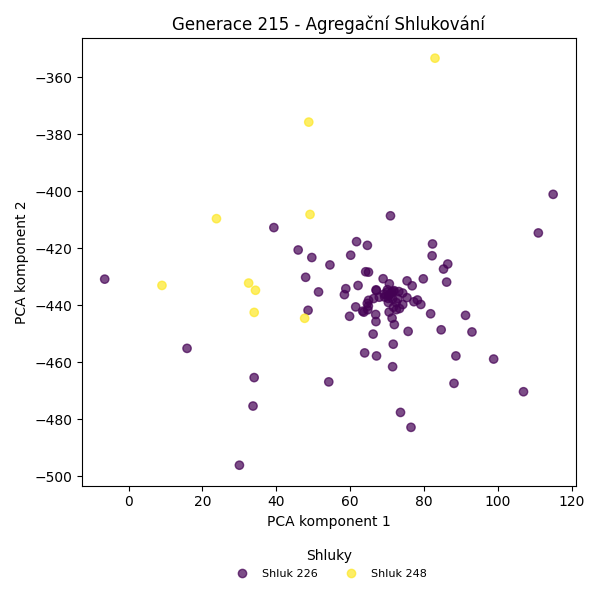
Stabilita mezi generací 214 → 215:
Shluk 226 → 226: 88 jedinců (96.7 %)
Shluk 226 → 248: 3 jedinců (3.3 %)
Shluk 248 → 248: 5 jedinců (62.5 %)
Shluk 248 → 226: 3 jedinců (37.5 %)
Shluk 249 → 248: 1 jedinců (100.0 %)
Jaccardovo mapování a overlap: Generace 214 → 215
- Shluk 226 → 226 (Jaccard: 0.94, Overlap: 0.97)
- Shluk 248 → 248 (Jaccard: 0.42, Overlap: 0.62)
- Shluk 249 → 248 (Jaccard: 0.11, Overlap: 1.00)
Posun centroidů mezi generací 214 → 215:
- Shluk 0: 7.2251
- Shluk 1: 37.2170
Generace 216
Stabilita mezi generací 215 → 216:
Shluk 226 → 226: 81 jedinců (89.0 %)
Shluk 226 → 250: 10 jedinců (11.0 %)
Shluk 248 → 226: 4 jedinců (44.4 %)
Shluk 248 → 250: 3 jedinců (33.3 %)
Shluk 248 → 248: 2 jedinců (22.2 %)
Jaccardovo mapování a overlap: Generace 215 → 216
- Shluk 226 → 226 (Jaccard: 0.85, Overlap: 0.95)
- Shluk 248 → 248 (Jaccard: 0.22, Overlap: 1.00)
Posun centroidů mezi generací 215 → 216:
- Shluk 0: 6.1675
- Shluk 1: 70.9366
Generace 217
Stabilita mezi generací 216 → 217:
Shluk 226 → 226: 83 jedinců (97.6 %)
Shluk 226 → 250: 1 jedinců (1.2 %)
Shluk 226 → 248: 1 jedinců (1.2 %)
Shluk 250 → 226: 7 jedinců (53.8 %)
Shluk 250 → 250: 6 jedinců (46.2 %)
Shluk 248 → 248: 2 jedinců (100.0 %)
Jaccardovo mapování a overlap: Generace 216 → 217
- Shluk 226 → 226 (Jaccard: 0.90, Overlap: 0.98)
- Shluk 250 → 250 (Jaccard: 0.43, Overlap: 0.86)
- Shluk 248 → 248 (Jaccard: 0.67, Overlap: 1.00)
Posun centroidů mezi generací 216 → 217:
- Shluk 0: 137.2505
- Shluk 1: 241.9992
- Shluk 2: 260.8280
Generace 218
Stabilita mezi generací 217 → 218:
Shluk 226 → 226: 85 jedinců (94.4 %)
Shluk 226 → 250: 5 jedinců (5.6 %)
Shluk 250 → 226: 5 jedinců (71.4 %)
Shluk 250 → 250: 2 jedinců (28.6 %)
Shluk 248 → 250: 1 jedinců (33.3 %)
Shluk 248 → 248: 1 jedinců (33.3 %)
Shluk 248 → 226: 1 jedinců (33.3 %)
Jaccardovo mapování a overlap: Generace 217 → 218
- Shluk 226 → 226 (Jaccard: 0.89, Overlap: 0.94)
- Shluk 250 → 250 (Jaccard: 0.15, Overlap: 0.29)
- Shluk 248 → 248 (Jaccard: 0.33, Overlap: 1.00)
Posun centroidů mezi generací 217 → 218:
- Shluk 0: 33.1042
- Shluk 1: 234.4822
- Shluk 2: 285.7654
Generace 219
Stabilita mezi generací 218 → 219:
Shluk 226 → 226: 90 jedinců (98.9 %)
Shluk 226 → 250: 1 jedinců (1.1 %)
Shluk 250 → 226: 2 jedinců (25.0 %)
Shluk 250 → 248: 1 jedinců (12.5 %)
Shluk 250 → 250: 5 jedinců (62.5 %)
Shluk 248 → 248: 1 jedinců (100.0 %)
Jaccardovo mapování a overlap: Generace 218 → 219
- Shluk 226 → 226 (Jaccard: 0.97, Overlap: 0.99)
- Shluk 250 → 250 (Jaccard: 0.56, Overlap: 0.83)
- Shluk 248 → 248 (Jaccard: 0.50, Overlap: 1.00)
Posun centroidů mezi generací 218 → 219:
- Shluk 0: 255.2534
- Shluk 1: 4.3800
- Shluk 2: 272.8718
Generace 220
Stabilita mezi generací 219 → 220:
Shluk 226 → 226: 89 jedinců (96.7 %)
Shluk 226 → 251: 3 jedinců (3.3 %)
Shluk 248 → 226: 2 jedinců (100.0 %)
Shluk 250 → 226: 6 jedinců (100.0 %)
Jaccardovo mapování a overlap: Generace 219 → 220
- Shluk 226 → 226 (Jaccard: 0.89, Overlap: 0.97)
- Shluk 248 → 226 (Jaccard: 0.02, Overlap: 1.00)
- Shluk 250 → 226 (Jaccard: 0.06, Overlap: 1.00)
Posun centroidů mezi generací 219 → 220:
- Shluk 0: 260.7882
- Shluk 1: 147.4220
Generace 221
Stabilita mezi generací 220 → 221:
Shluk 226 → 226: 89 jedinců (91.8 %)
Shluk 226 → 252: 5 jedinců (5.2 %)
Shluk 226 → 253: 2 jedinců (2.1 %)
Shluk 226 → 251: 1 jedinců (1.0 %)
Shluk 251 → 253: 1 jedinců (33.3 %)
Shluk 251 → 251: 1 jedinců (33.3 %)
Shluk 251 → 252: 1 jedinců (33.3 %)
Jaccardovo mapování a overlap: Generace 220 → 221
- Shluk 226 → 226 (Jaccard: 0.92, Overlap: 1.00)
- Shluk 251 → 251 (Jaccard: 0.25, Overlap: 0.50)
Posun centroidů mezi generací 220 → 221:
- Shluk 0: 77.3550
- Shluk 1: 142.6368
Generace 222
Stabilita mezi generací 221 → 222:
Shluk 226 → 226: 89 jedinců (100.0 %)
Shluk 252 → 226: 6 jedinců (100.0 %)
Shluk 253 → 253: 2 jedinců (66.7 %)
Shluk 253 → 226: 1 jedinců (33.3 %)
Shluk 251 → 226: 2 jedinců (100.0 %)
Jaccardovo mapování a overlap: Generace 221 → 222
- Shluk 226 → 226 (Jaccard: 0.91, Overlap: 1.00)
- Shluk 252 → 226 (Jaccard: 0.06, Overlap: 1.00)
- Shluk 253 → 253 (Jaccard: 0.67, Overlap: 1.00)
- Shluk 251 → 226 (Jaccard: 0.02, Overlap: 1.00)
Posun centroidů mezi generací 221 → 222:
- Shluk 0: 79.1164
- Shluk 1: 188.4921
Generace 223
Stabilita mezi generací 222 → 223:
Shluk 226 → 226: 98 jedinců (100.0 %)
Shluk 253 → 226: 1 jedinců (50.0 %)
Shluk 253 → 253: 1 jedinců (50.0 %)
Jaccardovo mapování a overlap: Generace 222 → 223
- Shluk 226 → 226 (Jaccard: 0.99, Overlap: 1.00)
- Shluk 253 → 253 (Jaccard: 0.50, Overlap: 1.00)
Posun centroidů mezi generací 222 → 223:
- Shluk 0: 9.2374
- Shluk 1: 310.7308
Generace 224

Stabilita mezi generací 223 → 224:
Shluk 226 → 226: 91 jedinců (91.9 %)
Shluk 226 → 254: 3 jedinců (3.0 %)
Shluk 226 → 255: 5 jedinců (5.1 %)
Shluk 253 → 226: 1 jedinců (100.0 %)
Jaccardovo mapování a overlap: Generace 223 → 224
- Shluk 226 → 226 (Jaccard: 0.91, Overlap: 0.99)
- Shluk 253 → 226 (Jaccard: 0.01, Overlap: 1.00)
Posun centroidů mezi generací 223 → 224:
- Shluk 0: 61.0338
- Shluk 1: 260.7609
Generace 225
Stabilita mezi generací 224 → 225:
Shluk 226 → 226: 80 jedinců (87.0 %)
Shluk 226 → 256: 5 jedinců (5.4 %)
Shluk 226 → 257: 4 jedinců (4.3 %)
Shluk 226 → 255: 3 jedinců (3.3 %)
Shluk 254 → 226: 1 jedinců (33.3 %)
Shluk 254 → 255: 1 jedinců (33.3 %)
Shluk 254 → 256: 1 jedinců (33.3 %)
Shluk 255 → 226: 1 jedinců (20.0 %)
Shluk 255 → 255: 2 jedinců (40.0 %)
Shluk 255 → 256: 2 jedinců (40.0 %)
Jaccardovo mapování a overlap: Generace 224 → 225
- Shluk 226 → 226 (Jaccard: 0.85, Overlap: 0.98)
- Shluk 254 → 255 (Jaccard: 0.12, Overlap: 0.33)
- Shluk 255 → 255 (Jaccard: 0.22, Overlap: 0.40)
Posun centroidů mezi generací 224 → 225:
- Shluk 0: 88.3608
- Shluk 1: 61.6538
- Shluk 2: 79.8252
Generace 226
Stabilita mezi generací 225 → 226:
Shluk 226 → 226: 82 jedinců (100.0 %)
Shluk 256 → 226: 5 jedinců (62.5 %)
Shluk 256 → 255: 1 jedinců (12.5 %)
Shluk 256 → 256: 2 jedinců (25.0 %)
Shluk 257 → 226: 4 jedinců (100.0 %)
Shluk 255 → 226: 5 jedinců (83.3 %)
Shluk 255 → 255: 1 jedinců (16.7 %)
Jaccardovo mapování a overlap: Generace 225 → 226
- Shluk 226 → 226 (Jaccard: 0.85, Overlap: 1.00)
- Shluk 256 → 256 (Jaccard: 0.25, Overlap: 1.00)
- Shluk 257 → 226 (Jaccard: 0.04, Overlap: 1.00)
- Shluk 255 → 255 (Jaccard: 0.14, Overlap: 0.50)
Posun centroidů mezi generací 225 → 226:
- Shluk 0: 40.7943
- Shluk 1: 65.8141
- Shluk 2: 92.1402
Generace 227
Stabilita mezi generací 226 → 227:
Shluk 226 → 226: 90 jedinců (93.8 %)
Shluk 226 → 258: 2 jedinců (2.1 %)
Shluk 226 → 255: 4 jedinců (4.2 %)
Shluk 255 → 226: 1 jedinců (50.0 %)
Shluk 255 → 255: 1 jedinců (50.0 %)
Shluk 256 → 255: 1 jedinců (50.0 %)
Shluk 256 → 226: 1 jedinců (50.0 %)
Jaccardovo mapování a overlap: Generace 226 → 227
- Shluk 226 → 226 (Jaccard: 0.92, Overlap: 0.98)
- Shluk 255 → 255 (Jaccard: 0.14, Overlap: 0.50)
- Shluk 256 → 255 (Jaccard: 0.14, Overlap: 0.50)
Posun centroidů mezi generací 226 → 227:
- Shluk 0: 3.1760
- Shluk 1: 144.2292
- Shluk 2: 120.0996
Generace 228
Stabilita mezi generací 227 → 228:
Shluk 226 → 226: 88 jedinců (95.7 %)
Shluk 226 → 259: 2 jedinců (2.2 %)
Shluk 226 → 260: 2 jedinců (2.2 %)
Shluk 258 → 226: 2 jedinců (100.0 %)
Shluk 255 → 226: 6 jedinců (100.0 %)
Jaccardovo mapování a overlap: Generace 227 → 228
- Shluk 226 → 226 (Jaccard: 0.88, Overlap: 0.96)
- Shluk 258 → 226 (Jaccard: 0.02, Overlap: 1.00)
- Shluk 255 → 226 (Jaccard: 0.06, Overlap: 1.00)
Posun centroidů mezi generací 227 → 228:
- Shluk 0: 5.3691
- Shluk 1: 85.4512
- Shluk 2: 129.5963
Generace 229
Stabilita mezi generací 228 → 229:
Shluk 226 → 226: 96 jedinců (100.0 %)
Shluk 259 → 226: 1 jedinců (50.0 %)
Shluk 259 → 259: 1 jedinců (50.0 %)
Shluk 260 → 226: 2 jedinců (100.0 %)
Jaccardovo mapování a overlap: Generace 228 → 229
- Shluk 226 → 226 (Jaccard: 0.97, Overlap: 1.00)
- Shluk 259 → 259 (Jaccard: 0.50, Overlap: 1.00)
- Shluk 260 → 226 (Jaccard: 0.02, Overlap: 1.00)
Posun centroidů mezi generací 228 → 229:
- Shluk 0: 5.0106
- Shluk 1: 199.5756
Generace 230
Stabilita mezi generací 229 → 230:
Shluk 226 → 226: 97 jedinců (98.0 %)
Shluk 226 → 261: 2 jedinců (2.0 %)
Shluk 259 → 226: 1 jedinců (100.0 %)
Jaccardovo mapování a overlap: Generace 229 → 230
- Shluk 226 → 226 (Jaccard: 0.97, Overlap: 0.99)
- Shluk 259 → 226 (Jaccard: 0.01, Overlap: 1.00)
Posun centroidů mezi generací 229 → 230:
- Shluk 0: 4.1290
- Shluk 1: 159.7654
Generace 231
Stabilita mezi generací 230 → 231:
Shluk 226 → 226: 94 jedinců (95.9 %)
Shluk 226 → 262: 4 jedinců (4.1 %)
Shluk 261 → 226: 1 jedinců (50.0 %)
Shluk 261 → 261: 1 jedinců (50.0 %)
Jaccardovo mapování a overlap: Generace 230 → 231
- Shluk 226 → 226 (Jaccard: 0.95, Overlap: 0.99)
- Shluk 261 → 261 (Jaccard: 0.50, Overlap: 1.00)
Posun centroidů mezi generací 230 → 231:
- Shluk 0: 3.4762
- Shluk 1: 227.8968
Generace 232
Stabilita mezi generací 231 → 232:
Shluk 226 → 226: 95 jedinců (100.0 %)
Shluk 262 → 226: 3 jedinců (75.0 %)
Shluk 262 → 262: 1 jedinců (25.0 %)
Shluk 261 → 261: 1 jedinců (100.0 %)
Jaccardovo mapování a overlap: Generace 231 → 232
- Shluk 226 → 226 (Jaccard: 0.97, Overlap: 1.00)
- Shluk 262 → 262 (Jaccard: 0.25, Overlap: 1.00)
- Shluk 261 → 261 (Jaccard: 1.00, Overlap: 1.00)
Posun centroidů mezi generací 231 → 232:
- Shluk 0: 3.0018
- Shluk 1: 216.8550
- Shluk 2: 169.0032
Generace 233
Stabilita mezi generací 232 → 233:
Shluk 226 → 226: 98 jedinců (100.0 %)
Shluk 262 → 226: 1 jedinců (100.0 %)
Shluk 261 → 261: 1 jedinců (100.0 %)
Jaccardovo mapování a overlap: Generace 232 → 233
- Shluk 226 → 226 (Jaccard: 0.99, Overlap: 1.00)
- Shluk 262 → 226 (Jaccard: 0.01, Overlap: 1.00)
- Shluk 261 → 261 (Jaccard: 1.00, Overlap: 1.00)
Posun centroidů mezi generací 232 → 233:
- Shluk 0: 3.7219
- Shluk 1: 201.8136
Generace 234
Stabilita mezi generací 233 → 234:
Shluk 226 → 226: 95 jedinců (96.0 %)
Shluk 226 → 263: 3 jedinců (3.0 %)
Shluk 226 → 264: 1 jedinců (1.0 %)
Shluk 261 → 226: 1 jedinců (100.0 %)
Jaccardovo mapování a overlap: Generace 233 → 234
- Shluk 226 → 226 (Jaccard: 0.95, Overlap: 0.99)
- Shluk 261 → 226 (Jaccard: 0.01, Overlap: 1.00)
Posun centroidů mezi generací 233 → 234:
- Shluk 0: 2.4422
- Shluk 1: 127.5241
Generace 235
Stabilita mezi generací 234 → 235:
Shluk 226 → 226: 94 jedinců (97.9 %)
Shluk 226 → 265: 2 jedinců (2.1 %)
Shluk 263 → 226: 3 jedinců (100.0 %)
Shluk 264 → 226: 1 jedinců (100.0 %)
Jaccardovo mapování a overlap: Generace 234 → 235
- Shluk 226 → 226 (Jaccard: 0.94, Overlap: 0.98)
- Shluk 263 → 226 (Jaccard: 0.03, Overlap: 1.00)
- Shluk 264 → 226 (Jaccard: 0.01, Overlap: 1.00)
Posun centroidů mezi generací 234 → 235:
- Shluk 0: 2.4305
- Shluk 1: 102.5053
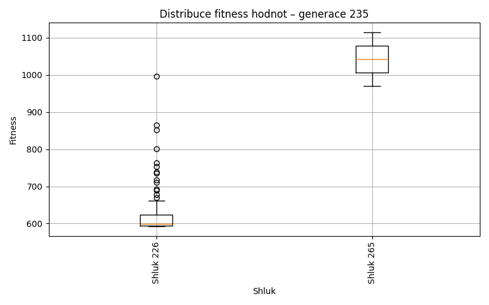
Generace 236
Stabilita mezi generací 235 → 236:
Shluk 226 → 226: 96 jedinců (98.0 %)
Shluk 226 → 265: 2 jedinců (2.0 %)
Shluk 265 → 265: 2 jedinců (100.0 %)
Jaccardovo mapování a overlap: Generace 235 → 236
- Shluk 226 → 226 (Jaccard: 0.98, Overlap: 1.00)
- Shluk 265 → 265 (Jaccard: 0.50, Overlap: 1.00)
Posun centroidů mezi generací 235 → 236:
- Shluk 0: 3.2796
- Shluk 1: 94.8331
Generace 237
Stabilita mezi generací 236 → 237:
Shluk 226 → 226: 91 jedinců (94.8 %)
Shluk 226 → 266: 5 jedinců (5.2 %)
Shluk 265 → 265: 3 jedinců (75.0 %)
Shluk 265 → 226: 1 jedinců (25.0 %)
Jaccardovo mapování a overlap: Generace 236 → 237
- Shluk 226 → 226 (Jaccard: 0.94, Overlap: 0.99)
- Shluk 265 → 265 (Jaccard: 0.75, Overlap: 1.00)
Posun centroidů mezi generací 236 → 237:
- Shluk 0: 37.1471
- Shluk 1: 92.0750
Generace 238
Stabilita mezi generací 237 → 238:
Shluk 226 → 226: 91 jedinců (98.9 %)
Shluk 226 → 267: 1 jedinců (1.1 %)
Shluk 266 → 226: 3 jedinců (60.0 %)
Shluk 266 → 266: 2 jedinců (40.0 %)
Shluk 265 → 226: 3 jedinců (100.0 %)
Jaccardovo mapování a overlap: Generace 237 → 238
- Shluk 226 → 226 (Jaccard: 0.93, Overlap: 0.99)
- Shluk 266 → 266 (Jaccard: 0.40, Overlap: 1.00)
- Shluk 265 → 226 (Jaccard: 0.03, Overlap: 1.00)
Posun centroidů mezi generací 237 → 238:
- Shluk 0: 35.8306
- Shluk 1: 64.1787
- Shluk 2: 57.6068
Generace 239
Stabilita mezi generací 238 → 239:
Shluk 226 → 226: 97 jedinců (100.0 %)
Shluk 266 → 226: 2 jedinců (100.0 %)
Shluk 267 → 226: 1 jedinců (100.0 %)
Jaccardovo mapování a overlap: Generace 238 → 239
- Shluk 226 → 226 (Jaccard: 0.97, Overlap: 1.00)
- Shluk 266 → 226 (Jaccard: 0.02, Overlap: 1.00)
- Shluk 267 → 226 (Jaccard: 0.01, Overlap: 1.00)
Posun centroidů mezi generací 238 → 239:
- Shluk 0: 3.1951
Generace 240
Stabilita mezi generací 239 → 240:
Shluk 226 → 226: 97 jedinců (97.0 %)
Shluk 226 → 268: 1 jedinců (1.0 %)
Shluk 226 → 269: 2 jedinců (2.0 %)
Jaccardovo mapování a overlap: Generace 239 → 240
- Shluk 226 → 226 (Jaccard: 0.97, Overlap: 1.00)
Posun centroidů mezi generací 239 → 240:
- Shluk 0: 2.8248
Generace 241
Stabilita mezi generací 240 → 241:
Shluk 226 → 226: 97 jedinců (100.0 %)
Shluk 268 → 268: 1 jedinců (100.0 %)
Shluk 269 → 226: 2 jedinců (100.0 %)
Jaccardovo mapování a overlap: Generace 240 → 241
- Shluk 226 → 226 (Jaccard: 0.98, Overlap: 1.00)
- Shluk 268 → 268 (Jaccard: 1.00, Overlap: 1.00)
- Shluk 269 → 226 (Jaccard: 0.02, Overlap: 1.00)
Posun centroidů mezi generací 240 → 241:
- Shluk 0: 2.3973
- Shluk 1: 153.0689
Generace 242
Stabilita mezi generací 241 → 242:
Shluk 226 → 226: 96 jedinců (97.0 %)
Shluk 226 → 268: 1 jedinců (1.0 %)
Shluk 226 → 270: 2 jedinců (2.0 %)
Shluk 268 → 268: 1 jedinců (100.0 %)
Jaccardovo mapování a overlap: Generace 241 → 242
- Shluk 226 → 226 (Jaccard: 0.97, Overlap: 1.00)
- Shluk 268 → 268 (Jaccard: 0.50, Overlap: 1.00)
Posun centroidů mezi generací 241 → 242:
- Shluk 0: 1.4700
- Shluk 1: 113.1159
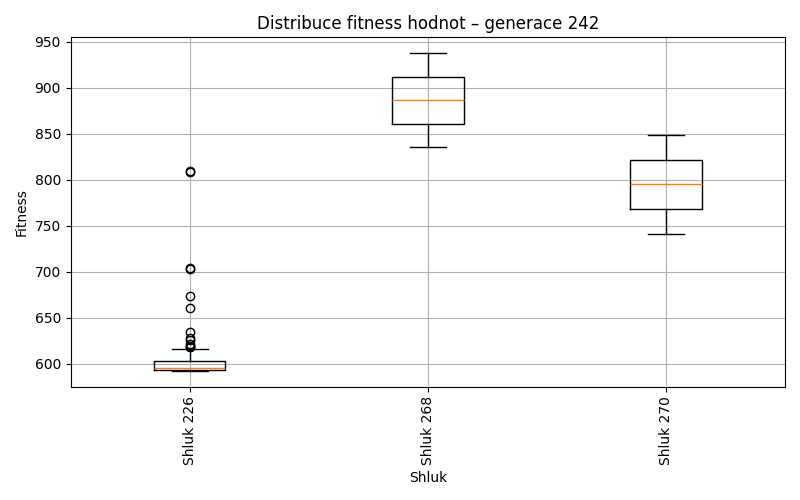
Generace 243
Stabilita mezi generací 242 → 243:
Shluk 226 → 226: 96 jedinců (100.0 %)
Shluk 268 → 268: 1 jedinců (50.0 %)
Shluk 268 → 226: 1 jedinců (50.0 %)
Shluk 270 → 226: 2 jedinců (100.0 %)
Jaccardovo mapování a overlap: Generace 242 → 243
- Shluk 226 → 226 (Jaccard: 0.97, Overlap: 1.00)
- Shluk 268 → 268 (Jaccard: 0.50, Overlap: 1.00)
- Shluk 270 → 226 (Jaccard: 0.02, Overlap: 1.00)
Posun centroidů mezi generací 242 → 243:
- Shluk 0: 1.5773
- Shluk 1: 108.2147
Generace 244
Stabilita mezi generací 243 → 244:
Shluk 226 → 226: 98 jedinců (99.0 %)
Shluk 226 → 271: 1 jedinců (1.0 %)
Shluk 268 → 226: 1 jedinců (100.0 %)
Jaccardovo mapování a overlap: Generace 243 → 244
- Shluk 226 → 226 (Jaccard: 0.98, Overlap: 0.99)
- Shluk 268 → 226 (Jaccard: 0.01, Overlap: 1.00)
Posun centroidů mezi generací 243 → 244:
- Shluk 0: 1.4762
- Shluk 1: 105.6139
Generace 245
Stabilita mezi generací 244 → 245:
Shluk 226 → 226: 98 jedinců (99.0 %)
Shluk 226 → 272: 1 jedinců (1.0 %)
Shluk 271 → 271: 1 jedinců (100.0 %)
Jaccardovo mapování a overlap: Generace 244 → 245
- Shluk 226 → 226 (Jaccard: 0.99, Overlap: 1.00)
- Shluk 271 → 271 (Jaccard: 1.00, Overlap: 1.00)
Posun centroidů mezi generací 244 → 245:
- Shluk 0: 1.9279
- Shluk 1: 4.8480
Generace 246
Stabilita mezi generací 245 → 246:
Shluk 226 → 226: 98 jedinců (100.0 %)
Shluk 272 → 272: 1 jedinců (100.0 %)
Shluk 271 → 226: 1 jedinců (100.0 %)
Jaccardovo mapování a overlap: Generace 245 → 246
- Shluk 226 → 226 (Jaccard: 0.99, Overlap: 1.00)
- Shluk 272 → 272 (Jaccard: 1.00, Overlap: 1.00)
- Shluk 271 → 226 (Jaccard: 0.01, Overlap: 1.00)
Posun centroidů mezi generací 245 → 246:
- Shluk 0: 1.4687
- Shluk 1: 130.0963
Generace 247
Stabilita mezi generací 246 → 247:
Shluk 226 → 226: 98 jedinců (99.0 %)
Shluk 226 → 273: 1 jedinců (1.0 %)
Shluk 272 → 226: 1 jedinců (100.0 %)
Jaccardovo mapování a overlap: Generace 246 → 247
- Shluk 226 → 226 (Jaccard: 0.98, Overlap: 0.99)
- Shluk 272 → 226 (Jaccard: 0.01, Overlap: 1.00)
Posun centroidů mezi generací 246 → 247:
- Shluk 0: 1.9848
- Shluk 1: 130.3134
Generace 248

Stabilita mezi generací 247 → 248:
Shluk 226 → 226: 98 jedinců (99.0 %)
Shluk 226 → 274: 1 jedinců (1.0 %)
Shluk 273 → 226: 1 jedinců (100.0 %)
Jaccardovo mapování a overlap: Generace 247 → 248
- Shluk 226 → 226 (Jaccard: 0.98, Overlap: 0.99)
- Shluk 273 → 226 (Jaccard: 0.01, Overlap: 1.00)
Posun centroidů mezi generací 247 → 248:
- Shluk 0: 1.7891
- Shluk 1: 104.3527
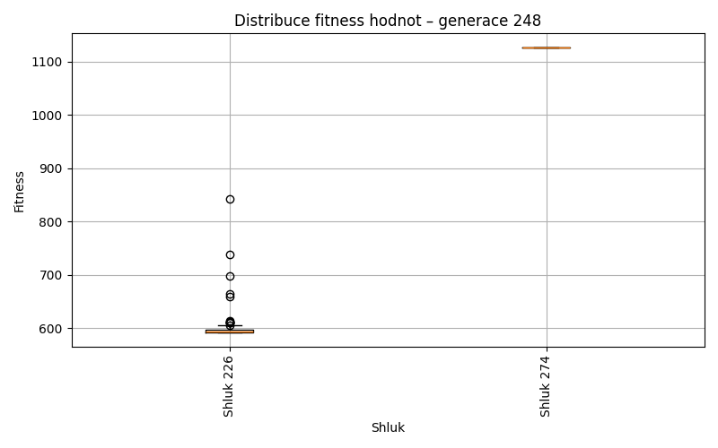
Generace 249
Stabilita mezi generací 248 → 249:
Shluk 226 → 226: 99 jedinců (100.0 %)
Shluk 274 → 274: 1 jedinců (100.0 %)
Jaccardovo mapování a overlap: Generace 248 → 249
- Shluk 226 → 226 (Jaccard: 1.00, Overlap: 1.00)
- Shluk 274 → 274 (Jaccard: 1.00, Overlap: 1.00)
Posun centroidů mezi generací 248 → 249:
- Shluk 0: 0.8239
- Shluk 1: 114.2301

Generace 250
Stabilita mezi generací 249 → 250:
Shluk 226 → 226: 99 jedinců (100.0 %)
Shluk 274 → 274: 1 jedinců (100.0 %)
Jaccardovo mapování a overlap: Generace 249 → 250
- Shluk 226 → 226 (Jaccard: 1.00, Overlap: 1.00)
- Shluk 274 → 274 (Jaccard: 1.00, Overlap: 1.00)
Posun centroidů mezi generací 249 → 250:
- Shluk 0: 1.6264
- Shluk 1: 184.8010
Generace 251

Stabilita mezi generací 250 → 251:
Shluk 226 → 226: 98 jedinců (99.0 %)
Shluk 226 → 275: 1 jedinců (1.0 %)
Shluk 274 → 274: 1 jedinců (100.0 %)
Jaccardovo mapování a overlap: Generace 250 → 251
- Shluk 226 → 226 (Jaccard: 0.99, Overlap: 1.00)
- Shluk 274 → 274 (Jaccard: 1.00, Overlap: 1.00)
Posun centroidů mezi generací 250 → 251:
- Shluk 0: 1.0995
- Shluk 1: 130.7778
Generace 252
Stabilita mezi generací 251 → 252:
Shluk 226 → 226: 98 jedinců (100.0 %)
Shluk 274 → 274: 1 jedinců (100.0 %)
Shluk 275 → 226: 1 jedinců (100.0 %)
Jaccardovo mapování a overlap: Generace 251 → 252
- Shluk 226 → 226 (Jaccard: 0.99, Overlap: 1.00)
- Shluk 274 → 274 (Jaccard: 1.00, Overlap: 1.00)
- Shluk 275 → 226 (Jaccard: 0.01, Overlap: 1.00)
Posun centroidů mezi generací 251 → 252:
- Shluk 0: 1.5618
- Shluk 1: 62.9980
Generace 253
Stabilita mezi generací 252 → 253:
Shluk 226 → 226: 96 jedinců (97.0 %)
Shluk 226 → 276: 2 jedinců (2.0 %)
Shluk 226 → 277: 1 jedinců (1.0 %)
Shluk 274 → 226: 1 jedinců (100.0 %)
Jaccardovo mapování a overlap: Generace 252 → 253
- Shluk 226 → 226 (Jaccard: 0.96, Overlap: 0.99)
- Shluk 274 → 226 (Jaccard: 0.01, Overlap: 1.00)
Posun centroidů mezi generací 252 → 253:
- Shluk 0: 1.4685
- Shluk 1: 91.0082
Generace 254
Stabilita mezi generací 253 → 254:
Shluk 226 → 226: 96 jedinců (99.0 %)
Shluk 226 → 277: 1 jedinců (1.0 %)
Shluk 276 → 226: 2 jedinců (100.0 %)
Shluk 277 → 277: 1 jedinců (100.0 %)
Jaccardovo mapování a overlap: Generace 253 → 254
- Shluk 226 → 226 (Jaccard: 0.97, Overlap: 0.99)
- Shluk 276 → 226 (Jaccard: 0.02, Overlap: 1.00)
- Shluk 277 → 277 (Jaccard: 0.50, Overlap: 1.00)
Posun centroidů mezi generací 253 → 254:
- Shluk 0: 48.5695
- Shluk 1: 71.0275
Generace 255
Stabilita mezi generací 254 → 255:
Shluk 226 → 226: 96 jedinců (98.0 %)
Shluk 226 → 277: 2 jedinců (2.0 %)
Shluk 277 → 277: 1 jedinců (50.0 %)
Shluk 277 → 226: 1 jedinců (50.0 %)
Jaccardovo mapování a overlap: Generace 254 → 255
- Shluk 226 → 226 (Jaccard: 0.97, Overlap: 0.99)
- Shluk 277 → 277 (Jaccard: 0.25, Overlap: 0.50)
Posun centroidů mezi generací 254 → 255:
- Shluk 0: 54.3639
- Shluk 1: 0.3825
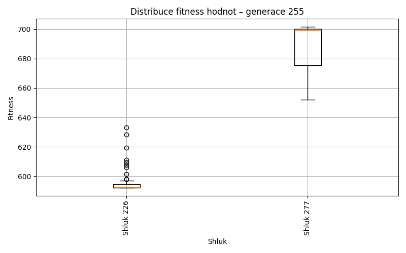
Generace 256
Stabilita mezi generací 255 → 256:
Shluk 226 → 226: 97 jedinců (100.0 %)
Shluk 277 → 226: 3 jedinců (100.0 %)
Jaccardovo mapování a overlap: Generace 255 → 256
- Shluk 226 → 226 (Jaccard: 0.97, Overlap: 1.00)
- Shluk 277 → 226 (Jaccard: 0.03, Overlap: 1.00)
Posun centroidů mezi generací 255 → 256:
- Shluk 0: 23.2465
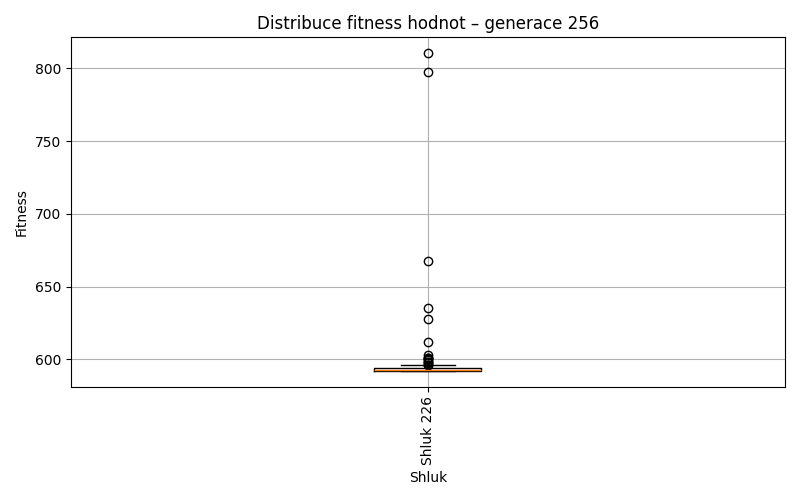
Generace 257
Stabilita mezi generací 256 → 257:
Shluk 226 → 226: 99 jedinců (99.0 %)
Shluk 226 → 278: 1 jedinců (1.0 %)
Jaccardovo mapování a overlap: Generace 256 → 257
- Shluk 226 → 226 (Jaccard: 0.99, Overlap: 1.00)
Posun centroidů mezi generací 256 → 257:
- Shluk 0: 1.2608
Generace 258
Stabilita mezi generací 257 → 258:
Shluk 226 → 226: 99 jedinců (100.0 %)
Shluk 278 → 278: 1 jedinců (100.0 %)
Jaccardovo mapování a overlap: Generace 257 → 258
- Shluk 226 → 226 (Jaccard: 1.00, Overlap: 1.00)
- Shluk 278 → 278 (Jaccard: 1.00, Overlap: 1.00)
Posun centroidů mezi generací 257 → 258:
- Shluk 0: 0.7400
- Shluk 1: 59.6462
Generace 259
Stabilita mezi generací 258 → 259:
Shluk 226 → 226: 99 jedinců (100.0 %)
Shluk 278 → 278: 1 jedinců (100.0 %)
Jaccardovo mapování a overlap: Generace 258 → 259
- Shluk 226 → 226 (Jaccard: 1.00, Overlap: 1.00)
- Shluk 278 → 278 (Jaccard: 1.00, Overlap: 1.00)
Posun centroidů mezi generací 258 → 259:
- Shluk 0: 0.9719
- Shluk 1: 100.8329
Generace 260

Stabilita mezi generací 259 → 260:
Shluk 226 → 226: 94 jedinců (94.9 %)
Shluk 226 → 278: 3 jedinců (3.0 %)
Shluk 226 → 279: 2 jedinců (2.0 %)
Shluk 278 → 278: 1 jedinců (100.0 %)
Jaccardovo mapování a overlap: Generace 259 → 260
- Shluk 226 → 226 (Jaccard: 0.95, Overlap: 1.00)
- Shluk 278 → 278 (Jaccard: 0.25, Overlap: 1.00)
Posun centroidů mezi generací 259 → 260:
- Shluk 0: 15.9519
- Shluk 1: 69.7375
Generace 261
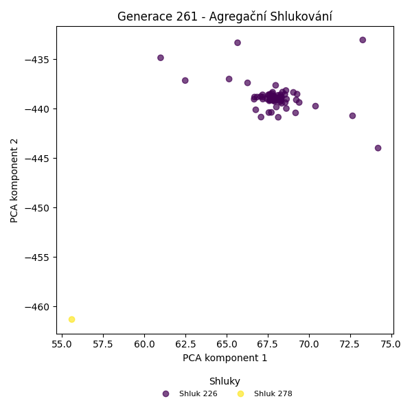
Stabilita mezi generací 260 → 261:
Shluk 226 → 226: 94 jedinců (100.0 %)
Shluk 278 → 278: 1 jedinců (25.0 %)
Shluk 278 → 226: 3 jedinců (75.0 %)
Shluk 279 → 226: 2 jedinců (100.0 %)
Jaccardovo mapování a overlap: Generace 260 → 261
- Shluk 226 → 226 (Jaccard: 0.95, Overlap: 1.00)
- Shluk 278 → 278 (Jaccard: 0.25, Overlap: 1.00)
- Shluk 279 → 226 (Jaccard: 0.02, Overlap: 1.00)
Posun centroidů mezi generací 260 → 261:
- Shluk 0: 15.7613
- Shluk 1: 55.0474
Generace 262
Stabilita mezi generací 261 → 262:
Shluk 226 → 226: 99 jedinců (100.0 %)
Shluk 278 → 278: 1 jedinců (100.0 %)
Jaccardovo mapování a overlap: Generace 261 → 262
- Shluk 226 → 226 (Jaccard: 1.00, Overlap: 1.00)
- Shluk 278 → 278 (Jaccard: 1.00, Overlap: 1.00)
Posun centroidů mezi generací 261 → 262:
- Shluk 0: 0.4025
- Shluk 1: 35.9981
Generace 263

Stabilita mezi generací 262 → 263:
Shluk 226 → 226: 98 jedinců (99.0 %)
Shluk 226 → 280: 1 jedinců (1.0 %)
Shluk 278 → 226: 1 jedinců (100.0 %)
Jaccardovo mapování a overlap: Generace 262 → 263
- Shluk 226 → 226 (Jaccard: 0.98, Overlap: 0.99)
- Shluk 278 → 226 (Jaccard: 0.01, Overlap: 1.00)
Posun centroidů mezi generací 262 → 263:
- Shluk 0: 0.8239
- Shluk 1: 47.5849
Generace 264
Stabilita mezi generací 263 → 264:
Shluk 226 → 226: 98 jedinců (99.0 %)
Shluk 226 → 281: 1 jedinců (1.0 %)
Shluk 280 → 226: 1 jedinců (100.0 %)
Jaccardovo mapování a overlap: Generace 263 → 264
- Shluk 226 → 226 (Jaccard: 0.98, Overlap: 0.99)
- Shluk 280 → 226 (Jaccard: 0.01, Overlap: 1.00)
Posun centroidů mezi generací 263 → 264:
- Shluk 0: 0.6642
- Shluk 1: 35.4305
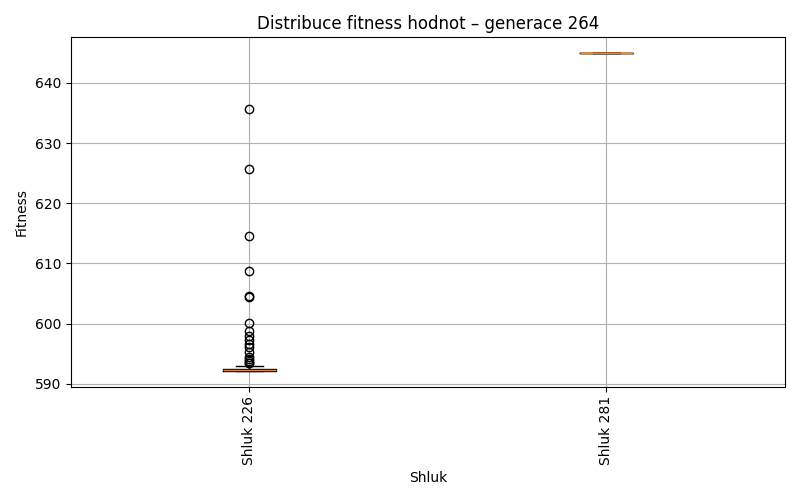
Generace 265

Stabilita mezi generací 264 → 265:
Shluk 226 → 226: 97 jedinců (98.0 %)
Shluk 226 → 282: 2 jedinců (2.0 %)
Shluk 281 → 281: 1 jedinců (100.0 %)
Jaccardovo mapování a overlap: Generace 264 → 265
- Shluk 226 → 226 (Jaccard: 0.98, Overlap: 1.00)
- Shluk 281 → 281 (Jaccard: 1.00, Overlap: 1.00)
Posun centroidů mezi generací 264 → 265:
- Shluk 0: 23.4786
- Shluk 1: 20.6683
Generace 266
Stabilita mezi generací 265 → 266:
Shluk 226 → 226: 97 jedinců (100.0 %)
Shluk 281 → 281: 1 jedinců (100.0 %)
Shluk 282 → 282: 1 jedinců (50.0 %)
Shluk 282 → 226: 1 jedinců (50.0 %)
Jaccardovo mapování a overlap: Generace 265 → 266
- Shluk 226 → 226 (Jaccard: 0.99, Overlap: 1.00)
- Shluk 281 → 281 (Jaccard: 1.00, Overlap: 1.00)
- Shluk 282 → 282 (Jaccard: 0.50, Overlap: 1.00)
Posun centroidů mezi generací 265 → 266:
- Shluk 0: 23.2724
- Shluk 1: 29.5409
- Shluk 2: 42.7250

Generace 267
Stabilita mezi generací 266 → 267:
Shluk 226 → 226: 98 jedinců (100.0 %)
Shluk 281 → 226: 1 jedinců (100.0 %)
Shluk 282 → 282: 1 jedinců (100.0 %)
Jaccardovo mapování a overlap: Generace 266 → 267
- Shluk 226 → 226 (Jaccard: 0.99, Overlap: 1.00)
- Shluk 281 → 226 (Jaccard: 0.01, Overlap: 1.00)
- Shluk 282 → 282 (Jaccard: 1.00, Overlap: 1.00)
Posun centroidů mezi generací 266 → 267:
- Shluk 0: 0.4251
- Shluk 1: 58.9500
Generace 268
Stabilita mezi generací 267 → 268:
Shluk 226 → 226: 99 jedinců (100.0 %)
Shluk 282 → 282: 1 jedinců (100.0 %)
Jaccardovo mapování a overlap: Generace 267 → 268
- Shluk 226 → 226 (Jaccard: 1.00, Overlap: 1.00)
- Shluk 282 → 282 (Jaccard: 1.00, Overlap: 1.00)
Posun centroidů mezi generací 267 → 268:
- Shluk 0: 0.4732
- Shluk 1: 65.7695
Generace 269
Stabilita mezi generací 268 → 269:
Shluk 226 → 226: 99 jedinců (100.0 %)
Shluk 282 → 282: 1 jedinců (100.0 %)
Jaccardovo mapování a overlap: Generace 268 → 269
- Shluk 226 → 226 (Jaccard: 1.00, Overlap: 1.00)
- Shluk 282 → 282 (Jaccard: 1.00, Overlap: 1.00)
Posun centroidů mezi generací 268 → 269:
- Shluk 0: 0.4174
- Shluk 1: 52.3925
Generace 270
Stabilita mezi generací 269 → 270:
Shluk 226 → 226: 97 jedinců (98.0 %)
Shluk 226 → 283: 2 jedinců (2.0 %)
Shluk 282 → 226: 1 jedinců (100.0 %)
Jaccardovo mapování a overlap: Generace 269 → 270
- Shluk 226 → 226 (Jaccard: 0.97, Overlap: 0.99)
- Shluk 282 → 226 (Jaccard: 0.01, Overlap: 1.00)
Posun centroidů mezi generací 269 → 270:
- Shluk 0: 0.3252
- Shluk 1: 35.6499
Generace 271
Stabilita mezi generací 270 → 271:
Shluk 226 → 226: 98 jedinců (100.0 %)
Shluk 283 → 283: 1 jedinců (50.0 %)
Shluk 283 → 226: 1 jedinců (50.0 %)
Jaccardovo mapování a overlap: Generace 270 → 271
- Shluk 226 → 226 (Jaccard: 0.99, Overlap: 1.00)
- Shluk 283 → 283 (Jaccard: 0.50, Overlap: 1.00)
Posun centroidů mezi generací 270 → 271:
- Shluk 0: 0.2782
- Shluk 1: 17.9745
Generace 272
Stabilita mezi generací 271 → 272:
Shluk 226 → 226: 97 jedinců (98.0 %)
Shluk 226 → 284: 1 jedinců (1.0 %)
Shluk 226 → 285: 1 jedinců (1.0 %)
Shluk 283 → 226: 1 jedinců (100.0 %)
Jaccardovo mapování a overlap: Generace 271 → 272
- Shluk 226 → 226 (Jaccard: 0.97, Overlap: 0.99)
- Shluk 283 → 226 (Jaccard: 0.01, Overlap: 1.00)
Posun centroidů mezi generací 271 → 272:
- Shluk 0: 0.2673
- Shluk 1: 24.9214

Generace 273
Stabilita mezi generací 272 → 273:
Shluk 226 → 226: 95 jedinců (96.9 %)
Shluk 226 → 284: 1 jedinců (1.0 %)
Shluk 226 → 286: 2 jedinců (2.0 %)
Shluk 284 → 284: 1 jedinců (100.0 %)
Shluk 285 → 226: 1 jedinců (100.0 %)
Jaccardovo mapování a overlap: Generace 272 → 273
- Shluk 226 → 226 (Jaccard: 0.96, Overlap: 0.99)
- Shluk 284 → 284 (Jaccard: 0.50, Overlap: 1.00)
- Shluk 285 → 226 (Jaccard: 0.01, Overlap: 1.00)
Posun centroidů mezi generací 272 → 273:
- Shluk 0: 8.1233
- Shluk 1: 22.2268
- Shluk 2: 12.2992
Generace 274

Stabilita mezi generací 273 → 274:
Shluk 226 → 226: 96 jedinců (100.0 %)
Shluk 284 → 284: 1 jedinců (50.0 %)
Shluk 284 → 226: 1 jedinců (50.0 %)
Shluk 286 → 226: 2 jedinců (100.0 %)
Jaccardovo mapování a overlap: Generace 273 → 274
- Shluk 226 → 226 (Jaccard: 0.97, Overlap: 1.00)
- Shluk 284 → 284 (Jaccard: 0.50, Overlap: 1.00)
- Shluk 286 → 226 (Jaccard: 0.02, Overlap: 1.00)
Posun centroidů mezi generací 273 → 274:
- Shluk 0: 8.2393
- Shluk 1: 34.4050
Generace 275
Stabilita mezi generací 274 → 275:
Shluk 226 → 226: 99 jedinců (100.0 %)
Shluk 284 → 284: 1 jedinců (100.0 %)
Jaccardovo mapování a overlap: Generace 274 → 275
- Shluk 226 → 226 (Jaccard: 1.00, Overlap: 1.00)
- Shluk 284 → 284 (Jaccard: 1.00, Overlap: 1.00)
Posun centroidů mezi generací 274 → 275:
- Shluk 0: 0.3992
- Shluk 1: 5.4621
Generace 276

Stabilita mezi generací 275 → 276:
Shluk 226 → 226: 99 jedinců (100.0 %)
Shluk 284 → 284: 1 jedinců (100.0 %)
Jaccardovo mapování a overlap: Generace 275 → 276
- Shluk 226 → 226 (Jaccard: 1.00, Overlap: 1.00)
- Shluk 284 → 284 (Jaccard: 1.00, Overlap: 1.00)
Posun centroidů mezi generací 275 → 276:
- Shluk 0: 0.2028
- Shluk 1: 54.3873
Generace 277
Stabilita mezi generací 276 → 277:
Shluk 226 → 226: 99 jedinců (100.0 %)
Shluk 284 → 284: 1 jedinců (100.0 %)
Jaccardovo mapování a overlap: Generace 276 → 277
- Shluk 226 → 226 (Jaccard: 1.00, Overlap: 1.00)
- Shluk 284 → 284 (Jaccard: 1.00, Overlap: 1.00)
Posun centroidů mezi generací 276 → 277:
- Shluk 0: 0.2716
- Shluk 1: 111.2294
Generace 278
Stabilita mezi generací 277 → 278:
Shluk 226 → 226: 99 jedinců (100.0 %)
Shluk 284 → 284: 1 jedinců (100.0 %)
Jaccardovo mapování a overlap: Generace 277 → 278
- Shluk 226 → 226 (Jaccard: 1.00, Overlap: 1.00)
- Shluk 284 → 284 (Jaccard: 1.00, Overlap: 1.00)
Posun centroidů mezi generací 277 → 278:
- Shluk 0: 0.2779
- Shluk 1: 133.0976
Generace 279
Stabilita mezi generací 278 → 279:
Shluk 226 → 226: 99 jedinců (100.0 %)
Shluk 284 → 284: 1 jedinců (100.0 %)
Jaccardovo mapování a overlap: Generace 278 → 279
- Shluk 226 → 226 (Jaccard: 1.00, Overlap: 1.00)
- Shluk 284 → 284 (Jaccard: 1.00, Overlap: 1.00)
Posun centroidů mezi generací 278 → 279:
- Shluk 0: 0.2162
- Shluk 1: 90.8569
Generace 280
Stabilita mezi generací 279 → 280:
Shluk 226 → 226: 99 jedinců (100.0 %)
Shluk 284 → 284: 1 jedinců (100.0 %)
Jaccardovo mapování a overlap: Generace 279 → 280
- Shluk 226 → 226 (Jaccard: 1.00, Overlap: 1.00)
- Shluk 284 → 284 (Jaccard: 1.00, Overlap: 1.00)
Posun centroidů mezi generací 279 → 280:
- Shluk 0: 0.1053
- Shluk 1: 74.7231
Generace 281
Stabilita mezi generací 280 → 281:
Shluk 226 → 226: 99 jedinců (100.0 %)
Shluk 284 → 284: 1 jedinců (100.0 %)
Jaccardovo mapování a overlap: Generace 280 → 281
- Shluk 226 → 226 (Jaccard: 1.00, Overlap: 1.00)
- Shluk 284 → 284 (Jaccard: 1.00, Overlap: 1.00)
Posun centroidů mezi generací 280 → 281:
- Shluk 0: 0.1606
- Shluk 1: 92.2302
Generace 282
Stabilita mezi generací 281 → 282:
Shluk 226 → 226: 99 jedinců (100.0 %)
Shluk 284 → 284: 1 jedinců (100.0 %)
Jaccardovo mapování a overlap: Generace 281 → 282
- Shluk 226 → 226 (Jaccard: 1.00, Overlap: 1.00)
- Shluk 284 → 284 (Jaccard: 1.00, Overlap: 1.00)
Posun centroidů mezi generací 281 → 282:
- Shluk 0: 0.1187
- Shluk 1: 19.9208
Generace 283
Stabilita mezi generací 282 → 283:
Shluk 226 → 226: 99 jedinců (100.0 %)
Shluk 284 → 284: 1 jedinců (100.0 %)
Jaccardovo mapování a overlap: Generace 282 → 283
- Shluk 226 → 226 (Jaccard: 1.00, Overlap: 1.00)
- Shluk 284 → 284 (Jaccard: 1.00, Overlap: 1.00)
Posun centroidů mezi generací 282 → 283:
- Shluk 0: 0.1146
- Shluk 1: 59.1006

Generace 284
Stabilita mezi generací 283 → 284:
Shluk 226 → 226: 99 jedinců (100.0 %)
Shluk 284 → 284: 1 jedinců (100.0 %)
Jaccardovo mapování a overlap: Generace 283 → 284
- Shluk 226 → 226 (Jaccard: 1.00, Overlap: 1.00)
- Shluk 284 → 284 (Jaccard: 1.00, Overlap: 1.00)
Posun centroidů mezi generací 283 → 284:
- Shluk 0: 0.1343
- Shluk 1: 7.3622
Generace 285
Stabilita mezi generací 284 → 285:
Shluk 226 → 226: 99 jedinců (100.0 %)
Shluk 284 → 284: 1 jedinců (100.0 %)
Jaccardovo mapování a overlap: Generace 284 → 285
- Shluk 226 → 226 (Jaccard: 1.00, Overlap: 1.00)
- Shluk 284 → 284 (Jaccard: 1.00, Overlap: 1.00)
Posun centroidů mezi generací 284 → 285:
- Shluk 0: 0.1262
- Shluk 1: 66.9074
Generace 286
Stabilita mezi generací 285 → 286:
Shluk 226 → 226: 99 jedinců (100.0 %)
Shluk 284 → 284: 1 jedinců (100.0 %)
Jaccardovo mapování a overlap: Generace 285 → 286
- Shluk 226 → 226 (Jaccard: 1.00, Overlap: 1.00)
- Shluk 284 → 284 (Jaccard: 1.00, Overlap: 1.00)
Posun centroidů mezi generací 285 → 286:
- Shluk 0: 0.1124
- Shluk 1: 57.1064
Generace 287
Stabilita mezi generací 286 → 287:
Shluk 226 → 226: 99 jedinců (100.0 %)
Shluk 284 → 284: 1 jedinců (100.0 %)
Jaccardovo mapování a overlap: Generace 286 → 287
- Shluk 226 → 226 (Jaccard: 1.00, Overlap: 1.00)
- Shluk 284 → 284 (Jaccard: 1.00, Overlap: 1.00)
Posun centroidů mezi generací 286 → 287:
- Shluk 0: 0.0910
- Shluk 1: 14.2265
Generace 288
Stabilita mezi generací 287 → 288:
Shluk 226 → 226: 99 jedinců (100.0 %)
Shluk 284 → 284: 1 jedinců (100.0 %)
Jaccardovo mapování a overlap: Generace 287 → 288
- Shluk 226 → 226 (Jaccard: 1.00, Overlap: 1.00)
- Shluk 284 → 284 (Jaccard: 1.00, Overlap: 1.00)
Posun centroidů mezi generací 287 → 288:
- Shluk 0: 0.0950
- Shluk 1: 41.3929
Generace 289
Stabilita mezi generací 288 → 289:
Shluk 226 → 226: 99 jedinců (100.0 %)
Shluk 284 → 284: 1 jedinců (100.0 %)
Jaccardovo mapování a overlap: Generace 288 → 289
- Shluk 226 → 226 (Jaccard: 1.00, Overlap: 1.00)
- Shluk 284 → 284 (Jaccard: 1.00, Overlap: 1.00)
Posun centroidů mezi generací 288 → 289:
- Shluk 0: 0.0740
- Shluk 1: 39.6647
Generace 290
Stabilita mezi generací 289 → 290:
Shluk 226 → 226: 99 jedinců (100.0 %)
Shluk 284 → 284: 1 jedinců (100.0 %)
Jaccardovo mapování a overlap: Generace 289 → 290
- Shluk 226 → 226 (Jaccard: 1.00, Overlap: 1.00)
- Shluk 284 → 284 (Jaccard: 1.00, Overlap: 1.00)
Posun centroidů mezi generací 289 → 290:
- Shluk 0: 0.0401
- Shluk 1: 4.2133
Generace 291
Stabilita mezi generací 290 → 291:
Shluk 226 → 226: 98 jedinců (99.0 %)
Shluk 226 → 287: 1 jedinců (1.0 %)
Shluk 284 → 226: 1 jedinců (100.0 %)
Jaccardovo mapování a overlap: Generace 290 → 291
- Shluk 226 → 226 (Jaccard: 0.98, Overlap: 0.99)
- Shluk 284 → 226 (Jaccard: 0.01, Overlap: 1.00)
Posun centroidů mezi generací 290 → 291:
- Shluk 0: 0.0584
- Shluk 1: 13.6305
Generace 292
Stabilita mezi generací 291 → 292:
Shluk 226 → 226: 98 jedinců (99.0 %)
Shluk 226 → 288: 1 jedinců (1.0 %)
Shluk 287 → 226: 1 jedinců (100.0 %)
Jaccardovo mapování a overlap: Generace 291 → 292
- Shluk 226 → 226 (Jaccard: 0.98, Overlap: 0.99)
- Shluk 287 → 226 (Jaccard: 0.01, Overlap: 1.00)
Posun centroidů mezi generací 291 → 292:
- Shluk 0: 0.0375
- Shluk 1: 8.4089
Generace 293
Stabilita mezi generací 292 → 293:
Shluk 226 → 226: 98 jedinců (99.0 %)
Shluk 226 → 289: 1 jedinců (1.0 %)
Shluk 288 → 226: 1 jedinců (100.0 %)
Jaccardovo mapování a overlap: Generace 292 → 293
- Shluk 226 → 226 (Jaccard: 0.98, Overlap: 0.99)
- Shluk 288 → 226 (Jaccard: 0.01, Overlap: 1.00)
Posun centroidů mezi generací 292 → 293:
- Shluk 0: 0.0533
- Shluk 1: 6.6035
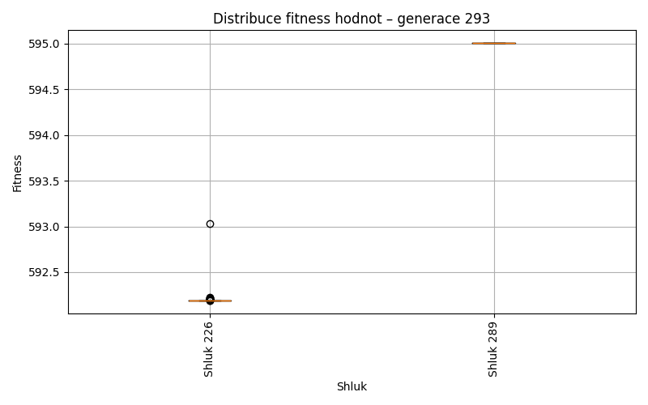
Generace 294
Stabilita mezi generací 293 → 294:
Shluk 226 → 226: 99 jedinců (100.0 %)
Shluk 289 → 289: 1 jedinců (100.0 %)
Jaccardovo mapování a overlap: Generace 293 → 294
- Shluk 226 → 226 (Jaccard: 1.00, Overlap: 1.00)
- Shluk 289 → 289 (Jaccard: 1.00, Overlap: 1.00)
Posun centroidů mezi generací 293 → 294:
- Shluk 0: 0.0286
- Shluk 1: 9.0345
Generace 295
Stabilita mezi generací 294 → 295:
Shluk 226 → 226: 99 jedinců (100.0 %)
Shluk 289 → 289: 1 jedinců (100.0 %)
Jaccardovo mapování a overlap: Generace 294 → 295
- Shluk 226 → 226 (Jaccard: 1.00, Overlap: 1.00)
- Shluk 289 → 289 (Jaccard: 1.00, Overlap: 1.00)
Posun centroidů mezi generací 294 → 295:
- Shluk 0: 0.0500
- Shluk 1: 10.8144
Generace 296
Stabilita mezi generací 295 → 296:
Shluk 226 → 226: 99 jedinců (100.0 %)
Shluk 289 → 289: 1 jedinců (100.0 %)
Jaccardovo mapování a overlap: Generace 295 → 296
- Shluk 226 → 226 (Jaccard: 1.00, Overlap: 1.00)
- Shluk 289 → 289 (Jaccard: 1.00, Overlap: 1.00)
Posun centroidů mezi generací 295 → 296:
- Shluk 0: 0.0458
- Shluk 1: 4.5330
Generace 297
Stabilita mezi generací 296 → 297:
Shluk 226 → 226: 99 jedinců (100.0 %)
Shluk 289 → 289: 1 jedinců (100.0 %)
Jaccardovo mapování a overlap: Generace 296 → 297
- Shluk 226 → 226 (Jaccard: 1.00, Overlap: 1.00)
- Shluk 289 → 289 (Jaccard: 1.00, Overlap: 1.00)
Posun centroidů mezi generací 296 → 297:
- Shluk 0: 0.0272
- Shluk 1: 14.0346
Generace 298
Stabilita mezi generací 297 → 298:
Shluk 226 → 226: 99 jedinců (100.0 %)
Shluk 289 → 289: 1 jedinců (100.0 %)
Jaccardovo mapování a overlap: Generace 297 → 298
- Shluk 226 → 226 (Jaccard: 1.00, Overlap: 1.00)
- Shluk 289 → 289 (Jaccard: 1.00, Overlap: 1.00)
Posun centroidů mezi generací 297 → 298:
- Shluk 0: 0.0231
- Shluk 1: 17.5366
Generace 299
Stabilita mezi generací 298 → 299:
Shluk 226 → 226: 99 jedinců (100.0 %)
Shluk 289 → 289: 1 jedinců (100.0 %)
Jaccardovo mapování a overlap: Generace 298 → 299
- Shluk 226 → 226 (Jaccard: 1.00, Overlap: 1.00)
- Shluk 289 → 289 (Jaccard: 1.00, Overlap: 1.00)
Posun centroidů mezi generací 298 → 299:
- Shluk 0: 0.0222
- Shluk 1: 12.6364